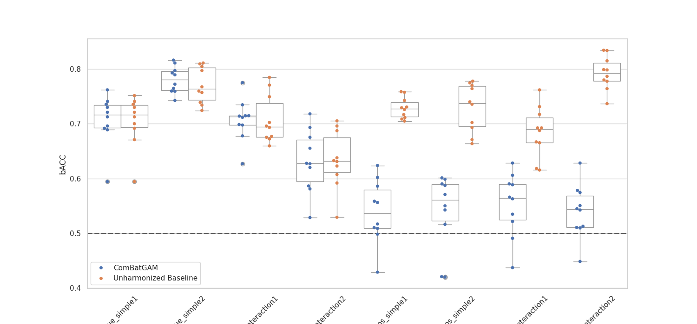

Note
Go to the end to download the full example code.
Using ComBatGAM with MAREoS dataset#
Imports#
import warnings
import matplotlib.pyplot as plt
import pandas as pd
import seaborn as sns
from sklearn.ensemble import RandomForestClassifier
from sklearn.exceptions import ConvergenceWarning
from sklearn.linear_model import LogisticRegression
from sklearn.metrics import balanced_accuracy_score
from uniharmony import verbosity
from uniharmony.combat import ComBatGAM
from uniharmony.datasets import load_MAREoS
sns.set_theme(style="whitegrid")
verbosity("debug")
warnings.filterwarnings(action="ignore", category=ConvergenceWarning)
Data loading#
Load MAREoS benchmark dataset
datasets = load_MAREoS()loads simulated neuroimaging benchmark data.The dataset contains multiple scenarios (
truevseoseffects;simplevsinteraction; example 1/2).
# Load the MAREoS dataset (made for benchmarking harmonisation methods)
datasets = load_MAREoS()
# Define the different effects, effect types, and examples to iterate over
effects = ["true", "eos"]
effect_types = ["simple", "interaction"]
effect_examples = ["1", "2"]
random_state = 23
# Assign an empty list to each key in the results dictionary
unharmonized_results = []
neurocombat_results = []
# Define the harmonisation model to use (ComBatGAM in this case)
harm_model = ComBatGAM()
2026-05-07 08:53:19 [info ] MAREoS datasets already exist at: /home/runner/.cache/uniharmony/MAREoS
2026-05-07 08:53:19 [info ] Getting data file: /home/runner/.cache/uniharmony/MAREoS/public_datasets/eos_simple1_data.csv
2026-05-07 08:53:19 [info ] Getting data file: /home/runner/.cache/uniharmony/MAREoS/public_datasets/eos_simple2_data.csv
2026-05-07 08:53:19 [info ] Getting data file: /home/runner/.cache/uniharmony/MAREoS/public_datasets/eos_interaction1_data.csv
2026-05-07 08:53:19 [info ] Getting data file: /home/runner/.cache/uniharmony/MAREoS/public_datasets/eos_interaction2_data.csv
2026-05-07 08:53:19 [info ] Getting data file: /home/runner/.cache/uniharmony/MAREoS/public_datasets/true_simple1_data.csv
2026-05-07 08:53:19 [info ] Getting data file: /home/runner/.cache/uniharmony/MAREoS/public_datasets/true_simple2_data.csv
2026-05-07 08:53:19 [info ] Getting data file: /home/runner/.cache/uniharmony/MAREoS/public_datasets/true_interaction1_data.csv
2026-05-07 08:53:19 [info ] Getting data file: /home/runner/.cache/uniharmony/MAREoS/public_datasets/true_interaction2_data.csv
Experiments#
- Iterates all combinations:
effect=trueoreoseffect_type=simpleorinteractionexample=1or2
- For each combination:
Choose classifier: logistic regression for simple; random forest for interaction.
Extract data:
X,y,sites,folds.- Do leave-one-fold-out cross-validation:
train on folds != current fold
test on fold == current fold
Train baseline classifier on unharmonized training data and compute balanced accuracy on raw test.
Harmonize training with
NeuroComBat.fit_transform(...), then train classifier, transform test, compute balanced accuracy.
Collect results into two lists and then into DataFrames.
for effect in effects:
for e_types in effect_types:
if e_types == "interaction":
clf = RandomForestClassifier(n_estimators=10, random_state=random_state)
elif e_types == "simple":
clf = LogisticRegression(random_state=random_state)
for e_example in effect_examples:
example = effect + "_" + e_types + e_example
print(f"Running experiment: {example}")
data = datasets[example]
sites = data["sites"]
X = data["X"]
folds = data["folds"]
folds = pd.Series(folds)
sites = data["sites"]
target = data["y"]
covars = target.ravel().reshape(-1, 1)
for fold in folds.unique():
# Train Data
X = data["X"].copy()
y = data["y"].copy()
sites = data["sites"].copy()
# Train Target
X_train = X[data["folds"] != fold]
site_train = sites[data["folds"] != fold]
y_train = y[data["folds"] != fold]
# Test data
X_test = X[data["folds"] == fold]
site_test = sites[data["folds"] == fold]
# Test target
y_test = y[data["folds"] == fold]
# Unharmonized baseline model
clf.fit(X_train, y_train)
unharmonized_results.append(
[
balanced_accuracy_score(y_true=y_test, y_pred=clf.predict(X=X_test)),
fold,
effect,
e_types,
e_example,
example,
]
)
# ComBatGAM (do not include target as covariate - avoiding data leakage)
X_train_harm = harm_model.fit_transform(X=X_train, sites=site_train, smooth_covariates=y_train.reshape(-1, 1))
# Fit the model with the harmonized train
clf.fit(X_train_harm, y_train)
# harmonize the test data
X_test_harm = harm_model.transform(X=X_test, sites=site_test, smooth_covariates=y_test.reshape(-1, 1))
neurocombat_results.append(
[
balanced_accuracy_score(y_true=y_test, y_pred=clf.predict(X=X_test_harm)),
fold,
effect,
e_types,
e_example,
example,
]
)
# Results to dataframe
unharmonized_results = pd.DataFrame(data=unharmonized_results, columns=["bACC", "Fold", "Effect", "Type", "Example", "Name"])
unharmonized_results["Method"] = "Unharmonized Baseline"
neurocombat_results = pd.DataFrame(data=neurocombat_results, columns=["bACC", "Fold", "Effect", "Type", "Example", "Name"])
neurocombat_results["Method"] = "ComBatGAM"
results = pd.concat([unharmonized_results, neurocombat_results])
Running experiment: true_simple1
2026-05-07 08:53:19 [debug ] Fitting
2026-05-07 08:53:19 [info ] If you intend to build a machine learning (ML) model,then make sure that you DO *NOT* preserve the ML model's target as covariate. You will be required to provide the covariate also at transform time, and this will produce data leakage. If you are performing a statistical analysis and want to preserve a variable of interest, then it is correct to specify it as covariate.
2026-05-07 08:53:19 [debug ] Making design matrix
2026-05-07 08:53:19 [debug ] Fitted site encoder: 8 sites
2026-05-07 08:53:19 [debug ] Sites encoded: 901 samples x 8 sites
2026-05-07 08:53:19 [debug ] Design matrix shape: (901, 8)
2026-05-07 08:53:19 [debug ] Setting up smoothing using B-Splines
2026-05-07 08:53:19 [debug ] Final formula for smoothing: y ~ x0 + x1 + x2 + x3 + x4 + x5 + x6 + x7 - 1
2026-05-07 08:53:19 [debug ] Standardizing data across features
2026-05-07 08:53:19 [info ] Smoothing more than 10 variables may take several minutes of computation.
2026-05-07 08:53:42 [debug ] Standardization stats:
2026-05-07 08:53:42 [debug ] Grand mean range: [1.5774, 3.7007]
2026-05-07 08:53:42 [debug ] Pooled std range: [0.1476, 0.4787]
2026-05-07 08:53:42 [debug ] Standardized data mean: 0.000000 (should be ~0)
2026-05-07 08:53:42 [debug ] Standardized data std: 1.0036 (should be ~1)
2026-05-07 08:53:42 [debug ] Fitting L/S model
2026-05-07 08:53:42 [debug ] L/S Model estimates:
2026-05-07 08:53:42 [debug ] Gamma hat shape: (8, 68)
2026-05-07 08:53:42 [debug ] Gamma hat range: [-0.2719, 0.2311]
2026-05-07 08:53:42 [debug ] Site 0 delta range: [0.7041, 1.4152]
2026-05-07 08:53:42 [debug ] Site 1 delta range: [0.6168, 1.2738]
2026-05-07 08:53:42 [debug ] Site 2 delta range: [0.7613, 1.2790]
2026-05-07 08:53:42 [debug ] Site 3 delta range: [0.6940, 1.3520]
2026-05-07 08:53:42 [debug ] Site 4 delta range: [0.7728, 1.2707]
2026-05-07 08:53:42 [debug ] Site 5 delta range: [0.6689, 1.2866]
2026-05-07 08:53:42 [debug ] Site 6 delta range: [0.7550, 1.2527]
2026-05-07 08:53:42 [debug ] Site 7 delta range: [0.6654, 1.2399]
2026-05-07 08:53:42 [debug ] Finding priors
2026-05-07 08:53:42 [debug ] Gamma bar (mean location effect): [-0.01574326 0.00117241 -0.01156688 0.01303456 0.00155992 -0.00131986
0.00864478 0.00433077]
2026-05-07 08:53:42 [debug ] Tau^2 (variance of location effects): [0.00879426 0.00571798 0.00638334 0.00911007 0.00682202 0.00614394
0.00718981 0.00763316]
2026-05-07 08:53:42 [debug ] Mean tau^2: 0.007224 (higher = more heterogeneous effects)
2026-05-07 08:53:42 [debug ] Finding parametric adjustments
2026-05-07 08:53:42 [debug ] _iteration_solver converged in 4 iterations (change=0.000002)
2026-05-07 08:53:42 [debug ] _iteration_solver converged in 4 iterations (change=0.000000)
2026-05-07 08:53:42 [debug ] _iteration_solver converged in 4 iterations (change=0.000002)
2026-05-07 08:53:42 [debug ] _iteration_solver converged in 4 iterations (change=0.000001)
2026-05-07 08:53:42 [debug ] _iteration_solver converged in 4 iterations (change=0.000003)
2026-05-07 08:53:42 [debug ] _iteration_solver converged in 4 iterations (change=0.000001)
2026-05-07 08:53:42 [debug ] _iteration_solver converged in 4 iterations (change=0.000001)
2026-05-07 08:53:42 [debug ] _iteration_solver converged in 4 iterations (change=0.000001)
2026-05-07 08:53:42 [debug ] Transforming
2026-05-07 08:53:42 [debug ] Making design matrix
2026-05-07 08:53:42 [debug ] Sites encoded: 901 samples x 8 sites
2026-05-07 08:53:42 [debug ] Design matrix shape: (901, 8)
2026-05-07 08:53:42 [debug ] Setting up smoothing using B-Splines
2026-05-07 08:53:42 [debug ] Standardizing data across features
2026-05-07 08:53:42 [debug ] Standardization stats:
2026-05-07 08:53:42 [debug ] Grand mean range: [1.5774, 3.7007]
2026-05-07 08:53:42 [debug ] Pooled std range: [0.1476, 0.4787]
2026-05-07 08:53:42 [debug ] Standardized data mean: 0.000000 (should be ~0)
2026-05-07 08:53:42 [debug ] Standardized data std: 1.0036 (should be ~1)
2026-05-07 08:53:42 [debug ] Harmonizing data
2026-05-07 08:53:42 [debug ] Transforming
2026-05-07 08:53:42 [debug ] Making design matrix
2026-05-07 08:53:42 [debug ] Sites encoded: 100 samples x 8 sites
2026-05-07 08:53:42 [debug ] Design matrix shape: (100, 8)
2026-05-07 08:53:42 [debug ] Setting up smoothing using B-Splines
2026-05-07 08:53:42 [debug ] Standardizing data across features
2026-05-07 08:53:42 [debug ] Standardization stats:
2026-05-07 08:53:42 [debug ] Grand mean range: [1.5774, 3.7007]
2026-05-07 08:53:42 [debug ] Pooled std range: [0.1476, 0.4787]
2026-05-07 08:53:42 [debug ] Standardized data mean: -0.017655 (should be ~0)
2026-05-07 08:53:42 [debug ] Standardized data std: 1.0128 (should be ~1)
2026-05-07 08:53:42 [debug ] Harmonizing data
2026-05-07 08:53:42 [debug ] Fitting
2026-05-07 08:53:42 [info ] If you intend to build a machine learning (ML) model,then make sure that you DO *NOT* preserve the ML model's target as covariate. You will be required to provide the covariate also at transform time, and this will produce data leakage. If you are performing a statistical analysis and want to preserve a variable of interest, then it is correct to specify it as covariate.
2026-05-07 08:53:42 [debug ] Making design matrix
2026-05-07 08:53:42 [debug ] Fitted site encoder: 8 sites
2026-05-07 08:53:42 [debug ] Sites encoded: 901 samples x 8 sites
2026-05-07 08:53:42 [debug ] Design matrix shape: (901, 8)
2026-05-07 08:53:42 [debug ] Setting up smoothing using B-Splines
2026-05-07 08:53:42 [debug ] Final formula for smoothing: y ~ x0 + x1 + x2 + x3 + x4 + x5 + x6 + x7 - 1
2026-05-07 08:53:42 [debug ] Standardizing data across features
2026-05-07 08:53:42 [info ] Smoothing more than 10 variables may take several minutes of computation.
2026-05-07 08:54:04 [debug ] Standardization stats:
2026-05-07 08:54:04 [debug ] Grand mean range: [1.5699, 3.7008]
2026-05-07 08:54:04 [debug ] Pooled std range: [0.1492, 0.4759]
2026-05-07 08:54:04 [debug ] Standardized data mean: 0.000000 (should be ~0)
2026-05-07 08:54:04 [debug ] Standardized data std: 1.0035 (should be ~1)
2026-05-07 08:54:04 [debug ] Fitting L/S model
2026-05-07 08:54:04 [debug ] L/S Model estimates:
2026-05-07 08:54:04 [debug ] Gamma hat shape: (8, 68)
2026-05-07 08:54:04 [debug ] Gamma hat range: [-0.2855, 0.2782]
2026-05-07 08:54:04 [debug ] Site 0 delta range: [0.6806, 1.3419]
2026-05-07 08:54:04 [debug ] Site 1 delta range: [0.6661, 1.2768]
2026-05-07 08:54:04 [debug ] Site 2 delta range: [0.7953, 1.2163]
2026-05-07 08:54:04 [debug ] Site 3 delta range: [0.7617, 1.2840]
2026-05-07 08:54:04 [debug ] Site 4 delta range: [0.7905, 1.3014]
2026-05-07 08:54:04 [debug ] Site 5 delta range: [0.5775, 1.2988]
2026-05-07 08:54:04 [debug ] Site 6 delta range: [0.7726, 1.2965]
2026-05-07 08:54:04 [debug ] Site 7 delta range: [0.7539, 1.2524]
2026-05-07 08:54:04 [debug ] Finding priors
2026-05-07 08:54:04 [debug ] Gamma bar (mean location effect): [-0.01507896 0.00428522 -0.02139461 0.01835383 0.00925086 0.00338217
0.00512425 -0.00592358]
2026-05-07 08:54:04 [debug ] Tau^2 (variance of location effects): [0.00721276 0.00647286 0.00778438 0.00798726 0.00668791 0.00597907
0.00625999 0.00817517]
2026-05-07 08:54:04 [debug ] Mean tau^2: 0.007070 (higher = more heterogeneous effects)
2026-05-07 08:54:04 [debug ] Finding parametric adjustments
2026-05-07 08:54:04 [debug ] _iteration_solver converged in 4 iterations (change=0.000001)
2026-05-07 08:54:04 [debug ] _iteration_solver converged in 4 iterations (change=0.000001)
2026-05-07 08:54:04 [debug ] _iteration_solver converged in 4 iterations (change=0.000000)
2026-05-07 08:54:04 [debug ] _iteration_solver converged in 4 iterations (change=0.000001)
2026-05-07 08:54:04 [debug ] _iteration_solver converged in 4 iterations (change=0.000002)
2026-05-07 08:54:04 [debug ] _iteration_solver converged in 4 iterations (change=0.000001)
2026-05-07 08:54:04 [debug ] _iteration_solver converged in 4 iterations (change=0.000001)
2026-05-07 08:54:04 [debug ] _iteration_solver converged in 4 iterations (change=0.000002)
2026-05-07 08:54:04 [debug ] Transforming
2026-05-07 08:54:04 [debug ] Making design matrix
2026-05-07 08:54:04 [debug ] Sites encoded: 901 samples x 8 sites
2026-05-07 08:54:04 [debug ] Design matrix shape: (901, 8)
2026-05-07 08:54:04 [debug ] Setting up smoothing using B-Splines
2026-05-07 08:54:04 [debug ] Standardizing data across features
2026-05-07 08:54:04 [debug ] Standardization stats:
2026-05-07 08:54:04 [debug ] Grand mean range: [1.5699, 3.7008]
2026-05-07 08:54:04 [debug ] Pooled std range: [0.1492, 0.4759]
2026-05-07 08:54:04 [debug ] Standardized data mean: 0.000000 (should be ~0)
2026-05-07 08:54:04 [debug ] Standardized data std: 1.0035 (should be ~1)
2026-05-07 08:54:04 [debug ] Harmonizing data
2026-05-07 08:54:04 [debug ] Transforming
2026-05-07 08:54:04 [debug ] Making design matrix
2026-05-07 08:54:04 [debug ] Sites encoded: 100 samples x 8 sites
2026-05-07 08:54:04 [debug ] Design matrix shape: (100, 8)
2026-05-07 08:54:04 [debug ] Setting up smoothing using B-Splines
2026-05-07 08:54:04 [debug ] Standardizing data across features
2026-05-07 08:54:04 [debug ] Standardization stats:
2026-05-07 08:54:04 [debug ] Grand mean range: [1.5699, 3.7008]
2026-05-07 08:54:04 [debug ] Pooled std range: [0.1492, 0.4759]
2026-05-07 08:54:04 [debug ] Standardized data mean: 0.014483 (should be ~0)
2026-05-07 08:54:04 [debug ] Standardized data std: 1.0193 (should be ~1)
2026-05-07 08:54:04 [debug ] Harmonizing data
2026-05-07 08:54:04 [debug ] Fitting
2026-05-07 08:54:04 [info ] If you intend to build a machine learning (ML) model,then make sure that you DO *NOT* preserve the ML model's target as covariate. You will be required to provide the covariate also at transform time, and this will produce data leakage. If you are performing a statistical analysis and want to preserve a variable of interest, then it is correct to specify it as covariate.
2026-05-07 08:54:04 [debug ] Making design matrix
2026-05-07 08:54:04 [debug ] Fitted site encoder: 8 sites
2026-05-07 08:54:04 [debug ] Sites encoded: 900 samples x 8 sites
2026-05-07 08:54:04 [debug ] Design matrix shape: (900, 8)
2026-05-07 08:54:04 [debug ] Setting up smoothing using B-Splines
2026-05-07 08:54:04 [debug ] Final formula for smoothing: y ~ x0 + x1 + x2 + x3 + x4 + x5 + x6 + x7 - 1
2026-05-07 08:54:04 [debug ] Standardizing data across features
2026-05-07 08:54:04 [info ] Smoothing more than 10 variables may take several minutes of computation.
2026-05-07 08:54:26 [debug ] Standardization stats:
2026-05-07 08:54:26 [debug ] Grand mean range: [1.5702, 3.7112]
2026-05-07 08:54:26 [debug ] Pooled std range: [0.1495, 0.4710]
2026-05-07 08:54:26 [debug ] Standardized data mean: 0.000000 (should be ~0)
2026-05-07 08:54:26 [debug ] Standardized data std: 1.0038 (should be ~1)
2026-05-07 08:54:26 [debug ] Fitting L/S model
2026-05-07 08:54:26 [debug ] L/S Model estimates:
2026-05-07 08:54:26 [debug ] Gamma hat shape: (8, 68)
2026-05-07 08:54:26 [debug ] Gamma hat range: [-0.2527, 0.2963]
2026-05-07 08:54:26 [debug ] Site 0 delta range: [0.6729, 1.3819]
2026-05-07 08:54:26 [debug ] Site 1 delta range: [0.6392, 1.3465]
2026-05-07 08:54:26 [debug ] Site 2 delta range: [0.7782, 1.2796]
2026-05-07 08:54:26 [debug ] Site 3 delta range: [0.7441, 1.3889]
2026-05-07 08:54:26 [debug ] Site 4 delta range: [0.8227, 1.2913]
2026-05-07 08:54:26 [debug ] Site 5 delta range: [0.6058, 1.3013]
2026-05-07 08:54:26 [debug ] Site 6 delta range: [0.7736, 1.2509]
2026-05-07 08:54:26 [debug ] Site 7 delta range: [0.7375, 1.2228]
2026-05-07 08:54:26 [debug ] Finding priors
2026-05-07 08:54:26 [debug ] Gamma bar (mean location effect): [-0.01932831 0.00289674 -0.01154277 0.01335068 0.00518147 0.00198318
0.00182107 0.00573561]
2026-05-07 08:54:26 [debug ] Tau^2 (variance of location effects): [0.00720212 0.00677159 0.00768511 0.00902619 0.0077673 0.00657026
0.00712216 0.00840048]
2026-05-07 08:54:26 [debug ] Mean tau^2: 0.007568 (higher = more heterogeneous effects)
2026-05-07 08:54:26 [debug ] Finding parametric adjustments
2026-05-07 08:54:26 [debug ] _iteration_solver converged in 4 iterations (change=0.000002)
2026-05-07 08:54:26 [debug ] _iteration_solver converged in 3 iterations (change=0.000082)
2026-05-07 08:54:26 [debug ] _iteration_solver converged in 4 iterations (change=0.000001)
2026-05-07 08:54:26 [debug ] _iteration_solver converged in 4 iterations (change=0.000001)
2026-05-07 08:54:26 [debug ] _iteration_solver converged in 4 iterations (change=0.000006)
2026-05-07 08:54:26 [debug ] _iteration_solver converged in 4 iterations (change=0.000001)
2026-05-07 08:54:26 [debug ] _iteration_solver converged in 4 iterations (change=0.000001)
2026-05-07 08:54:26 [debug ] _iteration_solver converged in 4 iterations (change=0.000002)
2026-05-07 08:54:26 [debug ] Transforming
2026-05-07 08:54:26 [debug ] Making design matrix
2026-05-07 08:54:26 [debug ] Sites encoded: 900 samples x 8 sites
2026-05-07 08:54:26 [debug ] Design matrix shape: (900, 8)
2026-05-07 08:54:26 [debug ] Setting up smoothing using B-Splines
2026-05-07 08:54:26 [debug ] Standardizing data across features
2026-05-07 08:54:26 [debug ] Standardization stats:
2026-05-07 08:54:26 [debug ] Grand mean range: [1.5702, 3.7112]
2026-05-07 08:54:26 [debug ] Pooled std range: [0.1495, 0.4710]
2026-05-07 08:54:26 [debug ] Standardized data mean: 0.000000 (should be ~0)
2026-05-07 08:54:26 [debug ] Standardized data std: 1.0038 (should be ~1)
2026-05-07 08:54:26 [debug ] Harmonizing data
2026-05-07 08:54:26 [debug ] Transforming
2026-05-07 08:54:26 [debug ] Making design matrix
2026-05-07 08:54:26 [debug ] Sites encoded: 101 samples x 8 sites
2026-05-07 08:54:26 [debug ] Design matrix shape: (101, 8)
2026-05-07 08:54:26 [debug ] Setting up smoothing using B-Splines
2026-05-07 08:54:26 [debug ] Standardizing data across features
2026-05-07 08:54:26 [debug ] Standardization stats:
2026-05-07 08:54:26 [debug ] Grand mean range: [1.5702, 3.7112]
2026-05-07 08:54:26 [debug ] Pooled std range: [0.1495, 0.4710]
2026-05-07 08:54:26 [debug ] Standardized data mean: 0.023707 (should be ~0)
2026-05-07 08:54:26 [debug ] Standardized data std: 1.0089 (should be ~1)
2026-05-07 08:54:26 [debug ] Harmonizing data
2026-05-07 08:54:26 [debug ] Fitting
2026-05-07 08:54:26 [info ] If you intend to build a machine learning (ML) model,then make sure that you DO *NOT* preserve the ML model's target as covariate. You will be required to provide the covariate also at transform time, and this will produce data leakage. If you are performing a statistical analysis and want to preserve a variable of interest, then it is correct to specify it as covariate.
2026-05-07 08:54:26 [debug ] Making design matrix
2026-05-07 08:54:26 [debug ] Fitted site encoder: 8 sites
2026-05-07 08:54:26 [debug ] Sites encoded: 901 samples x 8 sites
2026-05-07 08:54:26 [debug ] Design matrix shape: (901, 8)
2026-05-07 08:54:26 [debug ] Setting up smoothing using B-Splines
2026-05-07 08:54:26 [debug ] Final formula for smoothing: y ~ x0 + x1 + x2 + x3 + x4 + x5 + x6 + x7 - 1
2026-05-07 08:54:26 [debug ] Standardizing data across features
2026-05-07 08:54:26 [info ] Smoothing more than 10 variables may take several minutes of computation.
2026-05-07 08:54:47 [debug ] Standardization stats:
2026-05-07 08:54:47 [debug ] Grand mean range: [1.5705, 3.6925]
2026-05-07 08:54:47 [debug ] Pooled std range: [0.1490, 0.4808]
2026-05-07 08:54:47 [debug ] Standardized data mean: -0.000000 (should be ~0)
2026-05-07 08:54:47 [debug ] Standardized data std: 1.0034 (should be ~1)
2026-05-07 08:54:47 [debug ] Fitting L/S model
2026-05-07 08:54:47 [debug ] L/S Model estimates:
2026-05-07 08:54:47 [debug ] Gamma hat shape: (8, 68)
2026-05-07 08:54:47 [debug ] Gamma hat range: [-0.2397, 0.2674]
2026-05-07 08:54:47 [debug ] Site 0 delta range: [0.7509, 1.3157]
2026-05-07 08:54:47 [debug ] Site 1 delta range: [0.6766, 1.3283]
2026-05-07 08:54:47 [debug ] Site 2 delta range: [0.7865, 1.3026]
2026-05-07 08:54:47 [debug ] Site 3 delta range: [0.7615, 1.3012]
2026-05-07 08:54:47 [debug ] Site 4 delta range: [0.7533, 1.2931]
2026-05-07 08:54:47 [debug ] Site 5 delta range: [0.6702, 1.2115]
2026-05-07 08:54:47 [debug ] Site 6 delta range: [0.7112, 1.3074]
2026-05-07 08:54:47 [debug ] Site 7 delta range: [0.7820, 1.2309]
2026-05-07 08:54:47 [debug ] Finding priors
2026-05-07 08:54:47 [debug ] Gamma bar (mean location effect): [-0.01180662 0.00975777 -0.01725904 0.01043669 0.00254762 -0.00486196
0.00884739 0.00275608]
2026-05-07 08:54:47 [debug ] Tau^2 (variance of location effects): [0.00674519 0.00617294 0.0062815 0.0082282 0.00756834 0.00517408
0.00694226 0.00761005]
2026-05-07 08:54:47 [debug ] Mean tau^2: 0.006840 (higher = more heterogeneous effects)
2026-05-07 08:54:47 [debug ] Finding parametric adjustments
2026-05-07 08:54:47 [debug ] _iteration_solver converged in 4 iterations (change=0.000001)
2026-05-07 08:54:47 [debug ] _iteration_solver converged in 4 iterations (change=0.000000)
2026-05-07 08:54:47 [debug ] _iteration_solver converged in 4 iterations (change=0.000001)
2026-05-07 08:54:47 [debug ] _iteration_solver converged in 4 iterations (change=0.000001)
2026-05-07 08:54:47 [debug ] _iteration_solver converged in 4 iterations (change=0.000002)
2026-05-07 08:54:47 [debug ] _iteration_solver converged in 4 iterations (change=0.000001)
2026-05-07 08:54:47 [debug ] _iteration_solver converged in 4 iterations (change=0.000000)
2026-05-07 08:54:47 [debug ] _iteration_solver converged in 4 iterations (change=0.000002)
2026-05-07 08:54:47 [debug ] Transforming
2026-05-07 08:54:47 [debug ] Making design matrix
2026-05-07 08:54:47 [debug ] Sites encoded: 901 samples x 8 sites
2026-05-07 08:54:47 [debug ] Design matrix shape: (901, 8)
2026-05-07 08:54:47 [debug ] Setting up smoothing using B-Splines
2026-05-07 08:54:47 [debug ] Standardizing data across features
2026-05-07 08:54:47 [debug ] Standardization stats:
2026-05-07 08:54:47 [debug ] Grand mean range: [1.5705, 3.6925]
2026-05-07 08:54:47 [debug ] Pooled std range: [0.1490, 0.4808]
2026-05-07 08:54:47 [debug ] Standardized data mean: -0.000000 (should be ~0)
2026-05-07 08:54:47 [debug ] Standardized data std: 1.0034 (should be ~1)
2026-05-07 08:54:47 [debug ] Harmonizing data
2026-05-07 08:54:47 [debug ] Transforming
2026-05-07 08:54:47 [debug ] Making design matrix
2026-05-07 08:54:47 [debug ] Sites encoded: 100 samples x 8 sites
2026-05-07 08:54:47 [debug ] Design matrix shape: (100, 8)
2026-05-07 08:54:47 [debug ] Setting up smoothing using B-Splines
2026-05-07 08:54:47 [debug ] Standardizing data across features
2026-05-07 08:54:47 [debug ] Standardization stats:
2026-05-07 08:54:47 [debug ] Grand mean range: [1.5705, 3.6925]
2026-05-07 08:54:47 [debug ] Pooled std range: [0.1490, 0.4808]
2026-05-07 08:54:47 [debug ] Standardized data mean: 0.009994 (should be ~0)
2026-05-07 08:54:47 [debug ] Standardized data std: 1.0063 (should be ~1)
2026-05-07 08:54:47 [debug ] Harmonizing data
2026-05-07 08:54:47 [debug ] Fitting
2026-05-07 08:54:47 [info ] If you intend to build a machine learning (ML) model,then make sure that you DO *NOT* preserve the ML model's target as covariate. You will be required to provide the covariate also at transform time, and this will produce data leakage. If you are performing a statistical analysis and want to preserve a variable of interest, then it is correct to specify it as covariate.
2026-05-07 08:54:47 [debug ] Making design matrix
2026-05-07 08:54:47 [debug ] Fitted site encoder: 8 sites
2026-05-07 08:54:47 [debug ] Sites encoded: 901 samples x 8 sites
2026-05-07 08:54:47 [debug ] Design matrix shape: (901, 8)
2026-05-07 08:54:47 [debug ] Setting up smoothing using B-Splines
2026-05-07 08:54:47 [debug ] Final formula for smoothing: y ~ x0 + x1 + x2 + x3 + x4 + x5 + x6 + x7 - 1
2026-05-07 08:54:47 [debug ] Standardizing data across features
2026-05-07 08:54:47 [info ] Smoothing more than 10 variables may take several minutes of computation.
2026-05-07 08:55:09 [debug ] Standardization stats:
2026-05-07 08:55:09 [debug ] Grand mean range: [1.5726, 3.7110]
2026-05-07 08:55:09 [debug ] Pooled std range: [0.1502, 0.4722]
2026-05-07 08:55:09 [debug ] Standardized data mean: 0.000000 (should be ~0)
2026-05-07 08:55:09 [debug ] Standardized data std: 1.0036 (should be ~1)
2026-05-07 08:55:09 [debug ] Fitting L/S model
2026-05-07 08:55:09 [debug ] L/S Model estimates:
2026-05-07 08:55:09 [debug ] Gamma hat shape: (8, 68)
2026-05-07 08:55:09 [debug ] Gamma hat range: [-0.2758, 0.2758]
2026-05-07 08:55:09 [debug ] Site 0 delta range: [0.6558, 1.3236]
2026-05-07 08:55:09 [debug ] Site 1 delta range: [0.6941, 1.2853]
2026-05-07 08:55:09 [debug ] Site 2 delta range: [0.7688, 1.2317]
2026-05-07 08:55:09 [debug ] Site 3 delta range: [0.7471, 1.3842]
2026-05-07 08:55:09 [debug ] Site 4 delta range: [0.7554, 1.2861]
2026-05-07 08:55:09 [debug ] Site 5 delta range: [0.6318, 1.2670]
2026-05-07 08:55:09 [debug ] Site 6 delta range: [0.7176, 1.2418]
2026-05-07 08:55:09 [debug ] Site 7 delta range: [0.8050, 1.2529]
2026-05-07 08:55:09 [debug ] Finding priors
2026-05-07 08:55:09 [debug ] Gamma bar (mean location effect): [-0.01560911 0.00464162 -0.01857525 0.01527922 0.00625615 0.00968452
-0.0024627 0.00169337]
2026-05-07 08:55:09 [debug ] Tau^2 (variance of location effects): [0.00703363 0.00655019 0.00616736 0.00922893 0.00742539 0.00549629
0.0092047 0.00704741]
2026-05-07 08:55:09 [debug ] Mean tau^2: 0.007269 (higher = more heterogeneous effects)
2026-05-07 08:55:09 [debug ] Finding parametric adjustments
2026-05-07 08:55:09 [debug ] _iteration_solver converged in 4 iterations (change=0.000002)
2026-05-07 08:55:09 [debug ] _iteration_solver converged in 4 iterations (change=0.000001)
2026-05-07 08:55:09 [debug ] _iteration_solver converged in 4 iterations (change=0.000001)
2026-05-07 08:55:09 [debug ] _iteration_solver converged in 4 iterations (change=0.000002)
2026-05-07 08:55:09 [debug ] _iteration_solver converged in 4 iterations (change=0.000002)
2026-05-07 08:55:09 [debug ] _iteration_solver converged in 4 iterations (change=0.000002)
2026-05-07 08:55:09 [debug ] _iteration_solver converged in 4 iterations (change=0.000001)
2026-05-07 08:55:09 [debug ] _iteration_solver converged in 4 iterations (change=0.000000)
2026-05-07 08:55:09 [debug ] Transforming
2026-05-07 08:55:09 [debug ] Making design matrix
2026-05-07 08:55:09 [debug ] Sites encoded: 901 samples x 8 sites
2026-05-07 08:55:09 [debug ] Design matrix shape: (901, 8)
2026-05-07 08:55:09 [debug ] Setting up smoothing using B-Splines
2026-05-07 08:55:09 [debug ] Standardizing data across features
2026-05-07 08:55:09 [debug ] Standardization stats:
2026-05-07 08:55:09 [debug ] Grand mean range: [1.5726, 3.7110]
2026-05-07 08:55:09 [debug ] Pooled std range: [0.1502, 0.4722]
2026-05-07 08:55:09 [debug ] Standardized data mean: 0.000000 (should be ~0)
2026-05-07 08:55:09 [debug ] Standardized data std: 1.0036 (should be ~1)
2026-05-07 08:55:09 [debug ] Harmonizing data
2026-05-07 08:55:09 [debug ] Transforming
2026-05-07 08:55:09 [debug ] Making design matrix
2026-05-07 08:55:09 [debug ] Sites encoded: 100 samples x 8 sites
2026-05-07 08:55:09 [debug ] Design matrix shape: (100, 8)
2026-05-07 08:55:09 [debug ] Setting up smoothing using B-Splines
2026-05-07 08:55:09 [debug ] Standardizing data across features
2026-05-07 08:55:09 [debug ] Standardization stats:
2026-05-07 08:55:09 [debug ] Grand mean range: [1.5726, 3.7110]
2026-05-07 08:55:09 [debug ] Pooled std range: [0.1502, 0.4722]
2026-05-07 08:55:09 [debug ] Standardized data mean: 0.002933 (should be ~0)
2026-05-07 08:55:09 [debug ] Standardized data std: 1.0075 (should be ~1)
2026-05-07 08:55:09 [debug ] Harmonizing data
2026-05-07 08:55:09 [debug ] Fitting
2026-05-07 08:55:09 [info ] If you intend to build a machine learning (ML) model,then make sure that you DO *NOT* preserve the ML model's target as covariate. You will be required to provide the covariate also at transform time, and this will produce data leakage. If you are performing a statistical analysis and want to preserve a variable of interest, then it is correct to specify it as covariate.
2026-05-07 08:55:09 [debug ] Making design matrix
2026-05-07 08:55:09 [debug ] Fitted site encoder: 8 sites
2026-05-07 08:55:09 [debug ] Sites encoded: 901 samples x 8 sites
2026-05-07 08:55:09 [debug ] Design matrix shape: (901, 8)
2026-05-07 08:55:09 [debug ] Setting up smoothing using B-Splines
2026-05-07 08:55:09 [debug ] Final formula for smoothing: y ~ x0 + x1 + x2 + x3 + x4 + x5 + x6 + x7 - 1
2026-05-07 08:55:09 [debug ] Standardizing data across features
2026-05-07 08:55:09 [info ] Smoothing more than 10 variables may take several minutes of computation.
2026-05-07 08:55:31 [debug ] Standardization stats:
2026-05-07 08:55:31 [debug ] Grand mean range: [1.5737, 3.6998]
2026-05-07 08:55:31 [debug ] Pooled std range: [0.1509, 0.4770]
2026-05-07 08:55:31 [debug ] Standardized data mean: -0.000000 (should be ~0)
2026-05-07 08:55:31 [debug ] Standardized data std: 1.0037 (should be ~1)
2026-05-07 08:55:31 [debug ] Fitting L/S model
2026-05-07 08:55:31 [debug ] L/S Model estimates:
2026-05-07 08:55:31 [debug ] Gamma hat shape: (8, 68)
2026-05-07 08:55:31 [debug ] Gamma hat range: [-0.2494, 0.2728]
2026-05-07 08:55:31 [debug ] Site 0 delta range: [0.7516, 1.3566]
2026-05-07 08:55:31 [debug ] Site 1 delta range: [0.6805, 1.3073]
2026-05-07 08:55:31 [debug ] Site 2 delta range: [0.7826, 1.2942]
2026-05-07 08:55:31 [debug ] Site 3 delta range: [0.7345, 1.3829]
2026-05-07 08:55:31 [debug ] Site 4 delta range: [0.7987, 1.3366]
2026-05-07 08:55:31 [debug ] Site 5 delta range: [0.6378, 1.2192]
2026-05-07 08:55:31 [debug ] Site 6 delta range: [0.7350, 1.2642]
2026-05-07 08:55:31 [debug ] Site 7 delta range: [0.7852, 1.2603]
2026-05-07 08:55:31 [debug ] Finding priors
2026-05-07 08:55:31 [debug ] Gamma bar (mean location effect): [-0.01380417 0.00017552 -0.01718058 0.0133509 0.00866288 0.00837695
0.00396152 -0.0037369 ]
2026-05-07 08:55:31 [debug ] Tau^2 (variance of location effects): [0.00791218 0.00772616 0.00714983 0.00820165 0.0073684 0.00632856
0.00757129 0.00766647]
2026-05-07 08:55:31 [debug ] Mean tau^2: 0.007491 (higher = more heterogeneous effects)
2026-05-07 08:55:31 [debug ] Finding parametric adjustments
2026-05-07 08:55:31 [debug ] _iteration_solver converged in 4 iterations (change=0.000001)
2026-05-07 08:55:31 [debug ] _iteration_solver converged in 4 iterations (change=0.000001)
2026-05-07 08:55:31 [debug ] _iteration_solver converged in 4 iterations (change=0.000002)
2026-05-07 08:55:31 [debug ] _iteration_solver converged in 4 iterations (change=0.000001)
2026-05-07 08:55:31 [debug ] _iteration_solver converged in 4 iterations (change=0.000003)
2026-05-07 08:55:31 [debug ] _iteration_solver converged in 4 iterations (change=0.000001)
2026-05-07 08:55:31 [debug ] _iteration_solver converged in 4 iterations (change=0.000001)
2026-05-07 08:55:31 [debug ] _iteration_solver converged in 4 iterations (change=0.000001)
2026-05-07 08:55:31 [debug ] Transforming
2026-05-07 08:55:31 [debug ] Making design matrix
2026-05-07 08:55:31 [debug ] Sites encoded: 901 samples x 8 sites
2026-05-07 08:55:31 [debug ] Design matrix shape: (901, 8)
2026-05-07 08:55:31 [debug ] Setting up smoothing using B-Splines
2026-05-07 08:55:31 [debug ] Standardizing data across features
2026-05-07 08:55:31 [debug ] Standardization stats:
2026-05-07 08:55:31 [debug ] Grand mean range: [1.5737, 3.6998]
2026-05-07 08:55:31 [debug ] Pooled std range: [0.1509, 0.4770]
2026-05-07 08:55:31 [debug ] Standardized data mean: -0.000000 (should be ~0)
2026-05-07 08:55:31 [debug ] Standardized data std: 1.0037 (should be ~1)
2026-05-07 08:55:31 [debug ] Harmonizing data
2026-05-07 08:55:31 [debug ] Transforming
2026-05-07 08:55:31 [debug ] Making design matrix
2026-05-07 08:55:31 [debug ] Sites encoded: 100 samples x 8 sites
2026-05-07 08:55:31 [debug ] Design matrix shape: (100, 8)
2026-05-07 08:55:31 [debug ] Setting up smoothing using B-Splines
2026-05-07 08:55:31 [debug ] Standardizing data across features
2026-05-07 08:55:31 [debug ] Standardization stats:
2026-05-07 08:55:31 [debug ] Grand mean range: [1.5737, 3.6998]
2026-05-07 08:55:31 [debug ] Pooled std range: [0.1509, 0.4770]
2026-05-07 08:55:31 [debug ] Standardized data mean: 0.002344 (should be ~0)
2026-05-07 08:55:31 [debug ] Standardized data std: 0.9977 (should be ~1)
2026-05-07 08:55:31 [debug ] Harmonizing data
2026-05-07 08:55:31 [debug ] Fitting
2026-05-07 08:55:31 [info ] If you intend to build a machine learning (ML) model,then make sure that you DO *NOT* preserve the ML model's target as covariate. You will be required to provide the covariate also at transform time, and this will produce data leakage. If you are performing a statistical analysis and want to preserve a variable of interest, then it is correct to specify it as covariate.
2026-05-07 08:55:31 [debug ] Making design matrix
2026-05-07 08:55:31 [debug ] Fitted site encoder: 8 sites
2026-05-07 08:55:31 [debug ] Sites encoded: 901 samples x 8 sites
2026-05-07 08:55:31 [debug ] Design matrix shape: (901, 8)
2026-05-07 08:55:31 [debug ] Setting up smoothing using B-Splines
2026-05-07 08:55:31 [debug ] Final formula for smoothing: y ~ x0 + x1 + x2 + x3 + x4 + x5 + x6 + x7 - 1
2026-05-07 08:55:31 [debug ] Standardizing data across features
2026-05-07 08:55:31 [info ] Smoothing more than 10 variables may take several minutes of computation.
2026-05-07 08:55:52 [debug ] Standardization stats:
2026-05-07 08:55:52 [debug ] Grand mean range: [1.5737, 3.7058]
2026-05-07 08:55:52 [debug ] Pooled std range: [0.1496, 0.4777]
2026-05-07 08:55:52 [debug ] Standardized data mean: -0.000000 (should be ~0)
2026-05-07 08:55:52 [debug ] Standardized data std: 1.0040 (should be ~1)
2026-05-07 08:55:52 [debug ] Fitting L/S model
2026-05-07 08:55:52 [debug ] L/S Model estimates:
2026-05-07 08:55:52 [debug ] Gamma hat shape: (8, 68)
2026-05-07 08:55:52 [debug ] Gamma hat range: [-0.2979, 0.2779]
2026-05-07 08:55:52 [debug ] Site 0 delta range: [0.7523, 1.4846]
2026-05-07 08:55:52 [debug ] Site 1 delta range: [0.6408, 1.3290]
2026-05-07 08:55:52 [debug ] Site 2 delta range: [0.7302, 1.2880]
2026-05-07 08:55:52 [debug ] Site 3 delta range: [0.7606, 1.2586]
2026-05-07 08:55:52 [debug ] Site 4 delta range: [0.7853, 1.2522]
2026-05-07 08:55:52 [debug ] Site 5 delta range: [0.6279, 1.1860]
2026-05-07 08:55:52 [debug ] Site 6 delta range: [0.7531, 1.2856]
2026-05-07 08:55:52 [debug ] Site 7 delta range: [0.8107, 1.2292]
2026-05-07 08:55:52 [debug ] Finding priors
2026-05-07 08:55:52 [debug ] Gamma bar (mean location effect): [-0.01265913 0.00361947 -0.02232483 0.01106586 0.00780619 0.00622692
0.00191267 0.00239097]
2026-05-07 08:55:52 [debug ] Tau^2 (variance of location effects): [0.00875978 0.00654954 0.0091134 0.0099163 0.00714448 0.00630896
0.00795052 0.00794418]
2026-05-07 08:55:52 [debug ] Mean tau^2: 0.007961 (higher = more heterogeneous effects)
2026-05-07 08:55:52 [debug ] Finding parametric adjustments
2026-05-07 08:55:52 [debug ] _iteration_solver converged in 4 iterations (change=0.000002)
2026-05-07 08:55:52 [debug ] _iteration_solver converged in 4 iterations (change=0.000001)
2026-05-07 08:55:52 [debug ] _iteration_solver converged in 4 iterations (change=0.000000)
2026-05-07 08:55:52 [debug ] _iteration_solver converged in 4 iterations (change=0.000001)
2026-05-07 08:55:52 [debug ] _iteration_solver converged in 4 iterations (change=0.000004)
2026-05-07 08:55:52 [debug ] _iteration_solver converged in 4 iterations (change=0.000000)
2026-05-07 08:55:52 [debug ] _iteration_solver converged in 4 iterations (change=0.000001)
2026-05-07 08:55:52 [debug ] _iteration_solver converged in 4 iterations (change=0.000001)
2026-05-07 08:55:52 [debug ] Transforming
2026-05-07 08:55:52 [debug ] Making design matrix
2026-05-07 08:55:52 [debug ] Sites encoded: 901 samples x 8 sites
2026-05-07 08:55:52 [debug ] Design matrix shape: (901, 8)
2026-05-07 08:55:52 [debug ] Setting up smoothing using B-Splines
2026-05-07 08:55:52 [debug ] Standardizing data across features
2026-05-07 08:55:52 [debug ] Standardization stats:
2026-05-07 08:55:53 [debug ] Grand mean range: [1.5737, 3.7058]
2026-05-07 08:55:53 [debug ] Pooled std range: [0.1496, 0.4777]
2026-05-07 08:55:53 [debug ] Standardized data mean: -0.000000 (should be ~0)
2026-05-07 08:55:53 [debug ] Standardized data std: 1.0040 (should be ~1)
2026-05-07 08:55:53 [debug ] Harmonizing data
2026-05-07 08:55:53 [debug ] Transforming
2026-05-07 08:55:53 [debug ] Making design matrix
2026-05-07 08:55:53 [debug ] Sites encoded: 100 samples x 8 sites
2026-05-07 08:55:53 [debug ] Design matrix shape: (100, 8)
2026-05-07 08:55:53 [debug ] Setting up smoothing using B-Splines
2026-05-07 08:55:53 [debug ] Standardizing data across features
2026-05-07 08:55:53 [debug ] Standardization stats:
2026-05-07 08:55:53 [debug ] Grand mean range: [1.5737, 3.7058]
2026-05-07 08:55:53 [debug ] Pooled std range: [0.1496, 0.4777]
2026-05-07 08:55:53 [debug ] Standardized data mean: 0.008408 (should be ~0)
2026-05-07 08:55:53 [debug ] Standardized data std: 1.0060 (should be ~1)
2026-05-07 08:55:53 [debug ] Harmonizing data
2026-05-07 08:55:53 [debug ] Fitting
2026-05-07 08:55:53 [info ] If you intend to build a machine learning (ML) model,then make sure that you DO *NOT* preserve the ML model's target as covariate. You will be required to provide the covariate also at transform time, and this will produce data leakage. If you are performing a statistical analysis and want to preserve a variable of interest, then it is correct to specify it as covariate.
2026-05-07 08:55:53 [debug ] Making design matrix
2026-05-07 08:55:53 [debug ] Fitted site encoder: 8 sites
2026-05-07 08:55:53 [debug ] Sites encoded: 901 samples x 8 sites
2026-05-07 08:55:53 [debug ] Design matrix shape: (901, 8)
2026-05-07 08:55:53 [debug ] Setting up smoothing using B-Splines
2026-05-07 08:55:53 [debug ] Final formula for smoothing: y ~ x0 + x1 + x2 + x3 + x4 + x5 + x6 + x7 - 1
2026-05-07 08:55:53 [debug ] Standardizing data across features
2026-05-07 08:55:53 [info ] Smoothing more than 10 variables may take several minutes of computation.
2026-05-07 08:56:14 [debug ] Standardization stats:
2026-05-07 08:56:14 [debug ] Grand mean range: [1.5733, 3.7159]
2026-05-07 08:56:14 [debug ] Pooled std range: [0.1502, 0.4738]
2026-05-07 08:56:14 [debug ] Standardized data mean: -0.000000 (should be ~0)
2026-05-07 08:56:14 [debug ] Standardized data std: 1.0035 (should be ~1)
2026-05-07 08:56:14 [debug ] Fitting L/S model
2026-05-07 08:56:14 [debug ] L/S Model estimates:
2026-05-07 08:56:14 [debug ] Gamma hat shape: (8, 68)
2026-05-07 08:56:14 [debug ] Gamma hat range: [-0.2998, 0.2548]
2026-05-07 08:56:14 [debug ] Site 0 delta range: [0.7024, 1.4353]
2026-05-07 08:56:14 [debug ] Site 1 delta range: [0.6829, 1.2540]
2026-05-07 08:56:14 [debug ] Site 2 delta range: [0.7680, 1.2712]
2026-05-07 08:56:14 [debug ] Site 3 delta range: [0.7701, 1.3246]
2026-05-07 08:56:14 [debug ] Site 4 delta range: [0.7866, 1.3538]
2026-05-07 08:56:14 [debug ] Site 5 delta range: [0.6370, 1.1994]
2026-05-07 08:56:14 [debug ] Site 6 delta range: [0.7428, 1.2669]
2026-05-07 08:56:14 [debug ] Site 7 delta range: [0.7863, 1.2495]
2026-05-07 08:56:14 [debug ] Finding priors
2026-05-07 08:56:14 [debug ] Gamma bar (mean location effect): [-0.02679242 0.00339003 -0.01105245 0.01868963 0.00389844 0.00403941
0.00314159 0.00499776]
2026-05-07 08:56:14 [debug ] Tau^2 (variance of location effects): [0.00742052 0.00601273 0.00618246 0.00934487 0.00708522 0.00585039
0.00612373 0.00797686]
2026-05-07 08:56:14 [debug ] Mean tau^2: 0.007000 (higher = more heterogeneous effects)
2026-05-07 08:56:14 [debug ] Finding parametric adjustments
2026-05-07 08:56:14 [debug ] _iteration_solver converged in 4 iterations (change=0.000001)
2026-05-07 08:56:14 [debug ] _iteration_solver converged in 4 iterations (change=0.000001)
2026-05-07 08:56:14 [debug ] _iteration_solver converged in 4 iterations (change=0.000001)
2026-05-07 08:56:14 [debug ] _iteration_solver converged in 4 iterations (change=0.000001)
2026-05-07 08:56:14 [debug ] _iteration_solver converged in 4 iterations (change=0.000004)
2026-05-07 08:56:14 [debug ] _iteration_solver converged in 4 iterations (change=0.000001)
2026-05-07 08:56:14 [debug ] _iteration_solver converged in 4 iterations (change=0.000001)
2026-05-07 08:56:14 [debug ] _iteration_solver converged in 4 iterations (change=0.000001)
2026-05-07 08:56:14 [debug ] Transforming
2026-05-07 08:56:14 [debug ] Making design matrix
2026-05-07 08:56:14 [debug ] Sites encoded: 901 samples x 8 sites
2026-05-07 08:56:14 [debug ] Design matrix shape: (901, 8)
2026-05-07 08:56:14 [debug ] Setting up smoothing using B-Splines
2026-05-07 08:56:14 [debug ] Standardizing data across features
2026-05-07 08:56:14 [debug ] Standardization stats:
2026-05-07 08:56:14 [debug ] Grand mean range: [1.5733, 3.7159]
2026-05-07 08:56:14 [debug ] Pooled std range: [0.1502, 0.4738]
2026-05-07 08:56:14 [debug ] Standardized data mean: -0.000000 (should be ~0)
2026-05-07 08:56:14 [debug ] Standardized data std: 1.0035 (should be ~1)
2026-05-07 08:56:14 [debug ] Harmonizing data
2026-05-07 08:56:14 [debug ] Transforming
2026-05-07 08:56:14 [debug ] Making design matrix
2026-05-07 08:56:14 [debug ] Sites encoded: 100 samples x 8 sites
2026-05-07 08:56:14 [debug ] Design matrix shape: (100, 8)
2026-05-07 08:56:14 [debug ] Setting up smoothing using B-Splines
2026-05-07 08:56:14 [debug ] Standardizing data across features
2026-05-07 08:56:14 [debug ] Standardization stats:
2026-05-07 08:56:14 [debug ] Grand mean range: [1.5733, 3.7159]
2026-05-07 08:56:14 [debug ] Pooled std range: [0.1502, 0.4738]
2026-05-07 08:56:14 [debug ] Standardized data mean: -0.020215 (should be ~0)
2026-05-07 08:56:14 [debug ] Standardized data std: 1.0093 (should be ~1)
2026-05-07 08:56:14 [debug ] Harmonizing data
2026-05-07 08:56:14 [debug ] Fitting
2026-05-07 08:56:14 [info ] If you intend to build a machine learning (ML) model,then make sure that you DO *NOT* preserve the ML model's target as covariate. You will be required to provide the covariate also at transform time, and this will produce data leakage. If you are performing a statistical analysis and want to preserve a variable of interest, then it is correct to specify it as covariate.
2026-05-07 08:56:14 [debug ] Making design matrix
2026-05-07 08:56:14 [debug ] Fitted site encoder: 8 sites
2026-05-07 08:56:14 [debug ] Sites encoded: 901 samples x 8 sites
2026-05-07 08:56:14 [debug ] Design matrix shape: (901, 8)
2026-05-07 08:56:14 [debug ] Setting up smoothing using B-Splines
2026-05-07 08:56:14 [debug ] Final formula for smoothing: y ~ x0 + x1 + x2 + x3 + x4 + x5 + x6 + x7 - 1
2026-05-07 08:56:14 [debug ] Standardizing data across features
2026-05-07 08:56:14 [info ] Smoothing more than 10 variables may take several minutes of computation.
2026-05-07 08:56:36 [debug ] Standardization stats:
2026-05-07 08:56:36 [debug ] Grand mean range: [1.5743, 3.6979]
2026-05-07 08:56:36 [debug ] Pooled std range: [0.1498, 0.4722]
2026-05-07 08:56:36 [debug ] Standardized data mean: -0.000000 (should be ~0)
2026-05-07 08:56:36 [debug ] Standardized data std: 1.0037 (should be ~1)
2026-05-07 08:56:36 [debug ] Fitting L/S model
2026-05-07 08:56:36 [debug ] L/S Model estimates:
2026-05-07 08:56:36 [debug ] Gamma hat shape: (8, 68)
2026-05-07 08:56:36 [debug ] Gamma hat range: [-0.2615, 0.2908]
2026-05-07 08:56:36 [debug ] Site 0 delta range: [0.7403, 1.4124]
2026-05-07 08:56:36 [debug ] Site 1 delta range: [0.6471, 1.3263]
2026-05-07 08:56:36 [debug ] Site 2 delta range: [0.7777, 1.2616]
2026-05-07 08:56:36 [debug ] Site 3 delta range: [0.7191, 1.3410]
2026-05-07 08:56:36 [debug ] Site 4 delta range: [0.7849, 1.2516]
2026-05-07 08:56:36 [debug ] Site 5 delta range: [0.6026, 1.2551]
2026-05-07 08:56:36 [debug ] Site 6 delta range: [0.7704, 1.2372]
2026-05-07 08:56:36 [debug ] Site 7 delta range: [0.7580, 1.2386]
2026-05-07 08:56:36 [debug ] Finding priors
2026-05-07 08:56:36 [debug ] Gamma bar (mean location effect): [-0.01661906 0.00203254 -0.0233858 0.01917416 0.01080229 0.0071435
0.00223006 -0.00303764]
2026-05-07 08:56:36 [debug ] Tau^2 (variance of location effects): [0.00709959 0.00668669 0.00700987 0.00940684 0.00728525 0.00639797
0.00686057 0.00802837]
2026-05-07 08:56:36 [debug ] Mean tau^2: 0.007347 (higher = more heterogeneous effects)
2026-05-07 08:56:36 [debug ] Finding parametric adjustments
2026-05-07 08:56:36 [debug ] _iteration_solver converged in 4 iterations (change=0.000004)
2026-05-07 08:56:36 [debug ] _iteration_solver converged in 4 iterations (change=0.000000)
2026-05-07 08:56:36 [debug ] _iteration_solver converged in 4 iterations (change=0.000001)
2026-05-07 08:56:36 [debug ] _iteration_solver converged in 4 iterations (change=0.000001)
2026-05-07 08:56:36 [debug ] _iteration_solver converged in 4 iterations (change=0.000003)
2026-05-07 08:56:36 [debug ] _iteration_solver converged in 4 iterations (change=0.000001)
2026-05-07 08:56:36 [debug ] _iteration_solver converged in 4 iterations (change=0.000001)
2026-05-07 08:56:36 [debug ] _iteration_solver converged in 4 iterations (change=0.000002)
2026-05-07 08:56:36 [debug ] Transforming
2026-05-07 08:56:36 [debug ] Making design matrix
2026-05-07 08:56:36 [debug ] Sites encoded: 901 samples x 8 sites
2026-05-07 08:56:36 [debug ] Design matrix shape: (901, 8)
2026-05-07 08:56:36 [debug ] Setting up smoothing using B-Splines
2026-05-07 08:56:36 [debug ] Standardizing data across features
2026-05-07 08:56:36 [debug ] Standardization stats:
2026-05-07 08:56:36 [debug ] Grand mean range: [1.5743, 3.6979]
2026-05-07 08:56:36 [debug ] Pooled std range: [0.1498, 0.4722]
2026-05-07 08:56:36 [debug ] Standardized data mean: -0.000000 (should be ~0)
2026-05-07 08:56:36 [debug ] Standardized data std: 1.0037 (should be ~1)
2026-05-07 08:56:36 [debug ] Harmonizing data
2026-05-07 08:56:36 [debug ] Transforming
2026-05-07 08:56:36 [debug ] Making design matrix
2026-05-07 08:56:36 [debug ] Sites encoded: 100 samples x 8 sites
2026-05-07 08:56:36 [debug ] Design matrix shape: (100, 8)
2026-05-07 08:56:36 [debug ] Setting up smoothing using B-Splines
2026-05-07 08:56:36 [debug ] Standardizing data across features
2026-05-07 08:56:36 [debug ] Standardization stats:
2026-05-07 08:56:36 [debug ] Grand mean range: [1.5743, 3.6979]
2026-05-07 08:56:36 [debug ] Pooled std range: [0.1498, 0.4722]
2026-05-07 08:56:36 [debug ] Standardized data mean: -0.006430 (should be ~0)
2026-05-07 08:56:36 [debug ] Standardized data std: 1.0037 (should be ~1)
2026-05-07 08:56:36 [debug ] Harmonizing data
2026-05-07 08:56:36 [debug ] Fitting
2026-05-07 08:56:36 [info ] If you intend to build a machine learning (ML) model,then make sure that you DO *NOT* preserve the ML model's target as covariate. You will be required to provide the covariate also at transform time, and this will produce data leakage. If you are performing a statistical analysis and want to preserve a variable of interest, then it is correct to specify it as covariate.
2026-05-07 08:56:36 [debug ] Making design matrix
2026-05-07 08:56:36 [debug ] Fitted site encoder: 8 sites
2026-05-07 08:56:36 [debug ] Sites encoded: 901 samples x 8 sites
2026-05-07 08:56:36 [debug ] Design matrix shape: (901, 8)
2026-05-07 08:56:36 [debug ] Setting up smoothing using B-Splines
2026-05-07 08:56:36 [debug ] Final formula for smoothing: y ~ x0 + x1 + x2 + x3 + x4 + x5 + x6 + x7 - 1
2026-05-07 08:56:36 [debug ] Standardizing data across features
2026-05-07 08:56:36 [info ] Smoothing more than 10 variables may take several minutes of computation.
2026-05-07 08:56:58 [debug ] Standardization stats:
2026-05-07 08:56:58 [debug ] Grand mean range: [1.5745, 3.6967]
2026-05-07 08:56:58 [debug ] Pooled std range: [0.1510, 0.4796]
2026-05-07 08:56:58 [debug ] Standardized data mean: 0.000000 (should be ~0)
2026-05-07 08:56:58 [debug ] Standardized data std: 1.0036 (should be ~1)
2026-05-07 08:56:58 [debug ] Fitting L/S model
2026-05-07 08:56:58 [debug ] L/S Model estimates:
2026-05-07 08:56:58 [debug ] Gamma hat shape: (8, 68)
2026-05-07 08:56:58 [debug ] Gamma hat range: [-0.2348, 0.2403]
2026-05-07 08:56:58 [debug ] Site 0 delta range: [0.7301, 1.3775]
2026-05-07 08:56:58 [debug ] Site 1 delta range: [0.6270, 1.2941]
2026-05-07 08:56:58 [debug ] Site 2 delta range: [0.7451, 1.2497]
2026-05-07 08:56:58 [debug ] Site 3 delta range: [0.7362, 1.3464]
2026-05-07 08:56:58 [debug ] Site 4 delta range: [0.7787, 1.3600]
2026-05-07 08:56:58 [debug ] Site 5 delta range: [0.6137, 1.2221]
2026-05-07 08:56:58 [debug ] Site 6 delta range: [0.6914, 1.3286]
2026-05-07 08:56:58 [debug ] Site 7 delta range: [0.7652, 1.2718]
2026-05-07 08:56:58 [debug ] Finding priors
2026-05-07 08:56:58 [debug ] Gamma bar (mean location effect): [-0.01954303 0.00353679 -0.01397268 0.00941195 0.00539468 0.00456038
0.01322638 -0.00132736]
2026-05-07 08:56:58 [debug ] Tau^2 (variance of location effects): [0.00704561 0.00691051 0.00743761 0.00859995 0.00654032 0.00543424
0.00825727 0.0076124 ]
2026-05-07 08:56:58 [debug ] Mean tau^2: 0.007230 (higher = more heterogeneous effects)
2026-05-07 08:56:58 [debug ] Finding parametric adjustments
2026-05-07 08:56:58 [debug ] _iteration_solver converged in 4 iterations (change=0.000001)
2026-05-07 08:56:58 [debug ] _iteration_solver converged in 4 iterations (change=0.000001)
2026-05-07 08:56:58 [debug ] _iteration_solver converged in 4 iterations (change=0.000001)
2026-05-07 08:56:58 [debug ] _iteration_solver converged in 4 iterations (change=0.000001)
2026-05-07 08:56:58 [debug ] _iteration_solver converged in 4 iterations (change=0.000004)
2026-05-07 08:56:58 [debug ] _iteration_solver converged in 4 iterations (change=0.000001)
2026-05-07 08:56:58 [debug ] _iteration_solver converged in 4 iterations (change=0.000001)
2026-05-07 08:56:58 [debug ] _iteration_solver converged in 4 iterations (change=0.000001)
2026-05-07 08:56:58 [debug ] Transforming
2026-05-07 08:56:58 [debug ] Making design matrix
2026-05-07 08:56:58 [debug ] Sites encoded: 901 samples x 8 sites
2026-05-07 08:56:58 [debug ] Design matrix shape: (901, 8)
2026-05-07 08:56:58 [debug ] Setting up smoothing using B-Splines
2026-05-07 08:56:58 [debug ] Standardizing data across features
2026-05-07 08:56:58 [debug ] Standardization stats:
2026-05-07 08:56:58 [debug ] Grand mean range: [1.5745, 3.6967]
2026-05-07 08:56:58 [debug ] Pooled std range: [0.1510, 0.4796]
2026-05-07 08:56:58 [debug ] Standardized data mean: 0.000000 (should be ~0)
2026-05-07 08:56:58 [debug ] Standardized data std: 1.0036 (should be ~1)
2026-05-07 08:56:58 [debug ] Harmonizing data
2026-05-07 08:56:58 [debug ] Transforming
2026-05-07 08:56:58 [debug ] Making design matrix
2026-05-07 08:56:58 [debug ] Sites encoded: 100 samples x 8 sites
2026-05-07 08:56:58 [debug ] Design matrix shape: (100, 8)
2026-05-07 08:56:58 [debug ] Setting up smoothing using B-Splines
2026-05-07 08:56:58 [debug ] Standardizing data across features
2026-05-07 08:56:58 [debug ] Standardization stats:
2026-05-07 08:56:58 [debug ] Grand mean range: [1.5745, 3.6967]
2026-05-07 08:56:58 [debug ] Pooled std range: [0.1510, 0.4796]
2026-05-07 08:56:58 [debug ] Standardized data mean: -0.017226 (should be ~0)
2026-05-07 08:56:58 [debug ] Standardized data std: 0.9984 (should be ~1)
2026-05-07 08:56:58 [debug ] Harmonizing data
Running experiment: true_simple2
2026-05-07 08:56:58 [debug ] Fitting
2026-05-07 08:56:58 [info ] If you intend to build a machine learning (ML) model,then make sure that you DO *NOT* preserve the ML model's target as covariate. You will be required to provide the covariate also at transform time, and this will produce data leakage. If you are performing a statistical analysis and want to preserve a variable of interest, then it is correct to specify it as covariate.
2026-05-07 08:56:58 [debug ] Making design matrix
2026-05-07 08:56:58 [debug ] Fitted site encoder: 8 sites
2026-05-07 08:56:58 [debug ] Sites encoded: 901 samples x 8 sites
2026-05-07 08:56:58 [debug ] Design matrix shape: (901, 8)
2026-05-07 08:56:58 [debug ] Setting up smoothing using B-Splines
2026-05-07 08:56:58 [debug ] Final formula for smoothing: y ~ x0 + x1 + x2 + x3 + x4 + x5 + x6 + x7 - 1
2026-05-07 08:56:58 [debug ] Standardizing data across features
2026-05-07 08:56:58 [info ] Smoothing more than 10 variables may take several minutes of computation.
2026-05-07 08:57:19 [debug ] Standardization stats:
2026-05-07 08:57:19 [debug ] Grand mean range: [211.4581, 7197.5902]
2026-05-07 08:57:19 [debug ] Pooled std range: [37.2711, 900.5361]
2026-05-07 08:57:19 [debug ] Standardized data mean: -0.000000 (should be ~0)
2026-05-07 08:57:19 [debug ] Standardized data std: 1.0040 (should be ~1)
2026-05-07 08:57:19 [debug ] Fitting L/S model
2026-05-07 08:57:19 [debug ] L/S Model estimates:
2026-05-07 08:57:19 [debug ] Gamma hat shape: (8, 68)
2026-05-07 08:57:19 [debug ] Gamma hat range: [-0.2746, 0.2605]
2026-05-07 08:57:19 [debug ] Site 0 delta range: [0.7609, 1.3964]
2026-05-07 08:57:19 [debug ] Site 1 delta range: [0.7906, 1.3453]
2026-05-07 08:57:19 [debug ] Site 2 delta range: [0.7270, 1.3033]
2026-05-07 08:57:19 [debug ] Site 3 delta range: [0.7038, 1.3667]
2026-05-07 08:57:19 [debug ] Site 4 delta range: [0.7339, 1.2920]
2026-05-07 08:57:19 [debug ] Site 5 delta range: [0.7855, 1.2786]
2026-05-07 08:57:19 [debug ] Site 6 delta range: [0.7341, 1.3519]
2026-05-07 08:57:19 [debug ] Site 7 delta range: [0.8094, 1.3145]
2026-05-07 08:57:19 [debug ] Finding priors
2026-05-07 08:57:19 [debug ] Gamma bar (mean location effect): [ 0.01206735 -0.02325661 -0.00202849 0.01106757 0.00336672 0.0116861
-0.00963144 -0.00260186]
2026-05-07 08:57:19 [debug ] Tau^2 (variance of location effects): [0.00776842 0.00614671 0.00823611 0.00987218 0.00541841 0.00861683
0.00870439 0.00919389]
2026-05-07 08:57:19 [debug ] Mean tau^2: 0.007995 (higher = more heterogeneous effects)
2026-05-07 08:57:19 [debug ] Finding parametric adjustments
2026-05-07 08:57:19 [debug ] _iteration_solver converged in 4 iterations (change=0.000000)
2026-05-07 08:57:19 [debug ] _iteration_solver converged in 4 iterations (change=0.000002)
2026-05-07 08:57:19 [debug ] _iteration_solver converged in 4 iterations (change=0.000002)
2026-05-07 08:57:19 [debug ] _iteration_solver converged in 4 iterations (change=0.000002)
2026-05-07 08:57:19 [debug ] _iteration_solver converged in 4 iterations (change=0.000000)
2026-05-07 08:57:19 [debug ] _iteration_solver converged in 4 iterations (change=0.000001)
2026-05-07 08:57:19 [debug ] _iteration_solver converged in 4 iterations (change=0.000001)
2026-05-07 08:57:19 [debug ] _iteration_solver converged in 4 iterations (change=0.000001)
2026-05-07 08:57:19 [debug ] Transforming
2026-05-07 08:57:19 [debug ] Making design matrix
2026-05-07 08:57:19 [debug ] Sites encoded: 901 samples x 8 sites
2026-05-07 08:57:19 [debug ] Design matrix shape: (901, 8)
2026-05-07 08:57:19 [debug ] Setting up smoothing using B-Splines
2026-05-07 08:57:19 [debug ] Standardizing data across features
2026-05-07 08:57:19 [debug ] Standardization stats:
2026-05-07 08:57:19 [debug ] Grand mean range: [211.4581, 7197.5902]
2026-05-07 08:57:19 [debug ] Pooled std range: [37.2711, 900.5361]
2026-05-07 08:57:19 [debug ] Standardized data mean: -0.000000 (should be ~0)
2026-05-07 08:57:19 [debug ] Standardized data std: 1.0040 (should be ~1)
2026-05-07 08:57:19 [debug ] Harmonizing data
2026-05-07 08:57:19 [debug ] Transforming
2026-05-07 08:57:19 [debug ] Making design matrix
2026-05-07 08:57:19 [debug ] Sites encoded: 100 samples x 8 sites
2026-05-07 08:57:19 [debug ] Design matrix shape: (100, 8)
2026-05-07 08:57:19 [debug ] Setting up smoothing using B-Splines
2026-05-07 08:57:19 [debug ] Standardizing data across features
2026-05-07 08:57:19 [debug ] Standardization stats:
2026-05-07 08:57:19 [debug ] Grand mean range: [211.4581, 7197.5902]
2026-05-07 08:57:19 [debug ] Pooled std range: [37.2711, 900.5361]
2026-05-07 08:57:19 [debug ] Standardized data mean: -0.013097 (should be ~0)
2026-05-07 08:57:19 [debug ] Standardized data std: 1.0093 (should be ~1)
2026-05-07 08:57:19 [debug ] Harmonizing data
2026-05-07 08:57:19 [debug ] Fitting
2026-05-07 08:57:19 [info ] If you intend to build a machine learning (ML) model,then make sure that you DO *NOT* preserve the ML model's target as covariate. You will be required to provide the covariate also at transform time, and this will produce data leakage. If you are performing a statistical analysis and want to preserve a variable of interest, then it is correct to specify it as covariate.
2026-05-07 08:57:19 [debug ] Making design matrix
2026-05-07 08:57:19 [debug ] Fitted site encoder: 8 sites
2026-05-07 08:57:19 [debug ] Sites encoded: 901 samples x 8 sites
2026-05-07 08:57:19 [debug ] Design matrix shape: (901, 8)
2026-05-07 08:57:19 [debug ] Setting up smoothing using B-Splines
2026-05-07 08:57:19 [debug ] Final formula for smoothing: y ~ x0 + x1 + x2 + x3 + x4 + x5 + x6 + x7 - 1
2026-05-07 08:57:19 [debug ] Standardizing data across features
2026-05-07 08:57:19 [info ] Smoothing more than 10 variables may take several minutes of computation.
2026-05-07 08:57:41 [debug ] Standardization stats:
2026-05-07 08:57:41 [debug ] Grand mean range: [211.1012, 7202.0533]
2026-05-07 08:57:41 [debug ] Pooled std range: [36.7848, 907.7379]
2026-05-07 08:57:41 [debug ] Standardized data mean: -0.000000 (should be ~0)
2026-05-07 08:57:41 [debug ] Standardized data std: 1.0038 (should be ~1)
2026-05-07 08:57:41 [debug ] Fitting L/S model
2026-05-07 08:57:41 [debug ] L/S Model estimates:
2026-05-07 08:57:41 [debug ] Gamma hat shape: (8, 68)
2026-05-07 08:57:41 [debug ] Gamma hat range: [-0.2730, 0.3024]
2026-05-07 08:57:41 [debug ] Site 0 delta range: [0.7949, 1.3454]
2026-05-07 08:57:41 [debug ] Site 1 delta range: [0.7985, 1.2627]
2026-05-07 08:57:41 [debug ] Site 2 delta range: [0.7428, 1.3490]
2026-05-07 08:57:41 [debug ] Site 3 delta range: [0.7100, 1.3249]
2026-05-07 08:57:41 [debug ] Site 4 delta range: [0.7512, 1.2763]
2026-05-07 08:57:41 [debug ] Site 5 delta range: [0.7223, 1.3637]
2026-05-07 08:57:41 [debug ] Site 6 delta range: [0.6794, 1.3134]
2026-05-07 08:57:41 [debug ] Site 7 delta range: [0.7423, 1.3520]
2026-05-07 08:57:41 [debug ] Finding priors
2026-05-07 08:57:41 [debug ] Gamma bar (mean location effect): [ 0.00934741 -0.02105172 -0.00529472 0.00451088 0.00701974 0.01693441
-0.00715479 -0.00477184]
2026-05-07 08:57:41 [debug ] Tau^2 (variance of location effects): [0.0081647 0.00672687 0.009155 0.00980589 0.00636137 0.00688357
0.0069535 0.00734158]
2026-05-07 08:57:41 [debug ] Mean tau^2: 0.007674 (higher = more heterogeneous effects)
2026-05-07 08:57:41 [debug ] Finding parametric adjustments
2026-05-07 08:57:41 [debug ] _iteration_solver converged in 4 iterations (change=0.000002)
2026-05-07 08:57:41 [debug ] _iteration_solver converged in 4 iterations (change=0.000002)
2026-05-07 08:57:41 [debug ] _iteration_solver converged in 4 iterations (change=0.000004)
2026-05-07 08:57:41 [debug ] _iteration_solver converged in 4 iterations (change=0.000001)
2026-05-07 08:57:41 [debug ] _iteration_solver converged in 4 iterations (change=0.000001)
2026-05-07 08:57:41 [debug ] _iteration_solver converged in 4 iterations (change=0.000001)
2026-05-07 08:57:41 [debug ] _iteration_solver converged in 4 iterations (change=0.000001)
2026-05-07 08:57:41 [debug ] _iteration_solver converged in 4 iterations (change=0.000001)
2026-05-07 08:57:41 [debug ] Transforming
2026-05-07 08:57:41 [debug ] Making design matrix
2026-05-07 08:57:41 [debug ] Sites encoded: 901 samples x 8 sites
2026-05-07 08:57:41 [debug ] Design matrix shape: (901, 8)
2026-05-07 08:57:41 [debug ] Setting up smoothing using B-Splines
2026-05-07 08:57:41 [debug ] Standardizing data across features
2026-05-07 08:57:41 [debug ] Standardization stats:
2026-05-07 08:57:41 [debug ] Grand mean range: [211.1012, 7202.0533]
2026-05-07 08:57:41 [debug ] Pooled std range: [36.7848, 907.7379]
2026-05-07 08:57:41 [debug ] Standardized data mean: -0.000000 (should be ~0)
2026-05-07 08:57:41 [debug ] Standardized data std: 1.0038 (should be ~1)
2026-05-07 08:57:41 [debug ] Harmonizing data
2026-05-07 08:57:41 [debug ] Transforming
2026-05-07 08:57:41 [debug ] Making design matrix
2026-05-07 08:57:41 [debug ] Sites encoded: 100 samples x 8 sites
2026-05-07 08:57:41 [debug ] Design matrix shape: (100, 8)
2026-05-07 08:57:41 [debug ] Setting up smoothing using B-Splines
2026-05-07 08:57:41 [debug ] Standardizing data across features
2026-05-07 08:57:41 [debug ] Standardization stats:
2026-05-07 08:57:41 [debug ] Grand mean range: [211.1012, 7202.0533]
2026-05-07 08:57:41 [debug ] Pooled std range: [36.7848, 907.7379]
2026-05-07 08:57:41 [debug ] Standardized data mean: 0.025447 (should be ~0)
2026-05-07 08:57:41 [debug ] Standardized data std: 0.9911 (should be ~1)
2026-05-07 08:57:41 [debug ] Harmonizing data
2026-05-07 08:57:41 [debug ] Fitting
2026-05-07 08:57:41 [info ] If you intend to build a machine learning (ML) model,then make sure that you DO *NOT* preserve the ML model's target as covariate. You will be required to provide the covariate also at transform time, and this will produce data leakage. If you are performing a statistical analysis and want to preserve a variable of interest, then it is correct to specify it as covariate.
2026-05-07 08:57:41 [debug ] Making design matrix
2026-05-07 08:57:41 [debug ] Fitted site encoder: 8 sites
2026-05-07 08:57:41 [debug ] Sites encoded: 900 samples x 8 sites
2026-05-07 08:57:41 [debug ] Design matrix shape: (900, 8)
2026-05-07 08:57:41 [debug ] Setting up smoothing using B-Splines
2026-05-07 08:57:41 [debug ] Final formula for smoothing: y ~ x0 + x1 + x2 + x3 + x4 + x5 + x6 + x7 - 1
2026-05-07 08:57:41 [debug ] Standardizing data across features
2026-05-07 08:57:41 [info ] Smoothing more than 10 variables may take several minutes of computation.
2026-05-07 08:58:02 [debug ] Standardization stats:
2026-05-07 08:58:02 [debug ] Grand mean range: [212.3110, 7201.5944]
2026-05-07 08:58:02 [debug ] Pooled std range: [37.1461, 895.8984]
2026-05-07 08:58:02 [debug ] Standardized data mean: -0.000000 (should be ~0)
2026-05-07 08:58:02 [debug ] Standardized data std: 1.0037 (should be ~1)
2026-05-07 08:58:02 [debug ] Fitting L/S model
2026-05-07 08:58:02 [debug ] L/S Model estimates:
2026-05-07 08:58:02 [debug ] Gamma hat shape: (8, 68)
2026-05-07 08:58:02 [debug ] Gamma hat range: [-0.2689, 0.2973]
2026-05-07 08:58:02 [debug ] Site 0 delta range: [0.7823, 1.3453]
2026-05-07 08:58:02 [debug ] Site 1 delta range: [0.8227, 1.3147]
2026-05-07 08:58:02 [debug ] Site 2 delta range: [0.6878, 1.3053]
2026-05-07 08:58:02 [debug ] Site 3 delta range: [0.6996, 1.3096]
2026-05-07 08:58:02 [debug ] Site 4 delta range: [0.6962, 1.2976]
2026-05-07 08:58:02 [debug ] Site 5 delta range: [0.7853, 1.3895]
2026-05-07 08:58:02 [debug ] Site 6 delta range: [0.7223, 1.3317]
2026-05-07 08:58:02 [debug ] Site 7 delta range: [0.8268, 1.2417]
2026-05-07 08:58:02 [debug ] Finding priors
2026-05-07 08:58:02 [debug ] Gamma bar (mean location effect): [ 0.00683888 -0.02431915 0.00014137 0.0062609 0.00389312 0.00999666
-0.00540095 0.00290965]
2026-05-07 08:58:02 [debug ] Tau^2 (variance of location effects): [0.00632539 0.00748235 0.00914623 0.00893436 0.00624617 0.00902279
0.00666595 0.00602271]
2026-05-07 08:58:02 [debug ] Mean tau^2: 0.007481 (higher = more heterogeneous effects)
2026-05-07 08:58:02 [debug ] Finding parametric adjustments
2026-05-07 08:58:02 [debug ] _iteration_solver converged in 4 iterations (change=0.000001)
2026-05-07 08:58:02 [debug ] _iteration_solver converged in 4 iterations (change=0.000003)
2026-05-07 08:58:02 [debug ] _iteration_solver converged in 4 iterations (change=0.000002)
2026-05-07 08:58:02 [debug ] _iteration_solver converged in 4 iterations (change=0.000001)
2026-05-07 08:58:02 [debug ] _iteration_solver converged in 4 iterations (change=0.000001)
2026-05-07 08:58:02 [debug ] _iteration_solver converged in 4 iterations (change=0.000001)
2026-05-07 08:58:02 [debug ] _iteration_solver converged in 4 iterations (change=0.000001)
2026-05-07 08:58:02 [debug ] _iteration_solver converged in 4 iterations (change=0.000002)
2026-05-07 08:58:02 [debug ] Transforming
2026-05-07 08:58:02 [debug ] Making design matrix
2026-05-07 08:58:02 [debug ] Sites encoded: 900 samples x 8 sites
2026-05-07 08:58:02 [debug ] Design matrix shape: (900, 8)
2026-05-07 08:58:02 [debug ] Setting up smoothing using B-Splines
2026-05-07 08:58:02 [debug ] Standardizing data across features
2026-05-07 08:58:02 [debug ] Standardization stats:
2026-05-07 08:58:02 [debug ] Grand mean range: [212.3110, 7201.5944]
2026-05-07 08:58:02 [debug ] Pooled std range: [37.1461, 895.8984]
2026-05-07 08:58:02 [debug ] Standardized data mean: -0.000000 (should be ~0)
2026-05-07 08:58:02 [debug ] Standardized data std: 1.0037 (should be ~1)
2026-05-07 08:58:02 [debug ] Harmonizing data
2026-05-07 08:58:02 [debug ] Transforming
2026-05-07 08:58:02 [debug ] Making design matrix
2026-05-07 08:58:02 [debug ] Sites encoded: 101 samples x 8 sites
2026-05-07 08:58:02 [debug ] Design matrix shape: (101, 8)
2026-05-07 08:58:02 [debug ] Setting up smoothing using B-Splines
2026-05-07 08:58:02 [debug ] Standardizing data across features
2026-05-07 08:58:02 [debug ] Standardization stats:
2026-05-07 08:58:02 [debug ] Grand mean range: [212.3110, 7201.5944]
2026-05-07 08:58:02 [debug ] Pooled std range: [37.1461, 895.8984]
2026-05-07 08:58:02 [debug ] Standardized data mean: 0.013093 (should be ~0)
2026-05-07 08:58:02 [debug ] Standardized data std: 1.0369 (should be ~1)
2026-05-07 08:58:02 [debug ] Harmonizing data
2026-05-07 08:58:02 [debug ] Fitting
2026-05-07 08:58:02 [info ] If you intend to build a machine learning (ML) model,then make sure that you DO *NOT* preserve the ML model's target as covariate. You will be required to provide the covariate also at transform time, and this will produce data leakage. If you are performing a statistical analysis and want to preserve a variable of interest, then it is correct to specify it as covariate.
2026-05-07 08:58:02 [debug ] Making design matrix
2026-05-07 08:58:02 [debug ] Fitted site encoder: 8 sites
2026-05-07 08:58:02 [debug ] Sites encoded: 901 samples x 8 sites
2026-05-07 08:58:02 [debug ] Design matrix shape: (901, 8)
2026-05-07 08:58:02 [debug ] Setting up smoothing using B-Splines
2026-05-07 08:58:02 [debug ] Final formula for smoothing: y ~ x0 + x1 + x2 + x3 + x4 + x5 + x6 + x7 - 1
2026-05-07 08:58:02 [debug ] Standardizing data across features
2026-05-07 08:58:02 [info ] Smoothing more than 10 variables may take several minutes of computation.
2026-05-07 08:58:24 [debug ] Standardization stats:
2026-05-07 08:58:24 [debug ] Grand mean range: [212.4459, 7193.7069]
2026-05-07 08:58:24 [debug ] Pooled std range: [36.9716, 912.3300]
2026-05-07 08:58:24 [debug ] Standardized data mean: -0.000000 (should be ~0)
2026-05-07 08:58:24 [debug ] Standardized data std: 1.0037 (should be ~1)
2026-05-07 08:58:24 [debug ] Fitting L/S model
2026-05-07 08:58:24 [debug ] L/S Model estimates:
2026-05-07 08:58:24 [debug ] Gamma hat shape: (8, 68)
2026-05-07 08:58:24 [debug ] Gamma hat range: [-0.2474, 0.2984]
2026-05-07 08:58:24 [debug ] Site 0 delta range: [0.7891, 1.3646]
2026-05-07 08:58:24 [debug ] Site 1 delta range: [0.7593, 1.2913]
2026-05-07 08:58:24 [debug ] Site 2 delta range: [0.7074, 1.3032]
2026-05-07 08:58:24 [debug ] Site 3 delta range: [0.6803, 1.3072]
2026-05-07 08:58:24 [debug ] Site 4 delta range: [0.7338, 1.2984]
2026-05-07 08:58:24 [debug ] Site 5 delta range: [0.7645, 1.4047]
2026-05-07 08:58:24 [debug ] Site 6 delta range: [0.6952, 1.2791]
2026-05-07 08:58:24 [debug ] Site 7 delta range: [0.8219, 1.2260]
2026-05-07 08:58:24 [debug ] Finding priors
2026-05-07 08:58:24 [debug ] Gamma bar (mean location effect): [ 0.01368406 -0.0220227 -0.00254239 -0.00139544 0.00635675 0.01131025
-0.00554149 -0.00017374]
2026-05-07 08:58:24 [debug ] Tau^2 (variance of location effects): [0.00704156 0.00653127 0.0082774 0.00935233 0.00679961 0.00775527
0.00668219 0.00721119]
2026-05-07 08:58:24 [debug ] Mean tau^2: 0.007456 (higher = more heterogeneous effects)
2026-05-07 08:58:24 [debug ] Finding parametric adjustments
2026-05-07 08:58:24 [debug ] _iteration_solver converged in 4 iterations (change=0.000000)
2026-05-07 08:58:24 [debug ] _iteration_solver converged in 4 iterations (change=0.000002)
2026-05-07 08:58:24 [debug ] _iteration_solver converged in 4 iterations (change=0.000003)
2026-05-07 08:58:24 [debug ] _iteration_solver converged in 4 iterations (change=0.000001)
2026-05-07 08:58:24 [debug ] _iteration_solver converged in 4 iterations (change=0.000001)
2026-05-07 08:58:24 [debug ] _iteration_solver converged in 4 iterations (change=0.000002)
2026-05-07 08:58:24 [debug ] _iteration_solver converged in 4 iterations (change=0.000001)
2026-05-07 08:58:24 [debug ] _iteration_solver converged in 4 iterations (change=0.000000)
2026-05-07 08:58:24 [debug ] Transforming
2026-05-07 08:58:24 [debug ] Making design matrix
2026-05-07 08:58:24 [debug ] Sites encoded: 901 samples x 8 sites
2026-05-07 08:58:24 [debug ] Design matrix shape: (901, 8)
2026-05-07 08:58:24 [debug ] Setting up smoothing using B-Splines
2026-05-07 08:58:24 [debug ] Standardizing data across features
2026-05-07 08:58:24 [debug ] Standardization stats:
2026-05-07 08:58:24 [debug ] Grand mean range: [212.4459, 7193.7069]
2026-05-07 08:58:24 [debug ] Pooled std range: [36.9716, 912.3300]
2026-05-07 08:58:24 [debug ] Standardized data mean: -0.000000 (should be ~0)
2026-05-07 08:58:24 [debug ] Standardized data std: 1.0037 (should be ~1)
2026-05-07 08:58:24 [debug ] Harmonizing data
2026-05-07 08:58:24 [debug ] Transforming
2026-05-07 08:58:24 [debug ] Making design matrix
2026-05-07 08:58:24 [debug ] Sites encoded: 100 samples x 8 sites
2026-05-07 08:58:24 [debug ] Design matrix shape: (100, 8)
2026-05-07 08:58:24 [debug ] Setting up smoothing using B-Splines
2026-05-07 08:58:24 [debug ] Standardizing data across features
2026-05-07 08:58:24 [debug ] Standardization stats:
2026-05-07 08:58:24 [debug ] Grand mean range: [212.4459, 7193.7069]
2026-05-07 08:58:24 [debug ] Pooled std range: [36.9716, 912.3300]
2026-05-07 08:58:24 [debug ] Standardized data mean: 0.010144 (should be ~0)
2026-05-07 08:58:24 [debug ] Standardized data std: 0.9979 (should be ~1)
2026-05-07 08:58:24 [debug ] Harmonizing data
2026-05-07 08:58:24 [debug ] Fitting
2026-05-07 08:58:24 [info ] If you intend to build a machine learning (ML) model,then make sure that you DO *NOT* preserve the ML model's target as covariate. You will be required to provide the covariate also at transform time, and this will produce data leakage. If you are performing a statistical analysis and want to preserve a variable of interest, then it is correct to specify it as covariate.
2026-05-07 08:58:24 [debug ] Making design matrix
2026-05-07 08:58:24 [debug ] Fitted site encoder: 8 sites
2026-05-07 08:58:24 [debug ] Sites encoded: 901 samples x 8 sites
2026-05-07 08:58:24 [debug ] Design matrix shape: (901, 8)
2026-05-07 08:58:24 [debug ] Setting up smoothing using B-Splines
2026-05-07 08:58:24 [debug ] Final formula for smoothing: y ~ x0 + x1 + x2 + x3 + x4 + x5 + x6 + x7 - 1
2026-05-07 08:58:24 [debug ] Standardizing data across features
2026-05-07 08:58:24 [info ] Smoothing more than 10 variables may take several minutes of computation.
2026-05-07 08:58:47 [debug ] Standardization stats:
2026-05-07 08:58:47 [debug ] Grand mean range: [212.8041, 7197.6234]
2026-05-07 08:58:47 [debug ] Pooled std range: [36.6442, 898.2919]
2026-05-07 08:58:47 [debug ] Standardized data mean: -0.000000 (should be ~0)
2026-05-07 08:58:47 [debug ] Standardized data std: 1.0038 (should be ~1)
2026-05-07 08:58:47 [debug ] Fitting L/S model
2026-05-07 08:58:47 [debug ] L/S Model estimates:
2026-05-07 08:58:47 [debug ] Gamma hat shape: (8, 68)
2026-05-07 08:58:47 [debug ] Gamma hat range: [-0.2675, 0.2795]
2026-05-07 08:58:47 [debug ] Site 0 delta range: [0.7682, 1.3868]
2026-05-07 08:58:47 [debug ] Site 1 delta range: [0.7675, 1.3567]
2026-05-07 08:58:47 [debug ] Site 2 delta range: [0.7241, 1.3526]
2026-05-07 08:58:47 [debug ] Site 3 delta range: [0.7207, 1.3349]
2026-05-07 08:58:47 [debug ] Site 4 delta range: [0.7476, 1.3735]
2026-05-07 08:58:47 [debug ] Site 5 delta range: [0.7127, 1.3673]
2026-05-07 08:58:47 [debug ] Site 6 delta range: [0.7076, 1.2852]
2026-05-07 08:58:47 [debug ] Site 7 delta range: [0.8154, 1.3016]
2026-05-07 08:58:47 [debug ] Finding priors
2026-05-07 08:58:47 [debug ] Gamma bar (mean location effect): [ 0.01963863 -0.02074304 -0.00542791 0.00394233 0.00237448 0.0091236
-0.01386503 0.00429524]
2026-05-07 08:58:47 [debug ] Tau^2 (variance of location effects): [0.00674221 0.00650873 0.00756785 0.01081817 0.00738088 0.00746734
0.00794166 0.00627065]
2026-05-07 08:58:47 [debug ] Mean tau^2: 0.007587 (higher = more heterogeneous effects)
2026-05-07 08:58:47 [debug ] Finding parametric adjustments
2026-05-07 08:58:47 [debug ] _iteration_solver converged in 4 iterations (change=0.000002)
2026-05-07 08:58:47 [debug ] _iteration_solver converged in 4 iterations (change=0.000001)
2026-05-07 08:58:47 [debug ] _iteration_solver converged in 4 iterations (change=0.000002)
2026-05-07 08:58:47 [debug ] _iteration_solver converged in 4 iterations (change=0.000001)
2026-05-07 08:58:47 [debug ] _iteration_solver converged in 4 iterations (change=0.000001)
2026-05-07 08:58:47 [debug ] _iteration_solver converged in 4 iterations (change=0.000002)
2026-05-07 08:58:47 [debug ] _iteration_solver converged in 4 iterations (change=0.000002)
2026-05-07 08:58:47 [debug ] _iteration_solver converged in 4 iterations (change=0.000001)
2026-05-07 08:58:47 [debug ] Transforming
2026-05-07 08:58:47 [debug ] Making design matrix
2026-05-07 08:58:47 [debug ] Sites encoded: 901 samples x 8 sites
2026-05-07 08:58:47 [debug ] Design matrix shape: (901, 8)
2026-05-07 08:58:47 [debug ] Setting up smoothing using B-Splines
2026-05-07 08:58:47 [debug ] Standardizing data across features
2026-05-07 08:58:47 [debug ] Standardization stats:
2026-05-07 08:58:47 [debug ] Grand mean range: [212.8041, 7197.6234]
2026-05-07 08:58:47 [debug ] Pooled std range: [36.6442, 898.2919]
2026-05-07 08:58:47 [debug ] Standardized data mean: -0.000000 (should be ~0)
2026-05-07 08:58:47 [debug ] Standardized data std: 1.0038 (should be ~1)
2026-05-07 08:58:47 [debug ] Harmonizing data
2026-05-07 08:58:47 [debug ] Transforming
2026-05-07 08:58:47 [debug ] Making design matrix
2026-05-07 08:58:47 [debug ] Sites encoded: 100 samples x 8 sites
2026-05-07 08:58:47 [debug ] Design matrix shape: (100, 8)
2026-05-07 08:58:47 [debug ] Setting up smoothing using B-Splines
2026-05-07 08:58:47 [debug ] Standardizing data across features
2026-05-07 08:58:47 [debug ] Standardization stats:
2026-05-07 08:58:47 [debug ] Grand mean range: [212.8041, 7197.6234]
2026-05-07 08:58:47 [debug ] Pooled std range: [36.6442, 898.2919]
2026-05-07 08:58:47 [debug ] Standardized data mean: -0.007456 (should be ~0)
2026-05-07 08:58:47 [debug ] Standardized data std: 1.0083 (should be ~1)
2026-05-07 08:58:47 [debug ] Harmonizing data
2026-05-07 08:58:47 [debug ] Fitting
2026-05-07 08:58:47 [info ] If you intend to build a machine learning (ML) model,then make sure that you DO *NOT* preserve the ML model's target as covariate. You will be required to provide the covariate also at transform time, and this will produce data leakage. If you are performing a statistical analysis and want to preserve a variable of interest, then it is correct to specify it as covariate.
2026-05-07 08:58:47 [debug ] Making design matrix
2026-05-07 08:58:47 [debug ] Fitted site encoder: 8 sites
2026-05-07 08:58:47 [debug ] Sites encoded: 901 samples x 8 sites
2026-05-07 08:58:47 [debug ] Design matrix shape: (901, 8)
2026-05-07 08:58:47 [debug ] Setting up smoothing using B-Splines
2026-05-07 08:58:47 [debug ] Final formula for smoothing: y ~ x0 + x1 + x2 + x3 + x4 + x5 + x6 + x7 - 1
2026-05-07 08:58:47 [debug ] Standardizing data across features
2026-05-07 08:58:47 [info ] Smoothing more than 10 variables may take several minutes of computation.
2026-05-07 08:59:09 [debug ] Standardization stats:
2026-05-07 08:59:09 [debug ] Grand mean range: [212.9071, 7204.5928]
2026-05-07 08:59:09 [debug ] Pooled std range: [36.9651, 904.6344]
2026-05-07 08:59:09 [debug ] Standardized data mean: -0.000000 (should be ~0)
2026-05-07 08:59:09 [debug ] Standardized data std: 1.0037 (should be ~1)
2026-05-07 08:59:09 [debug ] Fitting L/S model
2026-05-07 08:59:09 [debug ] L/S Model estimates:
2026-05-07 08:59:09 [debug ] Gamma hat shape: (8, 68)
2026-05-07 08:59:09 [debug ] Gamma hat range: [-0.2748, 0.2754]
2026-05-07 08:59:09 [debug ] Site 0 delta range: [0.7735, 1.3109]
2026-05-07 08:59:09 [debug ] Site 1 delta range: [0.7251, 1.4390]
2026-05-07 08:59:09 [debug ] Site 2 delta range: [0.7035, 1.2993]
2026-05-07 08:59:09 [debug ] Site 3 delta range: [0.6956, 1.3564]
2026-05-07 08:59:09 [debug ] Site 4 delta range: [0.7476, 1.3444]
2026-05-07 08:59:09 [debug ] Site 5 delta range: [0.7646, 1.3242]
2026-05-07 08:59:09 [debug ] Site 6 delta range: [0.7584, 1.2717]
2026-05-07 08:59:09 [debug ] Site 7 delta range: [0.7834, 1.3018]
2026-05-07 08:59:09 [debug ] Finding priors
2026-05-07 08:59:09 [debug ] Gamma bar (mean location effect): [ 0.00936292 -0.01989379 -0.00651472 0.0075631 0.0043193 0.01240203
-0.00798702 0.00013839]
2026-05-07 08:59:09 [debug ] Tau^2 (variance of location effects): [0.00703191 0.00828107 0.00852012 0.00887619 0.00509049 0.00768857
0.00656362 0.00726256]
2026-05-07 08:59:09 [debug ] Mean tau^2: 0.007414 (higher = more heterogeneous effects)
2026-05-07 08:59:09 [debug ] Finding parametric adjustments
2026-05-07 08:59:09 [debug ] _iteration_solver converged in 4 iterations (change=0.000003)
2026-05-07 08:59:09 [debug ] _iteration_solver converged in 4 iterations (change=0.000003)
2026-05-07 08:59:09 [debug ] _iteration_solver converged in 4 iterations (change=0.000003)
2026-05-07 08:59:09 [debug ] _iteration_solver converged in 4 iterations (change=0.000001)
2026-05-07 08:59:09 [debug ] _iteration_solver converged in 4 iterations (change=0.000001)
2026-05-07 08:59:09 [debug ] _iteration_solver converged in 4 iterations (change=0.000002)
2026-05-07 08:59:09 [debug ] _iteration_solver converged in 4 iterations (change=0.000001)
2026-05-07 08:59:09 [debug ] _iteration_solver converged in 4 iterations (change=0.000001)
2026-05-07 08:59:09 [debug ] Transforming
2026-05-07 08:59:09 [debug ] Making design matrix
2026-05-07 08:59:09 [debug ] Sites encoded: 901 samples x 8 sites
2026-05-07 08:59:09 [debug ] Design matrix shape: (901, 8)
2026-05-07 08:59:09 [debug ] Setting up smoothing using B-Splines
2026-05-07 08:59:09 [debug ] Standardizing data across features
2026-05-07 08:59:09 [debug ] Standardization stats:
2026-05-07 08:59:09 [debug ] Grand mean range: [212.9071, 7204.5928]
2026-05-07 08:59:09 [debug ] Pooled std range: [36.9651, 904.6344]
2026-05-07 08:59:09 [debug ] Standardized data mean: -0.000000 (should be ~0)
2026-05-07 08:59:09 [debug ] Standardized data std: 1.0037 (should be ~1)
2026-05-07 08:59:09 [debug ] Harmonizing data
2026-05-07 08:59:09 [debug ] Transforming
2026-05-07 08:59:09 [debug ] Making design matrix
2026-05-07 08:59:09 [debug ] Sites encoded: 100 samples x 8 sites
2026-05-07 08:59:09 [debug ] Design matrix shape: (100, 8)
2026-05-07 08:59:09 [debug ] Setting up smoothing using B-Splines
2026-05-07 08:59:09 [debug ] Standardizing data across features
2026-05-07 08:59:09 [debug ] Standardization stats:
2026-05-07 08:59:09 [debug ] Grand mean range: [212.9071, 7204.5928]
2026-05-07 08:59:09 [debug ] Pooled std range: [36.9651, 904.6344]
2026-05-07 08:59:09 [debug ] Standardized data mean: -0.023193 (should be ~0)
2026-05-07 08:59:09 [debug ] Standardized data std: 1.0053 (should be ~1)
2026-05-07 08:59:09 [debug ] Harmonizing data
2026-05-07 08:59:09 [debug ] Fitting
2026-05-07 08:59:09 [info ] If you intend to build a machine learning (ML) model,then make sure that you DO *NOT* preserve the ML model's target as covariate. You will be required to provide the covariate also at transform time, and this will produce data leakage. If you are performing a statistical analysis and want to preserve a variable of interest, then it is correct to specify it as covariate.
2026-05-07 08:59:09 [debug ] Making design matrix
2026-05-07 08:59:09 [debug ] Fitted site encoder: 8 sites
2026-05-07 08:59:09 [debug ] Sites encoded: 901 samples x 8 sites
2026-05-07 08:59:09 [debug ] Design matrix shape: (901, 8)
2026-05-07 08:59:09 [debug ] Setting up smoothing using B-Splines
2026-05-07 08:59:09 [debug ] Final formula for smoothing: y ~ x0 + x1 + x2 + x3 + x4 + x5 + x6 + x7 - 1
2026-05-07 08:59:09 [debug ] Standardizing data across features
2026-05-07 08:59:09 [info ] Smoothing more than 10 variables may take several minutes of computation.
2026-05-07 08:59:30 [debug ] Standardization stats:
2026-05-07 08:59:30 [debug ] Grand mean range: [211.6084, 7213.4336]
2026-05-07 08:59:30 [debug ] Pooled std range: [36.8478, 888.6654]
2026-05-07 08:59:30 [debug ] Standardized data mean: -0.000000 (should be ~0)
2026-05-07 08:59:30 [debug ] Standardized data std: 1.0036 (should be ~1)
2026-05-07 08:59:30 [debug ] Fitting L/S model
2026-05-07 08:59:30 [debug ] L/S Model estimates:
2026-05-07 08:59:30 [debug ] Gamma hat shape: (8, 68)
2026-05-07 08:59:30 [debug ] Gamma hat range: [-0.2956, 0.2741]
2026-05-07 08:59:30 [debug ] Site 0 delta range: [0.7717, 1.3395]
2026-05-07 08:59:30 [debug ] Site 1 delta range: [0.7977, 1.3074]
2026-05-07 08:59:30 [debug ] Site 2 delta range: [0.6687, 1.3264]
2026-05-07 08:59:30 [debug ] Site 3 delta range: [0.7106, 1.3678]
2026-05-07 08:59:30 [debug ] Site 4 delta range: [0.7460, 1.2866]
2026-05-07 08:59:30 [debug ] Site 5 delta range: [0.7416, 1.3401]
2026-05-07 08:59:30 [debug ] Site 6 delta range: [0.7088, 1.2998]
2026-05-07 08:59:30 [debug ] Site 7 delta range: [0.8096, 1.2927]
2026-05-07 08:59:30 [debug ] Finding priors
2026-05-07 08:59:30 [debug ] Gamma bar (mean location effect): [ 0.01624157 -0.02480513 -0.00463546 0.00704742 0.00591375 0.01497312
-0.01258375 -0.00220682]
2026-05-07 08:59:30 [debug ] Tau^2 (variance of location effects): [0.00652848 0.00706516 0.00746961 0.00899108 0.00571893 0.00745289
0.00680084 0.00749773]
2026-05-07 08:59:30 [debug ] Mean tau^2: 0.007191 (higher = more heterogeneous effects)
2026-05-07 08:59:30 [debug ] Finding parametric adjustments
2026-05-07 08:59:30 [debug ] _iteration_solver converged in 4 iterations (change=0.000000)
2026-05-07 08:59:30 [debug ] _iteration_solver converged in 4 iterations (change=0.000003)
2026-05-07 08:59:30 [debug ] _iteration_solver converged in 4 iterations (change=0.000002)
2026-05-07 08:59:30 [debug ] _iteration_solver converged in 4 iterations (change=0.000001)
2026-05-07 08:59:30 [debug ] _iteration_solver converged in 4 iterations (change=0.000001)
2026-05-07 08:59:30 [debug ] _iteration_solver converged in 4 iterations (change=0.000001)
2026-05-07 08:59:30 [debug ] _iteration_solver converged in 4 iterations (change=0.000001)
2026-05-07 08:59:30 [debug ] _iteration_solver converged in 4 iterations (change=0.000001)
2026-05-07 08:59:30 [debug ] Transforming
2026-05-07 08:59:30 [debug ] Making design matrix
2026-05-07 08:59:30 [debug ] Sites encoded: 901 samples x 8 sites
2026-05-07 08:59:30 [debug ] Design matrix shape: (901, 8)
2026-05-07 08:59:30 [debug ] Setting up smoothing using B-Splines
2026-05-07 08:59:30 [debug ] Standardizing data across features
2026-05-07 08:59:30 [debug ] Standardization stats:
2026-05-07 08:59:30 [debug ] Grand mean range: [211.6084, 7213.4336]
2026-05-07 08:59:30 [debug ] Pooled std range: [36.8478, 888.6654]
2026-05-07 08:59:30 [debug ] Standardized data mean: -0.000000 (should be ~0)
2026-05-07 08:59:30 [debug ] Standardized data std: 1.0036 (should be ~1)
2026-05-07 08:59:30 [debug ] Harmonizing data
2026-05-07 08:59:30 [debug ] Transforming
2026-05-07 08:59:30 [debug ] Making design matrix
2026-05-07 08:59:30 [debug ] Sites encoded: 100 samples x 8 sites
2026-05-07 08:59:30 [debug ] Design matrix shape: (100, 8)
2026-05-07 08:59:30 [debug ] Setting up smoothing using B-Splines
2026-05-07 08:59:30 [debug ] Standardizing data across features
2026-05-07 08:59:30 [debug ] Standardization stats:
2026-05-07 08:59:30 [debug ] Grand mean range: [211.6084, 7213.4336]
2026-05-07 08:59:30 [debug ] Pooled std range: [36.8478, 888.6654]
2026-05-07 08:59:30 [debug ] Standardized data mean: -0.014193 (should be ~0)
2026-05-07 08:59:30 [debug ] Standardized data std: 1.0145 (should be ~1)
2026-05-07 08:59:30 [debug ] Harmonizing data
2026-05-07 08:59:30 [debug ] Fitting
2026-05-07 08:59:30 [info ] If you intend to build a machine learning (ML) model,then make sure that you DO *NOT* preserve the ML model's target as covariate. You will be required to provide the covariate also at transform time, and this will produce data leakage. If you are performing a statistical analysis and want to preserve a variable of interest, then it is correct to specify it as covariate.
2026-05-07 08:59:30 [debug ] Making design matrix
2026-05-07 08:59:30 [debug ] Fitted site encoder: 8 sites
2026-05-07 08:59:30 [debug ] Sites encoded: 901 samples x 8 sites
2026-05-07 08:59:30 [debug ] Design matrix shape: (901, 8)
2026-05-07 08:59:30 [debug ] Setting up smoothing using B-Splines
2026-05-07 08:59:30 [debug ] Final formula for smoothing: y ~ x0 + x1 + x2 + x3 + x4 + x5 + x6 + x7 - 1
2026-05-07 08:59:30 [debug ] Standardizing data across features
2026-05-07 08:59:30 [info ] Smoothing more than 10 variables may take several minutes of computation.
2026-05-07 08:59:52 [debug ] Standardization stats:
2026-05-07 08:59:52 [debug ] Grand mean range: [211.2601, 7207.3577]
2026-05-07 08:59:52 [debug ] Pooled std range: [36.7196, 906.7296]
2026-05-07 08:59:52 [debug ] Standardized data mean: -0.000000 (should be ~0)
2026-05-07 08:59:52 [debug ] Standardized data std: 1.0039 (should be ~1)
2026-05-07 08:59:52 [debug ] Fitting L/S model
2026-05-07 08:59:52 [debug ] L/S Model estimates:
2026-05-07 08:59:52 [debug ] Gamma hat shape: (8, 68)
2026-05-07 08:59:52 [debug ] Gamma hat range: [-0.2978, 0.2967]
2026-05-07 08:59:52 [debug ] Site 0 delta range: [0.8123, 1.3459]
2026-05-07 08:59:52 [debug ] Site 1 delta range: [0.7817, 1.3415]
2026-05-07 08:59:52 [debug ] Site 2 delta range: [0.7326, 1.3297]
2026-05-07 08:59:52 [debug ] Site 3 delta range: [0.7539, 1.4363]
2026-05-07 08:59:52 [debug ] Site 4 delta range: [0.7347, 1.2847]
2026-05-07 08:59:52 [debug ] Site 5 delta range: [0.7253, 1.3945]
2026-05-07 08:59:52 [debug ] Site 6 delta range: [0.7831, 1.2643]
2026-05-07 08:59:52 [debug ] Site 7 delta range: [0.8141, 1.2613]
2026-05-07 08:59:52 [debug ] Finding priors
2026-05-07 08:59:52 [debug ] Gamma bar (mean location effect): [ 0.01224073 -0.02193608 -0.00794338 0.0088131 0.00737169 0.00889229
-0.00814676 0.00249145]
2026-05-07 08:59:52 [debug ] Tau^2 (variance of location effects): [0.0070735 0.00605148 0.00867902 0.01046095 0.00590808 0.00832575
0.00717845 0.00846005]
2026-05-07 08:59:52 [debug ] Mean tau^2: 0.007767 (higher = more heterogeneous effects)
2026-05-07 08:59:52 [debug ] Finding parametric adjustments
2026-05-07 08:59:52 [debug ] _iteration_solver converged in 4 iterations (change=0.000001)
2026-05-07 08:59:52 [debug ] _iteration_solver converged in 4 iterations (change=0.000002)
2026-05-07 08:59:52 [debug ] _iteration_solver converged in 4 iterations (change=0.000003)
2026-05-07 08:59:52 [debug ] _iteration_solver converged in 4 iterations (change=0.000000)
2026-05-07 08:59:52 [debug ] _iteration_solver converged in 4 iterations (change=0.000001)
2026-05-07 08:59:52 [debug ] _iteration_solver converged in 4 iterations (change=0.000001)
2026-05-07 08:59:52 [debug ] _iteration_solver converged in 4 iterations (change=0.000001)
2026-05-07 08:59:52 [debug ] _iteration_solver converged in 4 iterations (change=0.000001)
2026-05-07 08:59:52 [debug ] Transforming
2026-05-07 08:59:52 [debug ] Making design matrix
2026-05-07 08:59:52 [debug ] Sites encoded: 901 samples x 8 sites
2026-05-07 08:59:52 [debug ] Design matrix shape: (901, 8)
2026-05-07 08:59:52 [debug ] Setting up smoothing using B-Splines
2026-05-07 08:59:52 [debug ] Standardizing data across features
2026-05-07 08:59:52 [debug ] Standardization stats:
2026-05-07 08:59:52 [debug ] Grand mean range: [211.2601, 7207.3577]
2026-05-07 08:59:52 [debug ] Pooled std range: [36.7196, 906.7296]
2026-05-07 08:59:52 [debug ] Standardized data mean: -0.000000 (should be ~0)
2026-05-07 08:59:52 [debug ] Standardized data std: 1.0039 (should be ~1)
2026-05-07 08:59:52 [debug ] Harmonizing data
2026-05-07 08:59:52 [debug ] Transforming
2026-05-07 08:59:52 [debug ] Making design matrix
2026-05-07 08:59:52 [debug ] Sites encoded: 100 samples x 8 sites
2026-05-07 08:59:52 [debug ] Design matrix shape: (100, 8)
2026-05-07 08:59:52 [debug ] Setting up smoothing using B-Splines
2026-05-07 08:59:52 [debug ] Standardizing data across features
2026-05-07 08:59:52 [debug ] Standardization stats:
2026-05-07 08:59:52 [debug ] Grand mean range: [211.2601, 7207.3577]
2026-05-07 08:59:52 [debug ] Pooled std range: [36.7196, 906.7296]
2026-05-07 08:59:52 [debug ] Standardized data mean: -0.016038 (should be ~0)
2026-05-07 08:59:52 [debug ] Standardized data std: 1.0027 (should be ~1)
2026-05-07 08:59:52 [debug ] Harmonizing data
2026-05-07 08:59:52 [debug ] Fitting
2026-05-07 08:59:52 [info ] If you intend to build a machine learning (ML) model,then make sure that you DO *NOT* preserve the ML model's target as covariate. You will be required to provide the covariate also at transform time, and this will produce data leakage. If you are performing a statistical analysis and want to preserve a variable of interest, then it is correct to specify it as covariate.
2026-05-07 08:59:52 [debug ] Making design matrix
2026-05-07 08:59:52 [debug ] Fitted site encoder: 8 sites
2026-05-07 08:59:52 [debug ] Sites encoded: 901 samples x 8 sites
2026-05-07 08:59:52 [debug ] Design matrix shape: (901, 8)
2026-05-07 08:59:52 [debug ] Setting up smoothing using B-Splines
2026-05-07 08:59:52 [debug ] Final formula for smoothing: y ~ x0 + x1 + x2 + x3 + x4 + x5 + x6 + x7 - 1
2026-05-07 08:59:52 [debug ] Standardizing data across features
2026-05-07 08:59:52 [info ] Smoothing more than 10 variables may take several minutes of computation.
2026-05-07 09:00:13 [debug ] Standardization stats:
2026-05-07 09:00:13 [debug ] Grand mean range: [212.5890, 7162.9693]
2026-05-07 09:00:13 [debug ] Pooled std range: [37.3028, 891.8989]
2026-05-07 09:00:13 [debug ] Standardized data mean: -0.000000 (should be ~0)
2026-05-07 09:00:13 [debug ] Standardized data std: 1.0037 (should be ~1)
2026-05-07 09:00:13 [debug ] Fitting L/S model
2026-05-07 09:00:13 [debug ] L/S Model estimates:
2026-05-07 09:00:13 [debug ] Gamma hat shape: (8, 68)
2026-05-07 09:00:13 [debug ] Gamma hat range: [-0.2841, 0.2700]
2026-05-07 09:00:13 [debug ] Site 0 delta range: [0.7291, 1.3053]
2026-05-07 09:00:13 [debug ] Site 1 delta range: [0.7597, 1.3366]
2026-05-07 09:00:13 [debug ] Site 2 delta range: [0.7046, 1.2432]
2026-05-07 09:00:13 [debug ] Site 3 delta range: [0.7234, 1.3589]
2026-05-07 09:00:13 [debug ] Site 4 delta range: [0.7502, 1.2789]
2026-05-07 09:00:13 [debug ] Site 5 delta range: [0.7802, 1.3353]
2026-05-07 09:00:13 [debug ] Site 6 delta range: [0.7670, 1.2712]
2026-05-07 09:00:13 [debug ] Site 7 delta range: [0.8050, 1.3258]
2026-05-07 09:00:13 [debug ] Finding priors
2026-05-07 09:00:13 [debug ] Gamma bar (mean location effect): [ 0.00658776 -0.02444232 -0.00501559 0.00861076 0.00707707 0.01384684
-0.00362291 -0.0030052 ]
2026-05-07 09:00:13 [debug ] Tau^2 (variance of location effects): [0.00657149 0.00686613 0.00925314 0.0093646 0.0056241 0.00803501
0.0062044 0.00725862]
2026-05-07 09:00:13 [debug ] Mean tau^2: 0.007397 (higher = more heterogeneous effects)
2026-05-07 09:00:13 [debug ] Finding parametric adjustments
2026-05-07 09:00:13 [debug ] _iteration_solver converged in 4 iterations (change=0.000001)
2026-05-07 09:00:13 [debug ] _iteration_solver converged in 4 iterations (change=0.000003)
2026-05-07 09:00:13 [debug ] _iteration_solver converged in 4 iterations (change=0.000004)
2026-05-07 09:00:13 [debug ] _iteration_solver converged in 4 iterations (change=0.000001)
2026-05-07 09:00:13 [debug ] _iteration_solver converged in 4 iterations (change=0.000001)
2026-05-07 09:00:13 [debug ] _iteration_solver converged in 4 iterations (change=0.000001)
2026-05-07 09:00:13 [debug ] _iteration_solver converged in 4 iterations (change=0.000001)
2026-05-07 09:00:13 [debug ] _iteration_solver converged in 4 iterations (change=0.000001)
2026-05-07 09:00:13 [debug ] Transforming
2026-05-07 09:00:13 [debug ] Making design matrix
2026-05-07 09:00:13 [debug ] Sites encoded: 901 samples x 8 sites
2026-05-07 09:00:13 [debug ] Design matrix shape: (901, 8)
2026-05-07 09:00:13 [debug ] Setting up smoothing using B-Splines
2026-05-07 09:00:13 [debug ] Standardizing data across features
2026-05-07 09:00:13 [debug ] Standardization stats:
2026-05-07 09:00:13 [debug ] Grand mean range: [212.5890, 7162.9693]
2026-05-07 09:00:13 [debug ] Pooled std range: [37.3028, 891.8989]
2026-05-07 09:00:13 [debug ] Standardized data mean: -0.000000 (should be ~0)
2026-05-07 09:00:13 [debug ] Standardized data std: 1.0037 (should be ~1)
2026-05-07 09:00:13 [debug ] Harmonizing data
2026-05-07 09:00:13 [debug ] Transforming
2026-05-07 09:00:13 [debug ] Making design matrix
2026-05-07 09:00:13 [debug ] Sites encoded: 100 samples x 8 sites
2026-05-07 09:00:13 [debug ] Design matrix shape: (100, 8)
2026-05-07 09:00:13 [debug ] Setting up smoothing using B-Splines
2026-05-07 09:00:13 [debug ] Standardizing data across features
2026-05-07 09:00:13 [debug ] Standardization stats:
2026-05-07 09:00:13 [debug ] Grand mean range: [212.5890, 7162.9693]
2026-05-07 09:00:13 [debug ] Pooled std range: [37.3028, 891.8989]
2026-05-07 09:00:13 [debug ] Standardized data mean: 0.020717 (should be ~0)
2026-05-07 09:00:13 [debug ] Standardized data std: 1.0073 (should be ~1)
2026-05-07 09:00:13 [debug ] Harmonizing data
2026-05-07 09:00:13 [debug ] Fitting
2026-05-07 09:00:13 [info ] If you intend to build a machine learning (ML) model,then make sure that you DO *NOT* preserve the ML model's target as covariate. You will be required to provide the covariate also at transform time, and this will produce data leakage. If you are performing a statistical analysis and want to preserve a variable of interest, then it is correct to specify it as covariate.
2026-05-07 09:00:13 [debug ] Making design matrix
2026-05-07 09:00:13 [debug ] Fitted site encoder: 8 sites
2026-05-07 09:00:13 [debug ] Sites encoded: 901 samples x 8 sites
2026-05-07 09:00:13 [debug ] Design matrix shape: (901, 8)
2026-05-07 09:00:13 [debug ] Setting up smoothing using B-Splines
2026-05-07 09:00:13 [debug ] Final formula for smoothing: y ~ x0 + x1 + x2 + x3 + x4 + x5 + x6 + x7 - 1
2026-05-07 09:00:13 [debug ] Standardizing data across features
2026-05-07 09:00:13 [info ] Smoothing more than 10 variables may take several minutes of computation.
2026-05-07 09:00:35 [debug ] Standardization stats:
2026-05-07 09:00:35 [debug ] Grand mean range: [211.0364, 7200.8799]
2026-05-07 09:00:35 [debug ] Pooled std range: [37.0887, 897.7983]
2026-05-07 09:00:35 [debug ] Standardized data mean: 0.000000 (should be ~0)
2026-05-07 09:00:35 [debug ] Standardized data std: 1.0037 (should be ~1)
2026-05-07 09:00:35 [debug ] Fitting L/S model
2026-05-07 09:00:35 [debug ] L/S Model estimates:
2026-05-07 09:00:35 [debug ] Gamma hat shape: (8, 68)
2026-05-07 09:00:35 [debug ] Gamma hat range: [-0.2674, 0.2881]
2026-05-07 09:00:35 [debug ] Site 0 delta range: [0.7881, 1.3393]
2026-05-07 09:00:35 [debug ] Site 1 delta range: [0.7224, 1.2826]
2026-05-07 09:00:35 [debug ] Site 2 delta range: [0.6732, 1.3477]
2026-05-07 09:00:35 [debug ] Site 3 delta range: [0.7326, 1.3354]
2026-05-07 09:00:35 [debug ] Site 4 delta range: [0.7703, 1.3011]
2026-05-07 09:00:35 [debug ] Site 5 delta range: [0.7582, 1.3435]
2026-05-07 09:00:35 [debug ] Site 6 delta range: [0.7465, 1.2453]
2026-05-07 09:00:35 [debug ] Site 7 delta range: [0.7856, 1.3727]
2026-05-07 09:00:35 [debug ] Finding priors
2026-05-07 09:00:35 [debug ] Gamma bar (mean location effect): [ 0.00771842 -0.02417132 -0.01199569 0.00804714 0.00728898 0.01547065
-0.00785335 0.00560635]
2026-05-07 09:00:35 [debug ] Tau^2 (variance of location effects): [0.00631556 0.00580744 0.0080816 0.00896501 0.00630297 0.00753088
0.00750282 0.00759668]
2026-05-07 09:00:35 [debug ] Mean tau^2: 0.007263 (higher = more heterogeneous effects)
2026-05-07 09:00:35 [debug ] Finding parametric adjustments
2026-05-07 09:00:35 [debug ] _iteration_solver converged in 4 iterations (change=0.000000)
2026-05-07 09:00:35 [debug ] _iteration_solver converged in 4 iterations (change=0.000002)
2026-05-07 09:00:35 [debug ] _iteration_solver converged in 4 iterations (change=0.000005)
2026-05-07 09:00:35 [debug ] _iteration_solver converged in 4 iterations (change=0.000002)
2026-05-07 09:00:35 [debug ] _iteration_solver converged in 4 iterations (change=0.000001)
2026-05-07 09:00:35 [debug ] _iteration_solver converged in 4 iterations (change=0.000001)
2026-05-07 09:00:35 [debug ] _iteration_solver converged in 4 iterations (change=0.000001)
2026-05-07 09:00:35 [debug ] _iteration_solver converged in 4 iterations (change=0.000002)
2026-05-07 09:00:35 [debug ] Transforming
2026-05-07 09:00:35 [debug ] Making design matrix
2026-05-07 09:00:35 [debug ] Sites encoded: 901 samples x 8 sites
2026-05-07 09:00:35 [debug ] Design matrix shape: (901, 8)
2026-05-07 09:00:35 [debug ] Setting up smoothing using B-Splines
2026-05-07 09:00:35 [debug ] Standardizing data across features
2026-05-07 09:00:35 [debug ] Standardization stats:
2026-05-07 09:00:35 [debug ] Grand mean range: [211.0364, 7200.8799]
2026-05-07 09:00:35 [debug ] Pooled std range: [37.0887, 897.7983]
2026-05-07 09:00:35 [debug ] Standardized data mean: 0.000000 (should be ~0)
2026-05-07 09:00:35 [debug ] Standardized data std: 1.0037 (should be ~1)
2026-05-07 09:00:35 [debug ] Harmonizing data
2026-05-07 09:00:35 [debug ] Transforming
2026-05-07 09:00:35 [debug ] Making design matrix
2026-05-07 09:00:35 [debug ] Sites encoded: 100 samples x 8 sites
2026-05-07 09:00:35 [debug ] Design matrix shape: (100, 8)
2026-05-07 09:00:35 [debug ] Setting up smoothing using B-Splines
2026-05-07 09:00:35 [debug ] Standardizing data across features
2026-05-07 09:00:35 [debug ] Standardization stats:
2026-05-07 09:00:35 [debug ] Grand mean range: [211.0364, 7200.8799]
2026-05-07 09:00:35 [debug ] Pooled std range: [37.0887, 897.7983]
2026-05-07 09:00:35 [debug ] Standardized data mean: 0.004193 (should be ~0)
2026-05-07 09:00:35 [debug ] Standardized data std: 0.9960 (should be ~1)
2026-05-07 09:00:35 [debug ] Harmonizing data
Running experiment: true_interaction1
2026-05-07 09:00:35 [debug ] Fitting
2026-05-07 09:00:35 [info ] If you intend to build a machine learning (ML) model,then make sure that you DO *NOT* preserve the ML model's target as covariate. You will be required to provide the covariate also at transform time, and this will produce data leakage. If you are performing a statistical analysis and want to preserve a variable of interest, then it is correct to specify it as covariate.
2026-05-07 09:00:35 [debug ] Making design matrix
2026-05-07 09:00:35 [debug ] Fitted site encoder: 8 sites
2026-05-07 09:00:35 [debug ] Sites encoded: 860 samples x 8 sites
2026-05-07 09:00:35 [debug ] Design matrix shape: (860, 8)
2026-05-07 09:00:35 [debug ] Setting up smoothing using B-Splines
2026-05-07 09:00:35 [debug ] Final formula for smoothing: y ~ x0 + x1 + x2 + x3 + x4 + x5 + x6 + x7 - 1
2026-05-07 09:00:35 [debug ] Standardizing data across features
2026-05-07 09:00:35 [info ] Smoothing more than 10 variables may take several minutes of computation.
2026-05-07 09:00:56 [debug ] Standardization stats:
2026-05-07 09:00:56 [debug ] Grand mean range: [1.6165, 3.7077]
2026-05-07 09:00:56 [debug ] Pooled std range: [0.1479, 0.4658]
2026-05-07 09:00:56 [debug ] Standardized data mean: -0.000000 (should be ~0)
2026-05-07 09:00:56 [debug ] Standardized data std: 1.0037 (should be ~1)
2026-05-07 09:00:56 [debug ] Fitting L/S model
2026-05-07 09:00:56 [debug ] L/S Model estimates:
2026-05-07 09:00:56 [debug ] Gamma hat shape: (8, 68)
2026-05-07 09:00:56 [debug ] Gamma hat range: [-0.2664, 0.2614]
2026-05-07 09:00:56 [debug ] Site 0 delta range: [0.7070, 1.3963]
2026-05-07 09:00:56 [debug ] Site 1 delta range: [0.7444, 1.4004]
2026-05-07 09:00:56 [debug ] Site 2 delta range: [0.7793, 1.2172]
2026-05-07 09:00:56 [debug ] Site 3 delta range: [0.7081, 1.3310]
2026-05-07 09:00:56 [debug ] Site 4 delta range: [0.7596, 1.3838]
2026-05-07 09:00:56 [debug ] Site 5 delta range: [0.7755, 1.3262]
2026-05-07 09:00:56 [debug ] Site 6 delta range: [0.7453, 1.3376]
2026-05-07 09:00:56 [debug ] Site 7 delta range: [0.7694, 1.3385]
2026-05-07 09:00:56 [debug ] Finding priors
2026-05-07 09:00:56 [debug ] Gamma bar (mean location effect): [-0.013388 -0.00175546 0.00315823 0.02795103 0.01013579 -0.00062252
-0.00911423 -0.01676387]
2026-05-07 09:00:56 [debug ] Tau^2 (variance of location effects): [0.00816997 0.00696657 0.00444239 0.00710124 0.00648671 0.0076435
0.01096308 0.0073659 ]
2026-05-07 09:00:56 [debug ] Mean tau^2: 0.007392 (higher = more heterogeneous effects)
2026-05-07 09:00:56 [debug ] Finding parametric adjustments
2026-05-07 09:00:56 [debug ] _iteration_solver converged in 4 iterations (change=0.000001)
2026-05-07 09:00:56 [debug ] _iteration_solver converged in 4 iterations (change=0.000001)
2026-05-07 09:00:56 [debug ] _iteration_solver converged in 4 iterations (change=0.000001)
2026-05-07 09:00:56 [debug ] _iteration_solver converged in 4 iterations (change=0.000003)
2026-05-07 09:00:56 [debug ] _iteration_solver converged in 4 iterations (change=0.000002)
2026-05-07 09:00:56 [debug ] _iteration_solver converged in 4 iterations (change=0.000001)
2026-05-07 09:00:56 [debug ] _iteration_solver converged in 4 iterations (change=0.000002)
2026-05-07 09:00:56 [debug ] _iteration_solver converged in 4 iterations (change=0.000001)
2026-05-07 09:00:56 [debug ] Transforming
2026-05-07 09:00:56 [debug ] Making design matrix
2026-05-07 09:00:56 [debug ] Sites encoded: 860 samples x 8 sites
2026-05-07 09:00:56 [debug ] Design matrix shape: (860, 8)
2026-05-07 09:00:56 [debug ] Setting up smoothing using B-Splines
2026-05-07 09:00:56 [debug ] Standardizing data across features
2026-05-07 09:00:56 [debug ] Standardization stats:
2026-05-07 09:00:56 [debug ] Grand mean range: [1.6165, 3.7077]
2026-05-07 09:00:56 [debug ] Pooled std range: [0.1479, 0.4658]
2026-05-07 09:00:56 [debug ] Standardized data mean: -0.000000 (should be ~0)
2026-05-07 09:00:56 [debug ] Standardized data std: 1.0037 (should be ~1)
2026-05-07 09:00:56 [debug ] Harmonizing data
2026-05-07 09:00:56 [debug ] Transforming
2026-05-07 09:00:56 [debug ] Making design matrix
2026-05-07 09:00:56 [debug ] Sites encoded: 96 samples x 8 sites
2026-05-07 09:00:56 [debug ] Design matrix shape: (96, 8)
2026-05-07 09:00:56 [debug ] Setting up smoothing using B-Splines
2026-05-07 09:00:56 [debug ] Standardizing data across features
2026-05-07 09:00:56 [debug ] Standardization stats:
2026-05-07 09:00:56 [debug ] Grand mean range: [1.6165, 3.7077]
2026-05-07 09:00:56 [debug ] Pooled std range: [0.1479, 0.4658]
2026-05-07 09:00:56 [debug ] Standardized data mean: -0.006814 (should be ~0)
2026-05-07 09:00:56 [debug ] Standardized data std: 1.0145 (should be ~1)
2026-05-07 09:00:56 [debug ] Harmonizing data
2026-05-07 09:00:56 [debug ] Fitting
2026-05-07 09:00:56 [info ] If you intend to build a machine learning (ML) model,then make sure that you DO *NOT* preserve the ML model's target as covariate. You will be required to provide the covariate also at transform time, and this will produce data leakage. If you are performing a statistical analysis and want to preserve a variable of interest, then it is correct to specify it as covariate.
2026-05-07 09:00:56 [debug ] Making design matrix
2026-05-07 09:00:56 [debug ] Fitted site encoder: 8 sites
2026-05-07 09:00:56 [debug ] Sites encoded: 861 samples x 8 sites
2026-05-07 09:00:56 [debug ] Design matrix shape: (861, 8)
2026-05-07 09:00:56 [debug ] Setting up smoothing using B-Splines
2026-05-07 09:00:56 [debug ] Final formula for smoothing: y ~ x0 + x1 + x2 + x3 + x4 + x5 + x6 + x7 - 1
2026-05-07 09:00:56 [debug ] Standardizing data across features
2026-05-07 09:00:56 [info ] Smoothing more than 10 variables may take several minutes of computation.
2026-05-07 09:01:17 [debug ] Standardization stats:
2026-05-07 09:01:17 [debug ] Grand mean range: [1.6196, 3.7199]
2026-05-07 09:01:17 [debug ] Pooled std range: [0.1502, 0.4785]
2026-05-07 09:01:17 [debug ] Standardized data mean: 0.000000 (should be ~0)
2026-05-07 09:01:17 [debug ] Standardized data std: 1.0037 (should be ~1)
2026-05-07 09:01:17 [debug ] Fitting L/S model
2026-05-07 09:01:17 [debug ] L/S Model estimates:
2026-05-07 09:01:17 [debug ] Gamma hat shape: (8, 68)
2026-05-07 09:01:17 [debug ] Gamma hat range: [-0.2729, 0.2956]
2026-05-07 09:01:17 [debug ] Site 0 delta range: [0.5978, 1.3125]
2026-05-07 09:01:17 [debug ] Site 1 delta range: [0.7622, 1.2761]
2026-05-07 09:01:17 [debug ] Site 2 delta range: [0.7279, 1.2230]
2026-05-07 09:01:17 [debug ] Site 3 delta range: [0.7247, 1.3335]
2026-05-07 09:01:17 [debug ] Site 4 delta range: [0.7834, 1.4255]
2026-05-07 09:01:17 [debug ] Site 5 delta range: [0.7636, 1.3101]
2026-05-07 09:01:17 [debug ] Site 6 delta range: [0.7029, 1.2565]
2026-05-07 09:01:17 [debug ] Site 7 delta range: [0.7639, 1.3043]
2026-05-07 09:01:17 [debug ] Finding priors
2026-05-07 09:01:17 [debug ] Gamma bar (mean location effect): [-0.01588231 -0.00661716 0.00735541 0.03295425 0.00646306 -0.00126319
-0.00949137 -0.01379625]
2026-05-07 09:01:17 [debug ] Tau^2 (variance of location effects): [0.00775734 0.00771403 0.00384567 0.00697264 0.00632179 0.00835725
0.01051112 0.00705858]
2026-05-07 09:01:17 [debug ] Mean tau^2: 0.007317 (higher = more heterogeneous effects)
2026-05-07 09:01:17 [debug ] Finding parametric adjustments
2026-05-07 09:01:17 [debug ] _iteration_solver converged in 4 iterations (change=0.000000)
2026-05-07 09:01:17 [debug ] _iteration_solver converged in 4 iterations (change=0.000001)
2026-05-07 09:01:17 [debug ] _iteration_solver converged in 4 iterations (change=0.000000)
2026-05-07 09:01:17 [debug ] _iteration_solver converged in 4 iterations (change=0.000004)
2026-05-07 09:01:17 [debug ] _iteration_solver converged in 4 iterations (change=0.000002)
2026-05-07 09:01:17 [debug ] _iteration_solver converged in 4 iterations (change=0.000001)
2026-05-07 09:01:17 [debug ] _iteration_solver converged in 4 iterations (change=0.000001)
2026-05-07 09:01:17 [debug ] _iteration_solver converged in 4 iterations (change=0.000001)
2026-05-07 09:01:17 [debug ] Transforming
2026-05-07 09:01:17 [debug ] Making design matrix
2026-05-07 09:01:17 [debug ] Sites encoded: 861 samples x 8 sites
2026-05-07 09:01:17 [debug ] Design matrix shape: (861, 8)
2026-05-07 09:01:17 [debug ] Setting up smoothing using B-Splines
2026-05-07 09:01:17 [debug ] Standardizing data across features
2026-05-07 09:01:17 [debug ] Standardization stats:
2026-05-07 09:01:17 [debug ] Grand mean range: [1.6196, 3.7199]
2026-05-07 09:01:17 [debug ] Pooled std range: [0.1502, 0.4785]
2026-05-07 09:01:17 [debug ] Standardized data mean: 0.000000 (should be ~0)
2026-05-07 09:01:17 [debug ] Standardized data std: 1.0037 (should be ~1)
2026-05-07 09:01:17 [debug ] Harmonizing data
2026-05-07 09:01:17 [debug ] Transforming
2026-05-07 09:01:17 [debug ] Making design matrix
2026-05-07 09:01:17 [debug ] Sites encoded: 95 samples x 8 sites
2026-05-07 09:01:17 [debug ] Design matrix shape: (95, 8)
2026-05-07 09:01:17 [debug ] Setting up smoothing using B-Splines
2026-05-07 09:01:17 [debug ] Standardizing data across features
2026-05-07 09:01:17 [debug ] Standardization stats:
2026-05-07 09:01:17 [debug ] Grand mean range: [1.6196, 3.7199]
2026-05-07 09:01:17 [debug ] Pooled std range: [0.1502, 0.4785]
2026-05-07 09:01:17 [debug ] Standardized data mean: 0.013966 (should be ~0)
2026-05-07 09:01:17 [debug ] Standardized data std: 0.9980 (should be ~1)
2026-05-07 09:01:17 [debug ] Harmonizing data
2026-05-07 09:01:17 [debug ] Fitting
2026-05-07 09:01:17 [info ] If you intend to build a machine learning (ML) model,then make sure that you DO *NOT* preserve the ML model's target as covariate. You will be required to provide the covariate also at transform time, and this will produce data leakage. If you are performing a statistical analysis and want to preserve a variable of interest, then it is correct to specify it as covariate.
2026-05-07 09:01:17 [debug ] Making design matrix
2026-05-07 09:01:17 [debug ] Fitted site encoder: 8 sites
2026-05-07 09:01:17 [debug ] Sites encoded: 860 samples x 8 sites
2026-05-07 09:01:17 [debug ] Design matrix shape: (860, 8)
2026-05-07 09:01:17 [debug ] Setting up smoothing using B-Splines
2026-05-07 09:01:17 [debug ] Final formula for smoothing: y ~ x0 + x1 + x2 + x3 + x4 + x5 + x6 + x7 - 1
2026-05-07 09:01:17 [debug ] Standardizing data across features
2026-05-07 09:01:17 [info ] Smoothing more than 10 variables may take several minutes of computation.
2026-05-07 09:01:38 [debug ] Standardization stats:
2026-05-07 09:01:38 [debug ] Grand mean range: [1.6155, 3.7152]
2026-05-07 09:01:38 [debug ] Pooled std range: [0.1500, 0.4787]
2026-05-07 09:01:38 [debug ] Standardized data mean: 0.000000 (should be ~0)
2026-05-07 09:01:38 [debug ] Standardized data std: 1.0035 (should be ~1)
2026-05-07 09:01:38 [debug ] Fitting L/S model
2026-05-07 09:01:38 [debug ] L/S Model estimates:
2026-05-07 09:01:38 [debug ] Gamma hat shape: (8, 68)
2026-05-07 09:01:38 [debug ] Gamma hat range: [-0.2885, 0.3065]
2026-05-07 09:01:38 [debug ] Site 0 delta range: [0.6774, 1.3131]
2026-05-07 09:01:38 [debug ] Site 1 delta range: [0.7655, 1.5301]
2026-05-07 09:01:38 [debug ] Site 2 delta range: [0.7032, 1.2768]
2026-05-07 09:01:38 [debug ] Site 3 delta range: [0.6863, 1.3368]
2026-05-07 09:01:38 [debug ] Site 4 delta range: [0.7505, 1.2766]
2026-05-07 09:01:38 [debug ] Site 5 delta range: [0.7347, 1.3120]
2026-05-07 09:01:38 [debug ] Site 6 delta range: [0.7321, 1.3184]
2026-05-07 09:01:38 [debug ] Site 7 delta range: [0.7840, 1.3413]
2026-05-07 09:01:38 [debug ] Finding priors
2026-05-07 09:01:38 [debug ] Gamma bar (mean location effect): [-0.01210325 -0.00519202 0.0135361 0.03146718 0.01124235 -0.00302558
-0.01616857 -0.01926157]
2026-05-07 09:01:38 [debug ] Tau^2 (variance of location effects): [0.0064765 0.00720311 0.00425853 0.00579572 0.00646371 0.00792362
0.00955273 0.00711128]
2026-05-07 09:01:38 [debug ] Mean tau^2: 0.006848 (higher = more heterogeneous effects)
2026-05-07 09:01:38 [debug ] Finding parametric adjustments
2026-05-07 09:01:38 [debug ] _iteration_solver converged in 4 iterations (change=0.000001)
2026-05-07 09:01:38 [debug ] _iteration_solver converged in 4 iterations (change=0.000001)
2026-05-07 09:01:38 [debug ] _iteration_solver converged in 4 iterations (change=0.000001)
2026-05-07 09:01:38 [debug ] _iteration_solver converged in 4 iterations (change=0.000001)
2026-05-07 09:01:38 [debug ] _iteration_solver converged in 4 iterations (change=0.000002)
2026-05-07 09:01:38 [debug ] _iteration_solver converged in 4 iterations (change=0.000001)
2026-05-07 09:01:38 [debug ] _iteration_solver converged in 4 iterations (change=0.000006)
2026-05-07 09:01:38 [debug ] _iteration_solver converged in 4 iterations (change=0.000001)
2026-05-07 09:01:38 [debug ] Transforming
2026-05-07 09:01:38 [debug ] Making design matrix
2026-05-07 09:01:38 [debug ] Sites encoded: 860 samples x 8 sites
2026-05-07 09:01:38 [debug ] Design matrix shape: (860, 8)
2026-05-07 09:01:38 [debug ] Setting up smoothing using B-Splines
2026-05-07 09:01:38 [debug ] Standardizing data across features
2026-05-07 09:01:38 [debug ] Standardization stats:
2026-05-07 09:01:38 [debug ] Grand mean range: [1.6155, 3.7152]
2026-05-07 09:01:38 [debug ] Pooled std range: [0.1500, 0.4787]
2026-05-07 09:01:38 [debug ] Standardized data mean: 0.000000 (should be ~0)
2026-05-07 09:01:38 [debug ] Standardized data std: 1.0035 (should be ~1)
2026-05-07 09:01:38 [debug ] Harmonizing data
2026-05-07 09:01:38 [debug ] Transforming
2026-05-07 09:01:38 [debug ] Making design matrix
2026-05-07 09:01:38 [debug ] Sites encoded: 96 samples x 8 sites
2026-05-07 09:01:38 [debug ] Design matrix shape: (96, 8)
2026-05-07 09:01:38 [debug ] Setting up smoothing using B-Splines
2026-05-07 09:01:38 [debug ] Standardizing data across features
2026-05-07 09:01:38 [debug ] Standardization stats:
2026-05-07 09:01:38 [debug ] Grand mean range: [1.6155, 3.7152]
2026-05-07 09:01:38 [debug ] Pooled std range: [0.1500, 0.4787]
2026-05-07 09:01:38 [debug ] Standardized data mean: 0.000763 (should be ~0)
2026-05-07 09:01:38 [debug ] Standardized data std: 1.0108 (should be ~1)
2026-05-07 09:01:38 [debug ] Harmonizing data
2026-05-07 09:01:38 [debug ] Fitting
2026-05-07 09:01:38 [info ] If you intend to build a machine learning (ML) model,then make sure that you DO *NOT* preserve the ML model's target as covariate. You will be required to provide the covariate also at transform time, and this will produce data leakage. If you are performing a statistical analysis and want to preserve a variable of interest, then it is correct to specify it as covariate.
2026-05-07 09:01:38 [debug ] Making design matrix
2026-05-07 09:01:38 [debug ] Fitted site encoder: 8 sites
2026-05-07 09:01:38 [debug ] Sites encoded: 861 samples x 8 sites
2026-05-07 09:01:38 [debug ] Design matrix shape: (861, 8)
2026-05-07 09:01:38 [debug ] Setting up smoothing using B-Splines
2026-05-07 09:01:38 [debug ] Final formula for smoothing: y ~ x0 + x1 + x2 + x3 + x4 + x5 + x6 + x7 - 1
2026-05-07 09:01:38 [debug ] Standardizing data across features
2026-05-07 09:01:38 [info ] Smoothing more than 10 variables may take several minutes of computation.
2026-05-07 09:01:59 [debug ] Standardization stats:
2026-05-07 09:01:59 [debug ] Grand mean range: [1.6224, 3.7172]
2026-05-07 09:01:59 [debug ] Pooled std range: [0.1510, 0.4717]
2026-05-07 09:01:59 [debug ] Standardized data mean: -0.000000 (should be ~0)
2026-05-07 09:01:59 [debug ] Standardized data std: 1.0036 (should be ~1)
2026-05-07 09:01:59 [debug ] Fitting L/S model
2026-05-07 09:01:59 [debug ] L/S Model estimates:
2026-05-07 09:01:59 [debug ] Gamma hat shape: (8, 68)
2026-05-07 09:01:59 [debug ] Gamma hat range: [-0.2983, 0.3086]
2026-05-07 09:01:59 [debug ] Site 0 delta range: [0.6333, 1.3643]
2026-05-07 09:01:59 [debug ] Site 1 delta range: [0.7566, 1.5228]
2026-05-07 09:01:59 [debug ] Site 2 delta range: [0.7327, 1.2944]
2026-05-07 09:01:59 [debug ] Site 3 delta range: [0.7326, 1.3527]
2026-05-07 09:01:59 [debug ] Site 4 delta range: [0.7159, 1.4246]
2026-05-07 09:01:59 [debug ] Site 5 delta range: [0.7214, 1.3063]
2026-05-07 09:01:59 [debug ] Site 6 delta range: [0.7159, 1.2831]
2026-05-07 09:01:59 [debug ] Site 7 delta range: [0.8025, 1.3098]
2026-05-07 09:01:59 [debug ] Finding priors
2026-05-07 09:01:59 [debug ] Gamma bar (mean location effect): [-0.00609503 -0.00805506 0.00113683 0.03032829 0.00507364 0.0001108
-0.00862667 -0.01596083]
2026-05-07 09:01:59 [debug ] Tau^2 (variance of location effects): [0.00666351 0.00768973 0.00422276 0.00577248 0.00737914 0.00783387
0.01073479 0.00708648]
2026-05-07 09:01:59 [debug ] Mean tau^2: 0.007173 (higher = more heterogeneous effects)
2026-05-07 09:01:59 [debug ] Finding parametric adjustments
2026-05-07 09:01:59 [debug ] _iteration_solver converged in 4 iterations (change=0.000000)
2026-05-07 09:01:59 [debug ] _iteration_solver converged in 4 iterations (change=0.000001)
2026-05-07 09:01:59 [debug ] _iteration_solver converged in 4 iterations (change=0.000000)
2026-05-07 09:01:59 [debug ] _iteration_solver converged in 4 iterations (change=0.000005)
2026-05-07 09:01:59 [debug ] _iteration_solver converged in 4 iterations (change=0.000003)
2026-05-07 09:01:59 [debug ] _iteration_solver converged in 4 iterations (change=0.000001)
2026-05-07 09:01:59 [debug ] _iteration_solver converged in 4 iterations (change=0.000002)
2026-05-07 09:01:59 [debug ] _iteration_solver converged in 4 iterations (change=0.000001)
2026-05-07 09:01:59 [debug ] Transforming
2026-05-07 09:01:59 [debug ] Making design matrix
2026-05-07 09:01:59 [debug ] Sites encoded: 861 samples x 8 sites
2026-05-07 09:01:59 [debug ] Design matrix shape: (861, 8)
2026-05-07 09:01:59 [debug ] Setting up smoothing using B-Splines
2026-05-07 09:01:59 [debug ] Standardizing data across features
2026-05-07 09:01:59 [debug ] Standardization stats:
2026-05-07 09:01:59 [debug ] Grand mean range: [1.6224, 3.7172]
2026-05-07 09:01:59 [debug ] Pooled std range: [0.1510, 0.4717]
2026-05-07 09:01:59 [debug ] Standardized data mean: -0.000000 (should be ~0)
2026-05-07 09:01:59 [debug ] Standardized data std: 1.0036 (should be ~1)
2026-05-07 09:01:59 [debug ] Harmonizing data
2026-05-07 09:01:59 [debug ] Transforming
2026-05-07 09:01:59 [debug ] Making design matrix
2026-05-07 09:01:59 [debug ] Sites encoded: 95 samples x 8 sites
2026-05-07 09:01:59 [debug ] Design matrix shape: (95, 8)
2026-05-07 09:01:59 [debug ] Setting up smoothing using B-Splines
2026-05-07 09:01:59 [debug ] Standardizing data across features
2026-05-07 09:01:59 [debug ] Standardization stats:
2026-05-07 09:01:59 [debug ] Grand mean range: [1.6224, 3.7172]
2026-05-07 09:01:59 [debug ] Pooled std range: [0.1510, 0.4717]
2026-05-07 09:01:59 [debug ] Standardized data mean: 0.006187 (should be ~0)
2026-05-07 09:01:59 [debug ] Standardized data std: 0.9943 (should be ~1)
2026-05-07 09:01:59 [debug ] Harmonizing data
2026-05-07 09:01:59 [debug ] Fitting
2026-05-07 09:01:59 [info ] If you intend to build a machine learning (ML) model,then make sure that you DO *NOT* preserve the ML model's target as covariate. You will be required to provide the covariate also at transform time, and this will produce data leakage. If you are performing a statistical analysis and want to preserve a variable of interest, then it is correct to specify it as covariate.
2026-05-07 09:01:59 [debug ] Making design matrix
2026-05-07 09:01:59 [debug ] Fitted site encoder: 8 sites
2026-05-07 09:01:59 [debug ] Sites encoded: 861 samples x 8 sites
2026-05-07 09:01:59 [debug ] Design matrix shape: (861, 8)
2026-05-07 09:01:59 [debug ] Setting up smoothing using B-Splines
2026-05-07 09:01:59 [debug ] Final formula for smoothing: y ~ x0 + x1 + x2 + x3 + x4 + x5 + x6 + x7 - 1
2026-05-07 09:01:59 [debug ] Standardizing data across features
2026-05-07 09:01:59 [info ] Smoothing more than 10 variables may take several minutes of computation.
2026-05-07 09:02:20 [debug ] Standardization stats:
2026-05-07 09:02:20 [debug ] Grand mean range: [1.6170, 3.7301]
2026-05-07 09:02:20 [debug ] Pooled std range: [0.1517, 0.4763]
2026-05-07 09:02:20 [debug ] Standardized data mean: -0.000000 (should be ~0)
2026-05-07 09:02:20 [debug ] Standardized data std: 1.0034 (should be ~1)
2026-05-07 09:02:20 [debug ] Fitting L/S model
2026-05-07 09:02:20 [debug ] L/S Model estimates:
2026-05-07 09:02:20 [debug ] Gamma hat shape: (8, 68)
2026-05-07 09:02:20 [debug ] Gamma hat range: [-0.2502, 0.2682]
2026-05-07 09:02:20 [debug ] Site 0 delta range: [0.6928, 1.3423]
2026-05-07 09:02:20 [debug ] Site 1 delta range: [0.7210, 1.4573]
2026-05-07 09:02:20 [debug ] Site 2 delta range: [0.7714, 1.2323]
2026-05-07 09:02:20 [debug ] Site 3 delta range: [0.7024, 1.2815]
2026-05-07 09:02:20 [debug ] Site 4 delta range: [0.7811, 1.3976]
2026-05-07 09:02:20 [debug ] Site 5 delta range: [0.7451, 1.3137]
2026-05-07 09:02:20 [debug ] Site 6 delta range: [0.7485, 1.2545]
2026-05-07 09:02:20 [debug ] Site 7 delta range: [0.7457, 1.2693]
2026-05-07 09:02:20 [debug ] Finding priors
2026-05-07 09:02:20 [debug ] Gamma bar (mean location effect): [-1.30916529e-02 4.33718119e-05 1.00249495e-02 1.71675059e-02
1.17998908e-02 -4.82513943e-03 -4.07384940e-03 -1.70026918e-02]
2026-05-07 09:02:20 [debug ] Tau^2 (variance of location effects): [0.00680495 0.00671964 0.00399305 0.00575786 0.00692735 0.00812374
0.00971774 0.00618717]
2026-05-07 09:02:20 [debug ] Mean tau^2: 0.006779 (higher = more heterogeneous effects)
2026-05-07 09:02:20 [debug ] Finding parametric adjustments
2026-05-07 09:02:20 [debug ] _iteration_solver converged in 4 iterations (change=0.000001)
2026-05-07 09:02:20 [debug ] _iteration_solver converged in 4 iterations (change=0.000001)
2026-05-07 09:02:20 [debug ] _iteration_solver converged in 4 iterations (change=0.000000)
2026-05-07 09:02:20 [debug ] _iteration_solver converged in 4 iterations (change=0.000001)
2026-05-07 09:02:20 [debug ] _iteration_solver converged in 4 iterations (change=0.000003)
2026-05-07 09:02:20 [debug ] _iteration_solver converged in 4 iterations (change=0.000003)
2026-05-07 09:02:20 [debug ] _iteration_solver converged in 4 iterations (change=0.000001)
2026-05-07 09:02:20 [debug ] _iteration_solver converged in 4 iterations (change=0.000001)
2026-05-07 09:02:20 [debug ] Transforming
2026-05-07 09:02:20 [debug ] Making design matrix
2026-05-07 09:02:20 [debug ] Sites encoded: 861 samples x 8 sites
2026-05-07 09:02:20 [debug ] Design matrix shape: (861, 8)
2026-05-07 09:02:20 [debug ] Setting up smoothing using B-Splines
2026-05-07 09:02:20 [debug ] Standardizing data across features
2026-05-07 09:02:20 [debug ] Standardization stats:
2026-05-07 09:02:20 [debug ] Grand mean range: [1.6170, 3.7301]
2026-05-07 09:02:20 [debug ] Pooled std range: [0.1517, 0.4763]
2026-05-07 09:02:20 [debug ] Standardized data mean: -0.000000 (should be ~0)
2026-05-07 09:02:20 [debug ] Standardized data std: 1.0034 (should be ~1)
2026-05-07 09:02:20 [debug ] Harmonizing data
2026-05-07 09:02:20 [debug ] Transforming
2026-05-07 09:02:20 [debug ] Making design matrix
2026-05-07 09:02:20 [debug ] Sites encoded: 95 samples x 8 sites
2026-05-07 09:02:20 [debug ] Design matrix shape: (95, 8)
2026-05-07 09:02:20 [debug ] Setting up smoothing using B-Splines
2026-05-07 09:02:20 [debug ] Standardizing data across features
2026-05-07 09:02:20 [debug ] Standardization stats:
2026-05-07 09:02:20 [debug ] Grand mean range: [1.6170, 3.7301]
2026-05-07 09:02:20 [debug ] Pooled std range: [0.1517, 0.4763]
2026-05-07 09:02:20 [debug ] Standardized data mean: -0.010780 (should be ~0)
2026-05-07 09:02:20 [debug ] Standardized data std: 1.0198 (should be ~1)
2026-05-07 09:02:20 [debug ] Harmonizing data
2026-05-07 09:02:20 [debug ] Fitting
2026-05-07 09:02:20 [info ] If you intend to build a machine learning (ML) model,then make sure that you DO *NOT* preserve the ML model's target as covariate. You will be required to provide the covariate also at transform time, and this will produce data leakage. If you are performing a statistical analysis and want to preserve a variable of interest, then it is correct to specify it as covariate.
2026-05-07 09:02:20 [debug ] Making design matrix
2026-05-07 09:02:20 [debug ] Fitted site encoder: 8 sites
2026-05-07 09:02:20 [debug ] Sites encoded: 860 samples x 8 sites
2026-05-07 09:02:20 [debug ] Design matrix shape: (860, 8)
2026-05-07 09:02:20 [debug ] Setting up smoothing using B-Splines
2026-05-07 09:02:20 [debug ] Final formula for smoothing: y ~ x0 + x1 + x2 + x3 + x4 + x5 + x6 + x7 - 1
2026-05-07 09:02:20 [debug ] Standardizing data across features
2026-05-07 09:02:20 [info ] Smoothing more than 10 variables may take several minutes of computation.
2026-05-07 09:02:41 [debug ] Standardization stats:
2026-05-07 09:02:41 [debug ] Grand mean range: [1.6204, 3.7299]
2026-05-07 09:02:41 [debug ] Pooled std range: [0.1515, 0.4731]
2026-05-07 09:02:41 [debug ] Standardized data mean: -0.000000 (should be ~0)
2026-05-07 09:02:41 [debug ] Standardized data std: 1.0037 (should be ~1)
2026-05-07 09:02:41 [debug ] Fitting L/S model
2026-05-07 09:02:41 [debug ] L/S Model estimates:
2026-05-07 09:02:41 [debug ] Gamma hat shape: (8, 68)
2026-05-07 09:02:41 [debug ] Gamma hat range: [-0.3198, 0.2212]
2026-05-07 09:02:41 [debug ] Site 0 delta range: [0.6870, 1.3285]
2026-05-07 09:02:41 [debug ] Site 1 delta range: [0.7222, 1.4789]
2026-05-07 09:02:41 [debug ] Site 2 delta range: [0.7704, 1.1993]
2026-05-07 09:02:41 [debug ] Site 3 delta range: [0.7469, 1.2748]
2026-05-07 09:02:41 [debug ] Site 4 delta range: [0.7619, 1.4357]
2026-05-07 09:02:41 [debug ] Site 5 delta range: [0.7507, 1.2836]
2026-05-07 09:02:41 [debug ] Site 6 delta range: [0.7168, 1.3207]
2026-05-07 09:02:41 [debug ] Site 7 delta range: [0.7681, 1.3142]
2026-05-07 09:02:41 [debug ] Finding priors
2026-05-07 09:02:41 [debug ] Gamma bar (mean location effect): [-0.01520698 -0.00405728 0.00667054 0.02490547 0.0031305 0.00764313
-0.00725849 -0.01754726]
2026-05-07 09:02:41 [debug ] Tau^2 (variance of location effects): [0.00789136 0.00770366 0.00404367 0.00669763 0.00710718 0.00706276
0.01031338 0.00815606]
2026-05-07 09:02:41 [debug ] Mean tau^2: 0.007372 (higher = more heterogeneous effects)
2026-05-07 09:02:41 [debug ] Finding parametric adjustments
2026-05-07 09:02:41 [debug ] _iteration_solver converged in 4 iterations (change=0.000000)
2026-05-07 09:02:41 [debug ] _iteration_solver converged in 4 iterations (change=0.000001)
2026-05-07 09:02:41 [debug ] _iteration_solver converged in 4 iterations (change=0.000001)
2026-05-07 09:02:41 [debug ] _iteration_solver converged in 4 iterations (change=0.000001)
2026-05-07 09:02:41 [debug ] _iteration_solver converged in 4 iterations (change=0.000002)
2026-05-07 09:02:41 [debug ] _iteration_solver converged in 4 iterations (change=0.000001)
2026-05-07 09:02:41 [debug ] _iteration_solver converged in 4 iterations (change=0.000001)
2026-05-07 09:02:41 [debug ] _iteration_solver converged in 4 iterations (change=0.000002)
2026-05-07 09:02:41 [debug ] Transforming
2026-05-07 09:02:41 [debug ] Making design matrix
2026-05-07 09:02:41 [debug ] Sites encoded: 860 samples x 8 sites
2026-05-07 09:02:41 [debug ] Design matrix shape: (860, 8)
2026-05-07 09:02:41 [debug ] Setting up smoothing using B-Splines
2026-05-07 09:02:41 [debug ] Standardizing data across features
2026-05-07 09:02:41 [debug ] Standardization stats:
2026-05-07 09:02:41 [debug ] Grand mean range: [1.6204, 3.7299]
2026-05-07 09:02:41 [debug ] Pooled std range: [0.1515, 0.4731]
2026-05-07 09:02:41 [debug ] Standardized data mean: -0.000000 (should be ~0)
2026-05-07 09:02:41 [debug ] Standardized data std: 1.0037 (should be ~1)
2026-05-07 09:02:41 [debug ] Harmonizing data
2026-05-07 09:02:41 [debug ] Transforming
2026-05-07 09:02:41 [debug ] Making design matrix
2026-05-07 09:02:41 [debug ] Sites encoded: 96 samples x 8 sites
2026-05-07 09:02:41 [debug ] Design matrix shape: (96, 8)
2026-05-07 09:02:41 [debug ] Setting up smoothing using B-Splines
2026-05-07 09:02:41 [debug ] Standardizing data across features
2026-05-07 09:02:41 [debug ] Standardization stats:
2026-05-07 09:02:41 [debug ] Grand mean range: [1.6204, 3.7299]
2026-05-07 09:02:41 [debug ] Pooled std range: [0.1515, 0.4731]
2026-05-07 09:02:41 [debug ] Standardized data mean: -0.004692 (should be ~0)
2026-05-07 09:02:41 [debug ] Standardized data std: 1.0088 (should be ~1)
2026-05-07 09:02:41 [debug ] Harmonizing data
2026-05-07 09:02:41 [debug ] Fitting
2026-05-07 09:02:41 [info ] If you intend to build a machine learning (ML) model,then make sure that you DO *NOT* preserve the ML model's target as covariate. You will be required to provide the covariate also at transform time, and this will produce data leakage. If you are performing a statistical analysis and want to preserve a variable of interest, then it is correct to specify it as covariate.
2026-05-07 09:02:41 [debug ] Making design matrix
2026-05-07 09:02:41 [debug ] Fitted site encoder: 8 sites
2026-05-07 09:02:41 [debug ] Sites encoded: 860 samples x 8 sites
2026-05-07 09:02:41 [debug ] Design matrix shape: (860, 8)
2026-05-07 09:02:41 [debug ] Setting up smoothing using B-Splines
2026-05-07 09:02:41 [debug ] Final formula for smoothing: y ~ x0 + x1 + x2 + x3 + x4 + x5 + x6 + x7 - 1
2026-05-07 09:02:41 [debug ] Standardizing data across features
2026-05-07 09:02:41 [info ] Smoothing more than 10 variables may take several minutes of computation.
2026-05-07 09:03:02 [debug ] Standardization stats:
2026-05-07 09:03:02 [debug ] Grand mean range: [1.6216, 3.7217]
2026-05-07 09:03:02 [debug ] Pooled std range: [0.1504, 0.4766]
2026-05-07 09:03:02 [debug ] Standardized data mean: 0.000000 (should be ~0)
2026-05-07 09:03:02 [debug ] Standardized data std: 1.0039 (should be ~1)
2026-05-07 09:03:02 [debug ] Fitting L/S model
2026-05-07 09:03:02 [debug ] L/S Model estimates:
2026-05-07 09:03:02 [debug ] Gamma hat shape: (8, 68)
2026-05-07 09:03:02 [debug ] Gamma hat range: [-0.2605, 0.2533]
2026-05-07 09:03:02 [debug ] Site 0 delta range: [0.6352, 1.3027]
2026-05-07 09:03:02 [debug ] Site 1 delta range: [0.7364, 1.5195]
2026-05-07 09:03:02 [debug ] Site 2 delta range: [0.7876, 1.2926]
2026-05-07 09:03:02 [debug ] Site 3 delta range: [0.7060, 1.3165]
2026-05-07 09:03:02 [debug ] Site 4 delta range: [0.7768, 1.3040]
2026-05-07 09:03:02 [debug ] Site 5 delta range: [0.7642, 1.3055]
2026-05-07 09:03:02 [debug ] Site 6 delta range: [0.7242, 1.3308]
2026-05-07 09:03:02 [debug ] Site 7 delta range: [0.7934, 1.2965]
2026-05-07 09:03:02 [debug ] Finding priors
2026-05-07 09:03:02 [debug ] Gamma bar (mean location effect): [-0.00547014 -0.00150927 0.00503438 0.02655891 0.01058745 -0.00517312
-0.00505088 -0.02499216]
2026-05-07 09:03:02 [debug ] Tau^2 (variance of location effects): [0.00885134 0.01005319 0.00549541 0.00632728 0.00662738 0.0076548
0.01068788 0.00666357]
2026-05-07 09:03:02 [debug ] Mean tau^2: 0.007795 (higher = more heterogeneous effects)
2026-05-07 09:03:02 [debug ] Finding parametric adjustments
2026-05-07 09:03:02 [debug ] _iteration_solver converged in 4 iterations (change=0.000001)
2026-05-07 09:03:02 [debug ] _iteration_solver converged in 4 iterations (change=0.000001)
2026-05-07 09:03:02 [debug ] _iteration_solver converged in 4 iterations (change=0.000001)
2026-05-07 09:03:02 [debug ] _iteration_solver converged in 4 iterations (change=0.000001)
2026-05-07 09:03:02 [debug ] _iteration_solver converged in 4 iterations (change=0.000002)
2026-05-07 09:03:02 [debug ] _iteration_solver converged in 4 iterations (change=0.000001)
2026-05-07 09:03:02 [debug ] _iteration_solver converged in 4 iterations (change=0.000002)
2026-05-07 09:03:02 [debug ] _iteration_solver converged in 4 iterations (change=0.000001)
2026-05-07 09:03:02 [debug ] Transforming
2026-05-07 09:03:02 [debug ] Making design matrix
2026-05-07 09:03:02 [debug ] Sites encoded: 860 samples x 8 sites
2026-05-07 09:03:02 [debug ] Design matrix shape: (860, 8)
2026-05-07 09:03:02 [debug ] Setting up smoothing using B-Splines
2026-05-07 09:03:02 [debug ] Standardizing data across features
2026-05-07 09:03:02 [debug ] Standardization stats:
2026-05-07 09:03:02 [debug ] Grand mean range: [1.6216, 3.7217]
2026-05-07 09:03:02 [debug ] Pooled std range: [0.1504, 0.4766]
2026-05-07 09:03:02 [debug ] Standardized data mean: 0.000000 (should be ~0)
2026-05-07 09:03:02 [debug ] Standardized data std: 1.0039 (should be ~1)
2026-05-07 09:03:02 [debug ] Harmonizing data
2026-05-07 09:03:02 [debug ] Transforming
2026-05-07 09:03:02 [debug ] Making design matrix
2026-05-07 09:03:02 [debug ] Sites encoded: 96 samples x 8 sites
2026-05-07 09:03:02 [debug ] Design matrix shape: (96, 8)
2026-05-07 09:03:02 [debug ] Setting up smoothing using B-Splines
2026-05-07 09:03:02 [debug ] Standardizing data across features
2026-05-07 09:03:02 [debug ] Standardization stats:
2026-05-07 09:03:02 [debug ] Grand mean range: [1.6216, 3.7217]
2026-05-07 09:03:02 [debug ] Pooled std range: [0.1504, 0.4766]
2026-05-07 09:03:02 [debug ] Standardized data mean: -0.006703 (should be ~0)
2026-05-07 09:03:02 [debug ] Standardized data std: 0.9983 (should be ~1)
2026-05-07 09:03:02 [debug ] Harmonizing data
2026-05-07 09:03:02 [debug ] Fitting
2026-05-07 09:03:02 [info ] If you intend to build a machine learning (ML) model,then make sure that you DO *NOT* preserve the ML model's target as covariate. You will be required to provide the covariate also at transform time, and this will produce data leakage. If you are performing a statistical analysis and want to preserve a variable of interest, then it is correct to specify it as covariate.
2026-05-07 09:03:02 [debug ] Making design matrix
2026-05-07 09:03:02 [debug ] Fitted site encoder: 8 sites
2026-05-07 09:03:02 [debug ] Sites encoded: 860 samples x 8 sites
2026-05-07 09:03:02 [debug ] Design matrix shape: (860, 8)
2026-05-07 09:03:02 [debug ] Setting up smoothing using B-Splines
2026-05-07 09:03:02 [debug ] Final formula for smoothing: y ~ x0 + x1 + x2 + x3 + x4 + x5 + x6 + x7 - 1
2026-05-07 09:03:02 [debug ] Standardizing data across features
2026-05-07 09:03:02 [info ] Smoothing more than 10 variables may take several minutes of computation.
2026-05-07 09:03:23 [debug ] Standardization stats:
2026-05-07 09:03:23 [debug ] Grand mean range: [1.6149, 3.7155]
2026-05-07 09:03:23 [debug ] Pooled std range: [0.1527, 0.4783]
2026-05-07 09:03:23 [debug ] Standardized data mean: 0.000000 (should be ~0)
2026-05-07 09:03:23 [debug ] Standardized data std: 1.0037 (should be ~1)
2026-05-07 09:03:23 [debug ] Fitting L/S model
2026-05-07 09:03:23 [debug ] L/S Model estimates:
2026-05-07 09:03:23 [debug ] Gamma hat shape: (8, 68)
2026-05-07 09:03:23 [debug ] Gamma hat range: [-0.2876, 0.2851]
2026-05-07 09:03:23 [debug ] Site 0 delta range: [0.6811, 1.3899]
2026-05-07 09:03:23 [debug ] Site 1 delta range: [0.7447, 1.4696]
2026-05-07 09:03:23 [debug ] Site 2 delta range: [0.7662, 1.2126]
2026-05-07 09:03:23 [debug ] Site 3 delta range: [0.7077, 1.3620]
2026-05-07 09:03:23 [debug ] Site 4 delta range: [0.7672, 1.3211]
2026-05-07 09:03:23 [debug ] Site 5 delta range: [0.7633, 1.2680]
2026-05-07 09:03:23 [debug ] Site 6 delta range: [0.7233, 1.2908]
2026-05-07 09:03:23 [debug ] Site 7 delta range: [0.7818, 1.2747]
2026-05-07 09:03:23 [debug ] Finding priors
2026-05-07 09:03:23 [debug ] Gamma bar (mean location effect): [-0.02194798 0.00053663 0.01061655 0.03655036 0.0043704 0.00361859
-0.0147926 -0.01886633]
2026-05-07 09:03:23 [debug ] Tau^2 (variance of location effects): [0.00722901 0.00759731 0.00425844 0.00769515 0.00690224 0.00786228
0.01041124 0.00633557]
2026-05-07 09:03:23 [debug ] Mean tau^2: 0.007286 (higher = more heterogeneous effects)
2026-05-07 09:03:23 [debug ] Finding parametric adjustments
2026-05-07 09:03:23 [debug ] _iteration_solver converged in 4 iterations (change=0.000001)
2026-05-07 09:03:23 [debug ] _iteration_solver converged in 4 iterations (change=0.000002)
2026-05-07 09:03:23 [debug ] _iteration_solver converged in 4 iterations (change=0.000000)
2026-05-07 09:03:23 [debug ] _iteration_solver converged in 4 iterations (change=0.000002)
2026-05-07 09:03:23 [debug ] _iteration_solver converged in 4 iterations (change=0.000003)
2026-05-07 09:03:23 [debug ] _iteration_solver converged in 4 iterations (change=0.000001)
2026-05-07 09:03:23 [debug ] _iteration_solver converged in 4 iterations (change=0.000002)
2026-05-07 09:03:23 [debug ] _iteration_solver converged in 4 iterations (change=0.000035)
2026-05-07 09:03:23 [debug ] Transforming
2026-05-07 09:03:23 [debug ] Making design matrix
2026-05-07 09:03:23 [debug ] Sites encoded: 860 samples x 8 sites
2026-05-07 09:03:23 [debug ] Design matrix shape: (860, 8)
2026-05-07 09:03:23 [debug ] Setting up smoothing using B-Splines
2026-05-07 09:03:23 [debug ] Standardizing data across features
2026-05-07 09:03:23 [debug ] Standardization stats:
2026-05-07 09:03:23 [debug ] Grand mean range: [1.6149, 3.7155]
2026-05-07 09:03:23 [debug ] Pooled std range: [0.1527, 0.4783]
2026-05-07 09:03:23 [debug ] Standardized data mean: 0.000000 (should be ~0)
2026-05-07 09:03:23 [debug ] Standardized data std: 1.0037 (should be ~1)
2026-05-07 09:03:23 [debug ] Harmonizing data
2026-05-07 09:03:23 [debug ] Transforming
2026-05-07 09:03:23 [debug ] Making design matrix
2026-05-07 09:03:23 [debug ] Sites encoded: 96 samples x 8 sites
2026-05-07 09:03:23 [debug ] Design matrix shape: (96, 8)
2026-05-07 09:03:23 [debug ] Setting up smoothing using B-Splines
2026-05-07 09:03:23 [debug ] Standardizing data across features
2026-05-07 09:03:23 [debug ] Standardization stats:
2026-05-07 09:03:23 [debug ] Grand mean range: [1.6149, 3.7155]
2026-05-07 09:03:23 [debug ] Pooled std range: [0.1527, 0.4783]
2026-05-07 09:03:23 [debug ] Standardized data mean: -0.011367 (should be ~0)
2026-05-07 09:03:23 [debug ] Standardized data std: 1.0077 (should be ~1)
2026-05-07 09:03:23 [debug ] Harmonizing data
2026-05-07 09:03:23 [debug ] Fitting
2026-05-07 09:03:23 [info ] If you intend to build a machine learning (ML) model,then make sure that you DO *NOT* preserve the ML model's target as covariate. You will be required to provide the covariate also at transform time, and this will produce data leakage. If you are performing a statistical analysis and want to preserve a variable of interest, then it is correct to specify it as covariate.
2026-05-07 09:03:23 [debug ] Making design matrix
2026-05-07 09:03:23 [debug ] Fitted site encoder: 8 sites
2026-05-07 09:03:23 [debug ] Sites encoded: 860 samples x 8 sites
2026-05-07 09:03:23 [debug ] Design matrix shape: (860, 8)
2026-05-07 09:03:23 [debug ] Setting up smoothing using B-Splines
2026-05-07 09:03:23 [debug ] Final formula for smoothing: y ~ x0 + x1 + x2 + x3 + x4 + x5 + x6 + x7 - 1
2026-05-07 09:03:23 [debug ] Standardizing data across features
2026-05-07 09:03:23 [info ] Smoothing more than 10 variables may take several minutes of computation.
2026-05-07 09:03:44 [debug ] Standardization stats:
2026-05-07 09:03:44 [debug ] Grand mean range: [1.6189, 3.7184]
2026-05-07 09:03:44 [debug ] Pooled std range: [0.1503, 0.4735]
2026-05-07 09:03:44 [debug ] Standardized data mean: 0.000000 (should be ~0)
2026-05-07 09:03:44 [debug ] Standardized data std: 1.0037 (should be ~1)
2026-05-07 09:03:44 [debug ] Fitting L/S model
2026-05-07 09:03:44 [debug ] L/S Model estimates:
2026-05-07 09:03:44 [debug ] Gamma hat shape: (8, 68)
2026-05-07 09:03:44 [debug ] Gamma hat range: [-0.2536, 0.2363]
2026-05-07 09:03:44 [debug ] Site 0 delta range: [0.6502, 1.3318]
2026-05-07 09:03:44 [debug ] Site 1 delta range: [0.7368, 1.4453]
2026-05-07 09:03:44 [debug ] Site 2 delta range: [0.7227, 1.2373]
2026-05-07 09:03:44 [debug ] Site 3 delta range: [0.7171, 1.2776]
2026-05-07 09:03:44 [debug ] Site 4 delta range: [0.7289, 1.4378]
2026-05-07 09:03:44 [debug ] Site 5 delta range: [0.7562, 1.3396]
2026-05-07 09:03:44 [debug ] Site 6 delta range: [0.6977, 1.3594]
2026-05-07 09:03:44 [debug ] Site 7 delta range: [0.7277, 1.3797]
2026-05-07 09:03:44 [debug ] Finding priors
2026-05-07 09:03:44 [debug ] Gamma bar (mean location effect): [-0.01530213 -0.00711727 0.01321452 0.03011658 0.00757312 0.00216316
-0.01092765 -0.02033686]
2026-05-07 09:03:44 [debug ] Tau^2 (variance of location effects): [0.00752341 0.00738519 0.00408463 0.00780016 0.00588079 0.00813457
0.01054736 0.00669851]
2026-05-07 09:03:44 [debug ] Mean tau^2: 0.007257 (higher = more heterogeneous effects)
2026-05-07 09:03:44 [debug ] Finding parametric adjustments
2026-05-07 09:03:44 [debug ] _iteration_solver converged in 4 iterations (change=0.000001)
2026-05-07 09:03:44 [debug ] _iteration_solver converged in 4 iterations (change=0.000001)
2026-05-07 09:03:44 [debug ] _iteration_solver converged in 4 iterations (change=0.000001)
2026-05-07 09:03:44 [debug ] _iteration_solver converged in 4 iterations (change=0.000001)
2026-05-07 09:03:44 [debug ] _iteration_solver converged in 4 iterations (change=0.000001)
2026-05-07 09:03:44 [debug ] _iteration_solver converged in 4 iterations (change=0.000001)
2026-05-07 09:03:44 [debug ] _iteration_solver converged in 4 iterations (change=0.000001)
2026-05-07 09:03:44 [debug ] _iteration_solver converged in 4 iterations (change=0.000001)
2026-05-07 09:03:44 [debug ] Transforming
2026-05-07 09:03:44 [debug ] Making design matrix
2026-05-07 09:03:44 [debug ] Sites encoded: 860 samples x 8 sites
2026-05-07 09:03:44 [debug ] Design matrix shape: (860, 8)
2026-05-07 09:03:44 [debug ] Setting up smoothing using B-Splines
2026-05-07 09:03:44 [debug ] Standardizing data across features
2026-05-07 09:03:44 [debug ] Standardization stats:
2026-05-07 09:03:44 [debug ] Grand mean range: [1.6189, 3.7184]
2026-05-07 09:03:44 [debug ] Pooled std range: [0.1503, 0.4735]
2026-05-07 09:03:44 [debug ] Standardized data mean: 0.000000 (should be ~0)
2026-05-07 09:03:44 [debug ] Standardized data std: 1.0037 (should be ~1)
2026-05-07 09:03:44 [debug ] Harmonizing data
2026-05-07 09:03:44 [debug ] Transforming
2026-05-07 09:03:44 [debug ] Making design matrix
2026-05-07 09:03:44 [debug ] Sites encoded: 96 samples x 8 sites
2026-05-07 09:03:44 [debug ] Design matrix shape: (96, 8)
2026-05-07 09:03:44 [debug ] Setting up smoothing using B-Splines
2026-05-07 09:03:44 [debug ] Standardizing data across features
2026-05-07 09:03:44 [debug ] Standardization stats:
2026-05-07 09:03:44 [debug ] Grand mean range: [1.6189, 3.7184]
2026-05-07 09:03:44 [debug ] Pooled std range: [0.1503, 0.4735]
2026-05-07 09:03:44 [debug ] Standardized data mean: -0.018357 (should be ~0)
2026-05-07 09:03:44 [debug ] Standardized data std: 1.0070 (should be ~1)
2026-05-07 09:03:44 [debug ] Harmonizing data
2026-05-07 09:03:44 [debug ] Fitting
2026-05-07 09:03:44 [info ] If you intend to build a machine learning (ML) model,then make sure that you DO *NOT* preserve the ML model's target as covariate. You will be required to provide the covariate also at transform time, and this will produce data leakage. If you are performing a statistical analysis and want to preserve a variable of interest, then it is correct to specify it as covariate.
2026-05-07 09:03:44 [debug ] Making design matrix
2026-05-07 09:03:44 [debug ] Fitted site encoder: 8 sites
2026-05-07 09:03:44 [debug ] Sites encoded: 861 samples x 8 sites
2026-05-07 09:03:44 [debug ] Design matrix shape: (861, 8)
2026-05-07 09:03:44 [debug ] Setting up smoothing using B-Splines
2026-05-07 09:03:44 [debug ] Final formula for smoothing: y ~ x0 + x1 + x2 + x3 + x4 + x5 + x6 + x7 - 1
2026-05-07 09:03:44 [debug ] Standardizing data across features
2026-05-07 09:03:44 [info ] Smoothing more than 10 variables may take several minutes of computation.
2026-05-07 09:04:05 [debug ] Standardization stats:
2026-05-07 09:04:05 [debug ] Grand mean range: [1.6130, 3.7149]
2026-05-07 09:04:05 [debug ] Pooled std range: [0.1481, 0.4755]
2026-05-07 09:04:05 [debug ] Standardized data mean: -0.000000 (should be ~0)
2026-05-07 09:04:05 [debug ] Standardized data std: 1.0034 (should be ~1)
2026-05-07 09:04:05 [debug ] Fitting L/S model
2026-05-07 09:04:05 [debug ] L/S Model estimates:
2026-05-07 09:04:05 [debug ] Gamma hat shape: (8, 68)
2026-05-07 09:04:05 [debug ] Gamma hat range: [-0.2591, 0.2391]
2026-05-07 09:04:05 [debug ] Site 0 delta range: [0.6863, 1.4859]
2026-05-07 09:04:05 [debug ] Site 1 delta range: [0.7756, 1.3536]
2026-05-07 09:04:05 [debug ] Site 2 delta range: [0.6948, 1.2247]
2026-05-07 09:04:05 [debug ] Site 3 delta range: [0.7137, 1.3407]
2026-05-07 09:04:05 [debug ] Site 4 delta range: [0.7512, 1.4263]
2026-05-07 09:04:05 [debug ] Site 5 delta range: [0.7375, 1.3115]
2026-05-07 09:04:05 [debug ] Site 6 delta range: [0.7383, 1.2774]
2026-05-07 09:04:05 [debug ] Site 7 delta range: [0.7652, 1.2500]
2026-05-07 09:04:05 [debug ] Finding priors
2026-05-07 09:04:05 [debug ] Gamma bar (mean location effect): [-0.01067161 -0.00212284 0.00282436 0.02681261 0.00650746 -0.00278714
-0.00427714 -0.0158147 ]
2026-05-07 09:04:05 [debug ] Tau^2 (variance of location effects): [0.00660947 0.00704717 0.0044941 0.00690965 0.00606022 0.00712218
0.01031743 0.00621292]
2026-05-07 09:04:05 [debug ] Mean tau^2: 0.006847 (higher = more heterogeneous effects)
2026-05-07 09:04:05 [debug ] Finding parametric adjustments
2026-05-07 09:04:05 [debug ] _iteration_solver converged in 4 iterations (change=0.000001)
2026-05-07 09:04:05 [debug ] _iteration_solver converged in 4 iterations (change=0.000000)
2026-05-07 09:04:05 [debug ] _iteration_solver converged in 4 iterations (change=0.000000)
2026-05-07 09:04:05 [debug ] _iteration_solver converged in 4 iterations (change=0.000001)
2026-05-07 09:04:05 [debug ] _iteration_solver converged in 4 iterations (change=0.000003)
2026-05-07 09:04:05 [debug ] _iteration_solver converged in 4 iterations (change=0.000001)
2026-05-07 09:04:05 [debug ] _iteration_solver converged in 4 iterations (change=0.000002)
2026-05-07 09:04:05 [debug ] _iteration_solver converged in 4 iterations (change=0.000001)
2026-05-07 09:04:05 [debug ] Transforming
2026-05-07 09:04:05 [debug ] Making design matrix
2026-05-07 09:04:05 [debug ] Sites encoded: 861 samples x 8 sites
2026-05-07 09:04:05 [debug ] Design matrix shape: (861, 8)
2026-05-07 09:04:05 [debug ] Setting up smoothing using B-Splines
2026-05-07 09:04:05 [debug ] Standardizing data across features
2026-05-07 09:04:05 [debug ] Standardization stats:
2026-05-07 09:04:05 [debug ] Grand mean range: [1.6130, 3.7149]
2026-05-07 09:04:05 [debug ] Pooled std range: [0.1481, 0.4755]
2026-05-07 09:04:05 [debug ] Standardized data mean: -0.000000 (should be ~0)
2026-05-07 09:04:05 [debug ] Standardized data std: 1.0034 (should be ~1)
2026-05-07 09:04:05 [debug ] Harmonizing data
2026-05-07 09:04:05 [debug ] Transforming
2026-05-07 09:04:05 [debug ] Making design matrix
2026-05-07 09:04:05 [debug ] Sites encoded: 95 samples x 8 sites
2026-05-07 09:04:05 [debug ] Design matrix shape: (95, 8)
2026-05-07 09:04:05 [debug ] Setting up smoothing using B-Splines
2026-05-07 09:04:05 [debug ] Standardizing data across features
2026-05-07 09:04:05 [debug ] Standardization stats:
2026-05-07 09:04:05 [debug ] Grand mean range: [1.6130, 3.7149]
2026-05-07 09:04:05 [debug ] Pooled std range: [0.1481, 0.4755]
2026-05-07 09:04:05 [debug ] Standardized data mean: 0.038784 (should be ~0)
2026-05-07 09:04:05 [debug ] Standardized data std: 1.0111 (should be ~1)
2026-05-07 09:04:05 [debug ] Harmonizing data
Running experiment: true_interaction2
2026-05-07 09:04:05 [debug ] Fitting
2026-05-07 09:04:05 [info ] If you intend to build a machine learning (ML) model,then make sure that you DO *NOT* preserve the ML model's target as covariate. You will be required to provide the covariate also at transform time, and this will produce data leakage. If you are performing a statistical analysis and want to preserve a variable of interest, then it is correct to specify it as covariate.
2026-05-07 09:04:05 [debug ] Making design matrix
2026-05-07 09:04:05 [debug ] Fitted site encoder: 8 sites
2026-05-07 09:04:05 [debug ] Sites encoded: 860 samples x 8 sites
2026-05-07 09:04:05 [debug ] Design matrix shape: (860, 8)
2026-05-07 09:04:05 [debug ] Setting up smoothing using B-Splines
2026-05-07 09:04:05 [debug ] Final formula for smoothing: y ~ x0 + x1 + x2 + x3 + x4 + x5 + x6 + x7 - 1
2026-05-07 09:04:05 [debug ] Standardizing data across features
2026-05-07 09:04:05 [info ] Smoothing more than 10 variables may take several minutes of computation.
2026-05-07 09:04:26 [debug ] Standardization stats:
2026-05-07 09:04:26 [debug ] Grand mean range: [213.6224, 7188.8509]
2026-05-07 09:04:26 [debug ] Pooled std range: [40.5026, 1008.0110]
2026-05-07 09:04:26 [debug ] Standardized data mean: 0.000000 (should be ~0)
2026-05-07 09:04:26 [debug ] Standardized data std: 1.0042 (should be ~1)
2026-05-07 09:04:26 [debug ] Fitting L/S model
2026-05-07 09:04:26 [debug ] L/S Model estimates:
2026-05-07 09:04:26 [debug ] Gamma hat shape: (8, 68)
2026-05-07 09:04:26 [debug ] Gamma hat range: [-0.2831, 0.2906]
2026-05-07 09:04:26 [debug ] Site 0 delta range: [0.7528, 1.4009]
2026-05-07 09:04:26 [debug ] Site 1 delta range: [0.7511, 1.3553]
2026-05-07 09:04:26 [debug ] Site 2 delta range: [0.7320, 1.2580]
2026-05-07 09:04:26 [debug ] Site 3 delta range: [0.7147, 1.2812]
2026-05-07 09:04:26 [debug ] Site 4 delta range: [0.7416, 1.3089]
2026-05-07 09:04:26 [debug ] Site 5 delta range: [0.7881, 1.3199]
2026-05-07 09:04:26 [debug ] Site 6 delta range: [0.6825, 1.4208]
2026-05-07 09:04:26 [debug ] Site 7 delta range: [0.7884, 1.3851]
2026-05-07 09:04:26 [debug ] Finding priors
2026-05-07 09:04:26 [debug ] Gamma bar (mean location effect): [ 0.00543887 0.00055764 0.00388257 0.00883688 -0.02703882 0.02906703
-0.01279097 -0.00945844]
2026-05-07 09:04:26 [debug ] Tau^2 (variance of location effects): [0.00515889 0.00961551 0.0099185 0.0071092 0.00927003 0.00960808
0.00727759 0.00835934]
2026-05-07 09:04:26 [debug ] Mean tau^2: 0.008290 (higher = more heterogeneous effects)
2026-05-07 09:04:26 [debug ] Finding parametric adjustments
2026-05-07 09:04:26 [debug ] _iteration_solver converged in 4 iterations (change=0.000001)
2026-05-07 09:04:26 [debug ] _iteration_solver converged in 4 iterations (change=0.000001)
2026-05-07 09:04:26 [debug ] _iteration_solver converged in 4 iterations (change=0.000006)
2026-05-07 09:04:26 [debug ] _iteration_solver converged in 4 iterations (change=0.000000)
2026-05-07 09:04:26 [debug ] _iteration_solver converged in 4 iterations (change=0.000002)
2026-05-07 09:04:26 [debug ] _iteration_solver converged in 4 iterations (change=0.000002)
2026-05-07 09:04:26 [debug ] _iteration_solver converged in 4 iterations (change=0.000002)
2026-05-07 09:04:26 [debug ] _iteration_solver converged in 4 iterations (change=0.000002)
2026-05-07 09:04:26 [debug ] Transforming
2026-05-07 09:04:26 [debug ] Making design matrix
2026-05-07 09:04:26 [debug ] Sites encoded: 860 samples x 8 sites
2026-05-07 09:04:26 [debug ] Design matrix shape: (860, 8)
2026-05-07 09:04:26 [debug ] Setting up smoothing using B-Splines
2026-05-07 09:04:26 [debug ] Standardizing data across features
2026-05-07 09:04:26 [debug ] Standardization stats:
2026-05-07 09:04:26 [debug ] Grand mean range: [213.6224, 7188.8509]
2026-05-07 09:04:26 [debug ] Pooled std range: [40.5026, 1008.0110]
2026-05-07 09:04:26 [debug ] Standardized data mean: 0.000000 (should be ~0)
2026-05-07 09:04:26 [debug ] Standardized data std: 1.0042 (should be ~1)
2026-05-07 09:04:26 [debug ] Harmonizing data
2026-05-07 09:04:26 [debug ] Transforming
2026-05-07 09:04:26 [debug ] Making design matrix
2026-05-07 09:04:26 [debug ] Sites encoded: 96 samples x 8 sites
2026-05-07 09:04:26 [debug ] Design matrix shape: (96, 8)
2026-05-07 09:04:26 [debug ] Setting up smoothing using B-Splines
2026-05-07 09:04:26 [debug ] Standardizing data across features
2026-05-07 09:04:26 [debug ] Standardization stats:
2026-05-07 09:04:26 [debug ] Grand mean range: [213.6224, 7188.8509]
2026-05-07 09:04:26 [debug ] Pooled std range: [40.5026, 1008.0110]
2026-05-07 09:04:26 [debug ] Standardized data mean: 0.010157 (should be ~0)
2026-05-07 09:04:26 [debug ] Standardized data std: 1.0006 (should be ~1)
2026-05-07 09:04:26 [debug ] Harmonizing data
2026-05-07 09:04:26 [debug ] Fitting
2026-05-07 09:04:26 [info ] If you intend to build a machine learning (ML) model,then make sure that you DO *NOT* preserve the ML model's target as covariate. You will be required to provide the covariate also at transform time, and this will produce data leakage. If you are performing a statistical analysis and want to preserve a variable of interest, then it is correct to specify it as covariate.
2026-05-07 09:04:26 [debug ] Making design matrix
2026-05-07 09:04:26 [debug ] Fitted site encoder: 8 sites
2026-05-07 09:04:26 [debug ] Sites encoded: 861 samples x 8 sites
2026-05-07 09:04:26 [debug ] Design matrix shape: (861, 8)
2026-05-07 09:04:26 [debug ] Setting up smoothing using B-Splines
2026-05-07 09:04:26 [debug ] Final formula for smoothing: y ~ x0 + x1 + x2 + x3 + x4 + x5 + x6 + x7 - 1
2026-05-07 09:04:26 [debug ] Standardizing data across features
2026-05-07 09:04:26 [info ] Smoothing more than 10 variables may take several minutes of computation.
2026-05-07 09:04:49 [debug ] Standardization stats:
2026-05-07 09:04:49 [debug ] Grand mean range: [213.4290, 7167.4248]
2026-05-07 09:04:49 [debug ] Pooled std range: [40.5328, 1003.5457]
2026-05-07 09:04:49 [debug ] Standardized data mean: -0.000000 (should be ~0)
2026-05-07 09:04:49 [debug ] Standardized data std: 1.0039 (should be ~1)
2026-05-07 09:04:49 [debug ] Fitting L/S model
2026-05-07 09:04:49 [debug ] L/S Model estimates:
2026-05-07 09:04:49 [debug ] Gamma hat shape: (8, 68)
2026-05-07 09:04:49 [debug ] Gamma hat range: [-0.3114, 0.2738]
2026-05-07 09:04:49 [debug ] Site 0 delta range: [0.7191, 1.2875]
2026-05-07 09:04:49 [debug ] Site 1 delta range: [0.7592, 1.3559]
2026-05-07 09:04:49 [debug ] Site 2 delta range: [0.7584, 1.2439]
2026-05-07 09:04:49 [debug ] Site 3 delta range: [0.7339, 1.2674]
2026-05-07 09:04:49 [debug ] Site 4 delta range: [0.7192, 1.4052]
2026-05-07 09:04:49 [debug ] Site 5 delta range: [0.7602, 1.4008]
2026-05-07 09:04:49 [debug ] Site 6 delta range: [0.6319, 1.3803]
2026-05-07 09:04:49 [debug ] Site 7 delta range: [0.8083, 1.3303]
2026-05-07 09:04:49 [debug ] Finding priors
2026-05-07 09:04:49 [debug ] Gamma bar (mean location effect): [ 0.00754455 0.00611781 0.00836151 0.00662171 -0.02967508 0.02971868
-0.02284105 -0.00696433]
2026-05-07 09:04:49 [debug ] Tau^2 (variance of location effects): [0.00560753 0.00768022 0.00876423 0.00616847 0.00919565 0.00740345
0.00849129 0.00727939]
2026-05-07 09:04:49 [debug ] Mean tau^2: 0.007574 (higher = more heterogeneous effects)
2026-05-07 09:04:49 [debug ] Finding parametric adjustments
2026-05-07 09:04:49 [debug ] _iteration_solver converged in 4 iterations (change=0.000002)
2026-05-07 09:04:49 [debug ] _iteration_solver converged in 4 iterations (change=0.000002)
2026-05-07 09:04:49 [debug ] _iteration_solver converged in 4 iterations (change=0.000006)
2026-05-07 09:04:49 [debug ] _iteration_solver converged in 4 iterations (change=0.000001)
2026-05-07 09:04:49 [debug ] _iteration_solver converged in 4 iterations (change=0.000002)
2026-05-07 09:04:49 [debug ] _iteration_solver converged in 4 iterations (change=0.000001)
2026-05-07 09:04:49 [debug ] _iteration_solver converged in 4 iterations (change=0.000002)
2026-05-07 09:04:49 [debug ] _iteration_solver converged in 4 iterations (change=0.000006)
2026-05-07 09:04:49 [debug ] Transforming
2026-05-07 09:04:49 [debug ] Making design matrix
2026-05-07 09:04:49 [debug ] Sites encoded: 861 samples x 8 sites
2026-05-07 09:04:49 [debug ] Design matrix shape: (861, 8)
2026-05-07 09:04:49 [debug ] Setting up smoothing using B-Splines
2026-05-07 09:04:49 [debug ] Standardizing data across features
2026-05-07 09:04:49 [debug ] Standardization stats:
2026-05-07 09:04:49 [debug ] Grand mean range: [213.4290, 7167.4248]
2026-05-07 09:04:49 [debug ] Pooled std range: [40.5328, 1003.5457]
2026-05-07 09:04:49 [debug ] Standardized data mean: -0.000000 (should be ~0)
2026-05-07 09:04:49 [debug ] Standardized data std: 1.0039 (should be ~1)
2026-05-07 09:04:49 [debug ] Harmonizing data
2026-05-07 09:04:49 [debug ] Transforming
2026-05-07 09:04:49 [debug ] Making design matrix
2026-05-07 09:04:49 [debug ] Sites encoded: 95 samples x 8 sites
2026-05-07 09:04:49 [debug ] Design matrix shape: (95, 8)
2026-05-07 09:04:49 [debug ] Setting up smoothing using B-Splines
2026-05-07 09:04:49 [debug ] Standardizing data across features
2026-05-07 09:04:49 [debug ] Standardization stats:
2026-05-07 09:04:49 [debug ] Grand mean range: [213.4290, 7167.4248]
2026-05-07 09:04:49 [debug ] Pooled std range: [40.5328, 1003.5457]
2026-05-07 09:04:49 [debug ] Standardized data mean: 0.010595 (should be ~0)
2026-05-07 09:04:49 [debug ] Standardized data std: 1.0152 (should be ~1)
2026-05-07 09:04:49 [debug ] Harmonizing data
2026-05-07 09:04:49 [debug ] Fitting
2026-05-07 09:04:49 [info ] If you intend to build a machine learning (ML) model,then make sure that you DO *NOT* preserve the ML model's target as covariate. You will be required to provide the covariate also at transform time, and this will produce data leakage. If you are performing a statistical analysis and want to preserve a variable of interest, then it is correct to specify it as covariate.
2026-05-07 09:04:49 [debug ] Making design matrix
2026-05-07 09:04:49 [debug ] Fitted site encoder: 8 sites
2026-05-07 09:04:49 [debug ] Sites encoded: 860 samples x 8 sites
2026-05-07 09:04:49 [debug ] Design matrix shape: (860, 8)
2026-05-07 09:04:49 [debug ] Setting up smoothing using B-Splines
2026-05-07 09:04:49 [debug ] Final formula for smoothing: y ~ x0 + x1 + x2 + x3 + x4 + x5 + x6 + x7 - 1
2026-05-07 09:04:49 [debug ] Standardizing data across features
2026-05-07 09:04:49 [info ] Smoothing more than 10 variables may take several minutes of computation.
2026-05-07 09:05:11 [debug ] Standardization stats:
2026-05-07 09:05:11 [debug ] Grand mean range: [215.0304, 7175.5219]
2026-05-07 09:05:11 [debug ] Pooled std range: [40.3241, 1008.2919]
2026-05-07 09:05:11 [debug ] Standardized data mean: -0.000000 (should be ~0)
2026-05-07 09:05:11 [debug ] Standardized data std: 1.0041 (should be ~1)
2026-05-07 09:05:11 [debug ] Fitting L/S model
2026-05-07 09:05:11 [debug ] L/S Model estimates:
2026-05-07 09:05:11 [debug ] Gamma hat shape: (8, 68)
2026-05-07 09:05:11 [debug ] Gamma hat range: [-0.2748, 0.2924]
2026-05-07 09:05:11 [debug ] Site 0 delta range: [0.6398, 1.3999]
2026-05-07 09:05:11 [debug ] Site 1 delta range: [0.7606, 1.3369]
2026-05-07 09:05:11 [debug ] Site 2 delta range: [0.7658, 1.2508]
2026-05-07 09:05:11 [debug ] Site 3 delta range: [0.7562, 1.3427]
2026-05-07 09:05:11 [debug ] Site 4 delta range: [0.7010, 1.4063]
2026-05-07 09:05:11 [debug ] Site 5 delta range: [0.7029, 1.3473]
2026-05-07 09:05:11 [debug ] Site 6 delta range: [0.6821, 1.4302]
2026-05-07 09:05:11 [debug ] Site 7 delta range: [0.8068, 1.3513]
2026-05-07 09:05:11 [debug ] Finding priors
2026-05-07 09:05:11 [debug ] Gamma bar (mean location effect): [ 0.00286651 0.00440954 0.00350239 0.01050028 -0.01834423 0.02694793
-0.02029815 -0.00868367]
2026-05-07 09:05:11 [debug ] Tau^2 (variance of location effects): [0.00590067 0.00925923 0.00980066 0.006512 0.00888524 0.00850771
0.00852173 0.00819608]
2026-05-07 09:05:11 [debug ] Mean tau^2: 0.008198 (higher = more heterogeneous effects)
2026-05-07 09:05:11 [debug ] Finding parametric adjustments
2026-05-07 09:05:11 [debug ] _iteration_solver converged in 4 iterations (change=0.000002)
2026-05-07 09:05:11 [debug ] _iteration_solver converged in 4 iterations (change=0.000004)
2026-05-07 09:05:11 [debug ] _iteration_solver converged in 4 iterations (change=0.000002)
2026-05-07 09:05:11 [debug ] _iteration_solver converged in 4 iterations (change=0.000003)
2026-05-07 09:05:11 [debug ] _iteration_solver converged in 4 iterations (change=0.000002)
2026-05-07 09:05:11 [debug ] _iteration_solver converged in 4 iterations (change=0.000001)
2026-05-07 09:05:11 [debug ] _iteration_solver converged in 4 iterations (change=0.000002)
2026-05-07 09:05:11 [debug ] _iteration_solver converged in 4 iterations (change=0.000004)
2026-05-07 09:05:11 [debug ] Transforming
2026-05-07 09:05:11 [debug ] Making design matrix
2026-05-07 09:05:11 [debug ] Sites encoded: 860 samples x 8 sites
2026-05-07 09:05:11 [debug ] Design matrix shape: (860, 8)
2026-05-07 09:05:11 [debug ] Setting up smoothing using B-Splines
2026-05-07 09:05:11 [debug ] Standardizing data across features
2026-05-07 09:05:11 [debug ] Standardization stats:
2026-05-07 09:05:11 [debug ] Grand mean range: [215.0304, 7175.5219]
2026-05-07 09:05:11 [debug ] Pooled std range: [40.3241, 1008.2919]
2026-05-07 09:05:11 [debug ] Standardized data mean: -0.000000 (should be ~0)
2026-05-07 09:05:11 [debug ] Standardized data std: 1.0041 (should be ~1)
2026-05-07 09:05:11 [debug ] Harmonizing data
2026-05-07 09:05:11 [debug ] Transforming
2026-05-07 09:05:11 [debug ] Making design matrix
2026-05-07 09:05:11 [debug ] Sites encoded: 96 samples x 8 sites
2026-05-07 09:05:11 [debug ] Design matrix shape: (96, 8)
2026-05-07 09:05:11 [debug ] Setting up smoothing using B-Splines
2026-05-07 09:05:11 [debug ] Standardizing data across features
2026-05-07 09:05:11 [debug ] Standardization stats:
2026-05-07 09:05:11 [debug ] Grand mean range: [215.0304, 7175.5219]
2026-05-07 09:05:11 [debug ] Pooled std range: [40.3241, 1008.2919]
2026-05-07 09:05:11 [debug ] Standardized data mean: 0.008635 (should be ~0)
2026-05-07 09:05:11 [debug ] Standardized data std: 1.0093 (should be ~1)
2026-05-07 09:05:11 [debug ] Harmonizing data
2026-05-07 09:05:11 [debug ] Fitting
2026-05-07 09:05:11 [info ] If you intend to build a machine learning (ML) model,then make sure that you DO *NOT* preserve the ML model's target as covariate. You will be required to provide the covariate also at transform time, and this will produce data leakage. If you are performing a statistical analysis and want to preserve a variable of interest, then it is correct to specify it as covariate.
2026-05-07 09:05:11 [debug ] Making design matrix
2026-05-07 09:05:11 [debug ] Fitted site encoder: 8 sites
2026-05-07 09:05:11 [debug ] Sites encoded: 861 samples x 8 sites
2026-05-07 09:05:11 [debug ] Design matrix shape: (861, 8)
2026-05-07 09:05:11 [debug ] Setting up smoothing using B-Splines
2026-05-07 09:05:11 [debug ] Final formula for smoothing: y ~ x0 + x1 + x2 + x3 + x4 + x5 + x6 + x7 - 1
2026-05-07 09:05:11 [debug ] Standardizing data across features
2026-05-07 09:05:11 [info ] Smoothing more than 10 variables may take several minutes of computation.
2026-05-07 09:05:32 [debug ] Standardization stats:
2026-05-07 09:05:32 [debug ] Grand mean range: [213.8079, 7186.7558]
2026-05-07 09:05:32 [debug ] Pooled std range: [40.7929, 993.1048]
2026-05-07 09:05:32 [debug ] Standardized data mean: -0.000000 (should be ~0)
2026-05-07 09:05:32 [debug ] Standardized data std: 1.0041 (should be ~1)
2026-05-07 09:05:32 [debug ] Fitting L/S model
2026-05-07 09:05:32 [debug ] L/S Model estimates:
2026-05-07 09:05:32 [debug ] Gamma hat shape: (8, 68)
2026-05-07 09:05:32 [debug ] Gamma hat range: [-0.2487, 0.3136]
2026-05-07 09:05:32 [debug ] Site 0 delta range: [0.7079, 1.4471]
2026-05-07 09:05:32 [debug ] Site 1 delta range: [0.7685, 1.3713]
2026-05-07 09:05:32 [debug ] Site 2 delta range: [0.7941, 1.2235]
2026-05-07 09:05:32 [debug ] Site 3 delta range: [0.7551, 1.2855]
2026-05-07 09:05:32 [debug ] Site 4 delta range: [0.7503, 1.4242]
2026-05-07 09:05:32 [debug ] Site 5 delta range: [0.7618, 1.2677]
2026-05-07 09:05:32 [debug ] Site 6 delta range: [0.7211, 1.2998]
2026-05-07 09:05:32 [debug ] Site 7 delta range: [0.7459, 1.2352]
2026-05-07 09:05:32 [debug ] Finding priors
2026-05-07 09:05:32 [debug ] Gamma bar (mean location effect): [ 0.00865851 0.01026299 0.00150758 0.01219418 -0.0200732 0.02494128
-0.02383157 -0.01294892]
2026-05-07 09:05:32 [debug ] Tau^2 (variance of location effects): [0.00597672 0.00858834 0.00919936 0.00633875 0.00844581 0.00876604
0.00832965 0.00915361]
2026-05-07 09:05:32 [debug ] Mean tau^2: 0.008100 (higher = more heterogeneous effects)
2026-05-07 09:05:32 [debug ] Finding parametric adjustments
2026-05-07 09:05:32 [debug ] _iteration_solver converged in 4 iterations (change=0.000001)
2026-05-07 09:05:32 [debug ] _iteration_solver converged in 4 iterations (change=0.000002)
2026-05-07 09:05:32 [debug ] _iteration_solver converged in 4 iterations (change=0.000001)
2026-05-07 09:05:32 [debug ] _iteration_solver converged in 4 iterations (change=0.000001)
2026-05-07 09:05:32 [debug ] _iteration_solver converged in 4 iterations (change=0.000002)
2026-05-07 09:05:32 [debug ] _iteration_solver converged in 4 iterations (change=0.000002)
2026-05-07 09:05:32 [debug ] _iteration_solver converged in 4 iterations (change=0.000002)
2026-05-07 09:05:32 [debug ] _iteration_solver converged in 4 iterations (change=0.000007)
2026-05-07 09:05:32 [debug ] Transforming
2026-05-07 09:05:32 [debug ] Making design matrix
2026-05-07 09:05:32 [debug ] Sites encoded: 861 samples x 8 sites
2026-05-07 09:05:32 [debug ] Design matrix shape: (861, 8)
2026-05-07 09:05:32 [debug ] Setting up smoothing using B-Splines
2026-05-07 09:05:32 [debug ] Standardizing data across features
2026-05-07 09:05:32 [debug ] Standardization stats:
2026-05-07 09:05:32 [debug ] Grand mean range: [213.8079, 7186.7558]
2026-05-07 09:05:32 [debug ] Pooled std range: [40.7929, 993.1048]
2026-05-07 09:05:32 [debug ] Standardized data mean: -0.000000 (should be ~0)
2026-05-07 09:05:32 [debug ] Standardized data std: 1.0041 (should be ~1)
2026-05-07 09:05:32 [debug ] Harmonizing data
2026-05-07 09:05:32 [debug ] Transforming
2026-05-07 09:05:32 [debug ] Making design matrix
2026-05-07 09:05:32 [debug ] Sites encoded: 95 samples x 8 sites
2026-05-07 09:05:32 [debug ] Design matrix shape: (95, 8)
2026-05-07 09:05:32 [debug ] Setting up smoothing using B-Splines
2026-05-07 09:05:32 [debug ] Standardizing data across features
2026-05-07 09:05:32 [debug ] Standardization stats:
2026-05-07 09:05:32 [debug ] Grand mean range: [213.8079, 7186.7558]
2026-05-07 09:05:32 [debug ] Pooled std range: [40.7929, 993.1048]
2026-05-07 09:05:32 [debug ] Standardized data mean: 0.020801 (should be ~0)
2026-05-07 09:05:32 [debug ] Standardized data std: 1.0030 (should be ~1)
2026-05-07 09:05:32 [debug ] Harmonizing data
2026-05-07 09:05:32 [debug ] Fitting
2026-05-07 09:05:32 [info ] If you intend to build a machine learning (ML) model,then make sure that you DO *NOT* preserve the ML model's target as covariate. You will be required to provide the covariate also at transform time, and this will produce data leakage. If you are performing a statistical analysis and want to preserve a variable of interest, then it is correct to specify it as covariate.
2026-05-07 09:05:32 [debug ] Making design matrix
2026-05-07 09:05:32 [debug ] Fitted site encoder: 8 sites
2026-05-07 09:05:32 [debug ] Sites encoded: 861 samples x 8 sites
2026-05-07 09:05:32 [debug ] Design matrix shape: (861, 8)
2026-05-07 09:05:32 [debug ] Setting up smoothing using B-Splines
2026-05-07 09:05:32 [debug ] Final formula for smoothing: y ~ x0 + x1 + x2 + x3 + x4 + x5 + x6 + x7 - 1
2026-05-07 09:05:32 [debug ] Standardizing data across features
2026-05-07 09:05:32 [info ] Smoothing more than 10 variables may take several minutes of computation.
2026-05-07 09:05:55 [debug ] Standardization stats:
2026-05-07 09:05:55 [debug ] Grand mean range: [213.8273, 7180.3035]
2026-05-07 09:05:55 [debug ] Pooled std range: [40.7171, 1004.4080]
2026-05-07 09:05:55 [debug ] Standardized data mean: -0.000000 (should be ~0)
2026-05-07 09:05:55 [debug ] Standardized data std: 1.0041 (should be ~1)
2026-05-07 09:05:55 [debug ] Fitting L/S model
2026-05-07 09:05:55 [debug ] L/S Model estimates:
2026-05-07 09:05:55 [debug ] Gamma hat shape: (8, 68)
2026-05-07 09:05:55 [debug ] Gamma hat range: [-0.3034, 0.2928]
2026-05-07 09:05:55 [debug ] Site 0 delta range: [0.7291, 1.4278]
2026-05-07 09:05:55 [debug ] Site 1 delta range: [0.7305, 1.4064]
2026-05-07 09:05:55 [debug ] Site 2 delta range: [0.6922, 1.2048]
2026-05-07 09:05:55 [debug ] Site 3 delta range: [0.7775, 1.3621]
2026-05-07 09:05:55 [debug ] Site 4 delta range: [0.7349, 1.3839]
2026-05-07 09:05:55 [debug ] Site 5 delta range: [0.7146, 1.2420]
2026-05-07 09:05:55 [debug ] Site 6 delta range: [0.6538, 1.2919]
2026-05-07 09:05:55 [debug ] Site 7 delta range: [0.7956, 1.3663]
2026-05-07 09:05:55 [debug ] Finding priors
2026-05-07 09:05:55 [debug ] Gamma bar (mean location effect): [ 0.00472684 0.02086296 0.00364565 -0.00072932 -0.02537841 0.02714171
-0.02070023 -0.00734719]
2026-05-07 09:05:55 [debug ] Tau^2 (variance of location effects): [0.00529582 0.00868436 0.00872095 0.00701877 0.00889582 0.0095174
0.00947571 0.00731228]
2026-05-07 09:05:55 [debug ] Mean tau^2: 0.008115 (higher = more heterogeneous effects)
2026-05-07 09:05:55 [debug ] Finding parametric adjustments
2026-05-07 09:05:55 [debug ] _iteration_solver converged in 4 iterations (change=0.000001)
2026-05-07 09:05:55 [debug ] _iteration_solver converged in 4 iterations (change=0.000003)
2026-05-07 09:05:55 [debug ] _iteration_solver converged in 4 iterations (change=0.000004)
2026-05-07 09:05:55 [debug ] _iteration_solver converged in 4 iterations (change=0.000001)
2026-05-07 09:05:55 [debug ] _iteration_solver converged in 4 iterations (change=0.000002)
2026-05-07 09:05:55 [debug ] _iteration_solver converged in 4 iterations (change=0.000001)
2026-05-07 09:05:55 [debug ] _iteration_solver converged in 4 iterations (change=0.000003)
2026-05-07 09:05:55 [debug ] _iteration_solver converged in 4 iterations (change=0.000005)
2026-05-07 09:05:55 [debug ] Transforming
2026-05-07 09:05:55 [debug ] Making design matrix
2026-05-07 09:05:55 [debug ] Sites encoded: 861 samples x 8 sites
2026-05-07 09:05:55 [debug ] Design matrix shape: (861, 8)
2026-05-07 09:05:55 [debug ] Setting up smoothing using B-Splines
2026-05-07 09:05:55 [debug ] Standardizing data across features
2026-05-07 09:05:55 [debug ] Standardization stats:
2026-05-07 09:05:55 [debug ] Grand mean range: [213.8273, 7180.3035]
2026-05-07 09:05:55 [debug ] Pooled std range: [40.7171, 1004.4080]
2026-05-07 09:05:55 [debug ] Standardized data mean: -0.000000 (should be ~0)
2026-05-07 09:05:55 [debug ] Standardized data std: 1.0041 (should be ~1)
2026-05-07 09:05:55 [debug ] Harmonizing data
2026-05-07 09:05:55 [debug ] Transforming
2026-05-07 09:05:55 [debug ] Making design matrix
2026-05-07 09:05:55 [debug ] Sites encoded: 95 samples x 8 sites
2026-05-07 09:05:55 [debug ] Design matrix shape: (95, 8)
2026-05-07 09:05:55 [debug ] Setting up smoothing using B-Splines
2026-05-07 09:05:55 [debug ] Standardizing data across features
2026-05-07 09:05:55 [debug ] Standardization stats:
2026-05-07 09:05:55 [debug ] Grand mean range: [213.8273, 7180.3035]
2026-05-07 09:05:55 [debug ] Pooled std range: [40.7171, 1004.4080]
2026-05-07 09:05:55 [debug ] Standardized data mean: -0.023215 (should be ~0)
2026-05-07 09:05:55 [debug ] Standardized data std: 1.0064 (should be ~1)
2026-05-07 09:05:55 [debug ] Harmonizing data
2026-05-07 09:05:55 [debug ] Fitting
2026-05-07 09:05:55 [info ] If you intend to build a machine learning (ML) model,then make sure that you DO *NOT* preserve the ML model's target as covariate. You will be required to provide the covariate also at transform time, and this will produce data leakage. If you are performing a statistical analysis and want to preserve a variable of interest, then it is correct to specify it as covariate.
2026-05-07 09:05:55 [debug ] Making design matrix
2026-05-07 09:05:55 [debug ] Fitted site encoder: 8 sites
2026-05-07 09:05:55 [debug ] Sites encoded: 860 samples x 8 sites
2026-05-07 09:05:55 [debug ] Design matrix shape: (860, 8)
2026-05-07 09:05:55 [debug ] Setting up smoothing using B-Splines
2026-05-07 09:05:55 [debug ] Final formula for smoothing: y ~ x0 + x1 + x2 + x3 + x4 + x5 + x6 + x7 - 1
2026-05-07 09:05:55 [debug ] Standardizing data across features
2026-05-07 09:05:55 [info ] Smoothing more than 10 variables may take several minutes of computation.
2026-05-07 09:06:17 [debug ] Standardization stats:
2026-05-07 09:06:17 [debug ] Grand mean range: [212.2746, 7182.7606]
2026-05-07 09:06:17 [debug ] Pooled std range: [40.1748, 995.6652]
2026-05-07 09:06:17 [debug ] Standardized data mean: -0.000000 (should be ~0)
2026-05-07 09:06:17 [debug ] Standardized data std: 1.0041 (should be ~1)
2026-05-07 09:06:17 [debug ] Fitting L/S model
2026-05-07 09:06:17 [debug ] L/S Model estimates:
2026-05-07 09:06:17 [debug ] Gamma hat shape: (8, 68)
2026-05-07 09:06:17 [debug ] Gamma hat range: [-0.2748, 0.2768]
2026-05-07 09:06:17 [debug ] Site 0 delta range: [0.7208, 1.4225]
2026-05-07 09:06:17 [debug ] Site 1 delta range: [0.7758, 1.3537]
2026-05-07 09:06:17 [debug ] Site 2 delta range: [0.7313, 1.2558]
2026-05-07 09:06:17 [debug ] Site 3 delta range: [0.6869, 1.3261]
2026-05-07 09:06:17 [debug ] Site 4 delta range: [0.7282, 1.4771]
2026-05-07 09:06:17 [debug ] Site 5 delta range: [0.7479, 1.3004]
2026-05-07 09:06:17 [debug ] Site 6 delta range: [0.7066, 1.3119]
2026-05-07 09:06:17 [debug ] Site 7 delta range: [0.7715, 1.3437]
2026-05-07 09:06:17 [debug ] Finding priors
2026-05-07 09:06:17 [debug ] Gamma bar (mean location effect): [ 0.00904749 0.00770404 0.00015384 0.00888814 -0.02654776 0.02753253
-0.01215925 -0.01475901]
2026-05-07 09:06:17 [debug ] Tau^2 (variance of location effects): [0.00602492 0.00869174 0.00997315 0.00679001 0.00926693 0.0080114
0.0083392 0.0072368 ]
2026-05-07 09:06:17 [debug ] Mean tau^2: 0.008042 (higher = more heterogeneous effects)
2026-05-07 09:06:17 [debug ] Finding parametric adjustments
2026-05-07 09:06:17 [debug ] _iteration_solver converged in 4 iterations (change=0.000001)
2026-05-07 09:06:17 [debug ] _iteration_solver converged in 4 iterations (change=0.000001)
2026-05-07 09:06:17 [debug ] _iteration_solver converged in 4 iterations (change=0.000002)
2026-05-07 09:06:17 [debug ] _iteration_solver converged in 4 iterations (change=0.000002)
2026-05-07 09:06:17 [debug ] _iteration_solver converged in 4 iterations (change=0.000001)
2026-05-07 09:06:17 [debug ] _iteration_solver converged in 4 iterations (change=0.000002)
2026-05-07 09:06:17 [debug ] _iteration_solver converged in 4 iterations (change=0.000001)
2026-05-07 09:06:17 [debug ] _iteration_solver converged in 4 iterations (change=0.000001)
2026-05-07 09:06:17 [debug ] Transforming
2026-05-07 09:06:17 [debug ] Making design matrix
2026-05-07 09:06:17 [debug ] Sites encoded: 860 samples x 8 sites
2026-05-07 09:06:17 [debug ] Design matrix shape: (860, 8)
2026-05-07 09:06:17 [debug ] Setting up smoothing using B-Splines
2026-05-07 09:06:17 [debug ] Standardizing data across features
2026-05-07 09:06:17 [debug ] Standardization stats:
2026-05-07 09:06:17 [debug ] Grand mean range: [212.2746, 7182.7606]
2026-05-07 09:06:17 [debug ] Pooled std range: [40.1748, 995.6652]
2026-05-07 09:06:17 [debug ] Standardized data mean: -0.000000 (should be ~0)
2026-05-07 09:06:17 [debug ] Standardized data std: 1.0041 (should be ~1)
2026-05-07 09:06:17 [debug ] Harmonizing data
2026-05-07 09:06:17 [debug ] Transforming
2026-05-07 09:06:17 [debug ] Making design matrix
2026-05-07 09:06:17 [debug ] Sites encoded: 96 samples x 8 sites
2026-05-07 09:06:17 [debug ] Design matrix shape: (96, 8)
2026-05-07 09:06:17 [debug ] Setting up smoothing using B-Splines
2026-05-07 09:06:17 [debug ] Standardizing data across features
2026-05-07 09:06:17 [debug ] Standardization stats:
2026-05-07 09:06:17 [debug ] Grand mean range: [212.2746, 7182.7606]
2026-05-07 09:06:17 [debug ] Pooled std range: [40.1748, 995.6652]
2026-05-07 09:06:17 [debug ] Standardized data mean: -0.005860 (should be ~0)
2026-05-07 09:06:17 [debug ] Standardized data std: 1.0123 (should be ~1)
2026-05-07 09:06:17 [debug ] Harmonizing data
2026-05-07 09:06:17 [debug ] Fitting
2026-05-07 09:06:17 [info ] If you intend to build a machine learning (ML) model,then make sure that you DO *NOT* preserve the ML model's target as covariate. You will be required to provide the covariate also at transform time, and this will produce data leakage. If you are performing a statistical analysis and want to preserve a variable of interest, then it is correct to specify it as covariate.
2026-05-07 09:06:17 [debug ] Making design matrix
2026-05-07 09:06:17 [debug ] Fitted site encoder: 8 sites
2026-05-07 09:06:17 [debug ] Sites encoded: 860 samples x 8 sites
2026-05-07 09:06:17 [debug ] Design matrix shape: (860, 8)
2026-05-07 09:06:17 [debug ] Setting up smoothing using B-Splines
2026-05-07 09:06:17 [debug ] Final formula for smoothing: y ~ x0 + x1 + x2 + x3 + x4 + x5 + x6 + x7 - 1
2026-05-07 09:06:17 [debug ] Standardizing data across features
2026-05-07 09:06:17 [info ] Smoothing more than 10 variables may take several minutes of computation.
2026-05-07 09:06:38 [debug ] Standardization stats:
2026-05-07 09:06:38 [debug ] Grand mean range: [213.7665, 7191.7162]
2026-05-07 09:06:38 [debug ] Pooled std range: [40.7018, 994.8067]
2026-05-07 09:06:38 [debug ] Standardized data mean: -0.000000 (should be ~0)
2026-05-07 09:06:38 [debug ] Standardized data std: 1.0041 (should be ~1)
2026-05-07 09:06:38 [debug ] Fitting L/S model
2026-05-07 09:06:38 [debug ] L/S Model estimates:
2026-05-07 09:06:38 [debug ] Gamma hat shape: (8, 68)
2026-05-07 09:06:38 [debug ] Gamma hat range: [-0.3210, 0.3060]
2026-05-07 09:06:38 [debug ] Site 0 delta range: [0.7438, 1.3491]
2026-05-07 09:06:38 [debug ] Site 1 delta range: [0.6598, 1.4079]
2026-05-07 09:06:38 [debug ] Site 2 delta range: [0.7227, 1.2902]
2026-05-07 09:06:38 [debug ] Site 3 delta range: [0.7592, 1.2859]
2026-05-07 09:06:38 [debug ] Site 4 delta range: [0.7303, 1.4865]
2026-05-07 09:06:38 [debug ] Site 5 delta range: [0.7195, 1.3251]
2026-05-07 09:06:38 [debug ] Site 6 delta range: [0.6930, 1.3264]
2026-05-07 09:06:38 [debug ] Site 7 delta range: [0.7954, 1.2661]
2026-05-07 09:06:38 [debug ] Finding priors
2026-05-07 09:06:38 [debug ] Gamma bar (mean location effect): [ 0.00090518 0.00990205 0.00835772 0.00600705 -0.02407308 0.03068894
-0.01844439 -0.01287938]
2026-05-07 09:06:38 [debug ] Tau^2 (variance of location effects): [0.00623115 0.00853062 0.00953896 0.00613992 0.010873 0.00783349
0.00773619 0.0083721 ]
2026-05-07 09:06:38 [debug ] Mean tau^2: 0.008157 (higher = more heterogeneous effects)
2026-05-07 09:06:38 [debug ] Finding parametric adjustments
2026-05-07 09:06:38 [debug ] _iteration_solver converged in 4 iterations (change=0.000001)
2026-05-07 09:06:38 [debug ] _iteration_solver converged in 4 iterations (change=0.000006)
2026-05-07 09:06:38 [debug ] _iteration_solver converged in 4 iterations (change=0.000003)
2026-05-07 09:06:38 [debug ] _iteration_solver converged in 4 iterations (change=0.000001)
2026-05-07 09:06:38 [debug ] _iteration_solver converged in 4 iterations (change=0.000003)
2026-05-07 09:06:38 [debug ] _iteration_solver converged in 4 iterations (change=0.000001)
2026-05-07 09:06:38 [debug ] _iteration_solver converged in 4 iterations (change=0.000001)
2026-05-07 09:06:38 [debug ] _iteration_solver converged in 4 iterations (change=0.000002)
2026-05-07 09:06:38 [debug ] Transforming
2026-05-07 09:06:38 [debug ] Making design matrix
2026-05-07 09:06:38 [debug ] Sites encoded: 860 samples x 8 sites
2026-05-07 09:06:38 [debug ] Design matrix shape: (860, 8)
2026-05-07 09:06:38 [debug ] Setting up smoothing using B-Splines
2026-05-07 09:06:38 [debug ] Standardizing data across features
2026-05-07 09:06:38 [debug ] Standardization stats:
2026-05-07 09:06:38 [debug ] Grand mean range: [213.7665, 7191.7162]
2026-05-07 09:06:38 [debug ] Pooled std range: [40.7018, 994.8067]
2026-05-07 09:06:38 [debug ] Standardized data mean: -0.000000 (should be ~0)
2026-05-07 09:06:38 [debug ] Standardized data std: 1.0041 (should be ~1)
2026-05-07 09:06:38 [debug ] Harmonizing data
2026-05-07 09:06:38 [debug ] Transforming
2026-05-07 09:06:38 [debug ] Making design matrix
2026-05-07 09:06:38 [debug ] Sites encoded: 96 samples x 8 sites
2026-05-07 09:06:38 [debug ] Design matrix shape: (96, 8)
2026-05-07 09:06:38 [debug ] Setting up smoothing using B-Splines
2026-05-07 09:06:38 [debug ] Standardizing data across features
2026-05-07 09:06:38 [debug ] Standardization stats:
2026-05-07 09:06:38 [debug ] Grand mean range: [213.7665, 7191.7162]
2026-05-07 09:06:38 [debug ] Pooled std range: [40.7018, 994.8067]
2026-05-07 09:06:38 [debug ] Standardized data mean: -0.013059 (should be ~0)
2026-05-07 09:06:38 [debug ] Standardized data std: 0.9995 (should be ~1)
2026-05-07 09:06:38 [debug ] Harmonizing data
2026-05-07 09:06:39 [debug ] Fitting
2026-05-07 09:06:39 [info ] If you intend to build a machine learning (ML) model,then make sure that you DO *NOT* preserve the ML model's target as covariate. You will be required to provide the covariate also at transform time, and this will produce data leakage. If you are performing a statistical analysis and want to preserve a variable of interest, then it is correct to specify it as covariate.
2026-05-07 09:06:39 [debug ] Making design matrix
2026-05-07 09:06:39 [debug ] Fitted site encoder: 8 sites
2026-05-07 09:06:39 [debug ] Sites encoded: 860 samples x 8 sites
2026-05-07 09:06:39 [debug ] Design matrix shape: (860, 8)
2026-05-07 09:06:39 [debug ] Setting up smoothing using B-Splines
2026-05-07 09:06:39 [debug ] Final formula for smoothing: y ~ x0 + x1 + x2 + x3 + x4 + x5 + x6 + x7 - 1
2026-05-07 09:06:39 [debug ] Standardizing data across features
2026-05-07 09:06:39 [info ] Smoothing more than 10 variables may take several minutes of computation.
2026-05-07 09:06:59 [debug ] Standardization stats:
2026-05-07 09:06:59 [debug ] Grand mean range: [213.6836, 7220.0491]
2026-05-07 09:06:59 [debug ] Pooled std range: [40.1121, 999.2758]
2026-05-07 09:06:59 [debug ] Standardized data mean: 0.000000 (should be ~0)
2026-05-07 09:06:59 [debug ] Standardized data std: 1.0040 (should be ~1)
2026-05-07 09:06:59 [debug ] Fitting L/S model
2026-05-07 09:06:59 [debug ] L/S Model estimates:
2026-05-07 09:06:59 [debug ] Gamma hat shape: (8, 68)
2026-05-07 09:06:59 [debug ] Gamma hat range: [-0.2728, 0.2818]
2026-05-07 09:06:59 [debug ] Site 0 delta range: [0.7325, 1.3271]
2026-05-07 09:06:59 [debug ] Site 1 delta range: [0.7879, 1.4008]
2026-05-07 09:06:59 [debug ] Site 2 delta range: [0.7528, 1.2418]
2026-05-07 09:06:59 [debug ] Site 3 delta range: [0.7722, 1.2672]
2026-05-07 09:06:59 [debug ] Site 4 delta range: [0.6612, 1.4098]
2026-05-07 09:06:59 [debug ] Site 5 delta range: [0.7856, 1.3523]
2026-05-07 09:06:59 [debug ] Site 6 delta range: [0.7294, 1.2770]
2026-05-07 09:06:59 [debug ] Site 7 delta range: [0.7972, 1.3722]
2026-05-07 09:06:59 [debug ] Finding priors
2026-05-07 09:06:59 [debug ] Gamma bar (mean location effect): [ 0.00276623 0.01098163 0.00218577 0.00660323 -0.02053774 0.02664727
-0.02055832 -0.0096249 ]
2026-05-07 09:06:59 [debug ] Tau^2 (variance of location effects): [0.00604435 0.00852395 0.0078029 0.00632139 0.00786131 0.00892378
0.00985262 0.00745384]
2026-05-07 09:06:59 [debug ] Mean tau^2: 0.007848 (higher = more heterogeneous effects)
2026-05-07 09:06:59 [debug ] Finding parametric adjustments
2026-05-07 09:06:59 [debug ] _iteration_solver converged in 4 iterations (change=0.000002)
2026-05-07 09:06:59 [debug ] _iteration_solver converged in 4 iterations (change=0.000002)
2026-05-07 09:06:59 [debug ] _iteration_solver converged in 4 iterations (change=0.000003)
2026-05-07 09:06:59 [debug ] _iteration_solver converged in 4 iterations (change=0.000001)
2026-05-07 09:06:59 [debug ] _iteration_solver converged in 4 iterations (change=0.000002)
2026-05-07 09:06:59 [debug ] _iteration_solver converged in 4 iterations (change=0.000001)
2026-05-07 09:06:59 [debug ] _iteration_solver converged in 4 iterations (change=0.000003)
2026-05-07 09:06:59 [debug ] _iteration_solver converged in 4 iterations (change=0.000002)
2026-05-07 09:06:59 [debug ] Transforming
2026-05-07 09:06:59 [debug ] Making design matrix
2026-05-07 09:06:59 [debug ] Sites encoded: 860 samples x 8 sites
2026-05-07 09:06:59 [debug ] Design matrix shape: (860, 8)
2026-05-07 09:06:59 [debug ] Setting up smoothing using B-Splines
2026-05-07 09:06:59 [debug ] Standardizing data across features
2026-05-07 09:06:59 [debug ] Standardization stats:
2026-05-07 09:06:59 [debug ] Grand mean range: [213.6836, 7220.0491]
2026-05-07 09:06:59 [debug ] Pooled std range: [40.1121, 999.2758]
2026-05-07 09:06:59 [debug ] Standardized data mean: 0.000000 (should be ~0)
2026-05-07 09:06:59 [debug ] Standardized data std: 1.0040 (should be ~1)
2026-05-07 09:06:59 [debug ] Harmonizing data
2026-05-07 09:07:00 [debug ] Transforming
2026-05-07 09:07:00 [debug ] Making design matrix
2026-05-07 09:07:00 [debug ] Sites encoded: 96 samples x 8 sites
2026-05-07 09:07:00 [debug ] Design matrix shape: (96, 8)
2026-05-07 09:07:00 [debug ] Setting up smoothing using B-Splines
2026-05-07 09:07:00 [debug ] Standardizing data across features
2026-05-07 09:07:00 [debug ] Standardization stats:
2026-05-07 09:07:00 [debug ] Grand mean range: [213.6836, 7220.0491]
2026-05-07 09:07:00 [debug ] Pooled std range: [40.1121, 999.2758]
2026-05-07 09:07:00 [debug ] Standardized data mean: 0.007970 (should be ~0)
2026-05-07 09:07:00 [debug ] Standardized data std: 0.9951 (should be ~1)
2026-05-07 09:07:00 [debug ] Harmonizing data
2026-05-07 09:07:00 [debug ] Fitting
2026-05-07 09:07:00 [info ] If you intend to build a machine learning (ML) model,then make sure that you DO *NOT* preserve the ML model's target as covariate. You will be required to provide the covariate also at transform time, and this will produce data leakage. If you are performing a statistical analysis and want to preserve a variable of interest, then it is correct to specify it as covariate.
2026-05-07 09:07:00 [debug ] Making design matrix
2026-05-07 09:07:00 [debug ] Fitted site encoder: 8 sites
2026-05-07 09:07:00 [debug ] Sites encoded: 860 samples x 8 sites
2026-05-07 09:07:00 [debug ] Design matrix shape: (860, 8)
2026-05-07 09:07:00 [debug ] Setting up smoothing using B-Splines
2026-05-07 09:07:00 [debug ] Final formula for smoothing: y ~ x0 + x1 + x2 + x3 + x4 + x5 + x6 + x7 - 1
2026-05-07 09:07:00 [debug ] Standardizing data across features
2026-05-07 09:07:00 [info ] Smoothing more than 10 variables may take several minutes of computation.
2026-05-07 09:07:22 [debug ] Standardization stats:
2026-05-07 09:07:22 [debug ] Grand mean range: [213.1754, 7180.6580]
2026-05-07 09:07:22 [debug ] Pooled std range: [39.6706, 1003.4475]
2026-05-07 09:07:22 [debug ] Standardized data mean: -0.000000 (should be ~0)
2026-05-07 09:07:22 [debug ] Standardized data std: 1.0043 (should be ~1)
2026-05-07 09:07:22 [debug ] Fitting L/S model
2026-05-07 09:07:22 [debug ] L/S Model estimates:
2026-05-07 09:07:22 [debug ] Gamma hat shape: (8, 68)
2026-05-07 09:07:22 [debug ] Gamma hat range: [-0.2530, 0.2638]
2026-05-07 09:07:22 [debug ] Site 0 delta range: [0.6830, 1.4475]
2026-05-07 09:07:22 [debug ] Site 1 delta range: [0.7797, 1.3772]
2026-05-07 09:07:22 [debug ] Site 2 delta range: [0.7377, 1.1738]
2026-05-07 09:07:22 [debug ] Site 3 delta range: [0.8001, 1.2838]
2026-05-07 09:07:22 [debug ] Site 4 delta range: [0.7006, 1.4917]
2026-05-07 09:07:22 [debug ] Site 5 delta range: [0.7602, 1.3371]
2026-05-07 09:07:22 [debug ] Site 6 delta range: [0.6509, 1.3443]
2026-05-07 09:07:22 [debug ] Site 7 delta range: [0.7502, 1.3313]
2026-05-07 09:07:22 [debug ] Finding priors
2026-05-07 09:07:22 [debug ] Gamma bar (mean location effect): [ 0.00223009 0.0105414 0.00090554 0.010644 -0.02401986 0.02502672
-0.01947353 -0.00739272]
2026-05-07 09:07:22 [debug ] Tau^2 (variance of location effects): [0.00578352 0.0084202 0.00984472 0.00711418 0.00891611 0.00924699
0.00920212 0.00882308]
2026-05-07 09:07:22 [debug ] Mean tau^2: 0.008419 (higher = more heterogeneous effects)
2026-05-07 09:07:22 [debug ] Finding parametric adjustments
2026-05-07 09:07:22 [debug ] _iteration_solver converged in 4 iterations (change=0.000001)
2026-05-07 09:07:22 [debug ] _iteration_solver converged in 4 iterations (change=0.000002)
2026-05-07 09:07:22 [debug ] _iteration_solver converged in 4 iterations (change=0.000001)
2026-05-07 09:07:22 [debug ] _iteration_solver converged in 4 iterations (change=0.000001)
2026-05-07 09:07:22 [debug ] _iteration_solver converged in 4 iterations (change=0.000002)
2026-05-07 09:07:22 [debug ] _iteration_solver converged in 4 iterations (change=0.000001)
2026-05-07 09:07:22 [debug ] _iteration_solver converged in 4 iterations (change=0.000002)
2026-05-07 09:07:22 [debug ] _iteration_solver converged in 4 iterations (change=0.000002)
2026-05-07 09:07:22 [debug ] Transforming
2026-05-07 09:07:22 [debug ] Making design matrix
2026-05-07 09:07:22 [debug ] Sites encoded: 860 samples x 8 sites
2026-05-07 09:07:22 [debug ] Design matrix shape: (860, 8)
2026-05-07 09:07:22 [debug ] Setting up smoothing using B-Splines
2026-05-07 09:07:22 [debug ] Standardizing data across features
2026-05-07 09:07:22 [debug ] Standardization stats:
2026-05-07 09:07:22 [debug ] Grand mean range: [213.1754, 7180.6580]
2026-05-07 09:07:22 [debug ] Pooled std range: [39.6706, 1003.4475]
2026-05-07 09:07:22 [debug ] Standardized data mean: -0.000000 (should be ~0)
2026-05-07 09:07:22 [debug ] Standardized data std: 1.0043 (should be ~1)
2026-05-07 09:07:22 [debug ] Harmonizing data
2026-05-07 09:07:22 [debug ] Transforming
2026-05-07 09:07:22 [debug ] Making design matrix
2026-05-07 09:07:22 [debug ] Sites encoded: 96 samples x 8 sites
2026-05-07 09:07:22 [debug ] Design matrix shape: (96, 8)
2026-05-07 09:07:22 [debug ] Setting up smoothing using B-Splines
2026-05-07 09:07:22 [debug ] Standardizing data across features
2026-05-07 09:07:22 [debug ] Standardization stats:
2026-05-07 09:07:22 [debug ] Grand mean range: [213.1754, 7180.6580]
2026-05-07 09:07:22 [debug ] Pooled std range: [39.6706, 1003.4475]
2026-05-07 09:07:22 [debug ] Standardized data mean: 0.001213 (should be ~0)
2026-05-07 09:07:22 [debug ] Standardized data std: 1.0232 (should be ~1)
2026-05-07 09:07:22 [debug ] Harmonizing data
2026-05-07 09:07:22 [debug ] Fitting
2026-05-07 09:07:22 [info ] If you intend to build a machine learning (ML) model,then make sure that you DO *NOT* preserve the ML model's target as covariate. You will be required to provide the covariate also at transform time, and this will produce data leakage. If you are performing a statistical analysis and want to preserve a variable of interest, then it is correct to specify it as covariate.
2026-05-07 09:07:22 [debug ] Making design matrix
2026-05-07 09:07:22 [debug ] Fitted site encoder: 8 sites
2026-05-07 09:07:22 [debug ] Sites encoded: 861 samples x 8 sites
2026-05-07 09:07:22 [debug ] Design matrix shape: (861, 8)
2026-05-07 09:07:22 [debug ] Setting up smoothing using B-Splines
2026-05-07 09:07:22 [debug ] Final formula for smoothing: y ~ x0 + x1 + x2 + x3 + x4 + x5 + x6 + x7 - 1
2026-05-07 09:07:22 [debug ] Standardizing data across features
2026-05-07 09:07:22 [info ] Smoothing more than 10 variables may take several minutes of computation.
2026-05-07 09:07:43 [debug ] Standardization stats:
2026-05-07 09:07:43 [debug ] Grand mean range: [212.9316, 7190.0897]
2026-05-07 09:07:43 [debug ] Pooled std range: [40.8103, 1002.4630]
2026-05-07 09:07:43 [debug ] Standardized data mean: 0.000000 (should be ~0)
2026-05-07 09:07:43 [debug ] Standardized data std: 1.0042 (should be ~1)
2026-05-07 09:07:43 [debug ] Fitting L/S model
2026-05-07 09:07:43 [debug ] L/S Model estimates:
2026-05-07 09:07:43 [debug ] Gamma hat shape: (8, 68)
2026-05-07 09:07:43 [debug ] Gamma hat range: [-0.3040, 0.3166]
2026-05-07 09:07:43 [debug ] Site 0 delta range: [0.7262, 1.3083]
2026-05-07 09:07:43 [debug ] Site 1 delta range: [0.6818, 1.3753]
2026-05-07 09:07:43 [debug ] Site 2 delta range: [0.7378, 1.2427]
2026-05-07 09:07:43 [debug ] Site 3 delta range: [0.7395, 1.3109]
2026-05-07 09:07:43 [debug ] Site 4 delta range: [0.7455, 1.4125]
2026-05-07 09:07:43 [debug ] Site 5 delta range: [0.7807, 1.2963]
2026-05-07 09:07:43 [debug ] Site 6 delta range: [0.7164, 1.3224]
2026-05-07 09:07:43 [debug ] Site 7 delta range: [0.7852, 1.3358]
2026-05-07 09:07:43 [debug ] Finding priors
2026-05-07 09:07:43 [debug ] Gamma bar (mean location effect): [ 0.00827907 0.00551563 0.00103477 0.01441753 -0.0169588 0.02041688
-0.01990382 -0.01344516]
2026-05-07 09:07:43 [debug ] Tau^2 (variance of location effects): [0.00744601 0.00847166 0.0079504 0.00687641 0.00983614 0.0082805
0.00845259 0.00989839]
2026-05-07 09:07:43 [debug ] Mean tau^2: 0.008402 (higher = more heterogeneous effects)
2026-05-07 09:07:43 [debug ] Finding parametric adjustments
2026-05-07 09:07:43 [debug ] _iteration_solver converged in 4 iterations (change=0.000001)
2026-05-07 09:07:43 [debug ] _iteration_solver converged in 4 iterations (change=0.000002)
2026-05-07 09:07:43 [debug ] _iteration_solver converged in 4 iterations (change=0.000001)
2026-05-07 09:07:43 [debug ] _iteration_solver converged in 4 iterations (change=0.000001)
2026-05-07 09:07:43 [debug ] _iteration_solver converged in 4 iterations (change=0.000007)
2026-05-07 09:07:43 [debug ] _iteration_solver converged in 4 iterations (change=0.000002)
2026-05-07 09:07:43 [debug ] _iteration_solver converged in 4 iterations (change=0.000001)
2026-05-07 09:07:43 [debug ] _iteration_solver converged in 4 iterations (change=0.000004)
2026-05-07 09:07:43 [debug ] Transforming
2026-05-07 09:07:43 [debug ] Making design matrix
2026-05-07 09:07:43 [debug ] Sites encoded: 861 samples x 8 sites
2026-05-07 09:07:43 [debug ] Design matrix shape: (861, 8)
2026-05-07 09:07:43 [debug ] Setting up smoothing using B-Splines
2026-05-07 09:07:43 [debug ] Standardizing data across features
2026-05-07 09:07:43 [debug ] Standardization stats:
2026-05-07 09:07:43 [debug ] Grand mean range: [212.9316, 7190.0897]
2026-05-07 09:07:43 [debug ] Pooled std range: [40.8103, 1002.4630]
2026-05-07 09:07:43 [debug ] Standardized data mean: 0.000000 (should be ~0)
2026-05-07 09:07:43 [debug ] Standardized data std: 1.0042 (should be ~1)
2026-05-07 09:07:43 [debug ] Harmonizing data
2026-05-07 09:07:43 [debug ] Transforming
2026-05-07 09:07:43 [debug ] Making design matrix
2026-05-07 09:07:43 [debug ] Sites encoded: 95 samples x 8 sites
2026-05-07 09:07:43 [debug ] Design matrix shape: (95, 8)
2026-05-07 09:07:43 [debug ] Setting up smoothing using B-Splines
2026-05-07 09:07:43 [debug ] Standardizing data across features
2026-05-07 09:07:43 [debug ] Standardization stats:
2026-05-07 09:07:43 [debug ] Grand mean range: [212.9316, 7190.0897]
2026-05-07 09:07:43 [debug ] Pooled std range: [40.8103, 1002.4630]
2026-05-07 09:07:43 [debug ] Standardized data mean: -0.017488 (should be ~0)
2026-05-07 09:07:43 [debug ] Standardized data std: 1.0093 (should be ~1)
2026-05-07 09:07:43 [debug ] Harmonizing data
Running experiment: eos_simple1
2026-05-07 09:07:43 [debug ] Fitting
2026-05-07 09:07:43 [info ] If you intend to build a machine learning (ML) model,then make sure that you DO *NOT* preserve the ML model's target as covariate. You will be required to provide the covariate also at transform time, and this will produce data leakage. If you are performing a statistical analysis and want to preserve a variable of interest, then it is correct to specify it as covariate.
2026-05-07 09:07:43 [debug ] Making design matrix
2026-05-07 09:07:43 [debug ] Fitted site encoder: 8 sites
2026-05-07 09:07:43 [debug ] Sites encoded: 901 samples x 8 sites
2026-05-07 09:07:43 [debug ] Design matrix shape: (901, 8)
2026-05-07 09:07:43 [debug ] Setting up smoothing using B-Splines
2026-05-07 09:07:43 [debug ] Final formula for smoothing: y ~ x0 + x1 + x2 + x3 + x4 + x5 + x6 + x7 - 1
2026-05-07 09:07:43 [debug ] Standardizing data across features
2026-05-07 09:07:43 [info ] Smoothing more than 10 variables may take several minutes of computation.
2026-05-07 09:07:47 [debug ] Standardization stats:
2026-05-07 09:07:47 [debug ] Grand mean range: [595.6259, 7713.0682]
2026-05-07 09:07:47 [debug ] Pooled std range: [137.5593, 1188.9941]
2026-05-07 09:07:47 [debug ] Standardized data mean: -0.000000 (should be ~0)
2026-05-07 09:07:47 [debug ] Standardized data std: 1.2176 (should be ~1)
2026-05-07 09:07:47 [debug ] Fitting L/S model
2026-05-07 09:07:47 [debug ] L/S Model estimates:
2026-05-07 09:07:47 [debug ] Gamma hat shape: (8, 14)
2026-05-07 09:07:47 [debug ] Gamma hat range: [-1.5849, 2.0469]
2026-05-07 09:07:47 [debug ] Site 0 delta range: [0.7680, 1.3179]
2026-05-07 09:07:47 [debug ] Site 1 delta range: [0.7371, 1.7328]
2026-05-07 09:07:47 [debug ] Site 2 delta range: [0.7735, 1.2459]
2026-05-07 09:07:47 [debug ] Site 3 delta range: [0.8010, 1.3827]
2026-05-07 09:07:47 [debug ] Site 4 delta range: [0.7571, 1.3109]
2026-05-07 09:07:47 [debug ] Site 5 delta range: [0.7244, 1.3760]
2026-05-07 09:07:47 [debug ] Site 6 delta range: [0.7485, 1.1750]
2026-05-07 09:07:47 [debug ] Site 7 delta range: [0.6873, 1.6049]
2026-05-07 09:07:47 [debug ] Finding priors
2026-05-07 09:07:47 [debug ] Gamma bar (mean location effect): [ 0.18343924 0.04450373 -0.15782412 -0.15533998 0.09715606 -0.00575264
-0.06761452 0.18422952]
2026-05-07 09:07:47 [debug ] Tau^2 (variance of location effects): [0.44413281 0.76715617 0.58220322 0.32669067 0.72854764 0.43111306
0.37982062 0.50057253]
2026-05-07 09:07:47 [debug ] Mean tau^2: 0.520030 (higher = more heterogeneous effects)
2026-05-07 09:07:47 [debug ] Finding parametric adjustments
2026-05-07 09:07:47 [debug ] _iteration_solver converged in 3 iterations (change=0.000001)
2026-05-07 09:07:47 [debug ] _iteration_solver converged in 3 iterations (change=0.000000)
2026-05-07 09:07:47 [debug ] _iteration_solver converged in 3 iterations (change=0.000001)
2026-05-07 09:07:47 [debug ] _iteration_solver converged in 3 iterations (change=0.000001)
2026-05-07 09:07:47 [debug ] _iteration_solver converged in 3 iterations (change=0.000001)
2026-05-07 09:07:47 [debug ] _iteration_solver converged in 3 iterations (change=0.000000)
2026-05-07 09:07:47 [debug ] _iteration_solver converged in 3 iterations (change=0.000000)
2026-05-07 09:07:47 [debug ] _iteration_solver converged in 3 iterations (change=0.000009)
2026-05-07 09:07:47 [debug ] Transforming
2026-05-07 09:07:47 [debug ] Making design matrix
2026-05-07 09:07:47 [debug ] Sites encoded: 901 samples x 8 sites
2026-05-07 09:07:47 [debug ] Design matrix shape: (901, 8)
2026-05-07 09:07:47 [debug ] Setting up smoothing using B-Splines
2026-05-07 09:07:47 [debug ] Standardizing data across features
2026-05-07 09:07:47 [debug ] Standardization stats:
2026-05-07 09:07:47 [debug ] Grand mean range: [595.6259, 7713.0682]
2026-05-07 09:07:47 [debug ] Pooled std range: [137.5593, 1188.9941]
2026-05-07 09:07:47 [debug ] Standardized data mean: -0.000000 (should be ~0)
2026-05-07 09:07:47 [debug ] Standardized data std: 1.2176 (should be ~1)
2026-05-07 09:07:47 [debug ] Harmonizing data
2026-05-07 09:07:47 [debug ] Transforming
2026-05-07 09:07:47 [debug ] Making design matrix
2026-05-07 09:07:47 [debug ] Sites encoded: 100 samples x 8 sites
2026-05-07 09:07:47 [debug ] Design matrix shape: (100, 8)
2026-05-07 09:07:47 [debug ] Setting up smoothing using B-Splines
2026-05-07 09:07:47 [debug ] Standardizing data across features
2026-05-07 09:07:47 [debug ] Standardization stats:
2026-05-07 09:07:47 [debug ] Grand mean range: [595.6259, 7713.0682]
2026-05-07 09:07:47 [debug ] Pooled std range: [137.5593, 1188.9941]
2026-05-07 09:07:47 [debug ] Standardized data mean: -0.041945 (should be ~0)
2026-05-07 09:07:47 [debug ] Standardized data std: 1.2213 (should be ~1)
2026-05-07 09:07:47 [debug ] Harmonizing data
2026-05-07 09:07:47 [debug ] Fitting
2026-05-07 09:07:47 [info ] If you intend to build a machine learning (ML) model,then make sure that you DO *NOT* preserve the ML model's target as covariate. You will be required to provide the covariate also at transform time, and this will produce data leakage. If you are performing a statistical analysis and want to preserve a variable of interest, then it is correct to specify it as covariate.
2026-05-07 09:07:47 [debug ] Making design matrix
2026-05-07 09:07:47 [debug ] Fitted site encoder: 8 sites
2026-05-07 09:07:47 [debug ] Sites encoded: 901 samples x 8 sites
2026-05-07 09:07:47 [debug ] Design matrix shape: (901, 8)
2026-05-07 09:07:47 [debug ] Setting up smoothing using B-Splines
2026-05-07 09:07:47 [debug ] Final formula for smoothing: y ~ x0 + x1 + x2 + x3 + x4 + x5 + x6 + x7 - 1
2026-05-07 09:07:47 [debug ] Standardizing data across features
2026-05-07 09:07:47 [info ] Smoothing more than 10 variables may take several minutes of computation.
2026-05-07 09:07:51 [debug ] Standardization stats:
2026-05-07 09:07:51 [debug ] Grand mean range: [596.7503, 7690.9867]
2026-05-07 09:07:51 [debug ] Pooled std range: [134.4132, 1210.3786]
2026-05-07 09:07:51 [debug ] Standardized data mean: 0.000000 (should be ~0)
2026-05-07 09:07:51 [debug ] Standardized data std: 1.2174 (should be ~1)
2026-05-07 09:07:51 [debug ] Fitting L/S model
2026-05-07 09:07:52 [debug ] L/S Model estimates:
2026-05-07 09:07:52 [debug ] Gamma hat shape: (8, 14)
2026-05-07 09:07:52 [debug ] Gamma hat range: [-1.6170, 1.9916]
2026-05-07 09:07:52 [debug ] Site 0 delta range: [0.8055, 1.3415]
2026-05-07 09:07:52 [debug ] Site 1 delta range: [0.7179, 1.5804]
2026-05-07 09:07:52 [debug ] Site 2 delta range: [0.8492, 1.2556]
2026-05-07 09:07:52 [debug ] Site 3 delta range: [0.7644, 1.2842]
2026-05-07 09:07:52 [debug ] Site 4 delta range: [0.7904, 1.2516]
2026-05-07 09:07:52 [debug ] Site 5 delta range: [0.7752, 1.4232]
2026-05-07 09:07:52 [debug ] Site 6 delta range: [0.7776, 1.1835]
2026-05-07 09:07:52 [debug ] Site 7 delta range: [0.7310, 1.3312]
2026-05-07 09:07:52 [debug ] Finding priors
2026-05-07 09:07:52 [debug ] Gamma bar (mean location effect): [ 0.18027757 0.06716151 -0.15728495 -0.15188008 0.09349039 0.00548677
-0.08100608 0.14412314]
2026-05-07 09:07:52 [debug ] Tau^2 (variance of location effects): [0.45055196 0.72827136 0.61552584 0.31010391 0.67709853 0.46544725
0.39700993 0.48297709]
2026-05-07 09:07:52 [debug ] Mean tau^2: 0.515873 (higher = more heterogeneous effects)
2026-05-07 09:07:52 [debug ] Finding parametric adjustments
2026-05-07 09:07:52 [debug ] _iteration_solver converged in 3 iterations (change=0.000001)
2026-05-07 09:07:52 [debug ] _iteration_solver converged in 3 iterations (change=0.000000)
2026-05-07 09:07:52 [debug ] _iteration_solver converged in 3 iterations (change=0.000000)
2026-05-07 09:07:52 [debug ] _iteration_solver converged in 3 iterations (change=0.000001)
2026-05-07 09:07:52 [debug ] _iteration_solver converged in 3 iterations (change=0.000001)
2026-05-07 09:07:52 [debug ] _iteration_solver converged in 3 iterations (change=0.000000)
2026-05-07 09:07:52 [debug ] _iteration_solver converged in 3 iterations (change=0.000000)
2026-05-07 09:07:52 [debug ] _iteration_solver converged in 3 iterations (change=0.000004)
2026-05-07 09:07:52 [debug ] Transforming
2026-05-07 09:07:52 [debug ] Making design matrix
2026-05-07 09:07:52 [debug ] Sites encoded: 901 samples x 8 sites
2026-05-07 09:07:52 [debug ] Design matrix shape: (901, 8)
2026-05-07 09:07:52 [debug ] Setting up smoothing using B-Splines
2026-05-07 09:07:52 [debug ] Standardizing data across features
2026-05-07 09:07:52 [debug ] Standardization stats:
2026-05-07 09:07:52 [debug ] Grand mean range: [596.7503, 7690.9867]
2026-05-07 09:07:52 [debug ] Pooled std range: [134.4132, 1210.3786]
2026-05-07 09:07:52 [debug ] Standardized data mean: 0.000000 (should be ~0)
2026-05-07 09:07:52 [debug ] Standardized data std: 1.2174 (should be ~1)
2026-05-07 09:07:52 [debug ] Harmonizing data
2026-05-07 09:07:52 [debug ] Transforming
2026-05-07 09:07:52 [debug ] Making design matrix
2026-05-07 09:07:52 [debug ] Sites encoded: 100 samples x 8 sites
2026-05-07 09:07:52 [debug ] Design matrix shape: (100, 8)
2026-05-07 09:07:52 [debug ] Setting up smoothing using B-Splines
2026-05-07 09:07:52 [debug ] Standardizing data across features
2026-05-07 09:07:52 [debug ] Standardization stats:
2026-05-07 09:07:52 [debug ] Grand mean range: [596.7503, 7690.9867]
2026-05-07 09:07:52 [debug ] Pooled std range: [134.4132, 1210.3786]
2026-05-07 09:07:52 [debug ] Standardized data mean: 0.020542 (should be ~0)
2026-05-07 09:07:52 [debug ] Standardized data std: 1.2185 (should be ~1)
2026-05-07 09:07:52 [debug ] Harmonizing data
2026-05-07 09:07:52 [debug ] Fitting
2026-05-07 09:07:52 [info ] If you intend to build a machine learning (ML) model,then make sure that you DO *NOT* preserve the ML model's target as covariate. You will be required to provide the covariate also at transform time, and this will produce data leakage. If you are performing a statistical analysis and want to preserve a variable of interest, then it is correct to specify it as covariate.
2026-05-07 09:07:52 [debug ] Making design matrix
2026-05-07 09:07:52 [debug ] Fitted site encoder: 8 sites
2026-05-07 09:07:52 [debug ] Sites encoded: 900 samples x 8 sites
2026-05-07 09:07:52 [debug ] Design matrix shape: (900, 8)
2026-05-07 09:07:52 [debug ] Setting up smoothing using B-Splines
2026-05-07 09:07:52 [debug ] Final formula for smoothing: y ~ x0 + x1 + x2 + x3 + x4 + x5 + x6 + x7 - 1
2026-05-07 09:07:52 [debug ] Standardizing data across features
2026-05-07 09:07:52 [info ] Smoothing more than 10 variables may take several minutes of computation.
2026-05-07 09:07:56 [debug ] Standardization stats:
2026-05-07 09:07:56 [debug ] Grand mean range: [593.9390, 7697.0168]
2026-05-07 09:07:56 [debug ] Pooled std range: [135.5014, 1191.4887]
2026-05-07 09:07:56 [debug ] Standardized data mean: -0.000000 (should be ~0)
2026-05-07 09:07:56 [debug ] Standardized data std: 1.2168 (should be ~1)
2026-05-07 09:07:56 [debug ] Fitting L/S model
2026-05-07 09:07:56 [debug ] L/S Model estimates:
2026-05-07 09:07:56 [debug ] Gamma hat shape: (8, 14)
2026-05-07 09:07:56 [debug ] Gamma hat range: [-1.6595, 2.1854]
2026-05-07 09:07:56 [debug ] Site 0 delta range: [0.7946, 1.3848]
2026-05-07 09:07:56 [debug ] Site 1 delta range: [0.6488, 1.6645]
2026-05-07 09:07:56 [debug ] Site 2 delta range: [0.7673, 1.2769]
2026-05-07 09:07:56 [debug ] Site 3 delta range: [0.7854, 1.2928]
2026-05-07 09:07:56 [debug ] Site 4 delta range: [0.7333, 1.2715]
2026-05-07 09:07:56 [debug ] Site 5 delta range: [0.7701, 1.3912]
2026-05-07 09:07:56 [debug ] Site 6 delta range: [0.7349, 1.1699]
2026-05-07 09:07:56 [debug ] Site 7 delta range: [0.7300, 1.6845]
2026-05-07 09:07:56 [debug ] Finding priors
2026-05-07 09:07:56 [debug ] Gamma bar (mean location effect): [ 0.15829909 0.06371575 -0.18749753 -0.15239987 0.09006813 0.01359562
-0.07281044 0.20683353]
2026-05-07 09:07:56 [debug ] Tau^2 (variance of location effects): [0.44785008 0.73066221 0.57119856 0.3309894 0.70171235 0.43754944
0.38403981 0.53348205]
2026-05-07 09:07:56 [debug ] Mean tau^2: 0.517185 (higher = more heterogeneous effects)
2026-05-07 09:07:56 [debug ] Finding parametric adjustments
2026-05-07 09:07:56 [debug ] _iteration_solver converged in 3 iterations (change=0.000001)
2026-05-07 09:07:56 [debug ] _iteration_solver converged in 3 iterations (change=0.000000)
2026-05-07 09:07:56 [debug ] _iteration_solver converged in 3 iterations (change=0.000001)
2026-05-07 09:07:56 [debug ] _iteration_solver converged in 3 iterations (change=0.000002)
2026-05-07 09:07:56 [debug ] _iteration_solver converged in 3 iterations (change=0.000001)
2026-05-07 09:07:56 [debug ] _iteration_solver converged in 3 iterations (change=0.000000)
2026-05-07 09:07:56 [debug ] _iteration_solver converged in 3 iterations (change=0.000000)
2026-05-07 09:07:56 [debug ] _iteration_solver converged in 3 iterations (change=0.000008)
2026-05-07 09:07:56 [debug ] Transforming
2026-05-07 09:07:56 [debug ] Making design matrix
2026-05-07 09:07:56 [debug ] Sites encoded: 900 samples x 8 sites
2026-05-07 09:07:56 [debug ] Design matrix shape: (900, 8)
2026-05-07 09:07:56 [debug ] Setting up smoothing using B-Splines
2026-05-07 09:07:56 [debug ] Standardizing data across features
2026-05-07 09:07:56 [debug ] Standardization stats:
2026-05-07 09:07:56 [debug ] Grand mean range: [593.9390, 7697.0168]
2026-05-07 09:07:56 [debug ] Pooled std range: [135.5014, 1191.4887]
2026-05-07 09:07:56 [debug ] Standardized data mean: -0.000000 (should be ~0)
2026-05-07 09:07:56 [debug ] Standardized data std: 1.2168 (should be ~1)
2026-05-07 09:07:56 [debug ] Harmonizing data
2026-05-07 09:07:56 [debug ] Transforming
2026-05-07 09:07:56 [debug ] Making design matrix
2026-05-07 09:07:56 [debug ] Sites encoded: 101 samples x 8 sites
2026-05-07 09:07:56 [debug ] Design matrix shape: (101, 8)
2026-05-07 09:07:56 [debug ] Setting up smoothing using B-Splines
2026-05-07 09:07:56 [debug ] Standardizing data across features
2026-05-07 09:07:56 [debug ] Standardization stats:
2026-05-07 09:07:56 [debug ] Grand mean range: [593.9390, 7697.0168]
2026-05-07 09:07:56 [debug ] Pooled std range: [135.5014, 1191.4887]
2026-05-07 09:07:56 [debug ] Standardized data mean: 0.040745 (should be ~0)
2026-05-07 09:07:56 [debug ] Standardized data std: 1.2548 (should be ~1)
2026-05-07 09:07:56 [debug ] Harmonizing data
2026-05-07 09:07:56 [debug ] Fitting
2026-05-07 09:07:56 [info ] If you intend to build a machine learning (ML) model,then make sure that you DO *NOT* preserve the ML model's target as covariate. You will be required to provide the covariate also at transform time, and this will produce data leakage. If you are performing a statistical analysis and want to preserve a variable of interest, then it is correct to specify it as covariate.
2026-05-07 09:07:56 [debug ] Making design matrix
2026-05-07 09:07:56 [debug ] Fitted site encoder: 8 sites
2026-05-07 09:07:56 [debug ] Sites encoded: 901 samples x 8 sites
2026-05-07 09:07:56 [debug ] Design matrix shape: (901, 8)
2026-05-07 09:07:56 [debug ] Setting up smoothing using B-Splines
2026-05-07 09:07:56 [debug ] Final formula for smoothing: y ~ x0 + x1 + x2 + x3 + x4 + x5 + x6 + x7 - 1
2026-05-07 09:07:56 [debug ] Standardizing data across features
2026-05-07 09:07:56 [info ] Smoothing more than 10 variables may take several minutes of computation.
2026-05-07 09:08:00 [debug ] Standardization stats:
2026-05-07 09:08:00 [debug ] Grand mean range: [594.3996, 7725.2047]
2026-05-07 09:08:00 [debug ] Pooled std range: [133.8652, 1206.1929]
2026-05-07 09:08:00 [debug ] Standardized data mean: -0.000000 (should be ~0)
2026-05-07 09:08:00 [debug ] Standardized data std: 1.2162 (should be ~1)
2026-05-07 09:08:00 [debug ] Fitting L/S model
2026-05-07 09:08:00 [debug ] L/S Model estimates:
2026-05-07 09:08:00 [debug ] Gamma hat shape: (8, 14)
2026-05-07 09:08:00 [debug ] Gamma hat range: [-1.5985, 1.9375]
2026-05-07 09:08:00 [debug ] Site 0 delta range: [0.7514, 1.4373]
2026-05-07 09:08:00 [debug ] Site 1 delta range: [0.7114, 1.5757]
2026-05-07 09:08:00 [debug ] Site 2 delta range: [0.8278, 1.2961]
2026-05-07 09:08:00 [debug ] Site 3 delta range: [0.7583, 1.3151]
2026-05-07 09:08:00 [debug ] Site 4 delta range: [0.6734, 1.2624]
2026-05-07 09:08:00 [debug ] Site 5 delta range: [0.8019, 1.3015]
2026-05-07 09:08:00 [debug ] Site 6 delta range: [0.7482, 1.1818]
2026-05-07 09:08:00 [debug ] Site 7 delta range: [0.6979, 1.6589]
2026-05-07 09:08:00 [debug ] Finding priors
2026-05-07 09:08:00 [debug ] Gamma bar (mean location effect): [ 0.18904732 0.07653054 -0.15331257 -0.13278615 0.08767484 -0.00041067
-0.09241581 0.15634655]
2026-05-07 09:08:00 [debug ] Tau^2 (variance of location effects): [0.43417864 0.76368081 0.58477312 0.3262907 0.69425682 0.45399018
0.3718421 0.48421024]
2026-05-07 09:08:00 [debug ] Mean tau^2: 0.514153 (higher = more heterogeneous effects)
2026-05-07 09:08:00 [debug ] Finding parametric adjustments
2026-05-07 09:08:00 [debug ] _iteration_solver converged in 3 iterations (change=0.000002)
2026-05-07 09:08:00 [debug ] _iteration_solver converged in 3 iterations (change=0.000000)
2026-05-07 09:08:00 [debug ] _iteration_solver converged in 3 iterations (change=0.000000)
2026-05-07 09:08:00 [debug ] _iteration_solver converged in 3 iterations (change=0.000001)
2026-05-07 09:08:00 [debug ] _iteration_solver converged in 3 iterations (change=0.000001)
2026-05-07 09:08:00 [debug ] _iteration_solver converged in 3 iterations (change=0.000000)
2026-05-07 09:08:00 [debug ] _iteration_solver converged in 3 iterations (change=0.000000)
2026-05-07 09:08:00 [debug ] _iteration_solver converged in 3 iterations (change=0.000013)
2026-05-07 09:08:00 [debug ] Transforming
2026-05-07 09:08:00 [debug ] Making design matrix
2026-05-07 09:08:00 [debug ] Sites encoded: 901 samples x 8 sites
2026-05-07 09:08:00 [debug ] Design matrix shape: (901, 8)
2026-05-07 09:08:00 [debug ] Setting up smoothing using B-Splines
2026-05-07 09:08:00 [debug ] Standardizing data across features
2026-05-07 09:08:00 [debug ] Standardization stats:
2026-05-07 09:08:00 [debug ] Grand mean range: [594.3996, 7725.2047]
2026-05-07 09:08:00 [debug ] Pooled std range: [133.8652, 1206.1929]
2026-05-07 09:08:00 [debug ] Standardized data mean: -0.000000 (should be ~0)
2026-05-07 09:08:00 [debug ] Standardized data std: 1.2162 (should be ~1)
2026-05-07 09:08:00 [debug ] Harmonizing data
2026-05-07 09:08:00 [debug ] Transforming
2026-05-07 09:08:00 [debug ] Making design matrix
2026-05-07 09:08:00 [debug ] Sites encoded: 100 samples x 8 sites
2026-05-07 09:08:00 [debug ] Design matrix shape: (100, 8)
2026-05-07 09:08:00 [debug ] Setting up smoothing using B-Splines
2026-05-07 09:08:00 [debug ] Standardizing data across features
2026-05-07 09:08:00 [debug ] Standardization stats:
2026-05-07 09:08:00 [debug ] Grand mean range: [594.3996, 7725.2047]
2026-05-07 09:08:00 [debug ] Pooled std range: [133.8652, 1206.1929]
2026-05-07 09:08:00 [debug ] Standardized data mean: 0.071378 (should be ~0)
2026-05-07 09:08:00 [debug ] Standardized data std: 1.2545 (should be ~1)
2026-05-07 09:08:00 [debug ] Harmonizing data
2026-05-07 09:08:00 [debug ] Fitting
2026-05-07 09:08:00 [info ] If you intend to build a machine learning (ML) model,then make sure that you DO *NOT* preserve the ML model's target as covariate. You will be required to provide the covariate also at transform time, and this will produce data leakage. If you are performing a statistical analysis and want to preserve a variable of interest, then it is correct to specify it as covariate.
2026-05-07 09:08:00 [debug ] Making design matrix
2026-05-07 09:08:00 [debug ] Fitted site encoder: 8 sites
2026-05-07 09:08:00 [debug ] Sites encoded: 901 samples x 8 sites
2026-05-07 09:08:00 [debug ] Design matrix shape: (901, 8)
2026-05-07 09:08:00 [debug ] Setting up smoothing using B-Splines
2026-05-07 09:08:00 [debug ] Final formula for smoothing: y ~ x0 + x1 + x2 + x3 + x4 + x5 + x6 + x7 - 1
2026-05-07 09:08:00 [debug ] Standardizing data across features
2026-05-07 09:08:00 [info ] Smoothing more than 10 variables may take several minutes of computation.
2026-05-07 09:08:05 [debug ] Standardization stats:
2026-05-07 09:08:05 [debug ] Grand mean range: [590.9956, 7759.1669]
2026-05-07 09:08:05 [debug ] Pooled std range: [137.9216, 1200.0744]
2026-05-07 09:08:05 [debug ] Standardized data mean: -0.000000 (should be ~0)
2026-05-07 09:08:05 [debug ] Standardized data std: 1.2141 (should be ~1)
2026-05-07 09:08:05 [debug ] Fitting L/S model
2026-05-07 09:08:05 [debug ] L/S Model estimates:
2026-05-07 09:08:05 [debug ] Gamma hat shape: (8, 14)
2026-05-07 09:08:05 [debug ] Gamma hat range: [-1.5614, 2.0182]
2026-05-07 09:08:05 [debug ] Site 0 delta range: [0.7633, 1.4625]
2026-05-07 09:08:05 [debug ] Site 1 delta range: [0.6649, 1.6812]
2026-05-07 09:08:05 [debug ] Site 2 delta range: [0.8438, 1.2490]
2026-05-07 09:08:05 [debug ] Site 3 delta range: [0.7473, 1.2979]
2026-05-07 09:08:05 [debug ] Site 4 delta range: [0.7202, 1.2981]
2026-05-07 09:08:05 [debug ] Site 5 delta range: [0.7611, 1.3563]
2026-05-07 09:08:05 [debug ] Site 6 delta range: [0.7633, 1.1899]
2026-05-07 09:08:05 [debug ] Site 7 delta range: [0.6680, 1.5281]
2026-05-07 09:08:05 [debug ] Finding priors
2026-05-07 09:08:05 [debug ] Gamma bar (mean location effect): [ 0.18082632 0.05702729 -0.17498016 -0.16544295 0.09406496 0.01545153
-0.07292678 0.14916449]
2026-05-07 09:08:05 [debug ] Tau^2 (variance of location effects): [0.44492621 0.73014882 0.56556529 0.31233305 0.67034162 0.41381293
0.38522346 0.53246358]
2026-05-07 09:08:05 [debug ] Mean tau^2: 0.506852 (higher = more heterogeneous effects)
2026-05-07 09:08:05 [debug ] Finding parametric adjustments
2026-05-07 09:08:05 [debug ] _iteration_solver converged in 3 iterations (change=0.000001)
2026-05-07 09:08:05 [debug ] _iteration_solver converged in 3 iterations (change=0.000000)
2026-05-07 09:08:05 [debug ] _iteration_solver converged in 3 iterations (change=0.000001)
2026-05-07 09:08:05 [debug ] _iteration_solver converged in 3 iterations (change=0.000001)
2026-05-07 09:08:05 [debug ] _iteration_solver converged in 3 iterations (change=0.000001)
2026-05-07 09:08:05 [debug ] _iteration_solver converged in 3 iterations (change=0.000000)
2026-05-07 09:08:05 [debug ] _iteration_solver converged in 3 iterations (change=0.000000)
2026-05-07 09:08:05 [debug ] _iteration_solver converged in 3 iterations (change=0.000009)
2026-05-07 09:08:05 [debug ] Transforming
2026-05-07 09:08:05 [debug ] Making design matrix
2026-05-07 09:08:05 [debug ] Sites encoded: 901 samples x 8 sites
2026-05-07 09:08:05 [debug ] Design matrix shape: (901, 8)
2026-05-07 09:08:05 [debug ] Setting up smoothing using B-Splines
2026-05-07 09:08:05 [debug ] Standardizing data across features
2026-05-07 09:08:05 [debug ] Standardization stats:
2026-05-07 09:08:05 [debug ] Grand mean range: [590.9956, 7759.1669]
2026-05-07 09:08:05 [debug ] Pooled std range: [137.9216, 1200.0744]
2026-05-07 09:08:05 [debug ] Standardized data mean: -0.000000 (should be ~0)
2026-05-07 09:08:05 [debug ] Standardized data std: 1.2141 (should be ~1)
2026-05-07 09:08:05 [debug ] Harmonizing data
2026-05-07 09:08:05 [debug ] Transforming
2026-05-07 09:08:05 [debug ] Making design matrix
2026-05-07 09:08:05 [debug ] Sites encoded: 100 samples x 8 sites
2026-05-07 09:08:05 [debug ] Design matrix shape: (100, 8)
2026-05-07 09:08:05 [debug ] Setting up smoothing using B-Splines
2026-05-07 09:08:05 [debug ] Standardizing data across features
2026-05-07 09:08:05 [debug ] Standardization stats:
2026-05-07 09:08:05 [debug ] Grand mean range: [590.9956, 7759.1669]
2026-05-07 09:08:05 [debug ] Pooled std range: [137.9216, 1200.0744]
2026-05-07 09:08:05 [debug ] Standardized data mean: -0.041505 (should be ~0)
2026-05-07 09:08:05 [debug ] Standardized data std: 1.1846 (should be ~1)
2026-05-07 09:08:05 [debug ] Harmonizing data
2026-05-07 09:08:05 [debug ] Fitting
2026-05-07 09:08:05 [info ] If you intend to build a machine learning (ML) model,then make sure that you DO *NOT* preserve the ML model's target as covariate. You will be required to provide the covariate also at transform time, and this will produce data leakage. If you are performing a statistical analysis and want to preserve a variable of interest, then it is correct to specify it as covariate.
2026-05-07 09:08:05 [debug ] Making design matrix
2026-05-07 09:08:05 [debug ] Fitted site encoder: 8 sites
2026-05-07 09:08:05 [debug ] Sites encoded: 901 samples x 8 sites
2026-05-07 09:08:05 [debug ] Design matrix shape: (901, 8)
2026-05-07 09:08:05 [debug ] Setting up smoothing using B-Splines
2026-05-07 09:08:05 [debug ] Final formula for smoothing: y ~ x0 + x1 + x2 + x3 + x4 + x5 + x6 + x7 - 1
2026-05-07 09:08:05 [debug ] Standardizing data across features
2026-05-07 09:08:05 [info ] Smoothing more than 10 variables may take several minutes of computation.
2026-05-07 09:08:09 [debug ] Standardization stats:
2026-05-07 09:08:09 [debug ] Grand mean range: [595.4955, 7707.8313]
2026-05-07 09:08:09 [debug ] Pooled std range: [137.2541, 1166.2142]
2026-05-07 09:08:09 [debug ] Standardized data mean: -0.000000 (should be ~0)
2026-05-07 09:08:09 [debug ] Standardized data std: 1.2170 (should be ~1)
2026-05-07 09:08:09 [debug ] Fitting L/S model
2026-05-07 09:08:09 [debug ] L/S Model estimates:
2026-05-07 09:08:09 [debug ] Gamma hat shape: (8, 14)
2026-05-07 09:08:09 [debug ] Gamma hat range: [-1.5464, 2.0294]
2026-05-07 09:08:09 [debug ] Site 0 delta range: [0.7123, 1.3087]
2026-05-07 09:08:09 [debug ] Site 1 delta range: [0.6731, 1.7695]
2026-05-07 09:08:09 [debug ] Site 2 delta range: [0.7853, 1.3121]
2026-05-07 09:08:09 [debug ] Site 3 delta range: [0.7401, 1.3491]
2026-05-07 09:08:09 [debug ] Site 4 delta range: [0.7805, 1.2450]
2026-05-07 09:08:09 [debug ] Site 5 delta range: [0.8050, 1.3808]
2026-05-07 09:08:09 [debug ] Site 6 delta range: [0.7215, 1.1957]
2026-05-07 09:08:09 [debug ] Site 7 delta range: [0.7116, 1.6077]
2026-05-07 09:08:09 [debug ] Finding priors
2026-05-07 09:08:09 [debug ] Gamma bar (mean location effect): [ 0.19961238 0.06023338 -0.15462168 -0.13377419 0.10457784 -0.017307
-0.09669951 0.14849747]
2026-05-07 09:08:09 [debug ] Tau^2 (variance of location effects): [0.44044281 0.74907195 0.59407055 0.32640342 0.66243522 0.43222315
0.38667322 0.5280601 ]
2026-05-07 09:08:09 [debug ] Mean tau^2: 0.514923 (higher = more heterogeneous effects)
2026-05-07 09:08:09 [debug ] Finding parametric adjustments
2026-05-07 09:08:09 [debug ] _iteration_solver converged in 3 iterations (change=0.000001)
2026-05-07 09:08:09 [debug ] _iteration_solver converged in 3 iterations (change=0.000000)
2026-05-07 09:08:09 [debug ] _iteration_solver converged in 3 iterations (change=0.000001)
2026-05-07 09:08:09 [debug ] _iteration_solver converged in 3 iterations (change=0.000001)
2026-05-07 09:08:09 [debug ] _iteration_solver converged in 3 iterations (change=0.000001)
2026-05-07 09:08:09 [debug ] _iteration_solver converged in 3 iterations (change=0.000000)
2026-05-07 09:08:09 [debug ] _iteration_solver converged in 3 iterations (change=0.000000)
2026-05-07 09:08:09 [debug ] _iteration_solver converged in 3 iterations (change=0.000010)
2026-05-07 09:08:09 [debug ] Transforming
2026-05-07 09:08:09 [debug ] Making design matrix
2026-05-07 09:08:09 [debug ] Sites encoded: 901 samples x 8 sites
2026-05-07 09:08:09 [debug ] Design matrix shape: (901, 8)
2026-05-07 09:08:09 [debug ] Setting up smoothing using B-Splines
2026-05-07 09:08:09 [debug ] Standardizing data across features
2026-05-07 09:08:09 [debug ] Standardization stats:
2026-05-07 09:08:09 [debug ] Grand mean range: [595.4955, 7707.8313]
2026-05-07 09:08:09 [debug ] Pooled std range: [137.2541, 1166.2142]
2026-05-07 09:08:09 [debug ] Standardized data mean: -0.000000 (should be ~0)
2026-05-07 09:08:09 [debug ] Standardized data std: 1.2170 (should be ~1)
2026-05-07 09:08:09 [debug ] Harmonizing data
2026-05-07 09:08:09 [debug ] Transforming
2026-05-07 09:08:09 [debug ] Making design matrix
2026-05-07 09:08:09 [debug ] Sites encoded: 100 samples x 8 sites
2026-05-07 09:08:09 [debug ] Design matrix shape: (100, 8)
2026-05-07 09:08:09 [debug ] Setting up smoothing using B-Splines
2026-05-07 09:08:09 [debug ] Standardizing data across features
2026-05-07 09:08:09 [debug ] Standardization stats:
2026-05-07 09:08:09 [debug ] Grand mean range: [595.4955, 7707.8313]
2026-05-07 09:08:09 [debug ] Pooled std range: [137.2541, 1166.2142]
2026-05-07 09:08:09 [debug ] Standardized data mean: 0.010063 (should be ~0)
2026-05-07 09:08:09 [debug ] Standardized data std: 1.2159 (should be ~1)
2026-05-07 09:08:09 [debug ] Harmonizing data
2026-05-07 09:08:09 [debug ] Fitting
2026-05-07 09:08:09 [info ] If you intend to build a machine learning (ML) model,then make sure that you DO *NOT* preserve the ML model's target as covariate. You will be required to provide the covariate also at transform time, and this will produce data leakage. If you are performing a statistical analysis and want to preserve a variable of interest, then it is correct to specify it as covariate.
2026-05-07 09:08:09 [debug ] Making design matrix
2026-05-07 09:08:09 [debug ] Fitted site encoder: 8 sites
2026-05-07 09:08:09 [debug ] Sites encoded: 901 samples x 8 sites
2026-05-07 09:08:09 [debug ] Design matrix shape: (901, 8)
2026-05-07 09:08:09 [debug ] Setting up smoothing using B-Splines
2026-05-07 09:08:09 [debug ] Final formula for smoothing: y ~ x0 + x1 + x2 + x3 + x4 + x5 + x6 + x7 - 1
2026-05-07 09:08:09 [debug ] Standardizing data across features
2026-05-07 09:08:09 [info ] Smoothing more than 10 variables may take several minutes of computation.
2026-05-07 09:08:13 [debug ] Standardization stats:
2026-05-07 09:08:13 [debug ] Grand mean range: [592.2570, 7698.7336]
2026-05-07 09:08:13 [debug ] Pooled std range: [137.3809, 1201.5738]
2026-05-07 09:08:13 [debug ] Standardized data mean: -0.000000 (should be ~0)
2026-05-07 09:08:13 [debug ] Standardized data std: 1.2173 (should be ~1)
2026-05-07 09:08:13 [debug ] Fitting L/S model
2026-05-07 09:08:13 [debug ] L/S Model estimates:
2026-05-07 09:08:13 [debug ] Gamma hat shape: (8, 14)
2026-05-07 09:08:13 [debug ] Gamma hat range: [-1.5712, 2.0481]
2026-05-07 09:08:13 [debug ] Site 0 delta range: [0.8365, 1.4739]
2026-05-07 09:08:13 [debug ] Site 1 delta range: [0.7103, 1.7013]
2026-05-07 09:08:13 [debug ] Site 2 delta range: [0.8534, 1.2923]
2026-05-07 09:08:13 [debug ] Site 3 delta range: [0.7620, 1.3595]
2026-05-07 09:08:13 [debug ] Site 4 delta range: [0.7342, 1.2099]
2026-05-07 09:08:13 [debug ] Site 5 delta range: [0.7561, 1.3892]
2026-05-07 09:08:13 [debug ] Site 6 delta range: [0.7191, 1.0961]
2026-05-07 09:08:13 [debug ] Site 7 delta range: [0.7301, 1.6158]
2026-05-07 09:08:13 [debug ] Finding priors
2026-05-07 09:08:13 [debug ] Gamma bar (mean location effect): [ 0.1599713 0.0431104 -0.13651439 -0.17655324 0.09409304 0.00779161
-0.07090693 0.18187439]
2026-05-07 09:08:13 [debug ] Tau^2 (variance of location effects): [0.46180958 0.72784564 0.58467372 0.32242432 0.69237303 0.42648895
0.38879249 0.51267866]
2026-05-07 09:08:13 [debug ] Mean tau^2: 0.514636 (higher = more heterogeneous effects)
2026-05-07 09:08:13 [debug ] Finding parametric adjustments
2026-05-07 09:08:13 [debug ] _iteration_solver converged in 3 iterations (change=0.000001)
2026-05-07 09:08:13 [debug ] _iteration_solver converged in 3 iterations (change=0.000000)
2026-05-07 09:08:13 [debug ] _iteration_solver converged in 3 iterations (change=0.000001)
2026-05-07 09:08:13 [debug ] _iteration_solver converged in 3 iterations (change=0.000001)
2026-05-07 09:08:13 [debug ] _iteration_solver converged in 3 iterations (change=0.000000)
2026-05-07 09:08:13 [debug ] _iteration_solver converged in 3 iterations (change=0.000000)
2026-05-07 09:08:13 [debug ] _iteration_solver converged in 3 iterations (change=0.000000)
2026-05-07 09:08:13 [debug ] _iteration_solver converged in 3 iterations (change=0.000008)
2026-05-07 09:08:13 [debug ] Transforming
2026-05-07 09:08:13 [debug ] Making design matrix
2026-05-07 09:08:13 [debug ] Sites encoded: 901 samples x 8 sites
2026-05-07 09:08:13 [debug ] Design matrix shape: (901, 8)
2026-05-07 09:08:13 [debug ] Setting up smoothing using B-Splines
2026-05-07 09:08:13 [debug ] Standardizing data across features
2026-05-07 09:08:13 [debug ] Standardization stats:
2026-05-07 09:08:13 [debug ] Grand mean range: [592.2570, 7698.7336]
2026-05-07 09:08:13 [debug ] Pooled std range: [137.3809, 1201.5738]
2026-05-07 09:08:13 [debug ] Standardized data mean: -0.000000 (should be ~0)
2026-05-07 09:08:13 [debug ] Standardized data std: 1.2173 (should be ~1)
2026-05-07 09:08:13 [debug ] Harmonizing data
2026-05-07 09:08:13 [debug ] Transforming
2026-05-07 09:08:13 [debug ] Making design matrix
2026-05-07 09:08:13 [debug ] Sites encoded: 100 samples x 8 sites
2026-05-07 09:08:13 [debug ] Design matrix shape: (100, 8)
2026-05-07 09:08:13 [debug ] Setting up smoothing using B-Splines
2026-05-07 09:08:13 [debug ] Standardizing data across features
2026-05-07 09:08:13 [debug ] Standardization stats:
2026-05-07 09:08:13 [debug ] Grand mean range: [592.2570, 7698.7336]
2026-05-07 09:08:13 [debug ] Pooled std range: [137.3809, 1201.5738]
2026-05-07 09:08:13 [debug ] Standardized data mean: -0.001770 (should be ~0)
2026-05-07 09:08:13 [debug ] Standardized data std: 1.1997 (should be ~1)
2026-05-07 09:08:13 [debug ] Harmonizing data
2026-05-07 09:08:13 [debug ] Fitting
2026-05-07 09:08:13 [info ] If you intend to build a machine learning (ML) model,then make sure that you DO *NOT* preserve the ML model's target as covariate. You will be required to provide the covariate also at transform time, and this will produce data leakage. If you are performing a statistical analysis and want to preserve a variable of interest, then it is correct to specify it as covariate.
2026-05-07 09:08:13 [debug ] Making design matrix
2026-05-07 09:08:13 [debug ] Fitted site encoder: 8 sites
2026-05-07 09:08:13 [debug ] Sites encoded: 901 samples x 8 sites
2026-05-07 09:08:13 [debug ] Design matrix shape: (901, 8)
2026-05-07 09:08:13 [debug ] Setting up smoothing using B-Splines
2026-05-07 09:08:13 [debug ] Final formula for smoothing: y ~ x0 + x1 + x2 + x3 + x4 + x5 + x6 + x7 - 1
2026-05-07 09:08:13 [debug ] Standardizing data across features
2026-05-07 09:08:13 [info ] Smoothing more than 10 variables may take several minutes of computation.
2026-05-07 09:08:18 [debug ] Standardization stats:
2026-05-07 09:08:18 [debug ] Grand mean range: [594.2984, 7683.3076]
2026-05-07 09:08:18 [debug ] Pooled std range: [138.6854, 1202.2375]
2026-05-07 09:08:18 [debug ] Standardized data mean: -0.000000 (should be ~0)
2026-05-07 09:08:18 [debug ] Standardized data std: 1.2172 (should be ~1)
2026-05-07 09:08:18 [debug ] Fitting L/S model
2026-05-07 09:08:18 [debug ] L/S Model estimates:
2026-05-07 09:08:18 [debug ] Gamma hat shape: (8, 14)
2026-05-07 09:08:18 [debug ] Gamma hat range: [-1.5975, 2.0407]
2026-05-07 09:08:18 [debug ] Site 0 delta range: [0.7617, 1.4257]
2026-05-07 09:08:18 [debug ] Site 1 delta range: [0.7008, 1.6310]
2026-05-07 09:08:18 [debug ] Site 2 delta range: [0.8293, 1.2164]
2026-05-07 09:08:18 [debug ] Site 3 delta range: [0.7904, 1.3319]
2026-05-07 09:08:18 [debug ] Site 4 delta range: [0.8026, 1.2736]
2026-05-07 09:08:18 [debug ] Site 5 delta range: [0.7703, 1.3627]
2026-05-07 09:08:18 [debug ] Site 6 delta range: [0.7455, 1.1660]
2026-05-07 09:08:18 [debug ] Site 7 delta range: [0.7483, 1.5617]
2026-05-07 09:08:18 [debug ] Finding priors
2026-05-07 09:08:18 [debug ] Gamma bar (mean location effect): [ 0.17463697 0.0708458 -0.1595042 -0.14356503 0.08751169 -0.00283428
-0.08696668 0.18991596]
2026-05-07 09:08:18 [debug ] Tau^2 (variance of location effects): [0.44331897 0.76750331 0.60688963 0.3153365 0.69129099 0.42593605
0.37721568 0.51450345]
2026-05-07 09:08:18 [debug ] Mean tau^2: 0.517749 (higher = more heterogeneous effects)
2026-05-07 09:08:18 [debug ] Finding parametric adjustments
2026-05-07 09:08:18 [debug ] _iteration_solver converged in 3 iterations (change=0.000001)
2026-05-07 09:08:18 [debug ] _iteration_solver converged in 3 iterations (change=0.000000)
2026-05-07 09:08:18 [debug ] _iteration_solver converged in 3 iterations (change=0.000001)
2026-05-07 09:08:18 [debug ] _iteration_solver converged in 3 iterations (change=0.000002)
2026-05-07 09:08:18 [debug ] _iteration_solver converged in 3 iterations (change=0.000001)
2026-05-07 09:08:18 [debug ] _iteration_solver converged in 3 iterations (change=0.000000)
2026-05-07 09:08:18 [debug ] _iteration_solver converged in 3 iterations (change=0.000000)
2026-05-07 09:08:18 [debug ] _iteration_solver converged in 3 iterations (change=0.000009)
2026-05-07 09:08:18 [debug ] Transforming
2026-05-07 09:08:18 [debug ] Making design matrix
2026-05-07 09:08:18 [debug ] Sites encoded: 901 samples x 8 sites
2026-05-07 09:08:18 [debug ] Design matrix shape: (901, 8)
2026-05-07 09:08:18 [debug ] Setting up smoothing using B-Splines
2026-05-07 09:08:18 [debug ] Standardizing data across features
2026-05-07 09:08:18 [debug ] Standardization stats:
2026-05-07 09:08:18 [debug ] Grand mean range: [594.2984, 7683.3076]
2026-05-07 09:08:18 [debug ] Pooled std range: [138.6854, 1202.2375]
2026-05-07 09:08:18 [debug ] Standardized data mean: -0.000000 (should be ~0)
2026-05-07 09:08:18 [debug ] Standardized data std: 1.2172 (should be ~1)
2026-05-07 09:08:18 [debug ] Harmonizing data
2026-05-07 09:08:18 [debug ] Transforming
2026-05-07 09:08:18 [debug ] Making design matrix
2026-05-07 09:08:18 [debug ] Sites encoded: 100 samples x 8 sites
2026-05-07 09:08:18 [debug ] Design matrix shape: (100, 8)
2026-05-07 09:08:18 [debug ] Setting up smoothing using B-Splines
2026-05-07 09:08:18 [debug ] Standardizing data across features
2026-05-07 09:08:18 [debug ] Standardization stats:
2026-05-07 09:08:18 [debug ] Grand mean range: [594.2984, 7683.3076]
2026-05-07 09:08:18 [debug ] Pooled std range: [138.6854, 1202.2375]
2026-05-07 09:08:18 [debug ] Standardized data mean: -0.014723 (should be ~0)
2026-05-07 09:08:18 [debug ] Standardized data std: 1.2184 (should be ~1)
2026-05-07 09:08:18 [debug ] Harmonizing data
2026-05-07 09:08:18 [debug ] Fitting
2026-05-07 09:08:18 [info ] If you intend to build a machine learning (ML) model,then make sure that you DO *NOT* preserve the ML model's target as covariate. You will be required to provide the covariate also at transform time, and this will produce data leakage. If you are performing a statistical analysis and want to preserve a variable of interest, then it is correct to specify it as covariate.
2026-05-07 09:08:18 [debug ] Making design matrix
2026-05-07 09:08:18 [debug ] Fitted site encoder: 8 sites
2026-05-07 09:08:18 [debug ] Sites encoded: 901 samples x 8 sites
2026-05-07 09:08:18 [debug ] Design matrix shape: (901, 8)
2026-05-07 09:08:18 [debug ] Setting up smoothing using B-Splines
2026-05-07 09:08:18 [debug ] Final formula for smoothing: y ~ x0 + x1 + x2 + x3 + x4 + x5 + x6 + x7 - 1
2026-05-07 09:08:18 [debug ] Standardizing data across features
2026-05-07 09:08:18 [info ] Smoothing more than 10 variables may take several minutes of computation.
2026-05-07 09:08:22 [debug ] Standardization stats:
2026-05-07 09:08:22 [debug ] Grand mean range: [594.3401, 7735.5393]
2026-05-07 09:08:22 [debug ] Pooled std range: [137.8448, 1188.2636]
2026-05-07 09:08:22 [debug ] Standardized data mean: 0.000000 (should be ~0)
2026-05-07 09:08:22 [debug ] Standardized data std: 1.2176 (should be ~1)
2026-05-07 09:08:22 [debug ] Fitting L/S model
2026-05-07 09:08:22 [debug ] L/S Model estimates:
2026-05-07 09:08:22 [debug ] Gamma hat shape: (8, 14)
2026-05-07 09:08:22 [debug ] Gamma hat range: [-1.5612, 2.0303]
2026-05-07 09:08:22 [debug ] Site 0 delta range: [0.7765, 1.3964]
2026-05-07 09:08:22 [debug ] Site 1 delta range: [0.7624, 1.5890]
2026-05-07 09:08:22 [debug ] Site 2 delta range: [0.8620, 1.2979]
2026-05-07 09:08:22 [debug ] Site 3 delta range: [0.7609, 1.2907]
2026-05-07 09:08:22 [debug ] Site 4 delta range: [0.7383, 1.2371]
2026-05-07 09:08:22 [debug ] Site 5 delta range: [0.7843, 1.3076]
2026-05-07 09:08:22 [debug ] Site 6 delta range: [0.6960, 1.2527]
2026-05-07 09:08:22 [debug ] Site 7 delta range: [0.7548, 1.6095]
2026-05-07 09:08:22 [debug ] Finding priors
2026-05-07 09:08:22 [debug ] Gamma bar (mean location effect): [ 0.17226386 0.05784489 -0.16127125 -0.16626575 0.10158318 0.00734049
-0.08844308 0.1895183 ]
2026-05-07 09:08:22 [debug ] Tau^2 (variance of location effects): [0.45474063 0.75365494 0.58551327 0.31464673 0.67094377 0.43207589
0.40254601 0.49262577]
2026-05-07 09:08:22 [debug ] Mean tau^2: 0.513343 (higher = more heterogeneous effects)
2026-05-07 09:08:22 [debug ] Finding parametric adjustments
2026-05-07 09:08:22 [debug ] _iteration_solver converged in 3 iterations (change=0.000001)
2026-05-07 09:08:22 [debug ] _iteration_solver converged in 3 iterations (change=0.000000)
2026-05-07 09:08:22 [debug ] _iteration_solver converged in 3 iterations (change=0.000000)
2026-05-07 09:08:22 [debug ] _iteration_solver converged in 3 iterations (change=0.000012)
2026-05-07 09:08:22 [debug ] _iteration_solver converged in 3 iterations (change=0.000001)
2026-05-07 09:08:22 [debug ] _iteration_solver converged in 3 iterations (change=0.000000)
2026-05-07 09:08:22 [debug ] _iteration_solver converged in 3 iterations (change=0.000000)
2026-05-07 09:08:22 [debug ] _iteration_solver converged in 3 iterations (change=0.000010)
2026-05-07 09:08:22 [debug ] Transforming
2026-05-07 09:08:22 [debug ] Making design matrix
2026-05-07 09:08:22 [debug ] Sites encoded: 901 samples x 8 sites
2026-05-07 09:08:22 [debug ] Design matrix shape: (901, 8)
2026-05-07 09:08:22 [debug ] Setting up smoothing using B-Splines
2026-05-07 09:08:22 [debug ] Standardizing data across features
2026-05-07 09:08:22 [debug ] Standardization stats:
2026-05-07 09:08:22 [debug ] Grand mean range: [594.3401, 7735.5393]
2026-05-07 09:08:22 [debug ] Pooled std range: [137.8448, 1188.2636]
2026-05-07 09:08:22 [debug ] Standardized data mean: 0.000000 (should be ~0)
2026-05-07 09:08:22 [debug ] Standardized data std: 1.2176 (should be ~1)
2026-05-07 09:08:22 [debug ] Harmonizing data
2026-05-07 09:08:22 [debug ] Transforming
2026-05-07 09:08:22 [debug ] Making design matrix
2026-05-07 09:08:22 [debug ] Sites encoded: 100 samples x 8 sites
2026-05-07 09:08:22 [debug ] Design matrix shape: (100, 8)
2026-05-07 09:08:22 [debug ] Setting up smoothing using B-Splines
2026-05-07 09:08:22 [debug ] Standardizing data across features
2026-05-07 09:08:22 [debug ] Standardization stats:
2026-05-07 09:08:22 [debug ] Grand mean range: [594.3401, 7735.5393]
2026-05-07 09:08:22 [debug ] Pooled std range: [137.8448, 1188.2636]
2026-05-07 09:08:22 [debug ] Standardized data mean: -0.025696 (should be ~0)
2026-05-07 09:08:22 [debug ] Standardized data std: 1.2168 (should be ~1)
2026-05-07 09:08:22 [debug ] Harmonizing data
2026-05-07 09:08:22 [debug ] Fitting
2026-05-07 09:08:22 [info ] If you intend to build a machine learning (ML) model,then make sure that you DO *NOT* preserve the ML model's target as covariate. You will be required to provide the covariate also at transform time, and this will produce data leakage. If you are performing a statistical analysis and want to preserve a variable of interest, then it is correct to specify it as covariate.
2026-05-07 09:08:22 [debug ] Making design matrix
2026-05-07 09:08:22 [debug ] Fitted site encoder: 8 sites
2026-05-07 09:08:22 [debug ] Sites encoded: 901 samples x 8 sites
2026-05-07 09:08:22 [debug ] Design matrix shape: (901, 8)
2026-05-07 09:08:22 [debug ] Setting up smoothing using B-Splines
2026-05-07 09:08:22 [debug ] Final formula for smoothing: y ~ x0 + x1 + x2 + x3 + x4 + x5 + x6 + x7 - 1
2026-05-07 09:08:22 [debug ] Standardizing data across features
2026-05-07 09:08:22 [info ] Smoothing more than 10 variables may take several minutes of computation.
2026-05-07 09:08:27 [debug ] Standardization stats:
2026-05-07 09:08:27 [debug ] Grand mean range: [589.3189, 7674.9570]
2026-05-07 09:08:27 [debug ] Pooled std range: [137.8607, 1204.8133]
2026-05-07 09:08:27 [debug ] Standardized data mean: 0.000000 (should be ~0)
2026-05-07 09:08:27 [debug ] Standardized data std: 1.2160 (should be ~1)
2026-05-07 09:08:27 [debug ] Fitting L/S model
2026-05-07 09:08:27 [debug ] L/S Model estimates:
2026-05-07 09:08:27 [debug ] Gamma hat shape: (8, 14)
2026-05-07 09:08:27 [debug ] Gamma hat range: [-1.5698, 2.1226]
2026-05-07 09:08:27 [debug ] Site 0 delta range: [0.7357, 1.4923]
2026-05-07 09:08:27 [debug ] Site 1 delta range: [0.6699, 1.7556]
2026-05-07 09:08:27 [debug ] Site 2 delta range: [0.8236, 1.2561]
2026-05-07 09:08:27 [debug ] Site 3 delta range: [0.7536, 1.3381]
2026-05-07 09:08:27 [debug ] Site 4 delta range: [0.7606, 1.2715]
2026-05-07 09:08:27 [debug ] Site 5 delta range: [0.7627, 1.3503]
2026-05-07 09:08:27 [debug ] Site 6 delta range: [0.7702, 1.2283]
2026-05-07 09:08:27 [debug ] Site 7 delta range: [0.6890, 1.3568]
2026-05-07 09:08:27 [debug ] Finding priors
2026-05-07 09:08:27 [debug ] Gamma bar (mean location effect): [ 0.18324925 0.06343621 -0.17583825 -0.159743 0.10174664 0.00183829
-0.08887401 0.19663638]
2026-05-07 09:08:27 [debug ] Tau^2 (variance of location effects): [0.43950482 0.73693889 0.58732775 0.32119863 0.65958286 0.4176584
0.38797798 0.55695814]
2026-05-07 09:08:27 [debug ] Mean tau^2: 0.513393 (higher = more heterogeneous effects)
2026-05-07 09:08:27 [debug ] Finding parametric adjustments
2026-05-07 09:08:27 [debug ] _iteration_solver converged in 3 iterations (change=0.000001)
2026-05-07 09:08:27 [debug ] _iteration_solver converged in 3 iterations (change=0.000000)
2026-05-07 09:08:27 [debug ] _iteration_solver converged in 3 iterations (change=0.000001)
2026-05-07 09:08:27 [debug ] _iteration_solver converged in 3 iterations (change=0.000001)
2026-05-07 09:08:27 [debug ] _iteration_solver converged in 3 iterations (change=0.000001)
2026-05-07 09:08:27 [debug ] _iteration_solver converged in 3 iterations (change=0.000000)
2026-05-07 09:08:27 [debug ] _iteration_solver converged in 3 iterations (change=0.000000)
2026-05-07 09:08:27 [debug ] _iteration_solver converged in 3 iterations (change=0.000004)
2026-05-07 09:08:27 [debug ] Transforming
2026-05-07 09:08:27 [debug ] Making design matrix
2026-05-07 09:08:27 [debug ] Sites encoded: 901 samples x 8 sites
2026-05-07 09:08:27 [debug ] Design matrix shape: (901, 8)
2026-05-07 09:08:27 [debug ] Setting up smoothing using B-Splines
2026-05-07 09:08:27 [debug ] Standardizing data across features
2026-05-07 09:08:27 [debug ] Standardization stats:
2026-05-07 09:08:27 [debug ] Grand mean range: [589.3189, 7674.9570]
2026-05-07 09:08:27 [debug ] Pooled std range: [137.8607, 1204.8133]
2026-05-07 09:08:27 [debug ] Standardized data mean: 0.000000 (should be ~0)
2026-05-07 09:08:27 [debug ] Standardized data std: 1.2160 (should be ~1)
2026-05-07 09:08:27 [debug ] Harmonizing data
2026-05-07 09:08:28 [debug ] Transforming
2026-05-07 09:08:28 [debug ] Making design matrix
2026-05-07 09:08:28 [debug ] Sites encoded: 100 samples x 8 sites
2026-05-07 09:08:28 [debug ] Design matrix shape: (100, 8)
2026-05-07 09:08:28 [debug ] Setting up smoothing using B-Splines
2026-05-07 09:08:28 [debug ] Standardizing data across features
2026-05-07 09:08:28 [debug ] Standardization stats:
2026-05-07 09:08:28 [debug ] Grand mean range: [589.3189, 7674.9570]
2026-05-07 09:08:28 [debug ] Pooled std range: [137.8607, 1204.8133]
2026-05-07 09:08:28 [debug ] Standardized data mean: -0.018494 (should be ~0)
2026-05-07 09:08:28 [debug ] Standardized data std: 1.2107 (should be ~1)
2026-05-07 09:08:28 [debug ] Harmonizing data
Running experiment: eos_simple2
2026-05-07 09:08:28 [debug ] Fitting
2026-05-07 09:08:28 [info ] If you intend to build a machine learning (ML) model,then make sure that you DO *NOT* preserve the ML model's target as covariate. You will be required to provide the covariate also at transform time, and this will produce data leakage. If you are performing a statistical analysis and want to preserve a variable of interest, then it is correct to specify it as covariate.
2026-05-07 09:08:28 [debug ] Making design matrix
2026-05-07 09:08:28 [debug ] Fitted site encoder: 8 sites
2026-05-07 09:08:28 [debug ] Sites encoded: 901 samples x 8 sites
2026-05-07 09:08:28 [debug ] Design matrix shape: (901, 8)
2026-05-07 09:08:28 [debug ] Setting up smoothing using B-Splines
2026-05-07 09:08:28 [debug ] Final formula for smoothing: y ~ x0 + x1 + x2 + x3 + x4 + x5 + x6 + x7 - 1
2026-05-07 09:08:28 [debug ] Standardizing data across features
2026-05-07 09:08:28 [info ] Smoothing more than 10 variables may take several minutes of computation.
2026-05-07 09:08:49 [debug ] Standardization stats:
2026-05-07 09:08:49 [debug ] Grand mean range: [1.6187, 3.7092]
2026-05-07 09:08:49 [debug ] Pooled std range: [0.1524, 0.4647]
2026-05-07 09:08:49 [debug ] Standardized data mean: 0.000000 (should be ~0)
2026-05-07 09:08:49 [debug ] Standardized data std: 1.1611 (should be ~1)
2026-05-07 09:08:49 [debug ] Fitting L/S model
2026-05-07 09:08:49 [debug ] L/S Model estimates:
2026-05-07 09:08:49 [debug ] Gamma hat shape: (8, 68)
2026-05-07 09:08:49 [debug ] Gamma hat range: [-1.0548, 0.9765]
2026-05-07 09:08:49 [debug ] Site 0 delta range: [0.7861, 1.4333]
2026-05-07 09:08:49 [debug ] Site 1 delta range: [0.8097, 1.3689]
2026-05-07 09:08:49 [debug ] Site 2 delta range: [0.6663, 1.3726]
2026-05-07 09:08:49 [debug ] Site 3 delta range: [0.7668, 1.4661]
2026-05-07 09:08:49 [debug ] Site 4 delta range: [0.6541, 1.2912]
2026-05-07 09:08:49 [debug ] Site 5 delta range: [0.6214, 1.2487]
2026-05-07 09:08:49 [debug ] Site 6 delta range: [0.6870, 1.1910]
2026-05-07 09:08:49 [debug ] Site 7 delta range: [0.4611, 1.2453]
2026-05-07 09:08:49 [debug ] Finding priors
2026-05-07 09:08:49 [debug ] Gamma bar (mean location effect): [ 0.57326932 0.57119217 0.57380932 0.60169252 -0.53678291 -0.55940049
-0.55495783 -0.55311301]
2026-05-07 09:08:49 [debug ] Tau^2 (variance of location effects): [0.02856697 0.03080616 0.02874228 0.03078033 0.02789241 0.03151552
0.02414439 0.03123854]
2026-05-07 09:08:49 [debug ] Mean tau^2: 0.029211 (higher = more heterogeneous effects)
2026-05-07 09:08:49 [debug ] Finding parametric adjustments
2026-05-07 09:08:49 [debug ] _iteration_solver converged in 4 iterations (change=0.000013)
2026-05-07 09:08:49 [debug ] _iteration_solver converged in 4 iterations (change=0.000005)
2026-05-07 09:08:49 [debug ] _iteration_solver converged in 5 iterations (change=0.000007)
2026-05-07 09:08:49 [debug ] _iteration_solver converged in 5 iterations (change=0.000004)
2026-05-07 09:08:49 [debug ] _iteration_solver converged in 4 iterations (change=0.000051)
2026-05-07 09:08:49 [debug ] _iteration_solver converged in 4 iterations (change=0.000006)
2026-05-07 09:08:49 [debug ] _iteration_solver converged in 4 iterations (change=0.000045)
2026-05-07 09:08:49 [debug ] _iteration_solver converged in 4 iterations (change=0.000005)
2026-05-07 09:08:49 [debug ] Transforming
2026-05-07 09:08:49 [debug ] Making design matrix
2026-05-07 09:08:49 [debug ] Sites encoded: 901 samples x 8 sites
2026-05-07 09:08:49 [debug ] Design matrix shape: (901, 8)
2026-05-07 09:08:49 [debug ] Setting up smoothing using B-Splines
2026-05-07 09:08:49 [debug ] Standardizing data across features
2026-05-07 09:08:49 [debug ] Standardization stats:
2026-05-07 09:08:49 [debug ] Grand mean range: [1.6187, 3.7092]
2026-05-07 09:08:49 [debug ] Pooled std range: [0.1524, 0.4647]
2026-05-07 09:08:49 [debug ] Standardized data mean: 0.000000 (should be ~0)
2026-05-07 09:08:49 [debug ] Standardized data std: 1.1611 (should be ~1)
2026-05-07 09:08:49 [debug ] Harmonizing data
2026-05-07 09:08:49 [debug ] Transforming
2026-05-07 09:08:49 [debug ] Making design matrix
2026-05-07 09:08:49 [debug ] Sites encoded: 100 samples x 8 sites
2026-05-07 09:08:49 [debug ] Design matrix shape: (100, 8)
2026-05-07 09:08:49 [debug ] Setting up smoothing using B-Splines
2026-05-07 09:08:49 [debug ] Standardizing data across features
2026-05-07 09:08:49 [debug ] Standardization stats:
2026-05-07 09:08:49 [debug ] Grand mean range: [1.6187, 3.7092]
2026-05-07 09:08:49 [debug ] Pooled std range: [0.1524, 0.4647]
2026-05-07 09:08:49 [debug ] Standardized data mean: 0.066819 (should be ~0)
2026-05-07 09:08:49 [debug ] Standardized data std: 1.1771 (should be ~1)
2026-05-07 09:08:49 [debug ] Harmonizing data
2026-05-07 09:08:49 [debug ] Fitting
2026-05-07 09:08:49 [info ] If you intend to build a machine learning (ML) model,then make sure that you DO *NOT* preserve the ML model's target as covariate. You will be required to provide the covariate also at transform time, and this will produce data leakage. If you are performing a statistical analysis and want to preserve a variable of interest, then it is correct to specify it as covariate.
2026-05-07 09:08:49 [debug ] Making design matrix
2026-05-07 09:08:49 [debug ] Fitted site encoder: 8 sites
2026-05-07 09:08:49 [debug ] Sites encoded: 901 samples x 8 sites
2026-05-07 09:08:49 [debug ] Design matrix shape: (901, 8)
2026-05-07 09:08:49 [debug ] Setting up smoothing using B-Splines
2026-05-07 09:08:49 [debug ] Final formula for smoothing: y ~ x0 + x1 + x2 + x3 + x4 + x5 + x6 + x7 - 1
2026-05-07 09:08:49 [debug ] Standardizing data across features
2026-05-07 09:08:49 [info ] Smoothing more than 10 variables may take several minutes of computation.
2026-05-07 09:09:11 [debug ] Standardization stats:
2026-05-07 09:09:11 [debug ] Grand mean range: [1.6189, 3.7344]
2026-05-07 09:09:11 [debug ] Pooled std range: [0.1507, 0.4692]
2026-05-07 09:09:11 [debug ] Standardized data mean: -0.000000 (should be ~0)
2026-05-07 09:09:11 [debug ] Standardized data std: 1.1648 (should be ~1)
2026-05-07 09:09:11 [debug ] Fitting L/S model
2026-05-07 09:09:11 [debug ] L/S Model estimates:
2026-05-07 09:09:11 [debug ] Gamma hat shape: (8, 68)
2026-05-07 09:09:11 [debug ] Gamma hat range: [-1.1160, 0.9789]
2026-05-07 09:09:11 [debug ] Site 0 delta range: [0.7788, 1.3859]
2026-05-07 09:09:11 [debug ] Site 1 delta range: [0.7756, 1.4220]
2026-05-07 09:09:11 [debug ] Site 2 delta range: [0.6682, 1.4361]
2026-05-07 09:09:11 [debug ] Site 3 delta range: [0.8177, 1.3945]
2026-05-07 09:09:11 [debug ] Site 4 delta range: [0.6712, 1.4174]
2026-05-07 09:09:11 [debug ] Site 5 delta range: [0.6329, 1.2130]
2026-05-07 09:09:11 [debug ] Site 6 delta range: [0.6538, 1.1963]
2026-05-07 09:09:11 [debug ] Site 7 delta range: [0.4574, 1.2598]
2026-05-07 09:09:11 [debug ] Finding priors
2026-05-07 09:09:11 [debug ] Gamma bar (mean location effect): [ 0.56606775 0.56804538 0.56872886 0.59328248 -0.55327251 -0.57927858
-0.56654118 -0.57101959]
2026-05-07 09:09:11 [debug ] Tau^2 (variance of location effects): [0.03046386 0.03304066 0.03330606 0.02676319 0.03073598 0.03532035
0.02669457 0.035656 ]
2026-05-07 09:09:11 [debug ] Mean tau^2: 0.031498 (higher = more heterogeneous effects)
2026-05-07 09:09:11 [debug ] Finding parametric adjustments
2026-05-07 09:09:11 [debug ] _iteration_solver converged in 4 iterations (change=0.000033)
2026-05-07 09:09:11 [debug ] _iteration_solver converged in 4 iterations (change=0.000030)
2026-05-07 09:09:11 [debug ] _iteration_solver converged in 5 iterations (change=0.000003)
2026-05-07 09:09:11 [debug ] _iteration_solver converged in 4 iterations (change=0.000054)
2026-05-07 09:09:11 [debug ] _iteration_solver converged in 4 iterations (change=0.000013)
2026-05-07 09:09:11 [debug ] _iteration_solver converged in 4 iterations (change=0.000052)
2026-05-07 09:09:11 [debug ] _iteration_solver converged in 5 iterations (change=0.000004)
2026-05-07 09:09:11 [debug ] _iteration_solver converged in 4 iterations (change=0.000092)
2026-05-07 09:09:11 [debug ] Transforming
2026-05-07 09:09:11 [debug ] Making design matrix
2026-05-07 09:09:11 [debug ] Sites encoded: 901 samples x 8 sites
2026-05-07 09:09:11 [debug ] Design matrix shape: (901, 8)
2026-05-07 09:09:11 [debug ] Setting up smoothing using B-Splines
2026-05-07 09:09:11 [debug ] Standardizing data across features
2026-05-07 09:09:11 [debug ] Standardization stats:
2026-05-07 09:09:11 [debug ] Grand mean range: [1.6189, 3.7344]
2026-05-07 09:09:11 [debug ] Pooled std range: [0.1507, 0.4692]
2026-05-07 09:09:11 [debug ] Standardized data mean: -0.000000 (should be ~0)
2026-05-07 09:09:11 [debug ] Standardized data std: 1.1648 (should be ~1)
2026-05-07 09:09:11 [debug ] Harmonizing data
2026-05-07 09:09:11 [debug ] Transforming
2026-05-07 09:09:11 [debug ] Making design matrix
2026-05-07 09:09:11 [debug ] Sites encoded: 100 samples x 8 sites
2026-05-07 09:09:11 [debug ] Design matrix shape: (100, 8)
2026-05-07 09:09:11 [debug ] Setting up smoothing using B-Splines
2026-05-07 09:09:11 [debug ] Standardizing data across features
2026-05-07 09:09:11 [debug ] Standardization stats:
2026-05-07 09:09:11 [debug ] Grand mean range: [1.6189, 3.7344]
2026-05-07 09:09:11 [debug ] Pooled std range: [0.1507, 0.4692]
2026-05-07 09:09:11 [debug ] Standardized data mean: -0.042568 (should be ~0)
2026-05-07 09:09:11 [debug ] Standardized data std: 1.1605 (should be ~1)
2026-05-07 09:09:11 [debug ] Harmonizing data
2026-05-07 09:09:11 [debug ] Fitting
2026-05-07 09:09:11 [info ] If you intend to build a machine learning (ML) model,then make sure that you DO *NOT* preserve the ML model's target as covariate. You will be required to provide the covariate also at transform time, and this will produce data leakage. If you are performing a statistical analysis and want to preserve a variable of interest, then it is correct to specify it as covariate.
2026-05-07 09:09:11 [debug ] Making design matrix
2026-05-07 09:09:11 [debug ] Fitted site encoder: 8 sites
2026-05-07 09:09:11 [debug ] Sites encoded: 900 samples x 8 sites
2026-05-07 09:09:11 [debug ] Design matrix shape: (900, 8)
2026-05-07 09:09:11 [debug ] Setting up smoothing using B-Splines
2026-05-07 09:09:11 [debug ] Final formula for smoothing: y ~ x0 + x1 + x2 + x3 + x4 + x5 + x6 + x7 - 1
2026-05-07 09:09:11 [debug ] Standardizing data across features
2026-05-07 09:09:11 [info ] Smoothing more than 10 variables may take several minutes of computation.
2026-05-07 09:09:32 [debug ] Standardization stats:
2026-05-07 09:09:32 [debug ] Grand mean range: [1.6156, 3.7163]
2026-05-07 09:09:32 [debug ] Pooled std range: [0.1523, 0.4693]
2026-05-07 09:09:32 [debug ] Standardized data mean: 0.000000 (should be ~0)
2026-05-07 09:09:32 [debug ] Standardized data std: 1.1629 (should be ~1)
2026-05-07 09:09:32 [debug ] Fitting L/S model
2026-05-07 09:09:32 [debug ] L/S Model estimates:
2026-05-07 09:09:32 [debug ] Gamma hat shape: (8, 68)
2026-05-07 09:09:32 [debug ] Gamma hat range: [-1.0655, 0.9643]
2026-05-07 09:09:32 [debug ] Site 0 delta range: [0.8222, 1.4251]
2026-05-07 09:09:32 [debug ] Site 1 delta range: [0.8073, 1.3628]
2026-05-07 09:09:32 [debug ] Site 2 delta range: [0.6953, 1.4464]
2026-05-07 09:09:32 [debug ] Site 3 delta range: [0.7560, 1.4140]
2026-05-07 09:09:32 [debug ] Site 4 delta range: [0.6476, 1.3988]
2026-05-07 09:09:32 [debug ] Site 5 delta range: [0.5935, 1.1618]
2026-05-07 09:09:32 [debug ] Site 6 delta range: [0.6350, 1.2364]
2026-05-07 09:09:32 [debug ] Site 7 delta range: [0.4826, 1.2893]
2026-05-07 09:09:32 [debug ] Finding priors
2026-05-07 09:09:32 [debug ] Gamma bar (mean location effect): [ 0.56730024 0.55742605 0.5657854 0.59883358 -0.5477779 -0.57348424
-0.56809101 -0.56114345]
2026-05-07 09:09:32 [debug ] Tau^2 (variance of location effects): [0.02893585 0.03429256 0.03083571 0.02705004 0.03247891 0.03284726
0.02579723 0.03219692]
2026-05-07 09:09:32 [debug ] Mean tau^2: 0.030554 (higher = more heterogeneous effects)
2026-05-07 09:09:32 [debug ] Finding parametric adjustments
2026-05-07 09:09:32 [debug ] _iteration_solver converged in 4 iterations (change=0.000074)
2026-05-07 09:09:32 [debug ] _iteration_solver converged in 4 iterations (change=0.000003)
2026-05-07 09:09:32 [debug ] _iteration_solver converged in 4 iterations (change=0.000016)
2026-05-07 09:09:32 [debug ] _iteration_solver converged in 5 iterations (change=0.000004)
2026-05-07 09:09:32 [debug ] _iteration_solver converged in 4 iterations (change=0.000035)
2026-05-07 09:09:32 [debug ] _iteration_solver converged in 4 iterations (change=0.000006)
2026-05-07 09:09:32 [debug ] _iteration_solver converged in 4 iterations (change=0.000056)
2026-05-07 09:09:32 [debug ] _iteration_solver converged in 4 iterations (change=0.000033)
2026-05-07 09:09:32 [debug ] Transforming
2026-05-07 09:09:32 [debug ] Making design matrix
2026-05-07 09:09:32 [debug ] Sites encoded: 900 samples x 8 sites
2026-05-07 09:09:32 [debug ] Design matrix shape: (900, 8)
2026-05-07 09:09:32 [debug ] Setting up smoothing using B-Splines
2026-05-07 09:09:32 [debug ] Standardizing data across features
2026-05-07 09:09:32 [debug ] Standardization stats:
2026-05-07 09:09:32 [debug ] Grand mean range: [1.6156, 3.7163]
2026-05-07 09:09:32 [debug ] Pooled std range: [0.1523, 0.4693]
2026-05-07 09:09:32 [debug ] Standardized data mean: 0.000000 (should be ~0)
2026-05-07 09:09:32 [debug ] Standardized data std: 1.1629 (should be ~1)
2026-05-07 09:09:32 [debug ] Harmonizing data
2026-05-07 09:09:32 [debug ] Transforming
2026-05-07 09:09:32 [debug ] Making design matrix
2026-05-07 09:09:32 [debug ] Sites encoded: 101 samples x 8 sites
2026-05-07 09:09:32 [debug ] Design matrix shape: (101, 8)
2026-05-07 09:09:32 [debug ] Setting up smoothing using B-Splines
2026-05-07 09:09:32 [debug ] Standardizing data across features
2026-05-07 09:09:32 [debug ] Standardization stats:
2026-05-07 09:09:32 [debug ] Grand mean range: [1.6156, 3.7163]
2026-05-07 09:09:32 [debug ] Pooled std range: [0.1523, 0.4693]
2026-05-07 09:09:32 [debug ] Standardized data mean: -0.020050 (should be ~0)
2026-05-07 09:09:32 [debug ] Standardized data std: 1.1625 (should be ~1)
2026-05-07 09:09:32 [debug ] Harmonizing data
2026-05-07 09:09:32 [debug ] Fitting
2026-05-07 09:09:32 [info ] If you intend to build a machine learning (ML) model,then make sure that you DO *NOT* preserve the ML model's target as covariate. You will be required to provide the covariate also at transform time, and this will produce data leakage. If you are performing a statistical analysis and want to preserve a variable of interest, then it is correct to specify it as covariate.
2026-05-07 09:09:32 [debug ] Making design matrix
2026-05-07 09:09:32 [debug ] Fitted site encoder: 8 sites
2026-05-07 09:09:32 [debug ] Sites encoded: 901 samples x 8 sites
2026-05-07 09:09:32 [debug ] Design matrix shape: (901, 8)
2026-05-07 09:09:32 [debug ] Setting up smoothing using B-Splines
2026-05-07 09:09:32 [debug ] Final formula for smoothing: y ~ x0 + x1 + x2 + x3 + x4 + x5 + x6 + x7 - 1
2026-05-07 09:09:32 [debug ] Standardizing data across features
2026-05-07 09:09:32 [info ] Smoothing more than 10 variables may take several minutes of computation.
2026-05-07 09:09:53 [debug ] Standardization stats:
2026-05-07 09:09:53 [debug ] Grand mean range: [1.6197, 3.7331]
2026-05-07 09:09:53 [debug ] Pooled std range: [0.1508, 0.4695]
2026-05-07 09:09:53 [debug ] Standardized data mean: -0.000000 (should be ~0)
2026-05-07 09:09:53 [debug ] Standardized data std: 1.1621 (should be ~1)
2026-05-07 09:09:53 [debug ] Fitting L/S model
2026-05-07 09:09:53 [debug ] L/S Model estimates:
2026-05-07 09:09:53 [debug ] Gamma hat shape: (8, 68)
2026-05-07 09:09:53 [debug ] Gamma hat range: [-1.0941, 0.9078]
2026-05-07 09:09:53 [debug ] Site 0 delta range: [0.8040, 1.4902]
2026-05-07 09:09:53 [debug ] Site 1 delta range: [0.6962, 1.4049]
2026-05-07 09:09:53 [debug ] Site 2 delta range: [0.6876, 1.4282]
2026-05-07 09:09:53 [debug ] Site 3 delta range: [0.7799, 1.4535]
2026-05-07 09:09:53 [debug ] Site 4 delta range: [0.6079, 1.3964]
2026-05-07 09:09:53 [debug ] Site 5 delta range: [0.6463, 1.2595]
2026-05-07 09:09:53 [debug ] Site 6 delta range: [0.5950, 1.2139]
2026-05-07 09:09:53 [debug ] Site 7 delta range: [0.5054, 1.2825]
2026-05-07 09:09:53 [debug ] Finding priors
2026-05-07 09:09:53 [debug ] Gamma bar (mean location effect): [ 0.56472598 0.56109115 0.56542498 0.58371462 -0.54950063 -0.57888725
-0.56447392 -0.56735808]
2026-05-07 09:09:53 [debug ] Tau^2 (variance of location effects): [0.02472482 0.03504924 0.02987812 0.02592895 0.02972179 0.03255724
0.02621728 0.03127309]
2026-05-07 09:09:53 [debug ] Mean tau^2: 0.029419 (higher = more heterogeneous effects)
2026-05-07 09:09:53 [debug ] Finding parametric adjustments
2026-05-07 09:09:53 [debug ] _iteration_solver converged in 4 iterations (change=0.000010)
2026-05-07 09:09:53 [debug ] _iteration_solver converged in 4 iterations (change=0.000002)
2026-05-07 09:09:53 [debug ] _iteration_solver converged in 4 iterations (change=0.000051)
2026-05-07 09:09:53 [debug ] _iteration_solver converged in 4 iterations (change=0.000070)
2026-05-07 09:09:53 [debug ] _iteration_solver converged in 4 iterations (change=0.000029)
2026-05-07 09:09:53 [debug ] _iteration_solver converged in 4 iterations (change=0.000013)
2026-05-07 09:09:53 [debug ] _iteration_solver converged in 5 iterations (change=0.000005)
2026-05-07 09:09:53 [debug ] _iteration_solver converged in 4 iterations (change=0.000032)
2026-05-07 09:09:53 [debug ] Transforming
2026-05-07 09:09:53 [debug ] Making design matrix
2026-05-07 09:09:53 [debug ] Sites encoded: 901 samples x 8 sites
2026-05-07 09:09:53 [debug ] Design matrix shape: (901, 8)
2026-05-07 09:09:53 [debug ] Setting up smoothing using B-Splines
2026-05-07 09:09:53 [debug ] Standardizing data across features
2026-05-07 09:09:53 [debug ] Standardization stats:
2026-05-07 09:09:53 [debug ] Grand mean range: [1.6197, 3.7331]
2026-05-07 09:09:53 [debug ] Pooled std range: [0.1508, 0.4695]
2026-05-07 09:09:53 [debug ] Standardized data mean: -0.000000 (should be ~0)
2026-05-07 09:09:53 [debug ] Standardized data std: 1.1621 (should be ~1)
2026-05-07 09:09:53 [debug ] Harmonizing data
2026-05-07 09:09:53 [debug ] Transforming
2026-05-07 09:09:53 [debug ] Making design matrix
2026-05-07 09:09:53 [debug ] Sites encoded: 100 samples x 8 sites
2026-05-07 09:09:53 [debug ] Design matrix shape: (100, 8)
2026-05-07 09:09:53 [debug ] Setting up smoothing using B-Splines
2026-05-07 09:09:53 [debug ] Standardizing data across features
2026-05-07 09:09:53 [debug ] Standardization stats:
2026-05-07 09:09:53 [debug ] Grand mean range: [1.6197, 3.7331]
2026-05-07 09:09:53 [debug ] Pooled std range: [0.1508, 0.4695]
2026-05-07 09:09:53 [debug ] Standardized data mean: -0.057798 (should be ~0)
2026-05-07 09:09:53 [debug ] Standardized data std: 1.1699 (should be ~1)
2026-05-07 09:09:53 [debug ] Harmonizing data
2026-05-07 09:09:53 [debug ] Fitting
2026-05-07 09:09:53 [info ] If you intend to build a machine learning (ML) model,then make sure that you DO *NOT* preserve the ML model's target as covariate. You will be required to provide the covariate also at transform time, and this will produce data leakage. If you are performing a statistical analysis and want to preserve a variable of interest, then it is correct to specify it as covariate.
2026-05-07 09:09:53 [debug ] Making design matrix
2026-05-07 09:09:53 [debug ] Fitted site encoder: 8 sites
2026-05-07 09:09:53 [debug ] Sites encoded: 901 samples x 8 sites
2026-05-07 09:09:53 [debug ] Design matrix shape: (901, 8)
2026-05-07 09:09:53 [debug ] Setting up smoothing using B-Splines
2026-05-07 09:09:53 [debug ] Final formula for smoothing: y ~ x0 + x1 + x2 + x3 + x4 + x5 + x6 + x7 - 1
2026-05-07 09:09:53 [debug ] Standardizing data across features
2026-05-07 09:09:53 [info ] Smoothing more than 10 variables may take several minutes of computation.
2026-05-07 09:10:15 [debug ] Standardization stats:
2026-05-07 09:10:15 [debug ] Grand mean range: [1.6187, 3.7257]
2026-05-07 09:10:15 [debug ] Pooled std range: [0.1482, 0.4649]
2026-05-07 09:10:15 [debug ] Standardized data mean: -0.000000 (should be ~0)
2026-05-07 09:10:15 [debug ] Standardized data std: 1.1626 (should be ~1)
2026-05-07 09:10:15 [debug ] Fitting L/S model
2026-05-07 09:10:15 [debug ] L/S Model estimates:
2026-05-07 09:10:15 [debug ] Gamma hat shape: (8, 68)
2026-05-07 09:10:15 [debug ] Gamma hat range: [-1.1161, 0.9834]
2026-05-07 09:10:15 [debug ] Site 0 delta range: [0.7623, 1.3603]
2026-05-07 09:10:15 [debug ] Site 1 delta range: [0.8038, 1.4156]
2026-05-07 09:10:15 [debug ] Site 2 delta range: [0.6607, 1.4786]
2026-05-07 09:10:15 [debug ] Site 3 delta range: [0.6451, 1.4066]
2026-05-07 09:10:15 [debug ] Site 4 delta range: [0.6659, 1.3637]
2026-05-07 09:10:15 [debug ] Site 5 delta range: [0.6361, 1.2415]
2026-05-07 09:10:15 [debug ] Site 6 delta range: [0.6437, 1.2908]
2026-05-07 09:10:15 [debug ] Site 7 delta range: [0.4564, 1.2844]
2026-05-07 09:10:15 [debug ] Finding priors
2026-05-07 09:10:15 [debug ] Gamma bar (mean location effect): [ 0.56168095 0.56531678 0.56276862 0.59032441 -0.54244213 -0.58032218
-0.57130206 -0.56041798]
2026-05-07 09:10:15 [debug ] Tau^2 (variance of location effects): [0.03019604 0.03327513 0.02900097 0.02996341 0.02907462 0.03846953
0.02453599 0.0340369 ]
2026-05-07 09:10:15 [debug ] Mean tau^2: 0.031069 (higher = more heterogeneous effects)
2026-05-07 09:10:15 [debug ] Finding parametric adjustments
2026-05-07 09:10:15 [debug ] _iteration_solver converged in 4 iterations (change=0.000009)
2026-05-07 09:10:15 [debug ] _iteration_solver converged in 4 iterations (change=0.000018)
2026-05-07 09:10:15 [debug ] _iteration_solver converged in 4 iterations (change=0.000018)
2026-05-07 09:10:15 [debug ] _iteration_solver converged in 5 iterations (change=0.000007)
2026-05-07 09:10:15 [debug ] _iteration_solver converged in 4 iterations (change=0.000069)
2026-05-07 09:10:15 [debug ] _iteration_solver converged in 4 iterations (change=0.000012)
2026-05-07 09:10:15 [debug ] _iteration_solver converged in 4 iterations (change=0.000037)
2026-05-07 09:10:15 [debug ] _iteration_solver converged in 4 iterations (change=0.000032)
2026-05-07 09:10:15 [debug ] Transforming
2026-05-07 09:10:15 [debug ] Making design matrix
2026-05-07 09:10:15 [debug ] Sites encoded: 901 samples x 8 sites
2026-05-07 09:10:15 [debug ] Design matrix shape: (901, 8)
2026-05-07 09:10:15 [debug ] Setting up smoothing using B-Splines
2026-05-07 09:10:15 [debug ] Standardizing data across features
2026-05-07 09:10:15 [debug ] Standardization stats:
2026-05-07 09:10:15 [debug ] Grand mean range: [1.6187, 3.7257]
2026-05-07 09:10:15 [debug ] Pooled std range: [0.1482, 0.4649]
2026-05-07 09:10:15 [debug ] Standardized data mean: -0.000000 (should be ~0)
2026-05-07 09:10:15 [debug ] Standardized data std: 1.1626 (should be ~1)
2026-05-07 09:10:15 [debug ] Harmonizing data
2026-05-07 09:10:15 [debug ] Transforming
2026-05-07 09:10:15 [debug ] Making design matrix
2026-05-07 09:10:15 [debug ] Sites encoded: 100 samples x 8 sites
2026-05-07 09:10:15 [debug ] Design matrix shape: (100, 8)
2026-05-07 09:10:15 [debug ] Setting up smoothing using B-Splines
2026-05-07 09:10:15 [debug ] Standardizing data across features
2026-05-07 09:10:15 [debug ] Standardization stats:
2026-05-07 09:10:15 [debug ] Grand mean range: [1.6187, 3.7257]
2026-05-07 09:10:15 [debug ] Pooled std range: [0.1482, 0.4649]
2026-05-07 09:10:15 [debug ] Standardized data mean: -0.052255 (should be ~0)
2026-05-07 09:10:15 [debug ] Standardized data std: 1.1850 (should be ~1)
2026-05-07 09:10:15 [debug ] Harmonizing data
2026-05-07 09:10:15 [debug ] Fitting
2026-05-07 09:10:15 [info ] If you intend to build a machine learning (ML) model,then make sure that you DO *NOT* preserve the ML model's target as covariate. You will be required to provide the covariate also at transform time, and this will produce data leakage. If you are performing a statistical analysis and want to preserve a variable of interest, then it is correct to specify it as covariate.
2026-05-07 09:10:15 [debug ] Making design matrix
2026-05-07 09:10:15 [debug ] Fitted site encoder: 8 sites
2026-05-07 09:10:15 [debug ] Sites encoded: 901 samples x 8 sites
2026-05-07 09:10:15 [debug ] Design matrix shape: (901, 8)
2026-05-07 09:10:15 [debug ] Setting up smoothing using B-Splines
2026-05-07 09:10:15 [debug ] Final formula for smoothing: y ~ x0 + x1 + x2 + x3 + x4 + x5 + x6 + x7 - 1
2026-05-07 09:10:15 [debug ] Standardizing data across features
2026-05-07 09:10:15 [info ] Smoothing more than 10 variables may take several minutes of computation.
2026-05-07 09:10:36 [debug ] Standardization stats:
2026-05-07 09:10:36 [debug ] Grand mean range: [1.6115, 3.7156]
2026-05-07 09:10:36 [debug ] Pooled std range: [0.1538, 0.4723]
2026-05-07 09:10:36 [debug ] Standardized data mean: -0.000000 (should be ~0)
2026-05-07 09:10:36 [debug ] Standardized data std: 1.1621 (should be ~1)
2026-05-07 09:10:36 [debug ] Fitting L/S model
2026-05-07 09:10:36 [debug ] L/S Model estimates:
2026-05-07 09:10:36 [debug ] Gamma hat shape: (8, 68)
2026-05-07 09:10:36 [debug ] Gamma hat range: [-1.0426, 0.9807]
2026-05-07 09:10:36 [debug ] Site 0 delta range: [0.7946, 1.4395]
2026-05-07 09:10:36 [debug ] Site 1 delta range: [0.7642, 1.4020]
2026-05-07 09:10:36 [debug ] Site 2 delta range: [0.6572, 1.4710]
2026-05-07 09:10:36 [debug ] Site 3 delta range: [0.7559, 1.4298]
2026-05-07 09:10:36 [debug ] Site 4 delta range: [0.6314, 1.2846]
2026-05-07 09:10:36 [debug ] Site 5 delta range: [0.6028, 1.2692]
2026-05-07 09:10:36 [debug ] Site 6 delta range: [0.6663, 1.2491]
2026-05-07 09:10:36 [debug ] Site 7 delta range: [0.4779, 1.2505]
2026-05-07 09:10:36 [debug ] Finding priors
2026-05-07 09:10:36 [debug ] Gamma bar (mean location effect): [ 0.58291603 0.57532743 0.58052379 0.60281729 -0.53538955 -0.5634181
-0.54874754 -0.5467382 ]
2026-05-07 09:10:36 [debug ] Tau^2 (variance of location effects): [0.02743884 0.0327796 0.0297728 0.03112939 0.02772616 0.03391649
0.02503038 0.03059882]
2026-05-07 09:10:36 [debug ] Mean tau^2: 0.029799 (higher = more heterogeneous effects)
2026-05-07 09:10:36 [debug ] Finding parametric adjustments
2026-05-07 09:10:36 [debug ] _iteration_solver converged in 5 iterations (change=0.000004)
2026-05-07 09:10:36 [debug ] _iteration_solver converged in 4 iterations (change=0.000015)
2026-05-07 09:10:36 [debug ] _iteration_solver converged in 5 iterations (change=0.000002)
2026-05-07 09:10:36 [debug ] _iteration_solver converged in 5 iterations (change=0.000011)
2026-05-07 09:10:36 [debug ] _iteration_solver converged in 4 iterations (change=0.000096)
2026-05-07 09:10:36 [debug ] _iteration_solver converged in 4 iterations (change=0.000012)
2026-05-07 09:10:36 [debug ] _iteration_solver converged in 5 iterations (change=0.000009)
2026-05-07 09:10:36 [debug ] _iteration_solver converged in 4 iterations (change=0.000045)
2026-05-07 09:10:36 [debug ] Transforming
2026-05-07 09:10:36 [debug ] Making design matrix
2026-05-07 09:10:36 [debug ] Sites encoded: 901 samples x 8 sites
2026-05-07 09:10:36 [debug ] Design matrix shape: (901, 8)
2026-05-07 09:10:36 [debug ] Setting up smoothing using B-Splines
2026-05-07 09:10:36 [debug ] Standardizing data across features
2026-05-07 09:10:36 [debug ] Standardization stats:
2026-05-07 09:10:36 [debug ] Grand mean range: [1.6115, 3.7156]
2026-05-07 09:10:36 [debug ] Pooled std range: [0.1538, 0.4723]
2026-05-07 09:10:36 [debug ] Standardized data mean: -0.000000 (should be ~0)
2026-05-07 09:10:36 [debug ] Standardized data std: 1.1621 (should be ~1)
2026-05-07 09:10:36 [debug ] Harmonizing data
2026-05-07 09:10:36 [debug ] Transforming
2026-05-07 09:10:36 [debug ] Making design matrix
2026-05-07 09:10:36 [debug ] Sites encoded: 100 samples x 8 sites
2026-05-07 09:10:36 [debug ] Design matrix shape: (100, 8)
2026-05-07 09:10:36 [debug ] Setting up smoothing using B-Splines
2026-05-07 09:10:36 [debug ] Standardizing data across features
2026-05-07 09:10:36 [debug ] Standardization stats:
2026-05-07 09:10:36 [debug ] Grand mean range: [1.6115, 3.7156]
2026-05-07 09:10:36 [debug ] Pooled std range: [0.1538, 0.4723]
2026-05-07 09:10:36 [debug ] Standardized data mean: 0.105602 (should be ~0)
2026-05-07 09:10:36 [debug ] Standardized data std: 1.1372 (should be ~1)
2026-05-07 09:10:36 [debug ] Harmonizing data
2026-05-07 09:10:36 [debug ] Fitting
2026-05-07 09:10:36 [info ] If you intend to build a machine learning (ML) model,then make sure that you DO *NOT* preserve the ML model's target as covariate. You will be required to provide the covariate also at transform time, and this will produce data leakage. If you are performing a statistical analysis and want to preserve a variable of interest, then it is correct to specify it as covariate.
2026-05-07 09:10:36 [debug ] Making design matrix
2026-05-07 09:10:36 [debug ] Fitted site encoder: 8 sites
2026-05-07 09:10:36 [debug ] Sites encoded: 901 samples x 8 sites
2026-05-07 09:10:36 [debug ] Design matrix shape: (901, 8)
2026-05-07 09:10:36 [debug ] Setting up smoothing using B-Splines
2026-05-07 09:10:36 [debug ] Final formula for smoothing: y ~ x0 + x1 + x2 + x3 + x4 + x5 + x6 + x7 - 1
2026-05-07 09:10:36 [debug ] Standardizing data across features
2026-05-07 09:10:36 [info ] Smoothing more than 10 variables may take several minutes of computation.
2026-05-07 09:10:58 [debug ] Standardization stats:
2026-05-07 09:10:58 [debug ] Grand mean range: [1.6145, 3.7132]
2026-05-07 09:10:58 [debug ] Pooled std range: [0.1543, 0.4643]
2026-05-07 09:10:58 [debug ] Standardized data mean: -0.000000 (should be ~0)
2026-05-07 09:10:58 [debug ] Standardized data std: 1.1638 (should be ~1)
2026-05-07 09:10:58 [debug ] Fitting L/S model
2026-05-07 09:10:58 [debug ] L/S Model estimates:
2026-05-07 09:10:58 [debug ] Gamma hat shape: (8, 68)
2026-05-07 09:10:58 [debug ] Gamma hat range: [-1.0663, 0.9913]
2026-05-07 09:10:58 [debug ] Site 0 delta range: [0.8030, 1.3771]
2026-05-07 09:10:58 [debug ] Site 1 delta range: [0.7356, 1.4300]
2026-05-07 09:10:58 [debug ] Site 2 delta range: [0.6794, 1.4434]
2026-05-07 09:10:58 [debug ] Site 3 delta range: [0.7884, 1.4484]
2026-05-07 09:10:58 [debug ] Site 4 delta range: [0.6642, 1.4383]
2026-05-07 09:10:58 [debug ] Site 5 delta range: [0.5695, 1.2875]
2026-05-07 09:10:58 [debug ] Site 6 delta range: [0.6402, 1.2801]
2026-05-07 09:10:58 [debug ] Site 7 delta range: [0.4879, 1.2929]
2026-05-07 09:10:58 [debug ] Finding priors
2026-05-07 09:10:58 [debug ] Gamma bar (mean location effect): [ 0.56205762 0.56470884 0.57108862 0.59584174 -0.5505509 -0.57958298
-0.56247765 -0.56541799]
2026-05-07 09:10:58 [debug ] Tau^2 (variance of location effects): [0.02808692 0.03804227 0.02856183 0.02979149 0.03037113 0.03563845
0.02767322 0.03166476]
2026-05-07 09:10:58 [debug ] Mean tau^2: 0.031229 (higher = more heterogeneous effects)
2026-05-07 09:10:58 [debug ] Finding parametric adjustments
2026-05-07 09:10:58 [debug ] _iteration_solver converged in 5 iterations (change=0.000004)
2026-05-07 09:10:58 [debug ] _iteration_solver converged in 4 iterations (change=0.000025)
2026-05-07 09:10:58 [debug ] _iteration_solver converged in 4 iterations (change=0.000037)
2026-05-07 09:10:58 [debug ] _iteration_solver converged in 4 iterations (change=0.000037)
2026-05-07 09:10:58 [debug ] _iteration_solver converged in 4 iterations (change=0.000050)
2026-05-07 09:10:58 [debug ] _iteration_solver converged in 4 iterations (change=0.000013)
2026-05-07 09:10:58 [debug ] _iteration_solver converged in 5 iterations (change=0.000005)
2026-05-07 09:10:58 [debug ] _iteration_solver converged in 4 iterations (change=0.000026)
2026-05-07 09:10:58 [debug ] Transforming
2026-05-07 09:10:58 [debug ] Making design matrix
2026-05-07 09:10:58 [debug ] Sites encoded: 901 samples x 8 sites
2026-05-07 09:10:58 [debug ] Design matrix shape: (901, 8)
2026-05-07 09:10:58 [debug ] Setting up smoothing using B-Splines
2026-05-07 09:10:58 [debug ] Standardizing data across features
2026-05-07 09:10:58 [debug ] Standardization stats:
2026-05-07 09:10:58 [debug ] Grand mean range: [1.6145, 3.7132]
2026-05-07 09:10:58 [debug ] Pooled std range: [0.1543, 0.4643]
2026-05-07 09:10:58 [debug ] Standardized data mean: -0.000000 (should be ~0)
2026-05-07 09:10:58 [debug ] Standardized data std: 1.1638 (should be ~1)
2026-05-07 09:10:58 [debug ] Harmonizing data
2026-05-07 09:10:58 [debug ] Transforming
2026-05-07 09:10:58 [debug ] Making design matrix
2026-05-07 09:10:58 [debug ] Sites encoded: 100 samples x 8 sites
2026-05-07 09:10:58 [debug ] Design matrix shape: (100, 8)
2026-05-07 09:10:58 [debug ] Setting up smoothing using B-Splines
2026-05-07 09:10:58 [debug ] Standardizing data across features
2026-05-07 09:10:58 [debug ] Standardization stats:
2026-05-07 09:10:58 [debug ] Grand mean range: [1.6145, 3.7132]
2026-05-07 09:10:58 [debug ] Pooled std range: [0.1543, 0.4643]
2026-05-07 09:10:58 [debug ] Standardized data mean: -0.032554 (should be ~0)
2026-05-07 09:10:58 [debug ] Standardized data std: 1.1620 (should be ~1)
2026-05-07 09:10:58 [debug ] Harmonizing data
2026-05-07 09:10:58 [debug ] Fitting
2026-05-07 09:10:58 [info ] If you intend to build a machine learning (ML) model,then make sure that you DO *NOT* preserve the ML model's target as covariate. You will be required to provide the covariate also at transform time, and this will produce data leakage. If you are performing a statistical analysis and want to preserve a variable of interest, then it is correct to specify it as covariate.
2026-05-07 09:10:58 [debug ] Making design matrix
2026-05-07 09:10:58 [debug ] Fitted site encoder: 8 sites
2026-05-07 09:10:58 [debug ] Sites encoded: 901 samples x 8 sites
2026-05-07 09:10:58 [debug ] Design matrix shape: (901, 8)
2026-05-07 09:10:58 [debug ] Setting up smoothing using B-Splines
2026-05-07 09:10:58 [debug ] Final formula for smoothing: y ~ x0 + x1 + x2 + x3 + x4 + x5 + x6 + x7 - 1
2026-05-07 09:10:58 [debug ] Standardizing data across features
2026-05-07 09:10:58 [info ] Smoothing more than 10 variables may take several minutes of computation.
2026-05-07 09:11:19 [debug ] Standardization stats:
2026-05-07 09:11:19 [debug ] Grand mean range: [1.6194, 3.7208]
2026-05-07 09:11:19 [debug ] Pooled std range: [0.1519, 0.4602]
2026-05-07 09:11:19 [debug ] Standardized data mean: 0.000000 (should be ~0)
2026-05-07 09:11:19 [debug ] Standardized data std: 1.1631 (should be ~1)
2026-05-07 09:11:19 [debug ] Fitting L/S model
2026-05-07 09:11:19 [debug ] L/S Model estimates:
2026-05-07 09:11:19 [debug ] Gamma hat shape: (8, 68)
2026-05-07 09:11:19 [debug ] Gamma hat range: [-1.0836, 0.9687]
2026-05-07 09:11:19 [debug ] Site 0 delta range: [0.7593, 1.4032]
2026-05-07 09:11:19 [debug ] Site 1 delta range: [0.7859, 1.4085]
2026-05-07 09:11:19 [debug ] Site 2 delta range: [0.6521, 1.4918]
2026-05-07 09:11:19 [debug ] Site 3 delta range: [0.7360, 1.3911]
2026-05-07 09:11:19 [debug ] Site 4 delta range: [0.6673, 1.3958]
2026-05-07 09:11:19 [debug ] Site 5 delta range: [0.6333, 1.3039]
2026-05-07 09:11:19 [debug ] Site 6 delta range: [0.7046, 1.2612]
2026-05-07 09:11:19 [debug ] Site 7 delta range: [0.4961, 1.1727]
2026-05-07 09:11:19 [debug ] Finding priors
2026-05-07 09:11:19 [debug ] Gamma bar (mean location effect): [ 0.58659493 0.57377061 0.57974912 0.60278458 -0.53576687 -0.56233756
-0.55219106 -0.55824483]
2026-05-07 09:11:19 [debug ] Tau^2 (variance of location effects): [0.02668137 0.03524902 0.03262018 0.02819417 0.02958929 0.03192006
0.02433143 0.03151411]
2026-05-07 09:11:19 [debug ] Mean tau^2: 0.030012 (higher = more heterogeneous effects)
2026-05-07 09:11:19 [debug ] Finding parametric adjustments
2026-05-07 09:11:19 [debug ] _iteration_solver converged in 5 iterations (change=0.000003)
2026-05-07 09:11:19 [debug ] _iteration_solver converged in 4 iterations (change=0.000015)
2026-05-07 09:11:19 [debug ] _iteration_solver converged in 4 iterations (change=0.000019)
2026-05-07 09:11:19 [debug ] _iteration_solver converged in 4 iterations (change=0.000089)
2026-05-07 09:11:19 [debug ] _iteration_solver converged in 4 iterations (change=0.000055)
2026-05-07 09:11:19 [debug ] _iteration_solver converged in 4 iterations (change=0.000008)
2026-05-07 09:11:19 [debug ] _iteration_solver converged in 4 iterations (change=0.000040)
2026-05-07 09:11:19 [debug ] _iteration_solver converged in 4 iterations (change=0.000025)
2026-05-07 09:11:19 [debug ] Transforming
2026-05-07 09:11:19 [debug ] Making design matrix
2026-05-07 09:11:19 [debug ] Sites encoded: 901 samples x 8 sites
2026-05-07 09:11:19 [debug ] Design matrix shape: (901, 8)
2026-05-07 09:11:19 [debug ] Setting up smoothing using B-Splines
2026-05-07 09:11:19 [debug ] Standardizing data across features
2026-05-07 09:11:19 [debug ] Standardization stats:
2026-05-07 09:11:19 [debug ] Grand mean range: [1.6194, 3.7208]
2026-05-07 09:11:19 [debug ] Pooled std range: [0.1519, 0.4602]
2026-05-07 09:11:19 [debug ] Standardized data mean: 0.000000 (should be ~0)
2026-05-07 09:11:19 [debug ] Standardized data std: 1.1631 (should be ~1)
2026-05-07 09:11:19 [debug ] Harmonizing data
2026-05-07 09:11:19 [debug ] Transforming
2026-05-07 09:11:19 [debug ] Making design matrix
2026-05-07 09:11:19 [debug ] Sites encoded: 100 samples x 8 sites
2026-05-07 09:11:19 [debug ] Design matrix shape: (100, 8)
2026-05-07 09:11:19 [debug ] Setting up smoothing using B-Splines
2026-05-07 09:11:19 [debug ] Standardizing data across features
2026-05-07 09:11:19 [debug ] Standardization stats:
2026-05-07 09:11:19 [debug ] Grand mean range: [1.6194, 3.7208]
2026-05-07 09:11:19 [debug ] Pooled std range: [0.1519, 0.4602]
2026-05-07 09:11:19 [debug ] Standardized data mean: 0.098016 (should be ~0)
2026-05-07 09:11:19 [debug ] Standardized data std: 1.1697 (should be ~1)
2026-05-07 09:11:19 [debug ] Harmonizing data
2026-05-07 09:11:19 [debug ] Fitting
2026-05-07 09:11:19 [info ] If you intend to build a machine learning (ML) model,then make sure that you DO *NOT* preserve the ML model's target as covariate. You will be required to provide the covariate also at transform time, and this will produce data leakage. If you are performing a statistical analysis and want to preserve a variable of interest, then it is correct to specify it as covariate.
2026-05-07 09:11:19 [debug ] Making design matrix
2026-05-07 09:11:19 [debug ] Fitted site encoder: 8 sites
2026-05-07 09:11:19 [debug ] Sites encoded: 901 samples x 8 sites
2026-05-07 09:11:19 [debug ] Design matrix shape: (901, 8)
2026-05-07 09:11:19 [debug ] Setting up smoothing using B-Splines
2026-05-07 09:11:19 [debug ] Final formula for smoothing: y ~ x0 + x1 + x2 + x3 + x4 + x5 + x6 + x7 - 1
2026-05-07 09:11:19 [debug ] Standardizing data across features
2026-05-07 09:11:19 [info ] Smoothing more than 10 variables may take several minutes of computation.
2026-05-07 09:11:41 [debug ] Standardization stats:
2026-05-07 09:11:41 [debug ] Grand mean range: [1.6195, 3.7270]
2026-05-07 09:11:41 [debug ] Pooled std range: [0.1525, 0.4701]
2026-05-07 09:11:41 [debug ] Standardized data mean: -0.000000 (should be ~0)
2026-05-07 09:11:41 [debug ] Standardized data std: 1.1630 (should be ~1)
2026-05-07 09:11:41 [debug ] Fitting L/S model
2026-05-07 09:11:41 [debug ] L/S Model estimates:
2026-05-07 09:11:41 [debug ] Gamma hat shape: (8, 68)
2026-05-07 09:11:41 [debug ] Gamma hat range: [-1.1169, 0.9663]
2026-05-07 09:11:41 [debug ] Site 0 delta range: [0.8172, 1.4794]
2026-05-07 09:11:41 [debug ] Site 1 delta range: [0.7490, 1.4161]
2026-05-07 09:11:41 [debug ] Site 2 delta range: [0.6823, 1.4353]
2026-05-07 09:11:41 [debug ] Site 3 delta range: [0.7531, 1.3910]
2026-05-07 09:11:41 [debug ] Site 4 delta range: [0.6084, 1.3032]
2026-05-07 09:11:41 [debug ] Site 5 delta range: [0.5938, 1.2155]
2026-05-07 09:11:41 [debug ] Site 6 delta range: [0.6590, 1.2153]
2026-05-07 09:11:41 [debug ] Site 7 delta range: [0.4930, 1.2495]
2026-05-07 09:11:41 [debug ] Finding priors
2026-05-07 09:11:41 [debug ] Gamma bar (mean location effect): [ 0.56006067 0.55433562 0.56164563 0.58844209 -0.55425497 -0.58132637
-0.57279097 -0.56983285]
2026-05-07 09:11:41 [debug ] Tau^2 (variance of location effects): [0.02726243 0.03413167 0.02952015 0.02707619 0.02973321 0.03573034
0.02756952 0.03296956]
2026-05-07 09:11:41 [debug ] Mean tau^2: 0.030499 (higher = more heterogeneous effects)
2026-05-07 09:11:41 [debug ] Finding parametric adjustments
2026-05-07 09:11:41 [debug ] _iteration_solver converged in 5 iterations (change=0.000003)
2026-05-07 09:11:41 [debug ] _iteration_solver converged in 4 iterations (change=0.000023)
2026-05-07 09:11:41 [debug ] _iteration_solver converged in 4 iterations (change=0.000043)
2026-05-07 09:11:41 [debug ] _iteration_solver converged in 5 iterations (change=0.000003)
2026-05-07 09:11:41 [debug ] _iteration_solver converged in 5 iterations (change=0.000002)
2026-05-07 09:11:41 [debug ] _iteration_solver converged in 4 iterations (change=0.000004)
2026-05-07 09:11:41 [debug ] _iteration_solver converged in 5 iterations (change=0.000012)
2026-05-07 09:11:41 [debug ] _iteration_solver converged in 4 iterations (change=0.000048)
2026-05-07 09:11:41 [debug ] Transforming
2026-05-07 09:11:41 [debug ] Making design matrix
2026-05-07 09:11:41 [debug ] Sites encoded: 901 samples x 8 sites
2026-05-07 09:11:41 [debug ] Design matrix shape: (901, 8)
2026-05-07 09:11:41 [debug ] Setting up smoothing using B-Splines
2026-05-07 09:11:41 [debug ] Standardizing data across features
2026-05-07 09:11:41 [debug ] Standardization stats:
2026-05-07 09:11:41 [debug ] Grand mean range: [1.6195, 3.7270]
2026-05-07 09:11:41 [debug ] Pooled std range: [0.1525, 0.4701]
2026-05-07 09:11:41 [debug ] Standardized data mean: -0.000000 (should be ~0)
2026-05-07 09:11:41 [debug ] Standardized data std: 1.1630 (should be ~1)
2026-05-07 09:11:41 [debug ] Harmonizing data
2026-05-07 09:11:41 [debug ] Transforming
2026-05-07 09:11:41 [debug ] Making design matrix
2026-05-07 09:11:41 [debug ] Sites encoded: 100 samples x 8 sites
2026-05-07 09:11:41 [debug ] Design matrix shape: (100, 8)
2026-05-07 09:11:41 [debug ] Setting up smoothing using B-Splines
2026-05-07 09:11:41 [debug ] Standardizing data across features
2026-05-07 09:11:41 [debug ] Standardization stats:
2026-05-07 09:11:41 [debug ] Grand mean range: [1.6195, 3.7270]
2026-05-07 09:11:41 [debug ] Pooled std range: [0.1525, 0.4701]
2026-05-07 09:11:41 [debug ] Standardized data mean: -0.098064 (should be ~0)
2026-05-07 09:11:41 [debug ] Standardized data std: 1.1485 (should be ~1)
2026-05-07 09:11:41 [debug ] Harmonizing data
2026-05-07 09:11:41 [debug ] Fitting
2026-05-07 09:11:41 [info ] If you intend to build a machine learning (ML) model,then make sure that you DO *NOT* preserve the ML model's target as covariate. You will be required to provide the covariate also at transform time, and this will produce data leakage. If you are performing a statistical analysis and want to preserve a variable of interest, then it is correct to specify it as covariate.
2026-05-07 09:11:41 [debug ] Making design matrix
2026-05-07 09:11:41 [debug ] Fitted site encoder: 8 sites
2026-05-07 09:11:41 [debug ] Sites encoded: 901 samples x 8 sites
2026-05-07 09:11:41 [debug ] Design matrix shape: (901, 8)
2026-05-07 09:11:41 [debug ] Setting up smoothing using B-Splines
2026-05-07 09:11:41 [debug ] Final formula for smoothing: y ~ x0 + x1 + x2 + x3 + x4 + x5 + x6 + x7 - 1
2026-05-07 09:11:41 [debug ] Standardizing data across features
2026-05-07 09:11:41 [info ] Smoothing more than 10 variables may take several minutes of computation.
2026-05-07 09:12:02 [debug ] Standardization stats:
2026-05-07 09:12:02 [debug ] Grand mean range: [1.6190, 3.7238]
2026-05-07 09:12:02 [debug ] Pooled std range: [0.1511, 0.4638]
2026-05-07 09:12:02 [debug ] Standardized data mean: -0.000000 (should be ~0)
2026-05-07 09:12:02 [debug ] Standardized data std: 1.1621 (should be ~1)
2026-05-07 09:12:02 [debug ] Fitting L/S model
2026-05-07 09:12:02 [debug ] L/S Model estimates:
2026-05-07 09:12:02 [debug ] Gamma hat shape: (8, 68)
2026-05-07 09:12:02 [debug ] Gamma hat range: [-1.0653, 0.9317]
2026-05-07 09:12:02 [debug ] Site 0 delta range: [0.7227, 1.3694]
2026-05-07 09:12:02 [debug ] Site 1 delta range: [0.6857, 1.4055]
2026-05-07 09:12:02 [debug ] Site 2 delta range: [0.7161, 1.4324]
2026-05-07 09:12:02 [debug ] Site 3 delta range: [0.8002, 1.3859]
2026-05-07 09:12:02 [debug ] Site 4 delta range: [0.6102, 1.3810]
2026-05-07 09:12:02 [debug ] Site 5 delta range: [0.5692, 1.3030]
2026-05-07 09:12:02 [debug ] Site 6 delta range: [0.6406, 1.2014]
2026-05-07 09:12:02 [debug ] Site 7 delta range: [0.4423, 1.2567]
2026-05-07 09:12:02 [debug ] Finding priors
2026-05-07 09:12:02 [debug ] Gamma bar (mean location effect): [ 0.56125567 0.56911413 0.57585383 0.58940829 -0.54125375 -0.57102415
-0.56257689 -0.55548318]
2026-05-07 09:12:02 [debug ] Tau^2 (variance of location effects): [0.02906835 0.03533796 0.02915829 0.03170803 0.03062714 0.03526597
0.02607497 0.03401371]
2026-05-07 09:12:02 [debug ] Mean tau^2: 0.031407 (higher = more heterogeneous effects)
2026-05-07 09:12:02 [debug ] Finding parametric adjustments
2026-05-07 09:12:02 [debug ] _iteration_solver converged in 4 iterations (change=0.000049)
2026-05-07 09:12:02 [debug ] _iteration_solver converged in 4 iterations (change=0.000006)
2026-05-07 09:12:02 [debug ] _iteration_solver converged in 4 iterations (change=0.000023)
2026-05-07 09:12:02 [debug ] _iteration_solver converged in 5 iterations (change=0.000009)
2026-05-07 09:12:02 [debug ] _iteration_solver converged in 4 iterations (change=0.000040)
2026-05-07 09:12:02 [debug ] _iteration_solver converged in 4 iterations (change=0.000008)
2026-05-07 09:12:02 [debug ] _iteration_solver converged in 5 iterations (change=0.000012)
2026-05-07 09:12:02 [debug ] _iteration_solver converged in 4 iterations (change=0.000007)
2026-05-07 09:12:02 [debug ] Transforming
2026-05-07 09:12:02 [debug ] Making design matrix
2026-05-07 09:12:02 [debug ] Sites encoded: 901 samples x 8 sites
2026-05-07 09:12:02 [debug ] Design matrix shape: (901, 8)
2026-05-07 09:12:02 [debug ] Setting up smoothing using B-Splines
2026-05-07 09:12:02 [debug ] Standardizing data across features
2026-05-07 09:12:02 [debug ] Standardization stats:
2026-05-07 09:12:02 [debug ] Grand mean range: [1.6190, 3.7238]
2026-05-07 09:12:02 [debug ] Pooled std range: [0.1511, 0.4638]
2026-05-07 09:12:02 [debug ] Standardized data mean: -0.000000 (should be ~0)
2026-05-07 09:12:02 [debug ] Standardized data std: 1.1621 (should be ~1)
2026-05-07 09:12:02 [debug ] Harmonizing data
2026-05-07 09:12:02 [debug ] Transforming
2026-05-07 09:12:02 [debug ] Making design matrix
2026-05-07 09:12:02 [debug ] Sites encoded: 100 samples x 8 sites
2026-05-07 09:12:02 [debug ] Design matrix shape: (100, 8)
2026-05-07 09:12:02 [debug ] Setting up smoothing using B-Splines
2026-05-07 09:12:02 [debug ] Standardizing data across features
2026-05-07 09:12:02 [debug ] Standardization stats:
2026-05-07 09:12:02 [debug ] Grand mean range: [1.6190, 3.7238]
2026-05-07 09:12:02 [debug ] Pooled std range: [0.1511, 0.4638]
2026-05-07 09:12:02 [debug ] Standardized data mean: 0.034244 (should be ~0)
2026-05-07 09:12:02 [debug ] Standardized data std: 1.1690 (should be ~1)
2026-05-07 09:12:02 [debug ] Harmonizing data
Running experiment: eos_interaction1
2026-05-07 09:12:02 [debug ] Fitting
2026-05-07 09:12:02 [info ] If you intend to build a machine learning (ML) model,then make sure that you DO *NOT* preserve the ML model's target as covariate. You will be required to provide the covariate also at transform time, and this will produce data leakage. If you are performing a statistical analysis and want to preserve a variable of interest, then it is correct to specify it as covariate.
2026-05-07 09:12:02 [debug ] Making design matrix
2026-05-07 09:12:02 [debug ] Fitted site encoder: 8 sites
2026-05-07 09:12:02 [debug ] Sites encoded: 860 samples x 8 sites
2026-05-07 09:12:02 [debug ] Design matrix shape: (860, 8)
2026-05-07 09:12:02 [debug ] Setting up smoothing using B-Splines
2026-05-07 09:12:02 [debug ] Final formula for smoothing: y ~ x0 + x1 + x2 + x3 + x4 + x5 + x6 + x7 - 1
2026-05-07 09:12:02 [debug ] Standardizing data across features
2026-05-07 09:12:02 [info ] Smoothing more than 10 variables may take several minutes of computation.
2026-05-07 09:12:23 [debug ] Standardization stats:
2026-05-07 09:12:23 [debug ] Grand mean range: [210.8386, 7187.7183]
2026-05-07 09:12:23 [debug ] Pooled std range: [27.9310, 930.2671]
2026-05-07 09:12:23 [debug ] Standardized data mean: -0.000000 (should be ~0)
2026-05-07 09:12:23 [debug ] Standardized data std: 1.1049 (should be ~1)
2026-05-07 09:12:23 [debug ] Fitting L/S model
2026-05-07 09:12:23 [debug ] L/S Model estimates:
2026-05-07 09:12:23 [debug ] Gamma hat shape: (8, 68)
2026-05-07 09:12:23 [debug ] Gamma hat range: [-2.3876, 3.2854]
2026-05-07 09:12:23 [debug ] Site 0 delta range: [0.5780, 1.5510]
2026-05-07 09:12:23 [debug ] Site 1 delta range: [0.6048, 2.0218]
2026-05-07 09:12:23 [debug ] Site 2 delta range: [0.5475, 1.8020]
2026-05-07 09:12:23 [debug ] Site 3 delta range: [0.8021, 1.5318]
2026-05-07 09:12:23 [debug ] Site 4 delta range: [0.3156, 1.6138]
2026-05-07 09:12:23 [debug ] Site 5 delta range: [0.7161, 1.6035]
2026-05-07 09:12:23 [debug ] Site 6 delta range: [0.3979, 1.3788]
2026-05-07 09:12:23 [debug ] Site 7 delta range: [0.3867, 1.7123]
2026-05-07 09:12:23 [debug ] Finding priors
2026-05-07 09:12:23 [debug ] Gamma bar (mean location effect): [-0.03712757 -0.01273322 -0.06009823 0.01535709 0.04531644 0.04552286
-0.06590859 0.0613272 ]
2026-05-07 09:12:23 [debug ] Tau^2 (variance of location effects): [0.2643418 0.14821046 0.18045172 0.25586901 0.18163124 0.28549842
0.2002262 0.29967486]
2026-05-07 09:12:23 [debug ] Mean tau^2: 0.226988 (higher = more heterogeneous effects)
2026-05-07 09:12:23 [debug ] Finding parametric adjustments
2026-05-07 09:12:23 [debug ] _iteration_solver converged in 4 iterations (change=0.000003)
2026-05-07 09:12:23 [debug ] _iteration_solver converged in 3 iterations (change=0.000020)
2026-05-07 09:12:23 [debug ] _iteration_solver converged in 3 iterations (change=0.000046)
2026-05-07 09:12:23 [debug ] _iteration_solver converged in 3 iterations (change=0.000010)
2026-05-07 09:12:23 [debug ] _iteration_solver converged in 3 iterations (change=0.000059)
2026-05-07 09:12:23 [debug ] _iteration_solver converged in 3 iterations (change=0.000015)
2026-05-07 09:12:23 [debug ] _iteration_solver converged in 3 iterations (change=0.000041)
2026-05-07 09:12:23 [debug ] _iteration_solver converged in 3 iterations (change=0.000027)
2026-05-07 09:12:23 [debug ] Transforming
2026-05-07 09:12:23 [debug ] Making design matrix
2026-05-07 09:12:23 [debug ] Sites encoded: 860 samples x 8 sites
2026-05-07 09:12:23 [debug ] Design matrix shape: (860, 8)
2026-05-07 09:12:23 [debug ] Setting up smoothing using B-Splines
2026-05-07 09:12:23 [debug ] Standardizing data across features
2026-05-07 09:12:23 [debug ] Standardization stats:
2026-05-07 09:12:23 [debug ] Grand mean range: [210.8386, 7187.7183]
2026-05-07 09:12:23 [debug ] Pooled std range: [27.9310, 930.2671]
2026-05-07 09:12:23 [debug ] Standardized data mean: -0.000000 (should be ~0)
2026-05-07 09:12:23 [debug ] Standardized data std: 1.1049 (should be ~1)
2026-05-07 09:12:23 [debug ] Harmonizing data
2026-05-07 09:12:23 [debug ] Transforming
2026-05-07 09:12:23 [debug ] Making design matrix
2026-05-07 09:12:23 [debug ] Sites encoded: 96 samples x 8 sites
2026-05-07 09:12:23 [debug ] Design matrix shape: (96, 8)
2026-05-07 09:12:23 [debug ] Setting up smoothing using B-Splines
2026-05-07 09:12:23 [debug ] Standardizing data across features
2026-05-07 09:12:23 [debug ] Standardization stats:
2026-05-07 09:12:23 [debug ] Grand mean range: [210.8386, 7187.7183]
2026-05-07 09:12:23 [debug ] Pooled std range: [27.9310, 930.2671]
2026-05-07 09:12:23 [debug ] Standardized data mean: -0.025656 (should be ~0)
2026-05-07 09:12:23 [debug ] Standardized data std: 1.1074 (should be ~1)
2026-05-07 09:12:23 [debug ] Harmonizing data
2026-05-07 09:12:23 [debug ] Fitting
2026-05-07 09:12:23 [info ] If you intend to build a machine learning (ML) model,then make sure that you DO *NOT* preserve the ML model's target as covariate. You will be required to provide the covariate also at transform time, and this will produce data leakage. If you are performing a statistical analysis and want to preserve a variable of interest, then it is correct to specify it as covariate.
2026-05-07 09:12:23 [debug ] Making design matrix
2026-05-07 09:12:23 [debug ] Fitted site encoder: 8 sites
2026-05-07 09:12:23 [debug ] Sites encoded: 861 samples x 8 sites
2026-05-07 09:12:23 [debug ] Design matrix shape: (861, 8)
2026-05-07 09:12:23 [debug ] Setting up smoothing using B-Splines
2026-05-07 09:12:23 [debug ] Final formula for smoothing: y ~ x0 + x1 + x2 + x3 + x4 + x5 + x6 + x7 - 1
2026-05-07 09:12:23 [debug ] Standardizing data across features
2026-05-07 09:12:23 [info ] Smoothing more than 10 variables may take several minutes of computation.
2026-05-07 09:12:43 [debug ] Standardization stats:
2026-05-07 09:12:43 [debug ] Grand mean range: [210.1221, 7160.2990]
2026-05-07 09:12:43 [debug ] Pooled std range: [27.8961, 928.8621]
2026-05-07 09:12:43 [debug ] Standardized data mean: 0.000000 (should be ~0)
2026-05-07 09:12:43 [debug ] Standardized data std: 1.1055 (should be ~1)
2026-05-07 09:12:43 [debug ] Fitting L/S model
2026-05-07 09:12:43 [debug ] L/S Model estimates:
2026-05-07 09:12:43 [debug ] Gamma hat shape: (8, 68)
2026-05-07 09:12:43 [debug ] Gamma hat range: [-2.3451, 3.3188]
2026-05-07 09:12:43 [debug ] Site 0 delta range: [0.5821, 1.6026]
2026-05-07 09:12:43 [debug ] Site 1 delta range: [0.5948, 2.0756]
2026-05-07 09:12:43 [debug ] Site 2 delta range: [0.6040, 1.6946]
2026-05-07 09:12:43 [debug ] Site 3 delta range: [0.8113, 1.6016]
2026-05-07 09:12:43 [debug ] Site 4 delta range: [0.3679, 1.4730]
2026-05-07 09:12:43 [debug ] Site 5 delta range: [0.5680, 1.5864]
2026-05-07 09:12:43 [debug ] Site 6 delta range: [0.3603, 1.4306]
2026-05-07 09:12:43 [debug ] Site 7 delta range: [0.3994, 1.9519]
2026-05-07 09:12:43 [debug ] Finding priors
2026-05-07 09:12:43 [debug ] Gamma bar (mean location effect): [-0.03541487 -0.00641179 -0.05293708 0.01362279 0.04210944 0.04480076
-0.06755515 0.06714725]
2026-05-07 09:12:43 [debug ] Tau^2 (variance of location effects): [0.25965945 0.15925726 0.1679774 0.26329173 0.18724957 0.28416017
0.19787651 0.30536672]
2026-05-07 09:12:43 [debug ] Mean tau^2: 0.228105 (higher = more heterogeneous effects)
2026-05-07 09:12:43 [debug ] Finding parametric adjustments
2026-05-07 09:12:43 [debug ] _iteration_solver converged in 4 iterations (change=0.000003)
2026-05-07 09:12:43 [debug ] _iteration_solver converged in 3 iterations (change=0.000028)
2026-05-07 09:12:43 [debug ] _iteration_solver converged in 3 iterations (change=0.000041)
2026-05-07 09:12:43 [debug ] _iteration_solver converged in 3 iterations (change=0.000009)
2026-05-07 09:12:43 [debug ] _iteration_solver converged in 3 iterations (change=0.000059)
2026-05-07 09:12:43 [debug ] _iteration_solver converged in 3 iterations (change=0.000012)
2026-05-07 09:12:43 [debug ] _iteration_solver converged in 3 iterations (change=0.000041)
2026-05-07 09:12:43 [debug ] _iteration_solver converged in 3 iterations (change=0.000022)
2026-05-07 09:12:43 [debug ] Transforming
2026-05-07 09:12:43 [debug ] Making design matrix
2026-05-07 09:12:43 [debug ] Sites encoded: 861 samples x 8 sites
2026-05-07 09:12:43 [debug ] Design matrix shape: (861, 8)
2026-05-07 09:12:43 [debug ] Setting up smoothing using B-Splines
2026-05-07 09:12:43 [debug ] Standardizing data across features
2026-05-07 09:12:43 [debug ] Standardization stats:
2026-05-07 09:12:43 [debug ] Grand mean range: [210.1221, 7160.2990]
2026-05-07 09:12:43 [debug ] Pooled std range: [27.8961, 928.8621]
2026-05-07 09:12:43 [debug ] Standardized data mean: 0.000000 (should be ~0)
2026-05-07 09:12:43 [debug ] Standardized data std: 1.1055 (should be ~1)
2026-05-07 09:12:43 [debug ] Harmonizing data
2026-05-07 09:12:43 [debug ] Transforming
2026-05-07 09:12:43 [debug ] Making design matrix
2026-05-07 09:12:43 [debug ] Sites encoded: 95 samples x 8 sites
2026-05-07 09:12:43 [debug ] Design matrix shape: (95, 8)
2026-05-07 09:12:43 [debug ] Setting up smoothing using B-Splines
2026-05-07 09:12:43 [debug ] Standardizing data across features
2026-05-07 09:12:43 [debug ] Standardization stats:
2026-05-07 09:12:43 [debug ] Grand mean range: [210.1221, 7160.2990]
2026-05-07 09:12:43 [debug ] Pooled std range: [27.8961, 928.8621]
2026-05-07 09:12:43 [debug ] Standardized data mean: 0.007306 (should be ~0)
2026-05-07 09:12:43 [debug ] Standardized data std: 1.0989 (should be ~1)
2026-05-07 09:12:43 [debug ] Harmonizing data
2026-05-07 09:12:43 [debug ] Fitting
2026-05-07 09:12:43 [info ] If you intend to build a machine learning (ML) model,then make sure that you DO *NOT* preserve the ML model's target as covariate. You will be required to provide the covariate also at transform time, and this will produce data leakage. If you are performing a statistical analysis and want to preserve a variable of interest, then it is correct to specify it as covariate.
2026-05-07 09:12:43 [debug ] Making design matrix
2026-05-07 09:12:43 [debug ] Fitted site encoder: 8 sites
2026-05-07 09:12:43 [debug ] Sites encoded: 860 samples x 8 sites
2026-05-07 09:12:43 [debug ] Design matrix shape: (860, 8)
2026-05-07 09:12:43 [debug ] Setting up smoothing using B-Splines
2026-05-07 09:12:43 [debug ] Final formula for smoothing: y ~ x0 + x1 + x2 + x3 + x4 + x5 + x6 + x7 - 1
2026-05-07 09:12:43 [debug ] Standardizing data across features
2026-05-07 09:12:43 [info ] Smoothing more than 10 variables may take several minutes of computation.
2026-05-07 09:13:04 [debug ] Standardization stats:
2026-05-07 09:13:04 [debug ] Grand mean range: [210.7261, 7179.7732]
2026-05-07 09:13:04 [debug ] Pooled std range: [27.6820, 926.2671]
2026-05-07 09:13:04 [debug ] Standardized data mean: -0.000000 (should be ~0)
2026-05-07 09:13:04 [debug ] Standardized data std: 1.1065 (should be ~1)
2026-05-07 09:13:04 [debug ] Fitting L/S model
2026-05-07 09:13:04 [debug ] L/S Model estimates:
2026-05-07 09:13:04 [debug ] Gamma hat shape: (8, 68)
2026-05-07 09:13:04 [debug ] Gamma hat range: [-2.3170, 3.3314]
2026-05-07 09:13:04 [debug ] Site 0 delta range: [0.5780, 1.6025]
2026-05-07 09:13:04 [debug ] Site 1 delta range: [0.5848, 1.9441]
2026-05-07 09:13:04 [debug ] Site 2 delta range: [0.6095, 1.7170]
2026-05-07 09:13:04 [debug ] Site 3 delta range: [0.8101, 1.6615]
2026-05-07 09:13:04 [debug ] Site 4 delta range: [0.3480, 1.5436]
2026-05-07 09:13:04 [debug ] Site 5 delta range: [0.6526, 1.5657]
2026-05-07 09:13:04 [debug ] Site 6 delta range: [0.4104, 1.4701]
2026-05-07 09:13:04 [debug ] Site 7 delta range: [0.3852, 1.8494]
2026-05-07 09:13:04 [debug ] Finding priors
2026-05-07 09:13:04 [debug ] Gamma bar (mean location effect): [-0.04752921 -0.00981388 -0.05302883 0.01223142 0.04974811 0.04814829
-0.07013326 0.06088211]
2026-05-07 09:13:04 [debug ] Tau^2 (variance of location effects): [0.26308115 0.15175923 0.17974626 0.26304323 0.1878171 0.2947123
0.20710158 0.29795365]
2026-05-07 09:13:04 [debug ] Mean tau^2: 0.230652 (higher = more heterogeneous effects)
2026-05-07 09:13:04 [debug ] Finding parametric adjustments
2026-05-07 09:13:04 [debug ] _iteration_solver converged in 4 iterations (change=0.000003)
2026-05-07 09:13:04 [debug ] _iteration_solver converged in 3 iterations (change=0.000023)
2026-05-07 09:13:04 [debug ] _iteration_solver converged in 3 iterations (change=0.000046)
2026-05-07 09:13:04 [debug ] _iteration_solver converged in 3 iterations (change=0.000009)
2026-05-07 09:13:04 [debug ] _iteration_solver converged in 3 iterations (change=0.000049)
2026-05-07 09:13:04 [debug ] _iteration_solver converged in 3 iterations (change=0.000019)
2026-05-07 09:13:04 [debug ] _iteration_solver converged in 3 iterations (change=0.000033)
2026-05-07 09:13:04 [debug ] _iteration_solver converged in 3 iterations (change=0.000025)
2026-05-07 09:13:04 [debug ] Transforming
2026-05-07 09:13:04 [debug ] Making design matrix
2026-05-07 09:13:04 [debug ] Sites encoded: 860 samples x 8 sites
2026-05-07 09:13:04 [debug ] Design matrix shape: (860, 8)
2026-05-07 09:13:04 [debug ] Setting up smoothing using B-Splines
2026-05-07 09:13:04 [debug ] Standardizing data across features
2026-05-07 09:13:04 [debug ] Standardization stats:
2026-05-07 09:13:04 [debug ] Grand mean range: [210.7261, 7179.7732]
2026-05-07 09:13:04 [debug ] Pooled std range: [27.6820, 926.2671]
2026-05-07 09:13:04 [debug ] Standardized data mean: -0.000000 (should be ~0)
2026-05-07 09:13:04 [debug ] Standardized data std: 1.1065 (should be ~1)
2026-05-07 09:13:04 [debug ] Harmonizing data
2026-05-07 09:13:04 [debug ] Transforming
2026-05-07 09:13:04 [debug ] Making design matrix
2026-05-07 09:13:04 [debug ] Sites encoded: 96 samples x 8 sites
2026-05-07 09:13:04 [debug ] Design matrix shape: (96, 8)
2026-05-07 09:13:04 [debug ] Setting up smoothing using B-Splines
2026-05-07 09:13:04 [debug ] Standardizing data across features
2026-05-07 09:13:04 [debug ] Standardization stats:
2026-05-07 09:13:04 [debug ] Grand mean range: [210.7261, 7179.7732]
2026-05-07 09:13:04 [debug ] Pooled std range: [27.6820, 926.2671]
2026-05-07 09:13:04 [debug ] Standardized data mean: -0.007539 (should be ~0)
2026-05-07 09:13:04 [debug ] Standardized data std: 1.1136 (should be ~1)
2026-05-07 09:13:04 [debug ] Harmonizing data
2026-05-07 09:13:04 [debug ] Fitting
2026-05-07 09:13:04 [info ] If you intend to build a machine learning (ML) model,then make sure that you DO *NOT* preserve the ML model's target as covariate. You will be required to provide the covariate also at transform time, and this will produce data leakage. If you are performing a statistical analysis and want to preserve a variable of interest, then it is correct to specify it as covariate.
2026-05-07 09:13:04 [debug ] Making design matrix
2026-05-07 09:13:04 [debug ] Fitted site encoder: 8 sites
2026-05-07 09:13:04 [debug ] Sites encoded: 861 samples x 8 sites
2026-05-07 09:13:04 [debug ] Design matrix shape: (861, 8)
2026-05-07 09:13:04 [debug ] Setting up smoothing using B-Splines
2026-05-07 09:13:04 [debug ] Final formula for smoothing: y ~ x0 + x1 + x2 + x3 + x4 + x5 + x6 + x7 - 1
2026-05-07 09:13:04 [debug ] Standardizing data across features
2026-05-07 09:13:04 [info ] Smoothing more than 10 variables may take several minutes of computation.
2026-05-07 09:13:24 [debug ] Standardization stats:
2026-05-07 09:13:24 [debug ] Grand mean range: [210.9243, 7173.0248]
2026-05-07 09:13:24 [debug ] Pooled std range: [27.8294, 934.8651]
2026-05-07 09:13:24 [debug ] Standardized data mean: -0.000000 (should be ~0)
2026-05-07 09:13:24 [debug ] Standardized data std: 1.1064 (should be ~1)
2026-05-07 09:13:24 [debug ] Fitting L/S model
2026-05-07 09:13:24 [debug ] L/S Model estimates:
2026-05-07 09:13:24 [debug ] Gamma hat shape: (8, 68)
2026-05-07 09:13:24 [debug ] Gamma hat range: [-2.3902, 3.3050]
2026-05-07 09:13:24 [debug ] Site 0 delta range: [0.6037, 1.5985]
2026-05-07 09:13:24 [debug ] Site 1 delta range: [0.6493, 2.0764]
2026-05-07 09:13:24 [debug ] Site 2 delta range: [0.6683, 1.6468]
2026-05-07 09:13:24 [debug ] Site 3 delta range: [0.8343, 1.6140]
2026-05-07 09:13:24 [debug ] Site 4 delta range: [0.3287, 1.5586]
2026-05-07 09:13:24 [debug ] Site 5 delta range: [0.6480, 1.5799]
2026-05-07 09:13:24 [debug ] Site 6 delta range: [0.3337, 1.4421]
2026-05-07 09:13:24 [debug ] Site 7 delta range: [0.3764, 1.8251]
2026-05-07 09:13:24 [debug ] Finding priors
2026-05-07 09:13:25 [debug ] Gamma bar (mean location effect): [-0.03631368 -0.01249757 -0.05643906 0.00990743 0.05029853 0.04310448
-0.06312253 0.06435 ]
2026-05-07 09:13:25 [debug ] Tau^2 (variance of location effects): [0.26341971 0.15646515 0.17052143 0.2562937 0.18955347 0.2939116
0.20457235 0.30071079]
2026-05-07 09:13:25 [debug ] Mean tau^2: 0.229431 (higher = more heterogeneous effects)
2026-05-07 09:13:25 [debug ] Finding parametric adjustments
2026-05-07 09:13:25 [debug ] _iteration_solver converged in 4 iterations (change=0.000003)
2026-05-07 09:13:25 [debug ] _iteration_solver converged in 3 iterations (change=0.000020)
2026-05-07 09:13:25 [debug ] _iteration_solver converged in 3 iterations (change=0.000041)
2026-05-07 09:13:25 [debug ] _iteration_solver converged in 3 iterations (change=0.000008)
2026-05-07 09:13:25 [debug ] _iteration_solver converged in 3 iterations (change=0.000074)
2026-05-07 09:13:25 [debug ] _iteration_solver converged in 3 iterations (change=0.000021)
2026-05-07 09:13:25 [debug ] _iteration_solver converged in 3 iterations (change=0.000039)
2026-05-07 09:13:25 [debug ] _iteration_solver converged in 3 iterations (change=0.000021)
2026-05-07 09:13:25 [debug ] Transforming
2026-05-07 09:13:25 [debug ] Making design matrix
2026-05-07 09:13:25 [debug ] Sites encoded: 861 samples x 8 sites
2026-05-07 09:13:25 [debug ] Design matrix shape: (861, 8)
2026-05-07 09:13:25 [debug ] Setting up smoothing using B-Splines
2026-05-07 09:13:25 [debug ] Standardizing data across features
2026-05-07 09:13:25 [debug ] Standardization stats:
2026-05-07 09:13:25 [debug ] Grand mean range: [210.9243, 7173.0248]
2026-05-07 09:13:25 [debug ] Pooled std range: [27.8294, 934.8651]
2026-05-07 09:13:25 [debug ] Standardized data mean: -0.000000 (should be ~0)
2026-05-07 09:13:25 [debug ] Standardized data std: 1.1064 (should be ~1)
2026-05-07 09:13:25 [debug ] Harmonizing data
2026-05-07 09:13:25 [debug ] Transforming
2026-05-07 09:13:25 [debug ] Making design matrix
2026-05-07 09:13:25 [debug ] Sites encoded: 95 samples x 8 sites
2026-05-07 09:13:25 [debug ] Design matrix shape: (95, 8)
2026-05-07 09:13:25 [debug ] Setting up smoothing using B-Splines
2026-05-07 09:13:25 [debug ] Standardizing data across features
2026-05-07 09:13:25 [debug ] Standardization stats:
2026-05-07 09:13:25 [debug ] Grand mean range: [210.9243, 7173.0248]
2026-05-07 09:13:25 [debug ] Pooled std range: [27.8294, 934.8651]
2026-05-07 09:13:25 [debug ] Standardized data mean: -0.000764 (should be ~0)
2026-05-07 09:13:25 [debug ] Standardized data std: 1.1051 (should be ~1)
2026-05-07 09:13:25 [debug ] Harmonizing data
2026-05-07 09:13:25 [debug ] Fitting
2026-05-07 09:13:25 [info ] If you intend to build a machine learning (ML) model,then make sure that you DO *NOT* preserve the ML model's target as covariate. You will be required to provide the covariate also at transform time, and this will produce data leakage. If you are performing a statistical analysis and want to preserve a variable of interest, then it is correct to specify it as covariate.
2026-05-07 09:13:25 [debug ] Making design matrix
2026-05-07 09:13:25 [debug ] Fitted site encoder: 8 sites
2026-05-07 09:13:25 [debug ] Sites encoded: 861 samples x 8 sites
2026-05-07 09:13:25 [debug ] Design matrix shape: (861, 8)
2026-05-07 09:13:25 [debug ] Setting up smoothing using B-Splines
2026-05-07 09:13:25 [debug ] Final formula for smoothing: y ~ x0 + x1 + x2 + x3 + x4 + x5 + x6 + x7 - 1
2026-05-07 09:13:25 [debug ] Standardizing data across features
2026-05-07 09:13:25 [info ] Smoothing more than 10 variables may take several minutes of computation.
2026-05-07 09:13:45 [debug ] Standardization stats:
2026-05-07 09:13:45 [debug ] Grand mean range: [209.8147, 7151.2147]
2026-05-07 09:13:45 [debug ] Pooled std range: [28.2763, 930.9031]
2026-05-07 09:13:45 [debug ] Standardized data mean: 0.000000 (should be ~0)
2026-05-07 09:13:45 [debug ] Standardized data std: 1.1072 (should be ~1)
2026-05-07 09:13:45 [debug ] Fitting L/S model
2026-05-07 09:13:45 [debug ] L/S Model estimates:
2026-05-07 09:13:45 [debug ] Gamma hat shape: (8, 68)
2026-05-07 09:13:45 [debug ] Gamma hat range: [-2.4069, 3.3881]
2026-05-07 09:13:45 [debug ] Site 0 delta range: [0.6095, 1.5387]
2026-05-07 09:13:45 [debug ] Site 1 delta range: [0.6170, 2.0406]
2026-05-07 09:13:45 [debug ] Site 2 delta range: [0.5962, 1.7465]
2026-05-07 09:13:45 [debug ] Site 3 delta range: [0.8060, 1.5731]
2026-05-07 09:13:45 [debug ] Site 4 delta range: [0.3511, 1.5444]
2026-05-07 09:13:45 [debug ] Site 5 delta range: [0.6389, 1.6381]
2026-05-07 09:13:45 [debug ] Site 6 delta range: [0.3397, 1.4770]
2026-05-07 09:13:45 [debug ] Site 7 delta range: [0.3872, 1.8912]
2026-05-07 09:13:45 [debug ] Finding priors
2026-05-07 09:13:45 [debug ] Gamma bar (mean location effect): [-0.04658847 -0.00794566 -0.06046505 0.00890629 0.05051841 0.04735472
-0.05972663 0.06233545]
2026-05-07 09:13:45 [debug ] Tau^2 (variance of location effects): [0.28113658 0.15389007 0.17244995 0.26513076 0.19317784 0.30152829
0.19134655 0.31127403]
2026-05-07 09:13:45 [debug ] Mean tau^2: 0.233742 (higher = more heterogeneous effects)
2026-05-07 09:13:45 [debug ] Finding parametric adjustments
2026-05-07 09:13:45 [debug ] _iteration_solver converged in 4 iterations (change=0.000003)
2026-05-07 09:13:45 [debug ] _iteration_solver converged in 3 iterations (change=0.000021)
2026-05-07 09:13:45 [debug ] _iteration_solver converged in 3 iterations (change=0.000041)
2026-05-07 09:13:45 [debug ] _iteration_solver converged in 3 iterations (change=0.000008)
2026-05-07 09:13:45 [debug ] _iteration_solver converged in 3 iterations (change=0.000041)
2026-05-07 09:13:45 [debug ] _iteration_solver converged in 3 iterations (change=0.000015)
2026-05-07 09:13:45 [debug ] _iteration_solver converged in 3 iterations (change=0.000044)
2026-05-07 09:13:45 [debug ] _iteration_solver converged in 3 iterations (change=0.000025)
2026-05-07 09:13:45 [debug ] Transforming
2026-05-07 09:13:45 [debug ] Making design matrix
2026-05-07 09:13:45 [debug ] Sites encoded: 861 samples x 8 sites
2026-05-07 09:13:45 [debug ] Design matrix shape: (861, 8)
2026-05-07 09:13:45 [debug ] Setting up smoothing using B-Splines
2026-05-07 09:13:45 [debug ] Standardizing data across features
2026-05-07 09:13:45 [debug ] Standardization stats:
2026-05-07 09:13:45 [debug ] Grand mean range: [209.8147, 7151.2147]
2026-05-07 09:13:45 [debug ] Pooled std range: [28.2763, 930.9031]
2026-05-07 09:13:45 [debug ] Standardized data mean: 0.000000 (should be ~0)
2026-05-07 09:13:45 [debug ] Standardized data std: 1.1072 (should be ~1)
2026-05-07 09:13:45 [debug ] Harmonizing data
2026-05-07 09:13:45 [debug ] Transforming
2026-05-07 09:13:45 [debug ] Making design matrix
2026-05-07 09:13:45 [debug ] Sites encoded: 95 samples x 8 sites
2026-05-07 09:13:45 [debug ] Design matrix shape: (95, 8)
2026-05-07 09:13:45 [debug ] Setting up smoothing using B-Splines
2026-05-07 09:13:45 [debug ] Standardizing data across features
2026-05-07 09:13:45 [debug ] Standardization stats:
2026-05-07 09:13:45 [debug ] Grand mean range: [209.8147, 7151.2147]
2026-05-07 09:13:45 [debug ] Pooled std range: [28.2763, 930.9031]
2026-05-07 09:13:45 [debug ] Standardized data mean: -0.013152 (should be ~0)
2026-05-07 09:13:45 [debug ] Standardized data std: 1.1238 (should be ~1)
2026-05-07 09:13:45 [debug ] Harmonizing data
2026-05-07 09:13:45 [debug ] Fitting
2026-05-07 09:13:45 [info ] If you intend to build a machine learning (ML) model,then make sure that you DO *NOT* preserve the ML model's target as covariate. You will be required to provide the covariate also at transform time, and this will produce data leakage. If you are performing a statistical analysis and want to preserve a variable of interest, then it is correct to specify it as covariate.
2026-05-07 09:13:45 [debug ] Making design matrix
2026-05-07 09:13:45 [debug ] Fitted site encoder: 8 sites
2026-05-07 09:13:45 [debug ] Sites encoded: 860 samples x 8 sites
2026-05-07 09:13:45 [debug ] Design matrix shape: (860, 8)
2026-05-07 09:13:45 [debug ] Setting up smoothing using B-Splines
2026-05-07 09:13:45 [debug ] Final formula for smoothing: y ~ x0 + x1 + x2 + x3 + x4 + x5 + x6 + x7 - 1
2026-05-07 09:13:45 [debug ] Standardizing data across features
2026-05-07 09:13:45 [info ] Smoothing more than 10 variables may take several minutes of computation.
2026-05-07 09:14:06 [debug ] Standardization stats:
2026-05-07 09:14:06 [debug ] Grand mean range: [211.2404, 7191.6691]
2026-05-07 09:14:06 [debug ] Pooled std range: [27.9842, 929.9760]
2026-05-07 09:14:06 [debug ] Standardized data mean: 0.000000 (should be ~0)
2026-05-07 09:14:06 [debug ] Standardized data std: 1.1056 (should be ~1)
2026-05-07 09:14:06 [debug ] Fitting L/S model
2026-05-07 09:14:06 [debug ] L/S Model estimates:
2026-05-07 09:14:06 [debug ] Gamma hat shape: (8, 68)
2026-05-07 09:14:06 [debug ] Gamma hat range: [-2.3663, 3.3369]
2026-05-07 09:14:06 [debug ] Site 0 delta range: [0.5643, 1.5971]
2026-05-07 09:14:06 [debug ] Site 1 delta range: [0.6061, 2.1034]
2026-05-07 09:14:06 [debug ] Site 2 delta range: [0.6551, 1.5990]
2026-05-07 09:14:06 [debug ] Site 3 delta range: [0.7477, 1.6362]
2026-05-07 09:14:06 [debug ] Site 4 delta range: [0.3289, 1.5452]
2026-05-07 09:14:06 [debug ] Site 5 delta range: [0.7006, 1.4964]
2026-05-07 09:14:06 [debug ] Site 6 delta range: [0.4117, 1.4556]
2026-05-07 09:14:06 [debug ] Site 7 delta range: [0.3491, 1.7684]
2026-05-07 09:14:06 [debug ] Finding priors
2026-05-07 09:14:06 [debug ] Gamma bar (mean location effect): [-0.04216728 -0.00361238 -0.05733874 0.0098365 0.04410174 0.04195347
-0.06374092 0.06727557]
2026-05-07 09:14:06 [debug ] Tau^2 (variance of location effects): [0.26489419 0.15484561 0.16397792 0.26963434 0.1908859 0.28476306
0.19371116 0.3062572 ]
2026-05-07 09:14:06 [debug ] Mean tau^2: 0.228621 (higher = more heterogeneous effects)
2026-05-07 09:14:06 [debug ] Finding parametric adjustments
2026-05-07 09:14:06 [debug ] _iteration_solver converged in 4 iterations (change=0.000003)
2026-05-07 09:14:06 [debug ] _iteration_solver converged in 3 iterations (change=0.000027)
2026-05-07 09:14:06 [debug ] _iteration_solver converged in 3 iterations (change=0.000040)
2026-05-07 09:14:06 [debug ] _iteration_solver converged in 3 iterations (change=0.000009)
2026-05-07 09:14:06 [debug ] _iteration_solver converged in 3 iterations (change=0.000064)
2026-05-07 09:14:06 [debug ] _iteration_solver converged in 3 iterations (change=0.000013)
2026-05-07 09:14:06 [debug ] _iteration_solver converged in 3 iterations (change=0.000041)
2026-05-07 09:14:06 [debug ] _iteration_solver converged in 3 iterations (change=0.000020)
2026-05-07 09:14:06 [debug ] Transforming
2026-05-07 09:14:06 [debug ] Making design matrix
2026-05-07 09:14:06 [debug ] Sites encoded: 860 samples x 8 sites
2026-05-07 09:14:06 [debug ] Design matrix shape: (860, 8)
2026-05-07 09:14:06 [debug ] Setting up smoothing using B-Splines
2026-05-07 09:14:06 [debug ] Standardizing data across features
2026-05-07 09:14:06 [debug ] Standardization stats:
2026-05-07 09:14:06 [debug ] Grand mean range: [211.2404, 7191.6691]
2026-05-07 09:14:06 [debug ] Pooled std range: [27.9842, 929.9760]
2026-05-07 09:14:06 [debug ] Standardized data mean: 0.000000 (should be ~0)
2026-05-07 09:14:06 [debug ] Standardized data std: 1.1056 (should be ~1)
2026-05-07 09:14:06 [debug ] Harmonizing data
2026-05-07 09:14:06 [debug ] Transforming
2026-05-07 09:14:06 [debug ] Making design matrix
2026-05-07 09:14:06 [debug ] Sites encoded: 96 samples x 8 sites
2026-05-07 09:14:06 [debug ] Design matrix shape: (96, 8)
2026-05-07 09:14:06 [debug ] Setting up smoothing using B-Splines
2026-05-07 09:14:06 [debug ] Standardizing data across features
2026-05-07 09:14:06 [debug ] Standardization stats:
2026-05-07 09:14:06 [debug ] Grand mean range: [211.2404, 7191.6691]
2026-05-07 09:14:06 [debug ] Pooled std range: [27.9842, 929.9760]
2026-05-07 09:14:06 [debug ] Standardized data mean: -0.002433 (should be ~0)
2026-05-07 09:14:06 [debug ] Standardized data std: 1.1217 (should be ~1)
2026-05-07 09:14:06 [debug ] Harmonizing data
2026-05-07 09:14:06 [debug ] Fitting
2026-05-07 09:14:06 [info ] If you intend to build a machine learning (ML) model,then make sure that you DO *NOT* preserve the ML model's target as covariate. You will be required to provide the covariate also at transform time, and this will produce data leakage. If you are performing a statistical analysis and want to preserve a variable of interest, then it is correct to specify it as covariate.
2026-05-07 09:14:06 [debug ] Making design matrix
2026-05-07 09:14:06 [debug ] Fitted site encoder: 8 sites
2026-05-07 09:14:06 [debug ] Sites encoded: 860 samples x 8 sites
2026-05-07 09:14:06 [debug ] Design matrix shape: (860, 8)
2026-05-07 09:14:06 [debug ] Setting up smoothing using B-Splines
2026-05-07 09:14:06 [debug ] Final formula for smoothing: y ~ x0 + x1 + x2 + x3 + x4 + x5 + x6 + x7 - 1
2026-05-07 09:14:06 [debug ] Standardizing data across features
2026-05-07 09:14:06 [info ] Smoothing more than 10 variables may take several minutes of computation.
2026-05-07 09:14:26 [debug ] Standardization stats:
2026-05-07 09:14:26 [debug ] Grand mean range: [210.1894, 7161.5720]
2026-05-07 09:14:26 [debug ] Pooled std range: [28.0001, 928.0220]
2026-05-07 09:14:26 [debug ] Standardized data mean: 0.000000 (should be ~0)
2026-05-07 09:14:26 [debug ] Standardized data std: 1.1058 (should be ~1)
2026-05-07 09:14:26 [debug ] Fitting L/S model
2026-05-07 09:14:26 [debug ] L/S Model estimates:
2026-05-07 09:14:26 [debug ] Gamma hat shape: (8, 68)
2026-05-07 09:14:26 [debug ] Gamma hat range: [-2.4198, 3.3379]
2026-05-07 09:14:26 [debug ] Site 0 delta range: [0.6097, 1.6225]
2026-05-07 09:14:26 [debug ] Site 1 delta range: [0.5866, 2.0113]
2026-05-07 09:14:26 [debug ] Site 2 delta range: [0.6549, 1.6598]
2026-05-07 09:14:26 [debug ] Site 3 delta range: [0.7857, 1.6363]
2026-05-07 09:14:26 [debug ] Site 4 delta range: [0.3384, 1.4706]
2026-05-07 09:14:26 [debug ] Site 5 delta range: [0.6803, 1.5743]
2026-05-07 09:14:26 [debug ] Site 6 delta range: [0.3856, 1.3311]
2026-05-07 09:14:26 [debug ] Site 7 delta range: [0.3736, 1.8449]
2026-05-07 09:14:26 [debug ] Finding priors
2026-05-07 09:14:26 [debug ] Gamma bar (mean location effect): [-0.04770515 -0.01181806 -0.05750548 0.00345034 0.05461711 0.04911441
-0.06834057 0.05788235]
2026-05-07 09:14:26 [debug ] Tau^2 (variance of location effects): [0.26806338 0.15043668 0.17841398 0.24978304 0.18380491 0.28564902
0.19965722 0.30667629]
2026-05-07 09:14:26 [debug ] Mean tau^2: 0.227811 (higher = more heterogeneous effects)
2026-05-07 09:14:26 [debug ] Finding parametric adjustments
2026-05-07 09:14:26 [debug ] _iteration_solver converged in 4 iterations (change=0.000003)
2026-05-07 09:14:26 [debug ] _iteration_solver converged in 3 iterations (change=0.000021)
2026-05-07 09:14:26 [debug ] _iteration_solver converged in 3 iterations (change=0.000054)
2026-05-07 09:14:26 [debug ] _iteration_solver converged in 3 iterations (change=0.000013)
2026-05-07 09:14:26 [debug ] _iteration_solver converged in 3 iterations (change=0.000049)
2026-05-07 09:14:26 [debug ] _iteration_solver converged in 3 iterations (change=0.000009)
2026-05-07 09:14:26 [debug ] _iteration_solver converged in 3 iterations (change=0.000045)
2026-05-07 09:14:26 [debug ] _iteration_solver converged in 3 iterations (change=0.000018)
2026-05-07 09:14:26 [debug ] Transforming
2026-05-07 09:14:26 [debug ] Making design matrix
2026-05-07 09:14:26 [debug ] Sites encoded: 860 samples x 8 sites
2026-05-07 09:14:26 [debug ] Design matrix shape: (860, 8)
2026-05-07 09:14:26 [debug ] Setting up smoothing using B-Splines
2026-05-07 09:14:26 [debug ] Standardizing data across features
2026-05-07 09:14:26 [debug ] Standardization stats:
2026-05-07 09:14:26 [debug ] Grand mean range: [210.1894, 7161.5720]
2026-05-07 09:14:26 [debug ] Pooled std range: [28.0001, 928.0220]
2026-05-07 09:14:26 [debug ] Standardized data mean: 0.000000 (should be ~0)
2026-05-07 09:14:26 [debug ] Standardized data std: 1.1058 (should be ~1)
2026-05-07 09:14:26 [debug ] Harmonizing data
2026-05-07 09:14:26 [debug ] Transforming
2026-05-07 09:14:26 [debug ] Making design matrix
2026-05-07 09:14:26 [debug ] Sites encoded: 96 samples x 8 sites
2026-05-07 09:14:26 [debug ] Design matrix shape: (96, 8)
2026-05-07 09:14:26 [debug ] Setting up smoothing using B-Splines
2026-05-07 09:14:26 [debug ] Standardizing data across features
2026-05-07 09:14:26 [debug ] Standardization stats:
2026-05-07 09:14:26 [debug ] Grand mean range: [210.1894, 7161.5720]
2026-05-07 09:14:26 [debug ] Pooled std range: [28.0001, 928.0220]
2026-05-07 09:14:26 [debug ] Standardized data mean: -0.027856 (should be ~0)
2026-05-07 09:14:26 [debug ] Standardized data std: 1.1013 (should be ~1)
2026-05-07 09:14:26 [debug ] Harmonizing data
2026-05-07 09:14:26 [debug ] Fitting
2026-05-07 09:14:26 [info ] If you intend to build a machine learning (ML) model,then make sure that you DO *NOT* preserve the ML model's target as covariate. You will be required to provide the covariate also at transform time, and this will produce data leakage. If you are performing a statistical analysis and want to preserve a variable of interest, then it is correct to specify it as covariate.
2026-05-07 09:14:26 [debug ] Making design matrix
2026-05-07 09:14:26 [debug ] Fitted site encoder: 8 sites
2026-05-07 09:14:26 [debug ] Sites encoded: 860 samples x 8 sites
2026-05-07 09:14:26 [debug ] Design matrix shape: (860, 8)
2026-05-07 09:14:26 [debug ] Setting up smoothing using B-Splines
2026-05-07 09:14:26 [debug ] Final formula for smoothing: y ~ x0 + x1 + x2 + x3 + x4 + x5 + x6 + x7 - 1
2026-05-07 09:14:26 [debug ] Standardizing data across features
2026-05-07 09:14:26 [info ] Smoothing more than 10 variables may take several minutes of computation.
2026-05-07 09:14:47 [debug ] Standardization stats:
2026-05-07 09:14:47 [debug ] Grand mean range: [210.1913, 7211.1124]
2026-05-07 09:14:47 [debug ] Pooled std range: [27.9909, 936.2565]
2026-05-07 09:14:47 [debug ] Standardized data mean: 0.000000 (should be ~0)
2026-05-07 09:14:47 [debug ] Standardized data std: 1.1055 (should be ~1)
2026-05-07 09:14:47 [debug ] Fitting L/S model
2026-05-07 09:14:47 [debug ] L/S Model estimates:
2026-05-07 09:14:47 [debug ] Gamma hat shape: (8, 68)
2026-05-07 09:14:47 [debug ] Gamma hat range: [-2.4597, 3.2963]
2026-05-07 09:14:47 [debug ] Site 0 delta range: [0.6642, 1.4161]
2026-05-07 09:14:47 [debug ] Site 1 delta range: [0.6330, 1.9862]
2026-05-07 09:14:47 [debug ] Site 2 delta range: [0.5983, 1.7399]
2026-05-07 09:14:47 [debug ] Site 3 delta range: [0.7916, 1.6236]
2026-05-07 09:14:47 [debug ] Site 4 delta range: [0.3122, 1.4259]
2026-05-07 09:14:47 [debug ] Site 5 delta range: [0.6176, 1.4816]
2026-05-07 09:14:47 [debug ] Site 6 delta range: [0.3951, 1.3143]
2026-05-07 09:14:47 [debug ] Site 7 delta range: [0.3433, 1.8168]
2026-05-07 09:14:47 [debug ] Finding priors
2026-05-07 09:14:47 [debug ] Gamma bar (mean location effect): [-0.03779763 -0.00476797 -0.06343114 0.0075547 0.04336842 0.05116544
-0.06871078 0.06316399]
2026-05-07 09:14:47 [debug ] Tau^2 (variance of location effects): [0.2757978 0.15183143 0.17076907 0.25579332 0.18791233 0.28514867
0.19523274 0.3027158 ]
2026-05-07 09:14:47 [debug ] Mean tau^2: 0.228150 (higher = more heterogeneous effects)
2026-05-07 09:14:47 [debug ] Finding parametric adjustments
2026-05-07 09:14:47 [debug ] _iteration_solver converged in 4 iterations (change=0.000002)
2026-05-07 09:14:47 [debug ] _iteration_solver converged in 3 iterations (change=0.000025)
2026-05-07 09:14:47 [debug ] _iteration_solver converged in 3 iterations (change=0.000048)
2026-05-07 09:14:47 [debug ] _iteration_solver converged in 3 iterations (change=0.000012)
2026-05-07 09:14:47 [debug ] _iteration_solver converged in 3 iterations (change=0.000049)
2026-05-07 09:14:47 [debug ] _iteration_solver converged in 3 iterations (change=0.000013)
2026-05-07 09:14:47 [debug ] _iteration_solver converged in 3 iterations (change=0.000043)
2026-05-07 09:14:47 [debug ] _iteration_solver converged in 3 iterations (change=0.000019)
2026-05-07 09:14:47 [debug ] Transforming
2026-05-07 09:14:47 [debug ] Making design matrix
2026-05-07 09:14:47 [debug ] Sites encoded: 860 samples x 8 sites
2026-05-07 09:14:47 [debug ] Design matrix shape: (860, 8)
2026-05-07 09:14:47 [debug ] Setting up smoothing using B-Splines
2026-05-07 09:14:47 [debug ] Standardizing data across features
2026-05-07 09:14:47 [debug ] Standardization stats:
2026-05-07 09:14:47 [debug ] Grand mean range: [210.1913, 7211.1124]
2026-05-07 09:14:47 [debug ] Pooled std range: [27.9909, 936.2565]
2026-05-07 09:14:47 [debug ] Standardized data mean: 0.000000 (should be ~0)
2026-05-07 09:14:47 [debug ] Standardized data std: 1.1055 (should be ~1)
2026-05-07 09:14:47 [debug ] Harmonizing data
2026-05-07 09:14:47 [debug ] Transforming
2026-05-07 09:14:47 [debug ] Making design matrix
2026-05-07 09:14:47 [debug ] Sites encoded: 96 samples x 8 sites
2026-05-07 09:14:47 [debug ] Design matrix shape: (96, 8)
2026-05-07 09:14:47 [debug ] Setting up smoothing using B-Splines
2026-05-07 09:14:47 [debug ] Standardizing data across features
2026-05-07 09:14:47 [debug ] Standardization stats:
2026-05-07 09:14:47 [debug ] Grand mean range: [210.1913, 7211.1124]
2026-05-07 09:14:47 [debug ] Pooled std range: [27.9909, 936.2565]
2026-05-07 09:14:47 [debug ] Standardized data mean: 0.002850 (should be ~0)
2026-05-07 09:14:47 [debug ] Standardized data std: 1.1033 (should be ~1)
2026-05-07 09:14:47 [debug ] Harmonizing data
2026-05-07 09:14:47 [debug ] Fitting
2026-05-07 09:14:47 [info ] If you intend to build a machine learning (ML) model,then make sure that you DO *NOT* preserve the ML model's target as covariate. You will be required to provide the covariate also at transform time, and this will produce data leakage. If you are performing a statistical analysis and want to preserve a variable of interest, then it is correct to specify it as covariate.
2026-05-07 09:14:47 [debug ] Making design matrix
2026-05-07 09:14:47 [debug ] Fitted site encoder: 8 sites
2026-05-07 09:14:47 [debug ] Sites encoded: 860 samples x 8 sites
2026-05-07 09:14:47 [debug ] Design matrix shape: (860, 8)
2026-05-07 09:14:47 [debug ] Setting up smoothing using B-Splines
2026-05-07 09:14:47 [debug ] Final formula for smoothing: y ~ x0 + x1 + x2 + x3 + x4 + x5 + x6 + x7 - 1
2026-05-07 09:14:47 [debug ] Standardizing data across features
2026-05-07 09:14:47 [info ] Smoothing more than 10 variables may take several minutes of computation.
2026-05-07 09:15:07 [debug ] Standardization stats:
2026-05-07 09:15:07 [debug ] Grand mean range: [209.2114, 7197.7752]
2026-05-07 09:15:07 [debug ] Pooled std range: [27.8694, 922.9224]
2026-05-07 09:15:07 [debug ] Standardized data mean: -0.000000 (should be ~0)
2026-05-07 09:15:07 [debug ] Standardized data std: 1.1061 (should be ~1)
2026-05-07 09:15:07 [debug ] Fitting L/S model
2026-05-07 09:15:07 [debug ] L/S Model estimates:
2026-05-07 09:15:07 [debug ] Gamma hat shape: (8, 68)
2026-05-07 09:15:07 [debug ] Gamma hat range: [-2.4836, 3.3917]
2026-05-07 09:15:07 [debug ] Site 0 delta range: [0.6316, 1.5110]
2026-05-07 09:15:07 [debug ] Site 1 delta range: [0.6198, 1.9890]
2026-05-07 09:15:07 [debug ] Site 2 delta range: [0.5992, 1.7289]
2026-05-07 09:15:07 [debug ] Site 3 delta range: [0.7673, 1.4915]
2026-05-07 09:15:07 [debug ] Site 4 delta range: [0.3538, 1.5845]
2026-05-07 09:15:07 [debug ] Site 5 delta range: [0.6605, 1.5985]
2026-05-07 09:15:07 [debug ] Site 6 delta range: [0.3706, 1.4291]
2026-05-07 09:15:07 [debug ] Site 7 delta range: [0.3918, 1.8697]
2026-05-07 09:15:07 [debug ] Finding priors
2026-05-07 09:15:07 [debug ] Gamma bar (mean location effect): [-0.0455225 -0.00159353 -0.05682274 0.0046759 0.04676548 0.05310036
-0.06768578 0.05843594]
2026-05-07 09:15:07 [debug ] Tau^2 (variance of location effects): [0.27454381 0.14898367 0.17307069 0.25854874 0.18359248 0.2993047
0.19417767 0.30341996]
2026-05-07 09:15:07 [debug ] Mean tau^2: 0.229455 (higher = more heterogeneous effects)
2026-05-07 09:15:07 [debug ] Finding parametric adjustments
2026-05-07 09:15:07 [debug ] _iteration_solver converged in 4 iterations (change=0.000002)
2026-05-07 09:15:07 [debug ] _iteration_solver converged in 3 iterations (change=0.000023)
2026-05-07 09:15:07 [debug ] _iteration_solver converged in 3 iterations (change=0.000035)
2026-05-07 09:15:07 [debug ] _iteration_solver converged in 3 iterations (change=0.000013)
2026-05-07 09:15:07 [debug ] _iteration_solver converged in 3 iterations (change=0.000079)
2026-05-07 09:15:07 [debug ] _iteration_solver converged in 3 iterations (change=0.000011)
2026-05-07 09:15:07 [debug ] _iteration_solver converged in 3 iterations (change=0.000053)
2026-05-07 09:15:07 [debug ] _iteration_solver converged in 3 iterations (change=0.000026)
2026-05-07 09:15:07 [debug ] Transforming
2026-05-07 09:15:07 [debug ] Making design matrix
2026-05-07 09:15:07 [debug ] Sites encoded: 860 samples x 8 sites
2026-05-07 09:15:07 [debug ] Design matrix shape: (860, 8)
2026-05-07 09:15:07 [debug ] Setting up smoothing using B-Splines
2026-05-07 09:15:07 [debug ] Standardizing data across features
2026-05-07 09:15:07 [debug ] Standardization stats:
2026-05-07 09:15:07 [debug ] Grand mean range: [209.2114, 7197.7752]
2026-05-07 09:15:07 [debug ] Pooled std range: [27.8694, 922.9224]
2026-05-07 09:15:07 [debug ] Standardized data mean: -0.000000 (should be ~0)
2026-05-07 09:15:07 [debug ] Standardized data std: 1.1061 (should be ~1)
2026-05-07 09:15:07 [debug ] Harmonizing data
2026-05-07 09:15:07 [debug ] Transforming
2026-05-07 09:15:07 [debug ] Making design matrix
2026-05-07 09:15:07 [debug ] Sites encoded: 96 samples x 8 sites
2026-05-07 09:15:07 [debug ] Design matrix shape: (96, 8)
2026-05-07 09:15:07 [debug ] Setting up smoothing using B-Splines
2026-05-07 09:15:07 [debug ] Standardizing data across features
2026-05-07 09:15:07 [debug ] Standardization stats:
2026-05-07 09:15:07 [debug ] Grand mean range: [209.2114, 7197.7752]
2026-05-07 09:15:07 [debug ] Pooled std range: [27.8694, 922.9224]
2026-05-07 09:15:07 [debug ] Standardized data mean: 0.034504 (should be ~0)
2026-05-07 09:15:07 [debug ] Standardized data std: 1.1024 (should be ~1)
2026-05-07 09:15:07 [debug ] Harmonizing data
2026-05-07 09:15:07 [debug ] Fitting
2026-05-07 09:15:07 [info ] If you intend to build a machine learning (ML) model,then make sure that you DO *NOT* preserve the ML model's target as covariate. You will be required to provide the covariate also at transform time, and this will produce data leakage. If you are performing a statistical analysis and want to preserve a variable of interest, then it is correct to specify it as covariate.
2026-05-07 09:15:07 [debug ] Making design matrix
2026-05-07 09:15:07 [debug ] Fitted site encoder: 8 sites
2026-05-07 09:15:07 [debug ] Sites encoded: 861 samples x 8 sites
2026-05-07 09:15:07 [debug ] Design matrix shape: (861, 8)
2026-05-07 09:15:07 [debug ] Setting up smoothing using B-Splines
2026-05-07 09:15:07 [debug ] Final formula for smoothing: y ~ x0 + x1 + x2 + x3 + x4 + x5 + x6 + x7 - 1
2026-05-07 09:15:07 [debug ] Standardizing data across features
2026-05-07 09:15:07 [info ] Smoothing more than 10 variables may take several minutes of computation.
2026-05-07 09:15:28 [debug ] Standardization stats:
2026-05-07 09:15:28 [debug ] Grand mean range: [210.0431, 7165.9099]
2026-05-07 09:15:28 [debug ] Pooled std range: [28.1648, 926.1041]
2026-05-07 09:15:28 [debug ] Standardized data mean: 0.000000 (should be ~0)
2026-05-07 09:15:28 [debug ] Standardized data std: 1.1074 (should be ~1)
2026-05-07 09:15:28 [debug ] Fitting L/S model
2026-05-07 09:15:28 [debug ] L/S Model estimates:
2026-05-07 09:15:28 [debug ] Gamma hat shape: (8, 68)
2026-05-07 09:15:28 [debug ] Gamma hat range: [-2.5613, 3.3847]
2026-05-07 09:15:28 [debug ] Site 0 delta range: [0.5953, 1.5892]
2026-05-07 09:15:28 [debug ] Site 1 delta range: [0.5950, 2.0706]
2026-05-07 09:15:28 [debug ] Site 2 delta range: [0.6316, 1.8020]
2026-05-07 09:15:28 [debug ] Site 3 delta range: [0.8358, 1.5895]
2026-05-07 09:15:28 [debug ] Site 4 delta range: [0.3284, 1.5832]
2026-05-07 09:15:28 [debug ] Site 5 delta range: [0.6913, 1.5782]
2026-05-07 09:15:28 [debug ] Site 6 delta range: [0.4009, 1.4004]
2026-05-07 09:15:28 [debug ] Site 7 delta range: [0.4132, 1.7432]
2026-05-07 09:15:28 [debug ] Finding priors
2026-05-07 09:15:28 [debug ] Gamma bar (mean location effect): [-0.04914663 -0.00523402 -0.05879035 0.00753213 0.04980435 0.05233229
-0.06853047 0.06750816]
2026-05-07 09:15:28 [debug ] Tau^2 (variance of location effects): [0.27824395 0.15368184 0.17557446 0.25111743 0.188835 0.29590625
0.20491371 0.31474452]
2026-05-07 09:15:28 [debug ] Mean tau^2: 0.232877 (higher = more heterogeneous effects)
2026-05-07 09:15:28 [debug ] Finding parametric adjustments
2026-05-07 09:15:28 [debug ] _iteration_solver converged in 4 iterations (change=0.000003)
2026-05-07 09:15:28 [debug ] _iteration_solver converged in 3 iterations (change=0.000018)
2026-05-07 09:15:28 [debug ] _iteration_solver converged in 3 iterations (change=0.000051)
2026-05-07 09:15:28 [debug ] _iteration_solver converged in 3 iterations (change=0.000008)
2026-05-07 09:15:28 [debug ] _iteration_solver converged in 3 iterations (change=0.000074)
2026-05-07 09:15:28 [debug ] _iteration_solver converged in 3 iterations (change=0.000019)
2026-05-07 09:15:28 [debug ] _iteration_solver converged in 3 iterations (change=0.000039)
2026-05-07 09:15:28 [debug ] _iteration_solver converged in 3 iterations (change=0.000017)
2026-05-07 09:15:28 [debug ] Transforming
2026-05-07 09:15:28 [debug ] Making design matrix
2026-05-07 09:15:28 [debug ] Sites encoded: 861 samples x 8 sites
2026-05-07 09:15:28 [debug ] Design matrix shape: (861, 8)
2026-05-07 09:15:28 [debug ] Setting up smoothing using B-Splines
2026-05-07 09:15:28 [debug ] Standardizing data across features
2026-05-07 09:15:28 [debug ] Standardization stats:
2026-05-07 09:15:28 [debug ] Grand mean range: [210.0431, 7165.9099]
2026-05-07 09:15:28 [debug ] Pooled std range: [28.1648, 926.1041]
2026-05-07 09:15:28 [debug ] Standardized data mean: 0.000000 (should be ~0)
2026-05-07 09:15:28 [debug ] Standardized data std: 1.1074 (should be ~1)
2026-05-07 09:15:28 [debug ] Harmonizing data
2026-05-07 09:15:28 [debug ] Transforming
2026-05-07 09:15:28 [debug ] Making design matrix
2026-05-07 09:15:28 [debug ] Sites encoded: 95 samples x 8 sites
2026-05-07 09:15:28 [debug ] Design matrix shape: (95, 8)
2026-05-07 09:15:28 [debug ] Setting up smoothing using B-Splines
2026-05-07 09:15:28 [debug ] Standardizing data across features
2026-05-07 09:15:28 [debug ] Standardization stats:
2026-05-07 09:15:28 [debug ] Grand mean range: [210.0431, 7165.9099]
2026-05-07 09:15:28 [debug ] Pooled std range: [28.1648, 926.1041]
2026-05-07 09:15:28 [debug ] Standardized data mean: 0.032086 (should be ~0)
2026-05-07 09:15:28 [debug ] Standardized data std: 1.1161 (should be ~1)
2026-05-07 09:15:28 [debug ] Harmonizing data
Running experiment: eos_interaction2
2026-05-07 09:15:28 [debug ] Fitting
2026-05-07 09:15:28 [info ] If you intend to build a machine learning (ML) model,then make sure that you DO *NOT* preserve the ML model's target as covariate. You will be required to provide the covariate also at transform time, and this will produce data leakage. If you are performing a statistical analysis and want to preserve a variable of interest, then it is correct to specify it as covariate.
2026-05-07 09:15:28 [debug ] Making design matrix
2026-05-07 09:15:28 [debug ] Fitted site encoder: 8 sites
2026-05-07 09:15:28 [debug ] Sites encoded: 860 samples x 8 sites
2026-05-07 09:15:28 [debug ] Design matrix shape: (860, 8)
2026-05-07 09:15:28 [debug ] Setting up smoothing using B-Splines
2026-05-07 09:15:28 [debug ] Final formula for smoothing: y ~ x0 + x1 + x2 + x3 + x4 + x5 + x6 + x7 - 1
2026-05-07 09:15:28 [debug ] Standardizing data across features
2026-05-07 09:15:28 [info ] Smoothing more than 10 variables may take several minutes of computation.
2026-05-07 09:15:32 [debug ] Standardization stats:
2026-05-07 09:15:32 [debug ] Grand mean range: [584.2393, 7759.9200]
2026-05-07 09:15:32 [debug ] Pooled std range: [88.1823, 948.0247]
2026-05-07 09:15:32 [debug ] Standardized data mean: -0.000000 (should be ~0)
2026-05-07 09:15:32 [debug ] Standardized data std: 1.4718 (should be ~1)
2026-05-07 09:15:32 [debug ] Fitting L/S model
2026-05-07 09:15:32 [debug ] L/S Model estimates:
2026-05-07 09:15:32 [debug ] Gamma hat shape: (8, 14)
2026-05-07 09:15:32 [debug ] Gamma hat range: [-2.6522, 3.6302]
2026-05-07 09:15:32 [debug ] Site 0 delta range: [0.5156, 1.4998]
2026-05-07 09:15:32 [debug ] Site 1 delta range: [0.6051, 2.0612]
2026-05-07 09:15:32 [debug ] Site 2 delta range: [0.5084, 1.9914]
2026-05-07 09:15:32 [debug ] Site 3 delta range: [0.7807, 1.5590]
2026-05-07 09:15:32 [debug ] Site 4 delta range: [0.2480, 1.6379]
2026-05-07 09:15:32 [debug ] Site 5 delta range: [0.6517, 1.5998]
2026-05-07 09:15:32 [debug ] Site 6 delta range: [0.3201, 1.4115]
2026-05-07 09:15:32 [debug ] Site 7 delta range: [0.3464, 1.6706]
2026-05-07 09:15:32 [debug ] Finding priors
2026-05-07 09:15:32 [debug ] Gamma bar (mean location effect): [-0.1914552 0.02417751 -0.20330812 0.0967577 0.17920444 0.07371469
-0.40889328 0.37891934]
2026-05-07 09:15:32 [debug ] Tau^2 (variance of location effects): [1.46590248 0.86884152 0.90618366 1.46988452 0.98428682 1.64447479
0.96731264 1.47817253]
2026-05-07 09:15:32 [debug ] Mean tau^2: 1.223132 (higher = more heterogeneous effects)
2026-05-07 09:15:32 [debug ] Finding parametric adjustments
2026-05-07 09:15:32 [debug ] _iteration_solver converged in 3 iterations (change=0.000001)
2026-05-07 09:15:32 [debug ] _iteration_solver converged in 3 iterations (change=0.000000)
2026-05-07 09:15:32 [debug ] _iteration_solver converged in 3 iterations (change=0.000001)
2026-05-07 09:15:32 [debug ] _iteration_solver converged in 3 iterations (change=0.000000)
2026-05-07 09:15:32 [debug ] _iteration_solver converged in 3 iterations (change=0.000000)
2026-05-07 09:15:32 [debug ] _iteration_solver converged in 3 iterations (change=0.000000)
2026-05-07 09:15:32 [debug ] _iteration_solver converged in 3 iterations (change=0.000000)
2026-05-07 09:15:32 [debug ] _iteration_solver converged in 3 iterations (change=0.000000)
2026-05-07 09:15:32 [debug ] Transforming
2026-05-07 09:15:32 [debug ] Making design matrix
2026-05-07 09:15:32 [debug ] Sites encoded: 860 samples x 8 sites
2026-05-07 09:15:32 [debug ] Design matrix shape: (860, 8)
2026-05-07 09:15:32 [debug ] Setting up smoothing using B-Splines
2026-05-07 09:15:32 [debug ] Standardizing data across features
2026-05-07 09:15:32 [debug ] Standardization stats:
2026-05-07 09:15:32 [debug ] Grand mean range: [584.2393, 7759.9200]
2026-05-07 09:15:32 [debug ] Pooled std range: [88.1823, 948.0247]
2026-05-07 09:15:32 [debug ] Standardized data mean: -0.000000 (should be ~0)
2026-05-07 09:15:32 [debug ] Standardized data std: 1.4718 (should be ~1)
2026-05-07 09:15:32 [debug ] Harmonizing data
2026-05-07 09:15:32 [debug ] Transforming
2026-05-07 09:15:32 [debug ] Making design matrix
2026-05-07 09:15:32 [debug ] Sites encoded: 96 samples x 8 sites
2026-05-07 09:15:32 [debug ] Design matrix shape: (96, 8)
2026-05-07 09:15:32 [debug ] Setting up smoothing using B-Splines
2026-05-07 09:15:32 [debug ] Standardizing data across features
2026-05-07 09:15:32 [debug ] Standardization stats:
2026-05-07 09:15:32 [debug ] Grand mean range: [584.2393, 7759.9200]
2026-05-07 09:15:32 [debug ] Pooled std range: [88.1823, 948.0247]
2026-05-07 09:15:32 [debug ] Standardized data mean: -0.010702 (should be ~0)
2026-05-07 09:15:32 [debug ] Standardized data std: 1.4906 (should be ~1)
2026-05-07 09:15:32 [debug ] Harmonizing data
2026-05-07 09:15:32 [debug ] Fitting
2026-05-07 09:15:32 [info ] If you intend to build a machine learning (ML) model,then make sure that you DO *NOT* preserve the ML model's target as covariate. You will be required to provide the covariate also at transform time, and this will produce data leakage. If you are performing a statistical analysis and want to preserve a variable of interest, then it is correct to specify it as covariate.
2026-05-07 09:15:32 [debug ] Making design matrix
2026-05-07 09:15:32 [debug ] Fitted site encoder: 8 sites
2026-05-07 09:15:32 [debug ] Sites encoded: 861 samples x 8 sites
2026-05-07 09:15:32 [debug ] Design matrix shape: (861, 8)
2026-05-07 09:15:32 [debug ] Setting up smoothing using B-Splines
2026-05-07 09:15:32 [debug ] Final formula for smoothing: y ~ x0 + x1 + x2 + x3 + x4 + x5 + x6 + x7 - 1
2026-05-07 09:15:32 [debug ] Standardizing data across features
2026-05-07 09:15:32 [info ] Smoothing more than 10 variables may take several minutes of computation.
2026-05-07 09:15:37 [debug ] Standardization stats:
2026-05-07 09:15:37 [debug ] Grand mean range: [582.9022, 7795.5994]
2026-05-07 09:15:37 [debug ] Pooled std range: [89.0358, 941.4116]
2026-05-07 09:15:37 [debug ] Standardized data mean: 0.000000 (should be ~0)
2026-05-07 09:15:37 [debug ] Standardized data std: 1.4706 (should be ~1)
2026-05-07 09:15:37 [debug ] Fitting L/S model
2026-05-07 09:15:37 [debug ] L/S Model estimates:
2026-05-07 09:15:37 [debug ] Gamma hat shape: (8, 14)
2026-05-07 09:15:37 [debug ] Gamma hat range: [-2.5620, 3.5741]
2026-05-07 09:15:37 [debug ] Site 0 delta range: [0.6145, 1.5948]
2026-05-07 09:15:37 [debug ] Site 1 delta range: [0.5917, 2.0829]
2026-05-07 09:15:37 [debug ] Site 2 delta range: [0.5528, 1.8061]
2026-05-07 09:15:37 [debug ] Site 3 delta range: [0.8005, 1.6487]
2026-05-07 09:15:37 [debug ] Site 4 delta range: [0.2858, 1.5237]
2026-05-07 09:15:37 [debug ] Site 5 delta range: [0.5560, 1.5854]
2026-05-07 09:15:37 [debug ] Site 6 delta range: [0.3054, 1.4222]
2026-05-07 09:15:37 [debug ] Site 7 delta range: [0.3443, 1.8685]
2026-05-07 09:15:37 [debug ] Finding priors
2026-05-07 09:15:37 [debug ] Gamma bar (mean location effect): [-0.16954022 0.0320889 -0.156767 0.11650043 0.15894197 0.06128233
-0.41476404 0.39483794]
2026-05-07 09:15:37 [debug ] Tau^2 (variance of location effects): [1.43123494 0.92655902 0.84902124 1.47417621 1.02336816 1.63296824
0.93704249 1.48650397]
2026-05-07 09:15:37 [debug ] Mean tau^2: 1.220109 (higher = more heterogeneous effects)
2026-05-07 09:15:37 [debug ] Finding parametric adjustments
2026-05-07 09:15:37 [debug ] _iteration_solver converged in 3 iterations (change=0.000001)
2026-05-07 09:15:37 [debug ] _iteration_solver converged in 3 iterations (change=0.000000)
2026-05-07 09:15:37 [debug ] _iteration_solver converged in 3 iterations (change=0.000000)
2026-05-07 09:15:37 [debug ] _iteration_solver converged in 3 iterations (change=0.000000)
2026-05-07 09:15:37 [debug ] _iteration_solver converged in 3 iterations (change=0.000000)
2026-05-07 09:15:37 [debug ] _iteration_solver converged in 3 iterations (change=0.000000)
2026-05-07 09:15:37 [debug ] _iteration_solver converged in 3 iterations (change=0.000000)
2026-05-07 09:15:37 [debug ] _iteration_solver converged in 3 iterations (change=0.000000)
2026-05-07 09:15:37 [debug ] Transforming
2026-05-07 09:15:37 [debug ] Making design matrix
2026-05-07 09:15:37 [debug ] Sites encoded: 861 samples x 8 sites
2026-05-07 09:15:37 [debug ] Design matrix shape: (861, 8)
2026-05-07 09:15:37 [debug ] Setting up smoothing using B-Splines
2026-05-07 09:15:37 [debug ] Standardizing data across features
2026-05-07 09:15:37 [debug ] Standardization stats:
2026-05-07 09:15:37 [debug ] Grand mean range: [582.9022, 7795.5994]
2026-05-07 09:15:37 [debug ] Pooled std range: [89.0358, 941.4116]
2026-05-07 09:15:37 [debug ] Standardized data mean: 0.000000 (should be ~0)
2026-05-07 09:15:37 [debug ] Standardized data std: 1.4706 (should be ~1)
2026-05-07 09:15:37 [debug ] Harmonizing data
2026-05-07 09:15:37 [debug ] Transforming
2026-05-07 09:15:37 [debug ] Making design matrix
2026-05-07 09:15:37 [debug ] Sites encoded: 95 samples x 8 sites
2026-05-07 09:15:37 [debug ] Design matrix shape: (95, 8)
2026-05-07 09:15:37 [debug ] Setting up smoothing using B-Splines
2026-05-07 09:15:37 [debug ] Standardizing data across features
2026-05-07 09:15:37 [debug ] Standardization stats:
2026-05-07 09:15:37 [debug ] Grand mean range: [582.9022, 7795.5994]
2026-05-07 09:15:37 [debug ] Pooled std range: [89.0358, 941.4116]
2026-05-07 09:15:37 [debug ] Standardized data mean: 0.033519 (should be ~0)
2026-05-07 09:15:37 [debug ] Standardized data std: 1.4740 (should be ~1)
2026-05-07 09:15:37 [debug ] Harmonizing data
2026-05-07 09:15:37 [debug ] Fitting
2026-05-07 09:15:37 [info ] If you intend to build a machine learning (ML) model,then make sure that you DO *NOT* preserve the ML model's target as covariate. You will be required to provide the covariate also at transform time, and this will produce data leakage. If you are performing a statistical analysis and want to preserve a variable of interest, then it is correct to specify it as covariate.
2026-05-07 09:15:37 [debug ] Making design matrix
2026-05-07 09:15:37 [debug ] Fitted site encoder: 8 sites
2026-05-07 09:15:37 [debug ] Sites encoded: 860 samples x 8 sites
2026-05-07 09:15:37 [debug ] Design matrix shape: (860, 8)
2026-05-07 09:15:37 [debug ] Setting up smoothing using B-Splines
2026-05-07 09:15:37 [debug ] Final formula for smoothing: y ~ x0 + x1 + x2 + x3 + x4 + x5 + x6 + x7 - 1
2026-05-07 09:15:37 [debug ] Standardizing data across features
2026-05-07 09:15:37 [info ] Smoothing more than 10 variables may take several minutes of computation.
2026-05-07 09:15:41 [debug ] Standardization stats:
2026-05-07 09:15:41 [debug ] Grand mean range: [579.6018, 7777.8678]
2026-05-07 09:15:41 [debug ] Pooled std range: [87.7928, 938.2055]
2026-05-07 09:15:41 [debug ] Standardized data mean: -0.000000 (should be ~0)
2026-05-07 09:15:41 [debug ] Standardized data std: 1.4742 (should be ~1)
2026-05-07 09:15:41 [debug ] Fitting L/S model
2026-05-07 09:15:41 [debug ] L/S Model estimates:
2026-05-07 09:15:41 [debug ] Gamma hat shape: (8, 14)
2026-05-07 09:15:41 [debug ] Gamma hat range: [-2.5890, 3.6156]
2026-05-07 09:15:41 [debug ] Site 0 delta range: [0.5746, 1.6483]
2026-05-07 09:15:41 [debug ] Site 1 delta range: [0.6045, 2.0289]
2026-05-07 09:15:41 [debug ] Site 2 delta range: [0.5653, 1.8514]
2026-05-07 09:15:41 [debug ] Site 3 delta range: [0.7511, 1.6820]
2026-05-07 09:15:41 [debug ] Site 4 delta range: [0.2731, 1.5629]
2026-05-07 09:15:41 [debug ] Site 5 delta range: [0.5948, 1.5559]
2026-05-07 09:15:41 [debug ] Site 6 delta range: [0.3373, 1.4160]
2026-05-07 09:15:41 [debug ] Site 7 delta range: [0.3390, 1.7771]
2026-05-07 09:15:41 [debug ] Finding priors
2026-05-07 09:15:41 [debug ] Gamma bar (mean location effect): [-0.18306614 0.01395781 -0.17388304 0.0781106 0.18883082 0.06921433
-0.4176329 0.3927309 ]
2026-05-07 09:15:41 [debug ] Tau^2 (variance of location effects): [1.45971809 0.87238324 0.91075457 1.46729149 1.03494714 1.66045103
0.99296311 1.46167837]
2026-05-07 09:15:41 [debug ] Mean tau^2: 1.232523 (higher = more heterogeneous effects)
2026-05-07 09:15:41 [debug ] Finding parametric adjustments
2026-05-07 09:15:41 [debug ] _iteration_solver converged in 3 iterations (change=0.000001)
2026-05-07 09:15:41 [debug ] _iteration_solver converged in 3 iterations (change=0.000000)
2026-05-07 09:15:41 [debug ] _iteration_solver converged in 3 iterations (change=0.000000)
2026-05-07 09:15:41 [debug ] _iteration_solver converged in 3 iterations (change=0.000000)
2026-05-07 09:15:41 [debug ] _iteration_solver converged in 3 iterations (change=0.000000)
2026-05-07 09:15:41 [debug ] _iteration_solver converged in 3 iterations (change=0.000000)
2026-05-07 09:15:41 [debug ] _iteration_solver converged in 3 iterations (change=0.000000)
2026-05-07 09:15:41 [debug ] _iteration_solver converged in 3 iterations (change=0.000000)
2026-05-07 09:15:41 [debug ] Transforming
2026-05-07 09:15:41 [debug ] Making design matrix
2026-05-07 09:15:41 [debug ] Sites encoded: 860 samples x 8 sites
2026-05-07 09:15:41 [debug ] Design matrix shape: (860, 8)
2026-05-07 09:15:41 [debug ] Setting up smoothing using B-Splines
2026-05-07 09:15:41 [debug ] Standardizing data across features
2026-05-07 09:15:41 [debug ] Standardization stats:
2026-05-07 09:15:41 [debug ] Grand mean range: [579.6018, 7777.8678]
2026-05-07 09:15:41 [debug ] Pooled std range: [87.7928, 938.2055]
2026-05-07 09:15:41 [debug ] Standardized data mean: -0.000000 (should be ~0)
2026-05-07 09:15:41 [debug ] Standardized data std: 1.4742 (should be ~1)
2026-05-07 09:15:41 [debug ] Harmonizing data
2026-05-07 09:15:41 [debug ] Transforming
2026-05-07 09:15:41 [debug ] Making design matrix
2026-05-07 09:15:41 [debug ] Sites encoded: 96 samples x 8 sites
2026-05-07 09:15:41 [debug ] Design matrix shape: (96, 8)
2026-05-07 09:15:41 [debug ] Setting up smoothing using B-Splines
2026-05-07 09:15:41 [debug ] Standardizing data across features
2026-05-07 09:15:41 [debug ] Standardization stats:
2026-05-07 09:15:41 [debug ] Grand mean range: [579.6018, 7777.8678]
2026-05-07 09:15:41 [debug ] Pooled std range: [87.7928, 938.2055]
2026-05-07 09:15:41 [debug ] Standardized data mean: -0.006884 (should be ~0)
2026-05-07 09:15:41 [debug ] Standardized data std: 1.4954 (should be ~1)
2026-05-07 09:15:41 [debug ] Harmonizing data
2026-05-07 09:15:41 [debug ] Fitting
2026-05-07 09:15:41 [info ] If you intend to build a machine learning (ML) model,then make sure that you DO *NOT* preserve the ML model's target as covariate. You will be required to provide the covariate also at transform time, and this will produce data leakage. If you are performing a statistical analysis and want to preserve a variable of interest, then it is correct to specify it as covariate.
2026-05-07 09:15:41 [debug ] Making design matrix
2026-05-07 09:15:41 [debug ] Fitted site encoder: 8 sites
2026-05-07 09:15:41 [debug ] Sites encoded: 861 samples x 8 sites
2026-05-07 09:15:41 [debug ] Design matrix shape: (861, 8)
2026-05-07 09:15:41 [debug ] Setting up smoothing using B-Splines
2026-05-07 09:15:41 [debug ] Final formula for smoothing: y ~ x0 + x1 + x2 + x3 + x4 + x5 + x6 + x7 - 1
2026-05-07 09:15:41 [debug ] Standardizing data across features
2026-05-07 09:15:41 [info ] Smoothing more than 10 variables may take several minutes of computation.
2026-05-07 09:15:45 [debug ] Standardization stats:
2026-05-07 09:15:45 [debug ] Grand mean range: [589.2315, 7775.0561]
2026-05-07 09:15:45 [debug ] Pooled std range: [88.6696, 941.9570]
2026-05-07 09:15:45 [debug ] Standardized data mean: 0.000000 (should be ~0)
2026-05-07 09:15:45 [debug ] Standardized data std: 1.4743 (should be ~1)
2026-05-07 09:15:45 [debug ] Fitting L/S model
2026-05-07 09:15:45 [debug ] L/S Model estimates:
2026-05-07 09:15:45 [debug ] Gamma hat shape: (8, 14)
2026-05-07 09:15:45 [debug ] Gamma hat range: [-2.6376, 3.6026]
2026-05-07 09:15:45 [debug ] Site 0 delta range: [0.5928, 1.5777]
2026-05-07 09:15:45 [debug ] Site 1 delta range: [0.6254, 2.1037]
2026-05-07 09:15:45 [debug ] Site 2 delta range: [0.6121, 1.7578]
2026-05-07 09:15:45 [debug ] Site 3 delta range: [0.7418, 1.6573]
2026-05-07 09:15:45 [debug ] Site 4 delta range: [0.2604, 1.6464]
2026-05-07 09:15:45 [debug ] Site 5 delta range: [0.5603, 1.5888]
2026-05-07 09:15:45 [debug ] Site 6 delta range: [0.2874, 1.3826]
2026-05-07 09:15:45 [debug ] Site 7 delta range: [0.3499, 1.7720]
2026-05-07 09:15:45 [debug ] Finding priors
2026-05-07 09:15:45 [debug ] Gamma bar (mean location effect): [-0.16974208 0.0145005 -0.15513115 0.08796394 0.19803422 0.05098445
-0.42005356 0.37772621]
2026-05-07 09:15:45 [debug ] Tau^2 (variance of location effects): [1.46407093 0.91119224 0.86751297 1.45044864 1.04013016 1.66777812
0.95146267 1.47197009]
2026-05-07 09:15:45 [debug ] Mean tau^2: 1.228071 (higher = more heterogeneous effects)
2026-05-07 09:15:45 [debug ] Finding parametric adjustments
2026-05-07 09:15:45 [debug ] _iteration_solver converged in 3 iterations (change=0.000001)
2026-05-07 09:15:45 [debug ] _iteration_solver converged in 3 iterations (change=0.000000)
2026-05-07 09:15:45 [debug ] _iteration_solver converged in 3 iterations (change=0.000000)
2026-05-07 09:15:45 [debug ] _iteration_solver converged in 3 iterations (change=0.000000)
2026-05-07 09:15:45 [debug ] _iteration_solver converged in 3 iterations (change=0.000000)
2026-05-07 09:15:45 [debug ] _iteration_solver converged in 3 iterations (change=0.000000)
2026-05-07 09:15:45 [debug ] _iteration_solver converged in 3 iterations (change=0.000000)
2026-05-07 09:15:45 [debug ] _iteration_solver converged in 3 iterations (change=0.000001)
2026-05-07 09:15:45 [debug ] Transforming
2026-05-07 09:15:45 [debug ] Making design matrix
2026-05-07 09:15:45 [debug ] Sites encoded: 861 samples x 8 sites
2026-05-07 09:15:45 [debug ] Design matrix shape: (861, 8)
2026-05-07 09:15:45 [debug ] Setting up smoothing using B-Splines
2026-05-07 09:15:45 [debug ] Standardizing data across features
2026-05-07 09:15:45 [debug ] Standardization stats:
2026-05-07 09:15:45 [debug ] Grand mean range: [589.2315, 7775.0561]
2026-05-07 09:15:45 [debug ] Pooled std range: [88.6696, 941.9570]
2026-05-07 09:15:45 [debug ] Standardized data mean: 0.000000 (should be ~0)
2026-05-07 09:15:45 [debug ] Standardized data std: 1.4743 (should be ~1)
2026-05-07 09:15:45 [debug ] Harmonizing data
2026-05-07 09:15:45 [debug ] Transforming
2026-05-07 09:15:45 [debug ] Making design matrix
2026-05-07 09:15:45 [debug ] Sites encoded: 95 samples x 8 sites
2026-05-07 09:15:45 [debug ] Design matrix shape: (95, 8)
2026-05-07 09:15:45 [debug ] Setting up smoothing using B-Splines
2026-05-07 09:15:45 [debug ] Standardizing data across features
2026-05-07 09:15:45 [debug ] Standardization stats:
2026-05-07 09:15:45 [debug ] Grand mean range: [589.2315, 7775.0561]
2026-05-07 09:15:45 [debug ] Pooled std range: [88.6696, 941.9570]
2026-05-07 09:15:45 [debug ] Standardized data mean: 0.006408 (should be ~0)
2026-05-07 09:15:45 [debug ] Standardized data std: 1.4442 (should be ~1)
2026-05-07 09:15:45 [debug ] Harmonizing data
2026-05-07 09:15:45 [debug ] Fitting
2026-05-07 09:15:45 [info ] If you intend to build a machine learning (ML) model,then make sure that you DO *NOT* preserve the ML model's target as covariate. You will be required to provide the covariate also at transform time, and this will produce data leakage. If you are performing a statistical analysis and want to preserve a variable of interest, then it is correct to specify it as covariate.
2026-05-07 09:15:45 [debug ] Making design matrix
2026-05-07 09:15:45 [debug ] Fitted site encoder: 8 sites
2026-05-07 09:15:45 [debug ] Sites encoded: 861 samples x 8 sites
2026-05-07 09:15:45 [debug ] Design matrix shape: (861, 8)
2026-05-07 09:15:45 [debug ] Setting up smoothing using B-Splines
2026-05-07 09:15:45 [debug ] Final formula for smoothing: y ~ x0 + x1 + x2 + x3 + x4 + x5 + x6 + x7 - 1
2026-05-07 09:15:45 [debug ] Standardizing data across features
2026-05-07 09:15:45 [info ] Smoothing more than 10 variables may take several minutes of computation.
2026-05-07 09:15:49 [debug ] Standardization stats:
2026-05-07 09:15:49 [debug ] Grand mean range: [582.0840, 7754.5321]
2026-05-07 09:15:49 [debug ] Pooled std range: [87.7449, 927.1478]
2026-05-07 09:15:49 [debug ] Standardized data mean: -0.000000 (should be ~0)
2026-05-07 09:15:49 [debug ] Standardized data std: 1.4753 (should be ~1)
2026-05-07 09:15:49 [debug ] Fitting L/S model
2026-05-07 09:15:49 [debug ] L/S Model estimates:
2026-05-07 09:15:49 [debug ] Gamma hat shape: (8, 14)
2026-05-07 09:15:49 [debug ] Gamma hat range: [-2.7018, 3.6699]
2026-05-07 09:15:49 [debug ] Site 0 delta range: [0.5992, 1.6163]
2026-05-07 09:15:49 [debug ] Site 1 delta range: [0.5859, 2.0852]
2026-05-07 09:15:49 [debug ] Site 2 delta range: [0.5337, 1.8806]
2026-05-07 09:15:49 [debug ] Site 3 delta range: [0.7863, 1.6365]
2026-05-07 09:15:49 [debug ] Site 4 delta range: [0.2849, 1.5785]
2026-05-07 09:15:49 [debug ] Site 5 delta range: [0.5888, 1.6525]
2026-05-07 09:15:49 [debug ] Site 6 delta range: [0.3112, 1.4219]
2026-05-07 09:15:49 [debug ] Site 7 delta range: [0.3359, 1.7134]
2026-05-07 09:15:49 [debug ] Finding priors
2026-05-07 09:15:49 [debug ] Gamma bar (mean location effect): [-0.2183422 0.00164934 -0.19180234 0.10038448 0.17963275 0.08706508
-0.38324617 0.39924438]
2026-05-07 09:15:49 [debug ] Tau^2 (variance of location effects): [1.56042723 0.88235865 0.875718 1.46749911 1.05699427 1.69600106
0.92320453 1.49288568]
2026-05-07 09:15:49 [debug ] Mean tau^2: 1.244386 (higher = more heterogeneous effects)
2026-05-07 09:15:49 [debug ] Finding parametric adjustments
2026-05-07 09:15:49 [debug ] _iteration_solver converged in 3 iterations (change=0.000001)
2026-05-07 09:15:49 [debug ] _iteration_solver converged in 3 iterations (change=0.000000)
2026-05-07 09:15:49 [debug ] _iteration_solver converged in 3 iterations (change=0.000000)
2026-05-07 09:15:49 [debug ] _iteration_solver converged in 3 iterations (change=0.000000)
2026-05-07 09:15:49 [debug ] _iteration_solver converged in 3 iterations (change=0.000000)
2026-05-07 09:15:49 [debug ] _iteration_solver converged in 3 iterations (change=0.000000)
2026-05-07 09:15:49 [debug ] _iteration_solver converged in 3 iterations (change=0.000000)
2026-05-07 09:15:49 [debug ] _iteration_solver converged in 3 iterations (change=0.000000)
2026-05-07 09:15:49 [debug ] Transforming
2026-05-07 09:15:49 [debug ] Making design matrix
2026-05-07 09:15:49 [debug ] Sites encoded: 861 samples x 8 sites
2026-05-07 09:15:49 [debug ] Design matrix shape: (861, 8)
2026-05-07 09:15:49 [debug ] Setting up smoothing using B-Splines
2026-05-07 09:15:49 [debug ] Standardizing data across features
2026-05-07 09:15:49 [debug ] Standardization stats:
2026-05-07 09:15:49 [debug ] Grand mean range: [582.0840, 7754.5321]
2026-05-07 09:15:49 [debug ] Pooled std range: [87.7449, 927.1478]
2026-05-07 09:15:49 [debug ] Standardized data mean: -0.000000 (should be ~0)
2026-05-07 09:15:49 [debug ] Standardized data std: 1.4753 (should be ~1)
2026-05-07 09:15:49 [debug ] Harmonizing data
2026-05-07 09:15:49 [debug ] Transforming
2026-05-07 09:15:49 [debug ] Making design matrix
2026-05-07 09:15:49 [debug ] Sites encoded: 95 samples x 8 sites
2026-05-07 09:15:49 [debug ] Design matrix shape: (95, 8)
2026-05-07 09:15:49 [debug ] Setting up smoothing using B-Splines
2026-05-07 09:15:49 [debug ] Standardizing data across features
2026-05-07 09:15:49 [debug ] Standardization stats:
2026-05-07 09:15:49 [debug ] Grand mean range: [582.0840, 7754.5321]
2026-05-07 09:15:49 [debug ] Pooled std range: [87.7449, 927.1478]
2026-05-07 09:15:49 [debug ] Standardized data mean: -0.038713 (should be ~0)
2026-05-07 09:15:49 [debug ] Standardized data std: 1.5194 (should be ~1)
2026-05-07 09:15:49 [debug ] Harmonizing data
2026-05-07 09:15:49 [debug ] Fitting
2026-05-07 09:15:49 [info ] If you intend to build a machine learning (ML) model,then make sure that you DO *NOT* preserve the ML model's target as covariate. You will be required to provide the covariate also at transform time, and this will produce data leakage. If you are performing a statistical analysis and want to preserve a variable of interest, then it is correct to specify it as covariate.
2026-05-07 09:15:49 [debug ] Making design matrix
2026-05-07 09:15:49 [debug ] Fitted site encoder: 8 sites
2026-05-07 09:15:49 [debug ] Sites encoded: 860 samples x 8 sites
2026-05-07 09:15:49 [debug ] Design matrix shape: (860, 8)
2026-05-07 09:15:49 [debug ] Setting up smoothing using B-Splines
2026-05-07 09:15:49 [debug ] Final formula for smoothing: y ~ x0 + x1 + x2 + x3 + x4 + x5 + x6 + x7 - 1
2026-05-07 09:15:49 [debug ] Standardizing data across features
2026-05-07 09:15:49 [info ] Smoothing more than 10 variables may take several minutes of computation.
2026-05-07 09:15:54 [debug ] Standardization stats:
2026-05-07 09:15:54 [debug ] Grand mean range: [584.5438, 7810.3642]
2026-05-07 09:15:54 [debug ] Pooled std range: [89.8672, 932.9820]
2026-05-07 09:15:54 [debug ] Standardized data mean: -0.000000 (should be ~0)
2026-05-07 09:15:54 [debug ] Standardized data std: 1.4759 (should be ~1)
2026-05-07 09:15:54 [debug ] Fitting L/S model
2026-05-07 09:15:54 [debug ] L/S Model estimates:
2026-05-07 09:15:54 [debug ] Gamma hat shape: (8, 14)
2026-05-07 09:15:54 [debug ] Gamma hat range: [-2.6594, 3.6291]
2026-05-07 09:15:54 [debug ] Site 0 delta range: [0.5599, 1.5269]
2026-05-07 09:15:54 [debug ] Site 1 delta range: [0.6125, 2.1558]
2026-05-07 09:15:54 [debug ] Site 2 delta range: [0.5917, 1.6578]
2026-05-07 09:15:54 [debug ] Site 3 delta range: [0.7082, 1.6669]
2026-05-07 09:15:54 [debug ] Site 4 delta range: [0.2802, 1.5851]
2026-05-07 09:15:54 [debug ] Site 5 delta range: [0.6397, 1.5144]
2026-05-07 09:15:54 [debug ] Site 6 delta range: [0.3429, 1.3948]
2026-05-07 09:15:54 [debug ] Site 7 delta range: [0.3217, 1.6794]
2026-05-07 09:15:54 [debug ] Finding priors
2026-05-07 09:15:54 [debug ] Gamma bar (mean location effect): [-0.18425953 0.0406724 -0.15016845 0.08842034 0.16882556 0.0493789
-0.40653488 0.37449745]
2026-05-07 09:15:54 [debug ] Tau^2 (variance of location effects): [1.48696134 0.9058586 0.84399062 1.53338309 1.0708257 1.66010632
0.91082482 1.52984647]
2026-05-07 09:15:54 [debug ] Mean tau^2: 1.242725 (higher = more heterogeneous effects)
2026-05-07 09:15:54 [debug ] Finding parametric adjustments
2026-05-07 09:15:54 [debug ] _iteration_solver converged in 3 iterations (change=0.000001)
2026-05-07 09:15:54 [debug ] _iteration_solver converged in 3 iterations (change=0.000000)
2026-05-07 09:15:54 [debug ] _iteration_solver converged in 3 iterations (change=0.000000)
2026-05-07 09:15:54 [debug ] _iteration_solver converged in 3 iterations (change=0.000000)
2026-05-07 09:15:54 [debug ] _iteration_solver converged in 3 iterations (change=0.000000)
2026-05-07 09:15:54 [debug ] _iteration_solver converged in 3 iterations (change=0.000000)
2026-05-07 09:15:54 [debug ] _iteration_solver converged in 3 iterations (change=0.000000)
2026-05-07 09:15:54 [debug ] _iteration_solver converged in 3 iterations (change=0.000000)
2026-05-07 09:15:54 [debug ] Transforming
2026-05-07 09:15:54 [debug ] Making design matrix
2026-05-07 09:15:54 [debug ] Sites encoded: 860 samples x 8 sites
2026-05-07 09:15:54 [debug ] Design matrix shape: (860, 8)
2026-05-07 09:15:54 [debug ] Setting up smoothing using B-Splines
2026-05-07 09:15:54 [debug ] Standardizing data across features
2026-05-07 09:15:54 [debug ] Standardization stats:
2026-05-07 09:15:54 [debug ] Grand mean range: [584.5438, 7810.3642]
2026-05-07 09:15:54 [debug ] Pooled std range: [89.8672, 932.9820]
2026-05-07 09:15:54 [debug ] Standardized data mean: -0.000000 (should be ~0)
2026-05-07 09:15:54 [debug ] Standardized data std: 1.4759 (should be ~1)
2026-05-07 09:15:54 [debug ] Harmonizing data
2026-05-07 09:15:54 [debug ] Transforming
2026-05-07 09:15:54 [debug ] Making design matrix
2026-05-07 09:15:54 [debug ] Sites encoded: 96 samples x 8 sites
2026-05-07 09:15:54 [debug ] Design matrix shape: (96, 8)
2026-05-07 09:15:54 [debug ] Setting up smoothing using B-Splines
2026-05-07 09:15:54 [debug ] Standardizing data across features
2026-05-07 09:15:54 [debug ] Standardization stats:
2026-05-07 09:15:54 [debug ] Grand mean range: [584.5438, 7810.3642]
2026-05-07 09:15:54 [debug ] Pooled std range: [89.8672, 932.9820]
2026-05-07 09:15:54 [debug ] Standardized data mean: -0.017380 (should be ~0)
2026-05-07 09:15:54 [debug ] Standardized data std: 1.5468 (should be ~1)
2026-05-07 09:15:54 [debug ] Harmonizing data
2026-05-07 09:15:54 [debug ] Fitting
2026-05-07 09:15:54 [info ] If you intend to build a machine learning (ML) model,then make sure that you DO *NOT* preserve the ML model's target as covariate. You will be required to provide the covariate also at transform time, and this will produce data leakage. If you are performing a statistical analysis and want to preserve a variable of interest, then it is correct to specify it as covariate.
2026-05-07 09:15:54 [debug ] Making design matrix
2026-05-07 09:15:54 [debug ] Fitted site encoder: 8 sites
2026-05-07 09:15:54 [debug ] Sites encoded: 860 samples x 8 sites
2026-05-07 09:15:54 [debug ] Design matrix shape: (860, 8)
2026-05-07 09:15:54 [debug ] Setting up smoothing using B-Splines
2026-05-07 09:15:54 [debug ] Final formula for smoothing: y ~ x0 + x1 + x2 + x3 + x4 + x5 + x6 + x7 - 1
2026-05-07 09:15:54 [debug ] Standardizing data across features
2026-05-07 09:15:54 [info ] Smoothing more than 10 variables may take several minutes of computation.
2026-05-07 09:15:58 [debug ] Standardization stats:
2026-05-07 09:15:58 [debug ] Grand mean range: [584.8298, 7738.4889]
2026-05-07 09:15:58 [debug ] Pooled std range: [88.2344, 952.8407]
2026-05-07 09:15:58 [debug ] Standardized data mean: 0.000000 (should be ~0)
2026-05-07 09:15:58 [debug ] Standardized data std: 1.4747 (should be ~1)
2026-05-07 09:15:58 [debug ] Fitting L/S model
2026-05-07 09:15:58 [debug ] L/S Model estimates:
2026-05-07 09:15:58 [debug ] Gamma hat shape: (8, 14)
2026-05-07 09:15:58 [debug ] Gamma hat range: [-2.6691, 3.6325]
2026-05-07 09:15:58 [debug ] Site 0 delta range: [0.5891, 1.6372]
2026-05-07 09:15:58 [debug ] Site 1 delta range: [0.5933, 2.0637]
2026-05-07 09:15:58 [debug ] Site 2 delta range: [0.6065, 1.8319]
2026-05-07 09:15:58 [debug ] Site 3 delta range: [0.7420, 1.6773]
2026-05-07 09:15:58 [debug ] Site 4 delta range: [0.2735, 1.5439]
2026-05-07 09:15:58 [debug ] Site 5 delta range: [0.6134, 1.5706]
2026-05-07 09:15:58 [debug ] Site 6 delta range: [0.3313, 1.3012]
2026-05-07 09:15:58 [debug ] Site 7 delta range: [0.3423, 1.8005]
2026-05-07 09:15:58 [debug ] Finding priors
2026-05-07 09:15:58 [debug ] Gamma bar (mean location effect): [-0.19276801 0.00087934 -0.19020266 0.07151682 0.1840602 0.09574747
-0.42594664 0.37801674]
2026-05-07 09:15:58 [debug ] Tau^2 (variance of location effects): [1.49228246 0.87298466 0.89589666 1.42048361 1.00446765 1.63548067
0.96697951 1.52801554]
2026-05-07 09:15:58 [debug ] Mean tau^2: 1.227074 (higher = more heterogeneous effects)
2026-05-07 09:15:58 [debug ] Finding parametric adjustments
2026-05-07 09:15:58 [debug ] _iteration_solver converged in 3 iterations (change=0.000001)
2026-05-07 09:15:58 [debug ] _iteration_solver converged in 3 iterations (change=0.000000)
2026-05-07 09:15:58 [debug ] _iteration_solver converged in 3 iterations (change=0.000000)
2026-05-07 09:15:58 [debug ] _iteration_solver converged in 3 iterations (change=0.000000)
2026-05-07 09:15:58 [debug ] _iteration_solver converged in 3 iterations (change=0.000000)
2026-05-07 09:15:58 [debug ] _iteration_solver converged in 3 iterations (change=0.000000)
2026-05-07 09:15:58 [debug ] _iteration_solver converged in 3 iterations (change=0.000000)
2026-05-07 09:15:58 [debug ] _iteration_solver converged in 3 iterations (change=0.000000)
2026-05-07 09:15:58 [debug ] Transforming
2026-05-07 09:15:58 [debug ] Making design matrix
2026-05-07 09:15:58 [debug ] Sites encoded: 860 samples x 8 sites
2026-05-07 09:15:58 [debug ] Design matrix shape: (860, 8)
2026-05-07 09:15:58 [debug ] Setting up smoothing using B-Splines
2026-05-07 09:15:58 [debug ] Standardizing data across features
2026-05-07 09:15:58 [debug ] Standardization stats:
2026-05-07 09:15:58 [debug ] Grand mean range: [584.8298, 7738.4889]
2026-05-07 09:15:58 [debug ] Pooled std range: [88.2344, 952.8407]
2026-05-07 09:15:58 [debug ] Standardized data mean: 0.000000 (should be ~0)
2026-05-07 09:15:58 [debug ] Standardized data std: 1.4747 (should be ~1)
2026-05-07 09:15:58 [debug ] Harmonizing data
2026-05-07 09:15:58 [debug ] Transforming
2026-05-07 09:15:58 [debug ] Making design matrix
2026-05-07 09:15:58 [debug ] Sites encoded: 96 samples x 8 sites
2026-05-07 09:15:58 [debug ] Design matrix shape: (96, 8)
2026-05-07 09:15:58 [debug ] Setting up smoothing using B-Splines
2026-05-07 09:15:58 [debug ] Standardizing data across features
2026-05-07 09:15:58 [debug ] Standardization stats:
2026-05-07 09:15:58 [debug ] Grand mean range: [584.8298, 7738.4889]
2026-05-07 09:15:58 [debug ] Pooled std range: [88.2344, 952.8407]
2026-05-07 09:15:58 [debug ] Standardized data mean: -0.081769 (should be ~0)
2026-05-07 09:15:58 [debug ] Standardized data std: 1.4166 (should be ~1)
2026-05-07 09:15:58 [debug ] Harmonizing data
2026-05-07 09:15:58 [debug ] Fitting
2026-05-07 09:15:58 [info ] If you intend to build a machine learning (ML) model,then make sure that you DO *NOT* preserve the ML model's target as covariate. You will be required to provide the covariate also at transform time, and this will produce data leakage. If you are performing a statistical analysis and want to preserve a variable of interest, then it is correct to specify it as covariate.
2026-05-07 09:15:58 [debug ] Making design matrix
2026-05-07 09:15:58 [debug ] Fitted site encoder: 8 sites
2026-05-07 09:15:58 [debug ] Sites encoded: 860 samples x 8 sites
2026-05-07 09:15:58 [debug ] Design matrix shape: (860, 8)
2026-05-07 09:15:58 [debug ] Setting up smoothing using B-Splines
2026-05-07 09:15:58 [debug ] Final formula for smoothing: y ~ x0 + x1 + x2 + x3 + x4 + x5 + x6 + x7 - 1
2026-05-07 09:15:58 [debug ] Standardizing data across features
2026-05-07 09:15:58 [info ] Smoothing more than 10 variables may take several minutes of computation.
2026-05-07 09:16:02 [debug ] Standardization stats:
2026-05-07 09:16:02 [debug ] Grand mean range: [581.3600, 7798.1197]
2026-05-07 09:16:02 [debug ] Pooled std range: [87.8352, 951.1853]
2026-05-07 09:16:02 [debug ] Standardized data mean: 0.000000 (should be ~0)
2026-05-07 09:16:02 [debug ] Standardized data std: 1.4711 (should be ~1)
2026-05-07 09:16:02 [debug ] Fitting L/S model
2026-05-07 09:16:02 [debug ] L/S Model estimates:
2026-05-07 09:16:02 [debug ] Gamma hat shape: (8, 14)
2026-05-07 09:16:02 [debug ] Gamma hat range: [-2.6697, 3.6026]
2026-05-07 09:16:02 [debug ] Site 0 delta range: [0.6593, 1.6829]
2026-05-07 09:16:02 [debug ] Site 1 delta range: [0.6080, 2.0055]
2026-05-07 09:16:02 [debug ] Site 2 delta range: [0.5587, 1.8803]
2026-05-07 09:16:02 [debug ] Site 3 delta range: [0.7695, 1.6334]
2026-05-07 09:16:02 [debug ] Site 4 delta range: [0.2613, 1.5345]
2026-05-07 09:16:02 [debug ] Site 5 delta range: [0.5710, 1.4909]
2026-05-07 09:16:02 [debug ] Site 6 delta range: [0.3399, 1.3329]
2026-05-07 09:16:02 [debug ] Site 7 delta range: [0.3143, 1.7375]
2026-05-07 09:16:02 [debug ] Finding priors
2026-05-07 09:16:02 [debug ] Gamma bar (mean location effect): [-0.17171665 0.02797746 -0.17296395 0.08708439 0.16363478 0.07595581
-0.41083663 0.36796052]
2026-05-07 09:16:02 [debug ] Tau^2 (variance of location effects): [1.50277414 0.87616331 0.87407054 1.45391426 1.04274694 1.63234342
0.93702717 1.48016852]
2026-05-07 09:16:02 [debug ] Mean tau^2: 1.224901 (higher = more heterogeneous effects)
2026-05-07 09:16:02 [debug ] Finding parametric adjustments
2026-05-07 09:16:02 [debug ] _iteration_solver converged in 3 iterations (change=0.000001)
2026-05-07 09:16:02 [debug ] _iteration_solver converged in 3 iterations (change=0.000000)
2026-05-07 09:16:02 [debug ] _iteration_solver converged in 3 iterations (change=0.000000)
2026-05-07 09:16:02 [debug ] _iteration_solver converged in 3 iterations (change=0.000000)
2026-05-07 09:16:02 [debug ] _iteration_solver converged in 3 iterations (change=0.000000)
2026-05-07 09:16:02 [debug ] _iteration_solver converged in 3 iterations (change=0.000000)
2026-05-07 09:16:02 [debug ] _iteration_solver converged in 3 iterations (change=0.000000)
2026-05-07 09:16:02 [debug ] _iteration_solver converged in 3 iterations (change=0.000000)
2026-05-07 09:16:02 [debug ] Transforming
2026-05-07 09:16:02 [debug ] Making design matrix
2026-05-07 09:16:02 [debug ] Sites encoded: 860 samples x 8 sites
2026-05-07 09:16:02 [debug ] Design matrix shape: (860, 8)
2026-05-07 09:16:02 [debug ] Setting up smoothing using B-Splines
2026-05-07 09:16:02 [debug ] Standardizing data across features
2026-05-07 09:16:02 [debug ] Standardization stats:
2026-05-07 09:16:02 [debug ] Grand mean range: [581.3600, 7798.1197]
2026-05-07 09:16:02 [debug ] Pooled std range: [87.8352, 951.1853]
2026-05-07 09:16:02 [debug ] Standardized data mean: 0.000000 (should be ~0)
2026-05-07 09:16:02 [debug ] Standardized data std: 1.4711 (should be ~1)
2026-05-07 09:16:02 [debug ] Harmonizing data
2026-05-07 09:16:02 [debug ] Transforming
2026-05-07 09:16:02 [debug ] Making design matrix
2026-05-07 09:16:02 [debug ] Sites encoded: 96 samples x 8 sites
2026-05-07 09:16:02 [debug ] Design matrix shape: (96, 8)
2026-05-07 09:16:02 [debug ] Setting up smoothing using B-Splines
2026-05-07 09:16:02 [debug ] Standardizing data across features
2026-05-07 09:16:02 [debug ] Standardization stats:
2026-05-07 09:16:02 [debug ] Grand mean range: [581.3600, 7798.1197]
2026-05-07 09:16:02 [debug ] Pooled std range: [87.8352, 951.1853]
2026-05-07 09:16:02 [debug ] Standardized data mean: 0.030122 (should be ~0)
2026-05-07 09:16:02 [debug ] Standardized data std: 1.4619 (should be ~1)
2026-05-07 09:16:02 [debug ] Harmonizing data
2026-05-07 09:16:02 [debug ] Fitting
2026-05-07 09:16:02 [info ] If you intend to build a machine learning (ML) model,then make sure that you DO *NOT* preserve the ML model's target as covariate. You will be required to provide the covariate also at transform time, and this will produce data leakage. If you are performing a statistical analysis and want to preserve a variable of interest, then it is correct to specify it as covariate.
2026-05-07 09:16:02 [debug ] Making design matrix
2026-05-07 09:16:02 [debug ] Fitted site encoder: 8 sites
2026-05-07 09:16:02 [debug ] Sites encoded: 860 samples x 8 sites
2026-05-07 09:16:02 [debug ] Design matrix shape: (860, 8)
2026-05-07 09:16:02 [debug ] Setting up smoothing using B-Splines
2026-05-07 09:16:02 [debug ] Final formula for smoothing: y ~ x0 + x1 + x2 + x3 + x4 + x5 + x6 + x7 - 1
2026-05-07 09:16:02 [debug ] Standardizing data across features
2026-05-07 09:16:02 [info ] Smoothing more than 10 variables may take several minutes of computation.
2026-05-07 09:16:07 [debug ] Standardization stats:
2026-05-07 09:16:07 [debug ] Grand mean range: [588.9796, 7778.9830]
2026-05-07 09:16:07 [debug ] Pooled std range: [88.9052, 943.2953]
2026-05-07 09:16:07 [debug ] Standardized data mean: -0.000000 (should be ~0)
2026-05-07 09:16:07 [debug ] Standardized data std: 1.4697 (should be ~1)
2026-05-07 09:16:07 [debug ] Fitting L/S model
2026-05-07 09:16:07 [debug ] L/S Model estimates:
2026-05-07 09:16:07 [debug ] Gamma hat shape: (8, 14)
2026-05-07 09:16:07 [debug ] Gamma hat range: [-2.6990, 3.6565]
2026-05-07 09:16:07 [debug ] Site 0 delta range: [0.5672, 1.5566]
2026-05-07 09:16:07 [debug ] Site 1 delta range: [0.6112, 2.0235]
2026-05-07 09:16:07 [debug ] Site 2 delta range: [0.5594, 1.8278]
2026-05-07 09:16:07 [debug ] Site 3 delta range: [0.7462, 1.5664]
2026-05-07 09:16:07 [debug ] Site 4 delta range: [0.2808, 1.6020]
2026-05-07 09:16:07 [debug ] Site 5 delta range: [0.6186, 1.5828]
2026-05-07 09:16:07 [debug ] Site 6 delta range: [0.3202, 1.3662]
2026-05-07 09:16:07 [debug ] Site 7 delta range: [0.3530, 1.8064]
2026-05-07 09:16:07 [debug ] Finding priors
2026-05-07 09:16:07 [debug ] Gamma bar (mean location effect): [-0.19837822 0.02796999 -0.1737352 0.07315888 0.19791925 0.09369641
-0.41974997 0.36588244]
2026-05-07 09:16:07 [debug ] Tau^2 (variance of location effects): [1.49094048 0.84714528 0.87521775 1.4499311 0.99880084 1.67631225
0.91639355 1.48494832]
2026-05-07 09:16:07 [debug ] Mean tau^2: 1.217461 (higher = more heterogeneous effects)
2026-05-07 09:16:07 [debug ] Finding parametric adjustments
2026-05-07 09:16:07 [debug ] _iteration_solver converged in 3 iterations (change=0.000001)
2026-05-07 09:16:07 [debug ] _iteration_solver converged in 3 iterations (change=0.000000)
2026-05-07 09:16:07 [debug ] _iteration_solver converged in 3 iterations (change=0.000000)
2026-05-07 09:16:07 [debug ] _iteration_solver converged in 3 iterations (change=0.000000)
2026-05-07 09:16:07 [debug ] _iteration_solver converged in 3 iterations (change=0.000000)
2026-05-07 09:16:07 [debug ] _iteration_solver converged in 3 iterations (change=0.000000)
2026-05-07 09:16:07 [debug ] _iteration_solver converged in 3 iterations (change=0.000000)
2026-05-07 09:16:07 [debug ] _iteration_solver converged in 3 iterations (change=0.000000)
2026-05-07 09:16:07 [debug ] Transforming
2026-05-07 09:16:07 [debug ] Making design matrix
2026-05-07 09:16:07 [debug ] Sites encoded: 860 samples x 8 sites
2026-05-07 09:16:07 [debug ] Design matrix shape: (860, 8)
2026-05-07 09:16:07 [debug ] Setting up smoothing using B-Splines
2026-05-07 09:16:07 [debug ] Standardizing data across features
2026-05-07 09:16:07 [debug ] Standardization stats:
2026-05-07 09:16:07 [debug ] Grand mean range: [588.9796, 7778.9830]
2026-05-07 09:16:07 [debug ] Pooled std range: [88.9052, 943.2953]
2026-05-07 09:16:07 [debug ] Standardized data mean: -0.000000 (should be ~0)
2026-05-07 09:16:07 [debug ] Standardized data std: 1.4697 (should be ~1)
2026-05-07 09:16:07 [debug ] Harmonizing data
2026-05-07 09:16:07 [debug ] Transforming
2026-05-07 09:16:07 [debug ] Making design matrix
2026-05-07 09:16:07 [debug ] Sites encoded: 96 samples x 8 sites
2026-05-07 09:16:07 [debug ] Design matrix shape: (96, 8)
2026-05-07 09:16:07 [debug ] Setting up smoothing using B-Splines
2026-05-07 09:16:07 [debug ] Standardizing data across features
2026-05-07 09:16:07 [debug ] Standardization stats:
2026-05-07 09:16:07 [debug ] Grand mean range: [588.9796, 7778.9830]
2026-05-07 09:16:07 [debug ] Pooled std range: [88.9052, 943.2953]
2026-05-07 09:16:07 [debug ] Standardized data mean: 0.007974 (should be ~0)
2026-05-07 09:16:07 [debug ] Standardized data std: 1.4329 (should be ~1)
2026-05-07 09:16:07 [debug ] Harmonizing data
2026-05-07 09:16:07 [debug ] Fitting
2026-05-07 09:16:07 [info ] If you intend to build a machine learning (ML) model,then make sure that you DO *NOT* preserve the ML model's target as covariate. You will be required to provide the covariate also at transform time, and this will produce data leakage. If you are performing a statistical analysis and want to preserve a variable of interest, then it is correct to specify it as covariate.
2026-05-07 09:16:07 [debug ] Making design matrix
2026-05-07 09:16:07 [debug ] Fitted site encoder: 8 sites
2026-05-07 09:16:07 [debug ] Sites encoded: 861 samples x 8 sites
2026-05-07 09:16:07 [debug ] Design matrix shape: (861, 8)
2026-05-07 09:16:07 [debug ] Setting up smoothing using B-Splines
2026-05-07 09:16:07 [debug ] Final formula for smoothing: y ~ x0 + x1 + x2 + x3 + x4 + x5 + x6 + x7 - 1
2026-05-07 09:16:07 [debug ] Standardizing data across features
2026-05-07 09:16:07 [info ] Smoothing more than 10 variables may take several minutes of computation.
2026-05-07 09:16:11 [debug ] Standardization stats:
2026-05-07 09:16:11 [debug ] Grand mean range: [584.1919, 7749.5307]
2026-05-07 09:16:11 [debug ] Pooled std range: [88.8392, 931.9122]
2026-05-07 09:16:11 [debug ] Standardized data mean: 0.000000 (should be ~0)
2026-05-07 09:16:11 [debug ] Standardized data std: 1.4796 (should be ~1)
2026-05-07 09:16:11 [debug ] Fitting L/S model
2026-05-07 09:16:11 [debug ] L/S Model estimates:
2026-05-07 09:16:11 [debug ] Gamma hat shape: (8, 14)
2026-05-07 09:16:11 [debug ] Gamma hat range: [-2.7419, 3.7531]
2026-05-07 09:16:11 [debug ] Site 0 delta range: [0.5801, 1.6086]
2026-05-07 09:16:11 [debug ] Site 1 delta range: [0.5742, 2.1200]
2026-05-07 09:16:11 [debug ] Site 2 delta range: [0.5810, 1.9241]
2026-05-07 09:16:11 [debug ] Site 3 delta range: [0.7380, 1.6393]
2026-05-07 09:16:11 [debug ] Site 4 delta range: [0.2501, 1.6204]
2026-05-07 09:16:11 [debug ] Site 5 delta range: [0.6474, 1.5857]
2026-05-07 09:16:11 [debug ] Site 6 delta range: [0.3361, 1.3921]
2026-05-07 09:16:11 [debug ] Site 7 delta range: [0.3662, 1.6383]
2026-05-07 09:16:11 [debug ] Finding priors
2026-05-07 09:16:11 [debug ] Gamma bar (mean location effect): [-0.21313371 0.00950585 -0.18869501 0.0767618 0.1912916 0.09293254
-0.39263464 0.4116296 ]
2026-05-07 09:16:11 [debug ] Tau^2 (variance of location effects): [1.50522745 0.90394464 0.89108089 1.40491634 1.03970248 1.71858525
0.98210374 1.53045387]
2026-05-07 09:16:11 [debug ] Mean tau^2: 1.247002 (higher = more heterogeneous effects)
2026-05-07 09:16:11 [debug ] Finding parametric adjustments
2026-05-07 09:16:11 [debug ] _iteration_solver converged in 3 iterations (change=0.000001)
2026-05-07 09:16:11 [debug ] _iteration_solver converged in 3 iterations (change=0.000000)
2026-05-07 09:16:11 [debug ] _iteration_solver converged in 3 iterations (change=0.000001)
2026-05-07 09:16:11 [debug ] _iteration_solver converged in 3 iterations (change=0.000000)
2026-05-07 09:16:11 [debug ] _iteration_solver converged in 3 iterations (change=0.000000)
2026-05-07 09:16:11 [debug ] _iteration_solver converged in 3 iterations (change=0.000000)
2026-05-07 09:16:11 [debug ] _iteration_solver converged in 3 iterations (change=0.000000)
2026-05-07 09:16:11 [debug ] _iteration_solver converged in 3 iterations (change=0.000000)
2026-05-07 09:16:11 [debug ] Transforming
2026-05-07 09:16:11 [debug ] Making design matrix
2026-05-07 09:16:11 [debug ] Sites encoded: 861 samples x 8 sites
2026-05-07 09:16:11 [debug ] Design matrix shape: (861, 8)
2026-05-07 09:16:11 [debug ] Setting up smoothing using B-Splines
2026-05-07 09:16:11 [debug ] Standardizing data across features
2026-05-07 09:16:11 [debug ] Standardization stats:
2026-05-07 09:16:11 [debug ] Grand mean range: [584.1919, 7749.5307]
2026-05-07 09:16:11 [debug ] Pooled std range: [88.8392, 931.9122]
2026-05-07 09:16:11 [debug ] Standardized data mean: 0.000000 (should be ~0)
2026-05-07 09:16:11 [debug ] Standardized data std: 1.4796 (should be ~1)
2026-05-07 09:16:11 [debug ] Harmonizing data
2026-05-07 09:16:11 [debug ] Transforming
2026-05-07 09:16:11 [debug ] Making design matrix
2026-05-07 09:16:11 [debug ] Sites encoded: 95 samples x 8 sites
2026-05-07 09:16:11 [debug ] Design matrix shape: (95, 8)
2026-05-07 09:16:11 [debug ] Setting up smoothing using B-Splines
2026-05-07 09:16:11 [debug ] Standardizing data across features
2026-05-07 09:16:11 [debug ] Standardization stats:
2026-05-07 09:16:11 [debug ] Grand mean range: [584.1919, 7749.5307]
2026-05-07 09:16:11 [debug ] Pooled std range: [88.8392, 931.9122]
2026-05-07 09:16:11 [debug ] Standardized data mean: 0.078186 (should be ~0)
2026-05-07 09:16:11 [debug ] Standardized data std: 1.4833 (should be ~1)
2026-05-07 09:16:11 [debug ] Harmonizing data
Plotting#
fig, ax = plt.subplots(1, 1, figsize=[15, 7])
harm_methods = [
"ComBatGAM",
"Unharmonized Baseline",
]
sns.swarmplot(data=results, x="Name", y="bACC", hue="Method", hue_order=harm_methods, dodge=True, ax=ax)
sns.boxplot(
data=results,
color="w",
zorder=1,
x="Name",
y="bACC",
hue="Method",
hue_order=harm_methods,
dodge=True,
ax=ax,
palette=["w"] * len(harm_methods),
)
handles, labels = ax.get_legend_handles_labels()
ax.legend(handles[: len(harm_methods)], labels[: len(harm_methods)])
ax.axhline(0.5, lw=2, color="k", ls="--", alpha=0.7, label="Chance level")
plt.grid(axis="y")
plt.grid(axis="y")
plt.xticks(rotation=45)
plt.show()

Total running time of the script: (22 minutes 52.761 seconds)